Integrating the Healthcare Enterprise
IHE IT Infrastructure (ITI)
Technical Framework
Volume 1
(ITI TF-1)
Integration Profiles
Revision 16.0 – Final Text
July 12, 2019
Please verify you have the most recent version of this document, which is published here.
CONTENTS
1.2 Introduction to IHE IT Infrastructure (ITI) Technical Framework 12
1.4 Prerequisites and Reference Material 12
1.4.2 Transaction Descriptions 13
1.4.4 IHE Integration Statements 13
1.5 Overview of Technical Framework Volume 1 13
1.7.1 Copyright of Base Standards 14
1.9 Disclaimer Regarding Patent Rights 15
1.10 History of Document Changes 15
2 IT Infrastructure Integration Profiles 17
2.1 Dependencies among Integration Profiles 17
2.2 Integration Profiles Overview 20
2.2.1 This section is reserved. 21
2.2.2 This section is reserved. 21
2.2.3 Retrieve Information for Display (RID) 21
2.2.4 Enterprise User Authentication (EUA) 21
2.2.5 Patient Identifier Cross-referencing (PIX) 21
2.2.6 Patient Synchronized Applications (PSA) 21
2.2.8 Patient Demographics Query (PDQ) 22
2.2.9 Audit Trail and Node Authentication (ATNA) 22
2.2.10 Cross-Enterprise Document Sharing (XDS) 23
2.2.11 Personnel White Pages (PWP) 23
2.2.12 Intentionally Left Blank 23
2.2.13 Cross Enterprise User Assertion (XUA) 23
2.2.14 Patient Administration Management (PAM) 23
2.2.15 Cross-Enterprise Document Reliable Interchange (XDR) 24
2.2.16 Cross-Enterprise Document Media Interchange (XDM) 24
2.2.17 Retrieve Form for Data Capture (RFD) 24
2.2.18 Cross-Community Access (XCA) 24
2.2.19 Basic Patient Privacy Consents (BPPC) 24
2.2.20 Scanned Documents Integration Profile (XDS-SD) 24
2.2.21 Sharing Value Set Integration Profile (SVS) 25
2.2.22 Document-based Referral Request (DRR) 25
2.2.23 Patient Identifier Cross-referencing HL7 V3 (PIXV3) 25
2.2.24 Patient Demographics Query HL7 V3 (PDQV3) 25
2.2.25 Multi-Patient Queries (MPQ) 26
2.2.26 Document Metadata Subscription (DSUB) 26
2.2.27 Cross-Community Patient Discovery (XCPD) 26
2.2.28 This section is reserved 26
2.2.29 This section is reserved 26
2.2.30 Cross-Enterprise Document Workflow (XDW) 26
2.2.31 This section is reserved 27
2.2.32 This section is reserved 27
2.2.33 This section is reserved 27
2.2.34 This section is reserved 27
2.2.35 This section is reserved 27
2.2.36 This section is reserved 27
2.2.37 Document Digital Signature (DSG) 27
2.3 Product Implementations 27
3 Retrieve Information for Display (RID) 29
3.1 RID Actors/Transactions 29
3.3 Retrieve Information for Display Process Flow 31
4 Enterprise User Authentication (EUA) 35
4.1 EUA Actors/Transactions 35
4.3 Enterprise User Authentication Profile Process Flow 38
4.3.1 Basic User Authentication Process Flow 38
4.3.2 User Authentication with User Synchronized Applications Process Flow 39
4.3.3 Fast User Switching with Multiple Applications Process Flow 41
5 Patient Identifier Cross-referencing (PIX) 44
5.1 PIX Actors/Transactions 46
5.2.1 Pediatric Demographics Option 47
5.3 Patient Identifier Cross-referencing Profile Process Flows 49
5.3.1 Use Case: Multiple Identifier Domains within a Single Facility/ Enterprise 49
5.3.2 Use Case: Multiple ID Domains across Cooperating Enterprises 50
5.3.3 Pediatric Demographic Option Use Cases 52
5.4 Relationship between the PIX Integration Profile and eMPI 53
6 Patient Synchronized Applications (PSA) 55
6.1 PSA Actors/Transactions 55
6.3 Patient Synchronized Applications Integration Profile Process Flows 56
6.3.1 Use Case: Simple Patient Switching 57
7.3 Consistent Time Process Flow 60
8 Patient Demographics Query (PDQ) 62
8.1 PDQ Actors/Transactions 62
8.2.1 Pediatric Demographics Option 63
8.3 Patient Demographics Query Process Flow 64
8.3.1 Combined Use of PDQ with Other IHE Workflow Profiles 66
8.3.2 Supplier Data Configuration 66
9 Audit Trail and Node Authentication (ATNA) Profile 68
9.1 ATNA Actors/Transactions 68
9.1.1 Actor Descriptions and Actor Profile Requirements 69
9.2.1 ATNA Encryption Option (retired) 71
9.2.2 Radiology Audit Trail Option 71
9.3 ATNA Required Actor Groupings 72
9.3.1 Grouping implications 72
9.5 ATNA Security Considerations 80
9.6 ATNA Cross Profile Considerations 80
10 Cross-Enterprise Document Sharing (XDS.b) 81
10.1 XDS.b Actors/Transactions 83
10.1.1 Actor Descriptions and Actor Profile Requirements 85
10.1.3 XDS Document Contents Support 88
10.2.1 Document Replacement Option 90
10.2.2 Document Addendum Option 90
10.2.3 Document Transformation Option 90
10.2.4 Folder Management Option 91
10.2.5 Asynchronous Web Services Exchange Option (WS-Addressing based) 91
10.2.7 On-Demand Documents Option 92
10.2.8 Persistence of Retrieved Documents Option 93
10.2.9 Basic Patient Privacy Enforcement Option 93
10.2.10 Delayed Document Assembly Option 93
10.3 Integration Profile Process Flow 94
10.4.2 XDS Document Concept 101
10.4.4 Submission Set Concept 103
10.4.6 Example of use of Submission Request, Submission Set and Folder 104
10.4.7 XDS Registry Data Model and Attributes 106
10.4.8 Concept of an XDS Affinity Domain 108
10.4.9 Patient Identification Management 109
10.4.10 Document Lifecycle 110
10.5 Implementation Strategies 116
10.6 Patient Identifier Communication Requirements 118
10.7 Security Considerations 119
10.7.1 Use of ATNA to address Basic Security 120
10.8 Intentionally Left Blank 121
11 Personnel White Pages (PWP) 122
11.1 PWP Actors/Transactions 122
11.3 PWP Integration Profile Process Flow 124
12 Intentionally Left Blank 125
13 Cross Enterprise User Assertion (XUA) 125
13.3 Intentionally Left Blank 128
13.4 XUA Actors/Transactions 128
13.5.1 Subject-Role Option 130
13.5.2 Authz-Consent Option 130
13.5.3 PurposeOfUse Option 131
13.6.1 Audit Trail and Node Authentication (ATNA) 131
13.6.2 Cross-Enterprise Document Sharing (XDS) 131
13.6.3 Enterprise User Authentication (EUA) 132
13.6.4 Any Web-Services Transaction that leverages ITI TF-2x: Appendix V 132
13.8 Security Considerations 133
14 Patient Administration Management (PAM) 134
14.1 Patient Administration Management Use Cases 134
14.2 Patient Identity Management Use Case 134
14.2.1 Patient Encounter Management Use Case 134
14.2.2 PAM Actors/Transactions 135
14.3.2 Link / Unlink Option 138
14.3.3 Inpatient / Outpatient Encounter Management Option 138
14.3.4 Pending Event Management Option 138
14.3.5 Advanced Encounter Management Option 138
14.3.6 Temporary Patient Transfer Tracking Option 139
14.3.7 Historic Movement Option 139
14.3.8 Acknowledgement Support Option 139
14.3.9 Maintain Demographics Option 139
14.3.10 Ambulatory Patient Data Option 139
14.4 Patient Administration Management Profile Actor Grouping 139
14.4.1 Actor Grouping of Patient Encounter Supplier 139
14.4.2 Actor Grouping with other IHE Actors 140
14.5 Patient Administration Management Process Flow 141
14.5.1 Patient Identity Management 141
14.5.2 Patient Encounter Management 143
15 Cross-Enterprise Document Reliable Interchange (XDR) 150
15.1 XDR Actors/Transactions 150
15.2.1 Intentionally Left Blank 151
15.2.2 Basic Patient Privacy Enforcement Option 151
15.2.3 Accepts Limited Metadata Option 151
15.4 Digital communication 153
15.5 Security Considerations 153
16 Cross-Enterprise Document Media Interchange (XDM) 154
16.1 XDM Actors/Transactions 154
16.2.3 ZIP over Email Option 156
16.2.4 ZIP over Email Response Option 156
16.4 Digital communication 158
16.4.2 Virtual Media over a Network 158
16.5 Security Considerations 159
16.6 Cross-Profile Considerations 160
16.6.1 RAD Portable Data for Imaging (PDI) 160
17 Retrieve Form for Data Capture (RFD) 161
17.1.1 Investigational New Drug Clinical Trial Use Case 162
17.1.2 Public Health Reporting Use Cases 164
17.1.3 Pharmaco-vigilance Scenario 165
17.1.4 Cardiology Research Use Cases 166
17.1.5 Radiology Use Case – Clinical Impact Registry 168
17.2 RFD Actors/Transactions 170
17.3.1 Archive Form Option 173
17.3.2 Data Clarifications Option 173
17.4 Retrieve Forms for Data Capture Process Flow 173
17.5 Security Considerations 179
17.5.1 RFD Risk Analysis Risk Assessment 179
18 Cross-Community Access (XCA) 181
18.1 XCA Actors/Transactions 181
18.2.1 XDS Affinity Domain Option 182
18.2.2 Asynchronous Web Services Exchange Option 183
18.2.4 On-Demand Documents Option 185
18.2.5 Persistence of Retrieved Documents Option 186
18.3.2 homeCommunityId defined 187
18.3.3 Detailed Interactions 187
18.4 XCA Security Considerations 193
18.4.1 XCA Risk Assessment 193
18.4.2 Requirements/Recommendations 193
19 Basic Patient Privacy Consents (BPPC) 195
19.1 Basic Patient Privacy Consent Use-Cases 196
19.1.1 Implied Consent vs. Explicit Consent 196
19.1.3 Advanced Patient Privacy Consents 198
19.2 Creating Patient Privacy Policies 198
19.2.1 Summary of the creation and publication of the policies 200
19.3 BPPC Actors/Transactions 200
19.4.1 Intentionally Left Blank 202
19.4.2 Intentionally Left Blank 202
19.4.3 Basic Patient Privacy Acknowledgement Option 202
19.4.4 Basic Patient Privacy Acknowledgement with Scanned Document Option 202
19.4.5 Patient Privacy Acknowledgement View Option 202
19.5 Intentionally Left Blank 202
19.6 BPPC Process Flow in an XDS Affinity Domain 202
19.6.1 Checking for a patient’s acknowledgement of a privacy policy 202
19.6.2 Recording a patient’s acknowledgement of a privacy policy 203
19.6.3 Publishing documents against a consent policy 203
19.6.4 Using published documents 203
19.7 Security Considerations 204
20 Cross-Enterprise Sharing of Scanned Documents (XDS-SD) 205
20.1.2 Content Creator Use Cases 206
20.1.3 Content Consumer Use Cases 207
20.2 XDS-SD Actors/Transactions 207
20.4 Scanned Documents Bindings to XDS, XDR, XDM 208
20.5 Scanned Documents Content Process Flow 209
21 Sharing Value Sets (SVS) 210
21.1 SVS Actors/Transactions 210
21.1.1 Assumptions and background information 211
21.1.2 Value Set Unique ID and Value Set Version 212
21.1.3 The relationship between ITI SVS and CTS 213
21.2.1 Retrieve Multiple Value Sets Option 220
21.3.1 Overview of the entire process flow 221
21.4 SVS Security Considerations 229
22 Document-based Referral Request (DRR) 231
23 Patient Identifier Cross-referencing HL7 V3 (PIXV3) 232
23.1 PIXv3 Actors/Transactions 232
23.2.1 Pediatric Demographics Option 234
23.3 Patient Identifier Cross-referencing HL7 V3 Integration Profile Process Flows 235
23.4 Relationship between the PIXV3 Integration Profile and eMPI 235
23.5 Patient Identifier Communication Requirement 235
23.6 Security Considerations 236
24 Patient Demographics Query HL7 V3 (PDQV3) 237
24.1 PDQV3 Actors/Transactions 237
24.2.1 Continuation Option 238
24.2.2 Pediatric Demographics Option 238
24.3 Patient Demographics Query HL7 V3 Process Flow 239
24.3.1 Combined Use of PDQV3 with other IHE Workflow Profiles 239
24.3.2 Supplier Data Configuration 239
24.4 Intentionally Left Blank 240
24.5 Security Considerations 240
25 Multi-Patient Queries (MPQ) 241
25.1 MPQ Actors/Transactions 241
25.2.1 Asynchronous Web Services Exchange Option (WS-Addressing based) 242
25.2.2 PatientId Only Query Option 242
25.4.1 Multi-Patient Query used in Public Health 243
25.4.2 Technical Use Cases 245
25.5 Security Considerations 245
26 Document Metadata Subscription (DSUB) 247
26.1 DSUB Actors/Transactions 247
26.1.1 Actor Descriptions and Actor Profile Requirements 248
26.2.1 Document Metadata Publish Recipient Option 249
26.3 DSUB Required Actor Groupings 249
26.5 DSUB Security Considerations 263
26.6 DSUB Cross Profile Considerations 263
27 Cross-Community Patient Discovery (XCPD) 264
27.1 XCPD Actors/Transactions 264
27.2.1 Asynchronous Web Services Exchange Option 266
27.2.2 Deferred Response Option 266
27.3.2 Detailed Interactions (Informative) 268
27.4 XCPD Security Considerations 272
27.4.1 Requirements/Recommendations 273
28 Intentionally Left Blank 274
29 Intentionally Left Blank 274
30 Cross-Enterprise Document Workflow Content Profile (XDW) 274
30.1 XDW Actors, Transactions, and Content Modules 275
30.1.1 XDW Content Creator 276
30.1.2 XDW Content Consumer 277
30.1.3 XDW Content Updater 277
30.2.2 Document Import Option 278
30.3 XDW Actor Grouping and Profile Interactions 278
30.4.1 XDW Approach to Workflow 279
30.4.2 XDW Use-Cases and Process Flow in an XDS Affinity Domain 283
30.5 XDW Security Considerations 288
30.6 Cross-Profile Considerations 288
31 Intentionally Left Blank 288
32 Intentionally Left Blank 288
33 Intentionally Left Blank 288
34 Intentionally Left Blank 288
35 Intentionally Left Blank 288
36 Intentionally Left Blank 288
37 Document Digital Signature (DSG) 289
37.1 DSG Actors/Transactions 289
37.1.1 Actor Descriptions and Actor Profile Requirements 290
37.2.1 Detached Signature Option 291
37.2.2 Enveloping Signature Option 291
37.3 DSG Required Actor Groupings 291
37.4 Document Digital Signatures Profile Overview 292
37.4.1 Verify Document Integrity 292
37.4.2 One Signature signing multiple documents 293
37.4.3 Processing by XDS Document Consumer 293
37.4.4 Sign a document by Enveloping - Use Case Description 294
37.5 Security Considerations 294
37.6 Cross Profile Considerations 295
Appendix A: Actor Descriptions 296
Appendix B: Transaction Descriptions 297
Appendix C: IHE Integration Statements 298
Appendix D: User Authentication Techniques - Passwords, Biometrics, and Tokens 299
Appendix E: Cross Profile Considerations 300
E.1 Combined use of RID, EUA and PIX Integration Profiles 300
E.2 XDS Integration with RID 301
E.3 XDS Integration with PIX 301
E.4 XDS Integration with PWP 303
E.5 XDS Integration with PDQ 303
E.6 XDM Integration with XDS, Content Integration Profiles, PIX, and DSG 303
E.8 XDR Integration with XDS, Content Integration Profiles, PIX, and DSG 304
E.8.1 XDR Integration with XDS 304
E.8.2 XDR Integration with XDS Content Integration Profiles 305
E.8.3 XDR Integration with PIX 306
E.9 XCA Integration with XDS and non-XDS communities 306
E.9.1 An XDS Affinity Domain 306
E.9.2 A Non-XDS Affinity Domain 307
E.9.3 A Collection of XDS Affinity Domains (informative) 308
E.9.4 A Collection of Non-XDS Affinity Domains (informative) 308
E.9.5 An XDS Affinity Domain with a “Transparent” XCA Gateway (informative) 309
E.10 XCA and Patient Identification Management 310
E.10.1 Patient Identification using PIX 310
E.10.2 Patient Identification using PDQ 311
Appendix F: Request to Standards Development Organizations 313
Appendix G: Security Considerations 314
G.1 Cross Profile Considerations 314
Appendix H: Intentionally Left Blank 316
Appendix I: Intentionally Left Blank 317
Appendix J: Content and Format of XDS Documents 318
Appendix K: XDS Concept Details 320
K.2 Concept of an XDS Affinity Domain 321
K.3 Other Principles of XDS 322
K.4 Document Identification 323
K.5 Example of Document Relationship 323
Appendix L: XDS Affinity Domain Definition Checklist 325
Appendix M: Cross-Enterprise Document Sharing and IHE Roadmap 326
M.1 Document Content Integration Profiles for XDS 326
M.2 Cross-Enterprise Dynamic Information Sharing 326
M.3 Collaborative Workflow Process Management 326
M.4 Security and Privacy Management 326
M.5 Federation of XDS Affinity Domains 327
Appendix N: Intentionally Left Blank 328
Appendix O: Intentionally Left Blank 328
Appendix P: Privacy Access Policies (Informative) 329
P.1 Consents in a sensitivity labeled and role based access control environment 330
P.2 Possible checklist for implementations 331
This document, Volume 1 of the IHE IT Infrastructure (ITI) Technical Framework, describes the clinical use cases, actors, content module, and transaction requirements for the ITI profiles.
Integrating the Healthcare Enterprise (IHE) is an international initiative to promote the use of standards to achieve interoperability among health information technology (HIT) systems and effective use of electronic health records (EHRs). IHE provides a forum for care providers, HIT experts and other stakeholders in several clinical and operational domains to reach consensus on standards-based solutions to critical interoperability issues.
The primary output of IHE is system implementation guides, called IHE profiles. IHE publishes each profile through a well-defined process of public review and Trial Implementation and gathers profiles that have reached Final Text status into an IHE Technical Framework, of which this volume is a part.
This document, the IHE IT Infrastructure Technical Framework (ITI TF), defines specific implementations of established standards to achieve integration goals that promote appropriate sharing of medical information to support optimal patient care. It is expanded annually, after a period of public review, and maintained regularly through the identification and correction of errata. The latest version of the document is always available at http://ihe.net/Technical_Frameworks/.
The IHE IT Infrastructure Technical Framework identifies a subset of the functional components of the healthcare enterprise, called IHE actors, and specifies their interactions in terms of a set of coordinated, standards-based transactions. It describes this body of transactions in progressively greater depth. The present volume (ITI TF-1) provides a high-level view of IHE functionality, showing the transactions organized into functional units called integration profiles that highlight their capacity to address specific IT Infrastructure requirements.
The intended audience of IHE Technical Frameworks Volume 1 (Profiles) is:
Those interested in integrating healthcare information systems and workflows
IT departments of healthcare institutions
Technical staff of vendors participating in the IHE initiative
For more general information regarding IHE, refer to www.ihe.net. It is strongly recommended that, prior to reading this volume, readers familiarize themselves with the concepts defined in the IHE Technical Frameworks General Introduction.
Additional reference material available includes:
Actors are information systems or components of information systems that produce, manage, or act on information associated with operational activities in the enterprise.
A list of actors defined for all domains and their brief descriptions can be found as Appendix A to the IHE Technical Frameworks General Introduction.
Transactions are interactions between actors that transfer the required information through standards-based messages.
A list of transactions defined for all domains, their transactions numbers, and a brief description can be found as Appendix B to the IHE Technical Frameworks General Introduction.
Content modules are data and data definitions shared between actors.
In the future, a list of content modules defined for all domains, their reference numbers, and a brief description can be found as Appendix G to the IHE Technical Frameworks General Introduction.
IHE Integration Statements provide a consistent way to document high level IHE implementation status in products between vendors and users.
The instructions and template for IHE Integration Statements can be found as Appendix F to the IHE Technical Frameworks General Introduction.
IHE also provides the IHE Product Registry (http://www.ihe.net/IHE_Product_Registry) as a resource for vendors and purchasers of HIT systems to communicate about the IHE compliance of such systems. Vendors can use the Product Registry to generate and register Integration Statements.
Volume 1 is comprised of several distinct sections:
Section 1 provides background and reference material.
Section 2 presents the conventions used in this volume to define the profiles.
Sections 3 and beyond define ITI profiles, actors, and requirements in detail.
The appendices in Volume 1 provide clarification of uses cases or other details. A glossary of terms and acronyms used in the IHE Technical Framework is provided in Appendix D to the IHE Technical Frameworks General Introduction.
IHE International welcomes comments on this document and the IHE initiative. Comments on the IHE initiative can be submitted by sending an email to the co-chairs and secretary of the IT Infrastructure domain committees at iti@ihe.net. Comments on this document can be submitted at http://ihe.net/ITI_Public_Comments.
IHE International hereby grants to each Member Organization, and to any other user of these documents, an irrevocable, worldwide, perpetual, royalty-free, nontransferable, nonexclusive, non-sublicensable license under its copyrights in any IHE profiles and Technical Framework documents, as well as any additional copyrighted materials that will be owned by IHE International and will be made available for use by Member Organizations, to reproduce and distribute (in any and all print, electronic or other means of reproduction, storage or transmission) such IHE Technical Documents.
The licenses covered by this Copyright License are only to those copyrights owned or controlled by IHE International itself. If parts of the Technical Framework are included in products that also include materials owned or controlled by other parties, licenses to use those products are beyond the scope of this IHE document and would have to be obtained from that other party.
IHE technical documents refer to and make use of a number of standards developed and published by several standards development organizations. All rights for their respective base standards are reserved by these organizations. This agreement does not supersede any copyright provisions applicable to such base standards.
Health Level Seven, Inc. has granted permission to IHE to reproduce tables from the HL7 standard. The HL7®1 tables in this document are copyrighted by Health Level Seven, Inc. All rights reserved. Material drawn from these documents is credited where used.
IHE® and the IHE logo are trademarks of the Healthcare Information Management Systems Society in the United States and trademarks of IHE Europe in the European Community. They may only be used with the written consent of the IHE International Board Operations Committee, which may be given to a Member Organization in broad terms for any use that is consistent with the IHE mission and operating principles.
Attention is called to the possibility that implementation of the specifications in this document may require use of subject matter covered by patent rights. By publication of this document, no position is taken with respect to the existence or validity of any patent rights in connection therewith. IHE International is not responsible for identifying Necessary Patent Claims for which a license may be required, for conducting inquiries into the legal validity or scope of Patents Claims or determining whether any licensing terms or conditions provided in connection with submission of a Letter of Assurance, if any, or in any licensing agreements are reasonable or non-discriminatory. Users of the specifications in this document are expressly advised that determination of the validity of any patent rights, and the risk of infringement of such rights, is entirely their own responsibility. Further information about the IHE International patent disclosure process including links to forms for making disclosures is available at http://www.ihe.net/Patent_Disclosure_Process. Please address questions about the patent disclosure process to the secretary of the IHE International Board: secretary@ihe.net.
This section provides a brief summary of changes and additions to this document.
| Date | Document Revision | Change Summary |
|---|---|---|
| 2015 - 2019 | Various | Refer to the ITI Technical Framework – Log of Integrated Change Proposals (CPs) for details on annual updates made via Change Proposals to the ITI Technical Framework Volumes and Trial Implementation Supplements. |
| July 2018 | ITI TF Rev. 15.0 | Integrate the “Delayed Document Assembly” Trial Implementation Supplement |
IHE transactions often contain information that must be protected in conformance with privacy laws and regulations, such as HIPAA or similar requirements in other regions. IHE includes a few security and privacy-focused profiles listed below. Other IHE Profiles generally do not have specific privacy protections, but rather expect a proper grouping with one or more of the security profiles:
The Audit Trail and Node Authentication (ATNA) Profile specifies a means to ensure that nodes in a network are authenticated.
The ATNA Profile specifies an audit message for reporting security- and privacy-relevant events.
The Enterprise User Authentication (EUA) Profile specifies a means to authenticate system users and to share knowledge of the authenticated users among applications.
The Personnel White Pages (PWP) Profile provides a repository that may be used to hold system users' identification data.
Implementers may follow these IHE profiles to fulfill some of their security needs. It is understood that institutions must implement policy and workflow steps to satisfy enterprise needs and to comply with regulatory requirements.
IHE IT Infrastructure Integration Profiles (Figure 2-1), offer a common language that healthcare professionals and vendors can use to discuss integration needs of healthcare enterprises and the integration capabilities of information systems in precise terms. Integration Profiles specify implementations of standards that are designed to meet identified clinical needs. They enable users and vendors to state which IHE capabilities they require or provide, by reference to the detailed specifications of the IHE IT Infrastructure Technical Framework.
Integration profiles are defined in terms of IHE actors and transactions. Actors (see ITI TF-1: Appendix A) are information systems or components of information systems that produce, manage, or act on information associated with clinical and operational activities in the enterprise. Transactions (see ITI TF-1: Appendix B) are interactions between actors that communicate the required information through standards-based messages.
Vendor products support an Integration Profile by implementing the appropriate actor(s) and transactions. A given product may implement more than one actor and more than one integration profile.
Figure 2-1: IHE IT Infrastructure Integration Profiles
Dependencies among IHE Integration Profiles exist when implementation of one integration profile is a prerequisite for achieving the functionality defined in another integration profile. Figure 2-1 provides a graphical view of the dependencies among IHE IT Infrastructure Integration Profiles. The arrows in the figure point from a given integration profile to the integration profile(s) upon which it depends. Table 2-1 defines these dependencies in tabular form.
Some dependencies require that an actor supporting one profile be grouped with one or more actors supporting other integration profiles. For example, Enterprise User Authentication (EUA) requires that different participating actors be grouped with the Time Client that participates in the Consistent Time (CT) Integration Profile. The dependency exists because EUA actors must refer to consistent time in order to function properly.
Table 2-1: Integration Profiles Dependencies
| Integration Profile | Depends on | Dependency Type | Purpose |
| Retrieve Information for Display Integration (RID) | None | None | - |
| Enterprise User Authentication (EUA) | Consistent Time | Each actor implementing EUA shall be grouped with the Time Client. | Required to manage expirations of authentication tickets |
| Patient Identifier Cross-referencing (PIX) | Consistent Time | Each actor implementing PIX shall be grouped with the Time Client. | Required to manage and resolve conflicts in multiple updates. |
| Patient Synchronized Applications (PSA) | None | None | - |
| Consistent Time (CT) | None | None | - |
| Patient Demographics Query (PDQ) | None | None | - |
| Personnel White Pages (PWP) | None | None | - |
| Audit Trail and Node Authentication (ATNA) | Consistent Time | An ATNA Secure Node shall be grouped with the Time Client. | Required for consistent time in audit logs. |
| Cross-Enterprise Document Sharing (XDS) | Audit Trail and Node Authentication | Each XDS Actor shall be grouped with the ATNA Secure Node or Secure Application. | Required to manage audit trail of exported PHI, node authentication and transport encryption. |
| Cross-Enterprise Document Sharing (XDS) | Consistent Time | Each XDS Actor shall be grouped with the Time Client. | To ensure consistency among document and submission set dates. |
| Cross-Enterprise User Assertion (XUA) | None | None | |
| Patient Administration Management (PAM) | None | None | - |
| Cross-Enterprise Document Media Interchange (XDM) | Audit Trail and Node Authentication | Each XDM Actor shall be grouped with Secure Node or Secure Application. | Requires audit trails. |
| Cross-Enterprise Document Media Interchange (XDM) | Any IHE Content Profile | The Portable Media Importer shall be grouped with a Content Consumer of one or more IHE Content Profile | Enables some form of processing of imported medical data. |
| Basic Patient Privacy Consent (BPPC) | XDS, XDM or XDR | The BPPC Content Creator shall be grouped with an XDS or XDR Document Source, or an XDM Portable Media Creator. The BPPC Content Consumer shall be grouped with an XDS Document Consumer, or an XDR Document Recipient, or an XDM Portable Media Importer. |
The content of a Basic Patient Privacy Consent Acknowledgement document is intended for use in XDS, XDR and XDM. |
| Basic Patient Privacy Consent (BPPC) | Cross Enterprise Sharing of Scanned Documents | The BPPC Content Consumer shall be grouped with the XDS-SD Content Consumer. | Enables capturing of wet signatures on patients' consent documents. |
| Cross Enterprise Sharing of Scanned Documents (XDS-SD) | XDS, XDM or XDR | The XDS-SD Content Creator shall be grouped with an XDS or XDR Document Source, or an XDM Portable Media Creator. The XDS-SD Content Consumer shall be grouped with an XDS Document Consumer, or an XDR Document Recipient, or an XDM Portable Media Importer. |
The content of this profile is intended for use in XDS, XDR and XDM. |
| Cross-Enterprise Document Reliable Interchange (XDR) | ATNA | Each XDR Actor shall be grouped with Secure Node or Secure Application. | Requires secure communication and audit trails. |
| Multi-Patient Queries (MPQ) | Audit Trail and Node Authentication | Each Document Registry Actor and each Document Consumer shall be grouped with a Secure Node or a Secure Application. | Required to manage audit trail of exported PHI, node authentication and transport encryption |
| Multi-Patient Queries (MPQ) | Consistent Time | Each Document Registry Actor and each Document Consumer shall be grouped with the Time Client. | To ensure consistency among document and submission set dates |
Patient Identifier Cross-Referencing HL7 V3 (PIX v3) |
Consistent Time | Each actor implementing PIXv3 shall be grouped with the Time Client. | Required to manage and resolve conflicts in multiple updates |
| Patient Demographics Query HL7 V3 (PDQv3) | None | None | |
| Cross-Community Access (XCA) | Audit Trail and Node Authentication | Each XCA Actor shall be grouped with Secure Node or Secure Application. | Required to manage audit trail of exported PHI, node authentication and transport encryption. |
| Cross-Community Access (XCA) | Consistent Time | Each XCA Actor shall be grouped with the Time Client. | To ensure consistency among document and submission set dates. |
| Retrieve Form for Data Capture (RFD) | None | None | - |
| Sharing Value Sets (SVS) | Audit Trail and Node Authentication | The Value Set Repository shall be grouped with a Secure Node/Secure Application. | Required to manage audit trail of Value Sets sharing and node authentication. |
| Cross-Community Patient Discovery (XCPD) | Audit Trail and Node Authentication | Each XCPD Actor shall be grouped with Secure Node or Secure Application. | Required to manage audit trail of exported PHI, node authentication and transport security. |
| Document Metadata Subscription (DSUB) | Consistent Time | Each DSUB actor shall be grouped with the Time Client. | Required due to ATNA grouping. |
To support a dependent profile, an actor must implement all required transactions in the prerequisite profiles in addition to those in the dependent profile. In some cases, the prerequisite is that the actor selects any one of a given set of profiles.
In this document, each IHE Integration Profile is defined by:
The IHE actors involved
The specific set of IHE transactions exchanged by each IHE actor
These requirements are presented in the form of a table of transactions required for each actor supporting the Integration Profile. Actors supporting multiple Integration Profiles are required to support all the required transactions of each Integration Profile supported. When an Integration Profile depends upon another Integration Profile, the transactions required for the dependent Integration Profile have not been included in the table.
Note that IHE Integration Profiles are not statements of conformance to standards, and IHE is not a certifying body. Users should continue to request that vendors provide statements of their conformance to standards issued by relevant standards bodies, such as HL7 and DICOM®2. Standards conformance is a prerequisite for vendors adopting IHE Integration Profiles.
Also note that there are critical requirements for any successful integration project that IHE cannot address. Successfully integrating systems still requires a project plan that minimizes disruptions and describes fail-safe strategies, specific and mutually understood performance expectations, well-defined user interface requirements, clearly identified systems limitations, detailed cost objectives, plans for maintenance and support, etc.
Retrieve Information for Display enables simple and rapid access to patient information for better care. It supports access to existing persistent documents in well-known presentation formats such as CDA®3, PDF, JPEG, etc. It also supports access to specific key patient-centric information such as allergies, current medications, summary of reports, etc. for presentation to a clinician. It complements workflows from within the users’ on-screen workspace or application. By linking it with two other IHE profiles - Enterprise User Authentication and Patient Identifier Cross-referencing, this profile’s reach can extend across organization boundaries within an enterprise. This IHE Integration Profile leverages HTTP, Web Services, IT presentation formats and HL7 CDA Level 1.
Enterprise User Authentication defines a means to establish one name per user that can then be used on all of the devices and software that participate in this integration profile. It greatly facilitates centralized user authentication management and provides users with the convenience and speed of a single sign-on. This profile leverages Kerberos (RFC1510) and the HL7 CCOW standard (user subject). User authentication is a necessary step for most application and data access operations and streamlines workflow for users. Future profiles will deal with other security issues, such as authorization management.
The PIX Profile supports the cross-referencing of patient identifiers from multiple Patient Identifier Domains. These cross-referenced patient identifiers can then be used by “identity consumer” systems to correlate information about a single patient from sources that “know” the patient by different identifiers. This allows a clinician to have more complete view of the patient information.
Patient Synchronized Applications supports viewing data for a single patient among otherwise independent and unlinked applications on a user's workstation. Its implementation reduces the repetitive tasks of selecting the same patient in multiple applications. It also improves patient safety by reducing the chance of medical errors caused by viewing the wrong patient's data. Its ability to work with the Patient Identifier Cross-referencing provides a seamless environment for clinicians and IT staff. This profile leverages the HL7 CCOW standard specifically for patient subject context management.
Consistent Time defines mechanisms to synchronize the time base between multiple actors and computers. Various infrastructure, security, and acquisition profiles require use of a consistent time base on multiple computers. The Consistent Time Profile provides median synchronization error of less than 1 second. Configuration options can provide better synchronization. The Consistent Time Profile specifies the use of the Network Time Protocol (NTP) defined in RFC1305.
Patient Demographics Query provides ways for multiple distributed applications to query a patient information server for a list of patients, based on user-defined search criteria, and retrieve a patient’s demographic (and, optionally, visit or visit-related) information directly into the application.
Audit Trail and Node Authentication establishes the characteristics of a Basic Secure Node:
It describes the security environment (user identification, authentication, authorization, access control, etc.) assumed for the node so that security reviewers may decide whether this matches their environments.
It defines basic auditing requirements for the node
It defines basic security requirements for the communications of the node using TLS or equivalent functionality.
It establishes the characteristics of the communication of audit messages between the Basic Secure Nodes and Audit Repository nodes that collect audit information.
It defines a Secure Application Actor for describing product configurations that are not able to meet all of the requirements of a Secure Node.
Note: ATNA security considerations require the use of Secure Nodes. The Secure Application is defined to permit product configurations to indicate that the product is ready for easy integration into a Secure Node environment because it performs all of the security related functions that are directly related to the application function. See ITI TF-1: 9.1.1 for more details.
This profile has been designed so that specific domain frameworks may extend it through an option defined in the domain specific technical framework. Extensions are used to define additional audit event reporting requirements, especially actor specific requirements. The Radiology Audit Trail Option in the IHE Radiology Technical Framework is an example of such an extension.
Cross-Enterprise Document Sharing enables a number of healthcare delivery organizations belonging to an XDS Affinity Domain (e.g., a community of care) to cooperate in the care of a patient by sharing clinical records in the form of documents as they proceed with their patients’ care delivery activities. Federated document repositories and a document registry create a longitudinal record of information about a patient within a given XDS Affinity Domain. This profile is based upon ebXML Registry standards and SOAP. It describes the configuration of an ebXML Registry in sufficient detail to support Cross Enterprise Document Sharing.
Personnel White Pages Profile provides access to basic human workforce user directory information. This information has broad use among many clinical and non-clinical applications across the healthcare enterprise. The information can be used to enhance the clinical workflow (contact information), enhance the user interface (user friendly names and titles), and ensure identity (digital certificates). This Personnel White Pages directory will be related to the User Identity provided by the Enterprise User Authentication (EUA) Integration Profile previously defined by IHE.
Cross-Enterprise User Assertion provides a means to communicate claims about the identity of an authenticated principal (user, application, system...) in transactions that cross-enterprise boundaries. To provide accountability in these cross enterprise transactions there is a need to identify the requesting principal in a way that enables the receiver to make access decisions and generate the proper audit entries. The XUA Profile supports enterprises that have chosen to have their own user directory with their own unique method of authenticating the users, as well as others that may have chosen to use a third party to perform the authentication.
Patient Administration Management establishes the continuity and integrity of patient data, and additional information such as related persons (primary caregiver, guarantor, next of kin, etc.). It coordinates the exchange of patient registration and update information among systems that need to be able to provide current information regarding a patient’s encounter status and location. This profile supports ambulatory and acute care use cases including patient identity feed, admission and discharge, and transfer and encounter management, as well as explicit and precise error reporting and application acknowledgment.
The PAM Profile supports two patient encounter management scenarios: either one single central patient registration system serving the entire institution, or multiple patient registration systems collaborating as peers serving different clinical settings in an institution.
Cross-Enterprise Document Reliable Interchange provides document interchange using a reliable messaging system. This permits direct document interchange between EHRs, PHRs, and other healthcare IT systems in the absence of a document sharing infrastructure such as XDS Registry and Repositories.
Cross-Enterprise Document Media Interchange provides document interchange using a common file and directory structure over several standard media. This permits the patient to use physical media to carry medical documents. This also permits the use of person-to-person email to convey medical documents.
Retrieve Form for Data Capture provides a method for gathering data within a user’s current application to meet the requirements of an external system. RFD supports the retrieval of forms from a form source, display and completion of a form, and return of instance data from the display application to the source application.
Cross-Community Access supports the means to query and retrieve patient relevant medical data held by other communities. A community is defined as a coupling of facilities/enterprises that have agreed to work together using a common set of policies for the purpose of sharing clinical information via an established mechanism. Facilities/enterprises may host any type of healthcare application such as EHR, PHR, etc. A community is identifiable by a globally unique id called the homeCommunityId. Membership of a facility/enterprise in one community does not preclude it from being a member in another community. Such communities may be XDS Affinity Domains which define document sharing using the XDS Profile or any other communities, no matter what their internal sharing structure.
Basic Patient Privacy Consents provides a mechanism to record the patient privacy consent(s), and a method for Content Consumers to use to enforce the privacy consent appropriate to the use. This profile complements XDS by describing a mechanism whereby an XDS Affinity Domain can develop and implement multiple privacy policies, and describes how that mechanism can be integrated with the access control mechanisms supported by the XDS actors (e.g., EHR systems).
A variety of legacy paper, film, electronic and scanner outputted formats are used to store and exchange clinical documents. These formats are not designed for healthcare documentation, and furthermore, do not have a uniform mechanism to store healthcare metadata associated with the documents, including patient identifiers, demographics, encounter, order or service information. The association of structured, healthcare metadata with this kind of document is important to maintain the integrity of the patient health record as managed by the source system. It is necessary to provide a mechanism that allows such source metadata to be stored with the document.
Sharing Value Sets provides a means through which healthcare systems producing or consuming clinical or administrative data, such as diagnostic imaging equipment, laboratory reporting systems, primary care physician office EMR systems, or national healthcare record systems, can receive a common, uniform nomenclature managed centrally. Shared nomenclatures with specific derived value sets are essential to achieving semantic interoperability.
This profile describes transactions for retrieving Value Sets from a Value Set Repository by a Value Set Consumer. A single Value Set Repository can be accessed by many Value Set Consumers, establishing a domain of consistent and uniform set of nomenclatures. It supports automated loading of Value Sets by systems implementing a Value Set Consumer, reducing the burden of manual configuration.
This profile has been retired in favor of use of the Cross-Enterprise Document Workflow (XDW) Profile.
The functionality of the PIXV3 Profile is identical to the PIX Profile described in Section 2.2.3. The differences are in the format of the messages, and in the use of SOAP-based web services. These changes make this profile well suited for use within an existing IT infrastructure for cross-enterprise data access and exchange. The PIXV3 Profile supports the cross-referencing of patient identifiers from multiple Patient Identifier Domains. These cross-referenced patient identifiers can then be used by “identity consumer” systems to correlate information about a single patient from sources that “know” the patient by different identifiers. This allows a clinician to have more complete view of the patient information.
The functionality of the PDQV3 Profile is identical to the PDQ Profile described in Section 2.2.6. The differences are in the format of the messages, and in the use of SOAP-based web services. These changes make this profile well suited for use within an existing IT infrastructure for cross-enterprise data access and exchange. The PDQV3 Profile provides ways for multiple organizations, or multiple distributed applications to query a patient information server for a list of patients, based on user-defined search criteria, and retrieve a patient’s demographic information directly into the application.
Multi-Patient Queries defines a mechanism to enable aggregated queries to a Document Registry based on certain criteria needed by areas related to data analysis, such as quality accreditation of health care practitioners or health care facilities, clinical research trial data collection or population health monitoring.
Document Metadata Subscription describes the use of subscription and notification mechanism for use within an XDS Affinity Domain and across communities. The subscription allows for the matching of metadata during the publication of a new document for a given patient, and results in the delivery of a notification.
Cross-Community Patient Discovery supports the means to locate communities that hold patient relevant health data and the translation of patient identifiers across communities holding the same patient’s data. A community is defined as a group of facilities/enterprises that have agreed to work together using a common set of policies for the purpose of sharing health information within the community via an established mechanism. Facilities/enterprises may host any type of healthcare application such as EHR, PHR, etc. A community is identifiable by a globally unique id called the homeCommunityId. Membership of a facility/enterprise in one community does not preclude it from being a member in another community. Such communities may be XDS Affinity Domains which define document sharing using the XDS Profile or any other communities, no matter what their internal sharing structure.
Future.
Future.
Cross-Enterprise Document Workflow enables participants in a multi-organization environment to manage and track the tasks related to patient-centric workflows as the systems hosting workflow management applications coordinate their activities for the health professionals and patients they support. XDW builds upon the sharing of health documents provided by other IHE profiles such as XDS, adding the means to associate documents conveying clinical facts to a patient-specific workflow. XDW provides a common interoperability infrastructure upon which a wide range of specific workflow definitions may be supported. It is designed to support the complexity of health services delivery with much flexibility to adapt as workflows evolve.
Future.
Future.
Future.
Future.
Future.
Future.
Document Digital Signature defines general-purpose methods of digitally signing of documents for communication and persistence. Among other uses, these methods can be used within an IHE Document Sharing infrastructure (e.g., XDS, XCA, XDM, XDR, and MHD).
Developers have a number of options in implementing IHE actors and transactions in product implementations. The decisions cover three classes of optionality:
For a system, select which actors it will incorporate (multiple actors per system are acceptable).
For each actor, select the integration profiles in which it will participate.
For each actor and profile, select which options will be implemented.
All required transactions must be implemented for the profile to be supported (refer to the transaction descriptions in ITI TF-2a and ITI TF-2b).
Implementers should provide a statement describing which IHE actors, IHE integration profiles and options are incorporated in a given product. The recommended form for such a statement is defined in ITI TF-1: Appendix C.
In general, a product implementation may incorporate any single actor or combination of actors. When two or more actors are grouped together, internal communication between actors is assumed to be sufficient to allow the necessary information flow to support their functionality; for example, the Context Manager uses the Patient Identifier Cross-reference Consumer to obtain the necessary patient identifier mapping information from the Patient Identifier Cross-reference Manager. The exact mechanisms of such internal communication are outside the scope of the IHE Technical Framework.
When multiple actors are grouped in a single product implementation, all transactions originating or terminating with each of the supported actors shall be supported (i.e., the IHE transactions shall be offered on an external product interface).
The following examples describe which actors typical systems might be expected to support. This is not intended to be a requirement, but rather to provide illustrative examples.
A departmental system, such as a laboratory information system or a radiology picture archiving and communication system might include an Information Source as well as a Kerberized Server.
A clinical repository might include an Information Source as well as a Kerberized Server and a Patient Identifier Cross-reference Consumer.
A context management server might include a Context Management as well as a Patient Identifier Cross-reference Consumer.
The Retrieve Information for Display Integration Profile (RID) provides simple and rapid read-only access to patient-centric clinical information that is located outside the user’s current application but is important for better patient care (for example, access to lab reports from radiology department). It supports access to existing persistent documents in well-known presentation formats such as CDA (Level 1), PDF, JPEG, etc. It also supports access to specific key patient-centric information such as allergies, current medications, summary of reports, etc. for presentation to a clinician. It complements workflows with access from within the users’ on-screen workspace or application to a broad range of information.
In this profile, the Information Source is solely responsible to turn the healthcare specific semantics into what this IHE Integration Profile calls a “presentation” format. As a consequence the Display may process and render this “presentation” format with only generic healthcare semantics knowledge. Different formats have specific characteristics in terms of (1) server imposed limitations and (2) flexibility of display on the client side to render within its display constraints (e.g., a generic CDA level 1 style sheet).
The Information Source is entirely responsible for the information returned for display and its clinical accuracy.
This profile offers the capability to leverage industry standards that address both the structure and content of documents that may be returned by information sources. Where this profile references HL7 Clinical Documentation Architecture (CDA), it limits itself to the approved CDA Level 1. Furthermore, it only uses a subset of CDA Level 1 that facilitates making information available for display.
Future extensions to the IHE IT Infrastructure TF will more fully leverage CDA Release 2 and other industry standards, and will incorporate vocabularies such as SNOMED and Clinical LOINC as well as clinical templates.
This profile does not provide specific requirements on the means of assuring access control or security of information in transit. Such measures shall be implemented through appropriate security-related integration profiles, such as Enterprise User Authentication (see ITI TF-1:4). ITI TF-1: Appendix E describes the process flows for usage of the Retrieve Information for Display Integration Profile in conjunction with the Enterprise User Authentication and Patient Identifier Cross-referencing Integration Profiles.
Figure 3.1-1 shows the actors directly involved in the Retrieve Information for Display Integration Profile and the relevant transactions between them. Other actors that may be indirectly involved due to their participation in User Authentication and Patient Identifier Cross-referencing are not shown.
Figure 3.1-1: Retrieve Information for Display Actor Diagram
Table 3.1-1 lists the transactions for each actor directly involved in the Retrieve Information for Display Integration Profile. In order to claim support of this Integration Profile, an implementation must perform the required transactions (labeled “R”). A complete list of options defined by this Integration Profile and that implementations may choose to support is listed in ITI TF-1: 3.2.
Table 3.1-1: Retrieve Information for Display Integration Profile - Actors and Transactions
| Actors | Transactions | Optionality | Section |
| Display | Retrieve Specific Info for Display [ITI-11] | R | ITI TF-2a: 3.11 |
| Retrieve Document for Display [ITI-12] | R | ITI TF-2a: 3.12 | |
| Information Source | Retrieve Specific Info for Display [ITI-11] | R (see below) | ITI TF-2a: 3.11 |
| Retrieve Document for Display [ITI-12] | R (see below) | ITI TF-2a: 3.12 |
Transaction [ITI-11] is required if one of the following options is selected by the Information Source (see Section 3.2):
Transaction [ITI-12] is required if the Persistent Document Option is selected by the Information Source (see Section 3.2).
The means for a Display to obtain documents’ unique identifiers in order to retrieve them via Transaction [ITI-11] may be either via transaction [ITI-12] or by other means that are outside the scope of the RID Integration Profile.
Options that may be selected for this Integration Profile are listed in the Table 3.2-1 along with the IHE actors to which they apply.
Table 3.2-1: Retrieve Information for Display - Actors and Options
| Actor | Options | Vol. & Section |
| Display | None | - - |
| Information Source | Persistent Document | ITI TF-2a: 3.12 |
| Summary of All Reports (Note 2) | ITI TF-2a: 3.11 | |
| Summary of Laboratory Reports (Note 2) | ITI TF-2a: 3.11 | |
| Summary of Radiology Reports (Note 2) | ITI TF-2a: 3.11 | |
| Summary of Cardiology Reports (Note 2) | ITI TF-2a: 3.11 | |
| Summary of Surgery Reports (Note 2) | ITI TF-2a: 3.11 | |
| Summary of Intensive Care Reports (Note 2) | ITI TF-2a: 3.11 | |
| Summary of Emergency Reports (Note 2) | ITI TF-2a: 3.11 | |
| Summary of Discharge Reports (Note 2) | ITI TF-2a: 3.11 | |
| Summary of Prescriptions (Note 2) | ITI TF-2a: 3.11 | |
| List of Allergies and Adverse Reactions | ITI TF-2a: 3.11 | |
| List of Medications (Note 1) | ITI TF-2a: 3.11 |
Note 1: List of Medications includes the list of medications currently known to be administered to the patient. It differs from the Summary of Prescriptions, in that the latter reflects what has been prescribed to the patient, but are not necessarily any longer administered.
Note 2: In all the above options, “summary of reports” means that a general patient context (patient name, etc.) is provided along with a list of entries, where an entry includes key attributes such as date, specialty, and additional information sufficient to allow the viewer to select an entry. An entry may reference a persistent document for RID or other application defined RID summaries. Beyond these general guidelines, the specific content may likely be influenced by the context of use and customer desires. Such summaries are non-persistent in that they are likely to be updated in the course of patient care.
This section describes the process and information flow when displayable patient information is retrieved from an information source. Three cases are distinguished.
Case 1-Retrieve Specific Information for Display: The first case describes use cases when the Display and the person associated are requesting some information related to a patient. A somewhat specific request for information is issued (e.g., Retrieve a summary of laboratory reports) for a specific Patient ID to an Information Source. The patient ID is assumed to be unambiguous as fully qualified with the assigning authority. A number of additional filtering keys may be used (last N reports, date range, etc.) depending on the specific type of request issued. The Information Source responds with presentation-ready information that it considers relevant to the request. This integration profile leaves entire flexibility to the Information Source to organize the content and presentation of the information returned. The Display simply displays the information to the person that triggered the request. The Information Source shall respond with an error message when it does not support the specific type of request or does not hold any records for the requested patient ID.
Figure 3.3-1: Case 1: Retrieve Specific Information for Display Process Flow
Case 2 - Retrieve a Document: The second case describes use cases when the Display and the person associated are requesting a uniquely identified document such as a report, an image, an ECG strip, etc. The Information Source responds to the request by using one of the proposed formats to provide the presentation-ready content of the object it manages. The detailed presentation and the clinical integrity of the content of the document are under the control of the Information Source Actor. The Display simply displays the presentation-ready document content to the person that triggered the request. The Information Source shall respond with an error message when the requested document is unknown or when none of the formats acceptable to the Display is suitable to present the requested document.
The main difference between the Retrieve Specific Information and the Retrieve Document transactions is that the latter applies to a uniquely identifiable persistent object (i.e., retrieving the same document instance at a different point in time will provide the same semantics for its presented content). For the Retrieve Specific Information transaction, this information is always related to a well-identified patient (Patient ID), but its content, although of a specific type (lab summary, or radiology summary, list of allergies) is generally dynamic (i.e., retrieving the same type of specific information at a different point in time is likely to result in different content; for example, a list of allergies may have been updated between two requests).
Note: This integration profile is not intended for highly dynamic information such as that used for patient monitoring.
Figure 3.3-2: Case 2: Retrieve a Document Process Flow
Case 3 - Retrieve Specific Information for Display and Retrieve several Documents Process Flow: The third case combines the two cases above with the capability to associate in sequence the Retrieve Specific Information and the Retrieve Document for Display transactions. This allows for links to persistent documents within the returned specific information or for having persistent documents reference other persistent documents. For example, the user requests a summary of recent discharge reports, and then selects a specific document referenced in that summary list. From the discharge report displayed to the user, the user selects a specific surgery report. This surgery report is retrieved and displayed.
Figure 3.3-3: Case 3: Retrieve Summary Information for Display and Retrieve several Documents Process Flow
The same Display may involve more than one Information Source by sequentially issuing different transactions. This Integration Profile assumes that the Display Actors may be configured a priori with one or more remote Information Source Actors along with the type of retrieve transactions/type of requests/specific keys suitable for the application context from which this Retrieve Information for Display requests are issued. Future Integration Profiles may facilitate such site-specific configuration tasks.
Enterprise User Authentication Profile (EUA) – This defines a means to establish one name per user that can then be used on all of the devices and software that participate in this integration profile. It greatly facilitates centralized user authentication management and provides users with the convenience and speed of a single sign-on. This profile leverages Kerberos (RFC1510) and the HL7 CCOW standard (user subject). User authentication is a necessary step for most application and data access operations and it is a workflow improvement for the users. The IHE EUA Profile adds value to the CCOW specification for the user subject by specifying the user subject and CCOW user subject suffix. This profile does not address security features such as audit trails, access control, authorization management and PKI. Future profiles will be developed to address these security features in a manner complementary to this EUA Profile.
The environment is assumed to be a single enterprise, governed by a single security policy and having a common network domain. Unsecured domains -- in particular, Internet access -- are of interest, but not in the scope of this profile. Considerations for applications such as telemedicine and patient remote access to healthcare data are therefore also not in its scope. See ITI TF-1: Appendix G.
Node and machine authentication is specified in the Audit Trail and Node Authentication (ATNA) Profile and is not part of this profile.
A number of transactions used in this profile conform to the Kerberos v5 standard, defined in RFC1510. This standard has been stable since 1993, is widely implemented on current operating system platforms, has successfully withstood attacks in its 10-year history, and is fully interoperable among platforms. For example, Sun Solaris, Linux, AIX, HPUX, IBM-z/OS, IBM-OS400, Novell, MAC OS X, and Microsoft Windows 2000/XP all implement Kerberos in an interoperable manner. This is not a complete list; many other vendors also support Kerberos.
For additional detailed information on Kerberos, beyond what is specified in this profile, we suggest these references:
RFC1510 - http://www.ietf.org/rfc/rfc1510.txt
MIT's Kerberos home page - http://web.mit.edu/kerberos/www/
The Moron's Guide to Kerberos - http://www.isi.edu/~brian/security/kerberos.html
Microsoft Kerberos information http://www.microsoft.com/TechNet/prodtechnol/windows2000serv/deploy/kerberos.asp
Kerberos implementations are widely available worldwide. Kerberos does include cryptography that may have restricted use laws in some countries. The US export regulations can be found at http://www.bxa.doc.gov/Encryption.
Figure 4.1-1 shows the actors directly involved in the Enterprise User Authentication Profile and the relevant transactions between them. The box labeled "Other IHE Actor" represents actors from other integration profiles that are meant to be grouped with the nearby actor from within this profile. Other actors that may be indirectly involved due to their use of authentication, etc. are not shown.
Figure 4.1-1: Enterprise Authentication Actor Diagram
Table 4.1-1 lists the transactions for each actor directly involved in the Enterprise User Authentication Profile. In order to claim support of this Integration Profile, an implementation must perform the required transactions (labeled “R”). Transactions labeled "O" are optional. A complete list of options defined in this Integration Profile and that implementations may choose to support is listed in Section 4.2.
Table 4.1-1: Enterprise User Authentication Profile - Actors and Transactions
| Actors | Transactions | Optionality | Section |
| Kerberos Authentication Server | Get User Authentication [ITI-2] | R | ITI TF-2a: 3.2 |
| Get Service Ticket [ITI-3] | R | ITI TF-2a: 3.3 | |
| Client Authentication Agent | Get User Authentication [ITI-2] | R | ITI TF-2a: 3.2 |
| Get Service Ticket [ITI-3] | R | ITI TF-2a: 3.3 | |
| Kerberized Communication [ITI-4] | R | ITI TF-2a: 3.4 | |
| Join Context [ITI-5] | O [Note1] | ITI TF-2a: 3.5 | |
| Change Context [ITI-6] | O [Note1] | ITI TF-2a: 3.6 | |
| Leave Context [ITI-7] | O [Note1] | ITI TF-2a: 3.7 | |
| Kerberized Server | Kerberized Communication [ITI-4] | R | ITI TF-2a: 3.4 |
| User Context Participant | Join Context [ITI-5] | R | ITI TF-2a: 3.5 |
| Follow Context [ITI-13] | R | ITI TF-2a: 3.13 | |
| Leave Context [ITI-7] | R | ITI TF-2a: 3.7 | |
| Context Manager | Join Context [ITI-5] | R | ITI TF-2a: 3.5 |
| Follow Context [ITI-13] | R | ITI TF-2a: 3.13 | |
| Leave Context [ITI-7] | R | ITI TF-2a: 3.7 | |
| Change Context [ITI-6] | R | ITI TF-2a: 3.6 |
Note 1: When the Authentication for User Context Option is supported, then the transaction is required.
CCOW facilitates the sharing of the identity of a EUA authentication user but does not provide for the authentication of users. In order for the Context Manager and User Context Participant to participate in the EUA Profile it is required that the Client Authentication Agent supports the Authentication for User Option. This design provides the User Context Participant with a consistent and enterprise recognized user identity, but does not define access to the Kerberos credentials. Future IHE profiles may address this limitation. Note that the Client Authentication Agent is the key actor when PSA and EUA are combined. See the use case outlined in Section 4.3.2. Applications that implement both the Client Authentication Agent and the User Context Participant shall support configurations where either actor is disabled.
In any single user environment, there shall be only one Client Authentication Agent for one user. In a multi-user environment there shall not be more than one Client Authentication Agent per user.
Options that may be selected for this Integration Profile are listed in Table 4.2-1 along with the Actors to which they apply. Dependencies between options when applicable are specified in notes.
Table 4.2-1: Enterprise User Authentication - Actors and Options
| Actor | Options | Vol. & Section |
| Kerberos Authentication Server | No options defined | - - |
| Client Authentication Agent | Authentication for User Context | ITI TF-2a: 3.6 |
| Kerberized Server | No options defined | - - |
| Context Manager | No options defined | - - |
| User Context Participant | No options defined | - - |
The following diagram describes the sequence of events in the use of Enterprise User Authentication:
Figure 4.3.1-1: Basic Process Flow in Enterprise User Authentication Profile
The sequence of events in the use of Enterprise User Authentication is:
The user begins the session. This initiates a local username/password authentication that is converted into the challenge/response system used by Kerberos to avoid transmitting the password over the network. This information is used as part of the Get User Authentication Transaction to get a “Ticket Granting Ticket” (TGT).
The TGT is saved and managed internally by the Client Authentication Agent Actor. The TGT acts as confirmation that the user has been authenticated.
For each service that has been Kerberized, the Client Authentication Agent uses the Get Service Ticket Transaction to obtain a service ticket. The service ticket is then used as part of the Kerberized Communication Transaction.
A Kerberized Communication is a Kerberos data exchange that is integrated into another protocol, such as HL7 or DICOM, which is used in another IHE transaction. The details of Kerberization vary and are described separately for the protocols that have been Kerberized. The Kerberization enables the other IHE Actors involved in the other transaction to use the identity of the authenticated user for purposes such as user authorization or audit messages.
The Client Authentication Agent also maintains an internal cache of credentials such as the TGT and service tickets. It renews the tickets as necessary to deal with ticket expirations, re-uses tickets while they are still valid, and removes credentials from the cache when the user session ends. The Client Authentication Agent shall make the Kerberos credentials available using the local operating system mechanisms. Other IHE Actors that need the Kerberos credentials are strongly encouraged to obtain them using the local operating system mechanisms. Operating system support for ticket management has been implemented and has been defined for various operating systems.
In this use case an application supporting user authentication on the same desktop as another application is synchronized to the same user identity, thus giving the user a single-sign-on experience.
The following diagram describes the sequence of events in the use of User Authentication with User Synchronized Applications:
Figure 4.3.2-1: Process Flow with User Synchronized Applications
The sequence of events of the User Authentication with User Synchronized Applications is:
The user initiates a login by starting the Client Authentication Agent.
The Client Authentication Agent joins the CCOW user context by sending a Join Context Transaction to the Context Manager Actor. At this point there is no user identity in the context.
The user provides their username and password to the Client Authentication Agent. This authentication information is converted into the challenge/response system used by Kerberos to avoid transmitting the password over the network. This information is used as part of the Get User Authentication Transaction to get a “Ticket Granting Ticket” (TGT).
The TGT is saved and managed internally by the Client Authentication Agent Actor. The TGT acts as confirmation that the user has been authenticated.
A Change Context Transaction is sent to the Context Manager with the users fully qualified user name.
The user is now logged in to the User Context Participant.
When the user ends the session, a Change Context Transaction is sent to the Context Manager with a NULL user name.
The user is logged out of the User Context Participant.
The use model in the clinical environment can be characterized as multiple clinicians using the same workstation for short intervals of time many times a day. In this shared workstation environment, the user requires quick access to the patient data contained in the applications. Traditional methods of logging in and out of the workstation at the operating system or network level can take too long and typically force the applications to terminate. This means that the application clients will potentially need to initialize and establish new database connections, introducing further delay to the Clinician access to patient data. The CCOW standard and more specifically the “user” subject provides a means in combination with the Enterprise Authenticator to allow the user to authenticate at the application level and have all of the other applications tune to the new user.
The following diagram describes the sequence of events in the case of Fast User Switching with Multiple Applications:
Figure 4.3.3-1: Fast User Switching when using Multiple Applications
The process flow would be similar to the following:
Clinician A launches and authenticates via an application containing the Client Authentication Agent (refer to Figure 4.3.3-1 for details). This actor joins the context session and performs a context change to set Clinician A as the user in context.
Clinician A launches the clinical data repository application, containing a User Context Participant Actor, depicted as User Context Participant 1. The actor joins the context session, gets the current user from the Context Manager, and logs clinician A into the application.
Clinician A launches a cardiology application, containing a User Context Participant Actor, depicted as User Context Participant 2. The actor joins the context session, gets the current user from the Context Manager, and logs clinician A into the application.
Clinician A does his job and then gets called away and leaves the workstation.
Clinician B approaches the workstation and authenticates using the Client Authentication Agent. This results in a context change from Clinician A to Clinician B being set in context without the delay typically associated with a logout and login at the operating system level. The clinical data repository and the cardiology application are notified of the context change by the Context Manager resulting in Clinician A being logged out of both applications and Clinician B being logged into both applications.
Clinician B does his job and then closes the clinical data repository application, which leaves the context prior to terminating the application.
Clinician B is finished reviewing patient data within the cardiology application and logs out using the Client Authentication Agent. This forces a context change to remove the current user from the context, which results in the user being logged out of the cardiology application.
The Patient Identifier Cross-referencing Integration Profile (PIX) is targeted at healthcare enterprises of a broad range of sizes (hospital, a clinic, a physician office, etc.). It supports the cross-referencing of patient identifiers from multiple Patient Identifier Domains via the following interactions:
The transmission of patient identity information from an identity source to the Patient Identifier Cross-reference Manager.
The ability to access the list(s) of cross-referenced patient identifiers either via a query/ response or via update notification.
By specifying the above transactions among specific actors, this integration profile does not define any specific enterprise policies or cross-referencing algorithms. By encapsulating these behaviors in a single actor, this integration profile provides the necessary interoperability while maintaining the flexibility to be used with any cross-referencing policy and algorithm as deemed adequate by the enterprise.

Figure 5-1: Process Flow with Patient Identifier Cross-referencing
The diagram illustrates two types of Identifier Domains: a Patient Identifier Domain and a Patient Identifier Cross-reference Domain.
A Patient Identifier Domain is defined as a single system or a set of interconnected systems that all share a common identification scheme (an identifier and an assignment process to a patient) and issuing authority for patient identifiers. Additionally, a Patient Identifier Domain has the following properties:
A set of policies that describe how identities will be defined and managed according to the specific requirements of the domain.
An administration authority for administering identity related policies within the domain.
A single system, known as a patient identity source system, that assigns a unique identifier to each instance of a patient-related object as well as maintaining a collection of identity traits.
Ideally, only one identifier is uniquely associated with a single patient within a given Patient Identifier Domain, though a single Patient Identity Source may assign multiple identifiers to the same patient and communicate this fact to the Patient Identifier Cross-reference Manager. For a description of how the Patient Identifier Cross-reference Manager responds to requests for a list of cross-referenced identifiers that include these “duplicates” see ITI TF-2a: 3.9.4.2.2.6).
An “Identifier Domain Identifier” (known as assigning authority) that is unique within a Patient Identifier Cross-reference Domain.
Other systems in the Patient Identifier Domain rely upon the identifiers assigned by the patient identity source system of the domain to which they belong.
A Patient Identifier Cross-reference Domain consists of a set of Patient Identifier Domains known and managed by a Patient Identifier Cross-reference Manager Actor. The Patient Identifier Cross-reference Manager is responsible for creating, maintaining and providing lists of identifiers that are aliases of one another across different Patient Identifier Domains.
The Patient Identifier Cross-reference Domain embodies the following assumptions about agreement within the group of individual Identifier Domains:
They have agreed to a set of policies that describe how patient identities will be cross-referenced across participating domains;
They have agreed to a set of processes for administering these policies;
They have agreed to an administration authority for managing these processes and policies.
All these assumptions are critical to the successful implementation of this profile. This integration profile imposes minimal constraints on the participating Patient Identifier Domains and centralizes most of the operational constraints for the overall Patient Identification Cross-reference Domain in the Patient Identifier Cross-reference Manager Actor. If the individual Identifier Domains cannot agree to the items outlined above, implementation of this profile may not provide the expected results.
The Patient Identifier Cross-reference Manager is not responsible for improving the quality of identification information provided to it by the Identity Source Actors. It is assumed that the Identity Source Actors are responsible for providing high quality data to the Patient Identifier Cross-reference Manager. For example, the Patient Identifier Cross-reference Manager is NOT responsible to provide a single reference for patient demographics. The intent is to leave the responsibility for the quality and management of its patient demographics information and the integrity of the identifiers it uses within each Patient Identity Domain (Source actors). When receiving reports and displays from multiple PIX domains, it is inevitable that some of those reports and displays will have inconsistent names.
The Patient Identifier Cross-reference Consumer may use either a query for sets of cross-reference patient identifiers or use both a notification about cross-reference changes and a query transaction. In the case of using a notification, the Patient Identifier Cross-reference Consumer may also use the PIX Query Transaction to address situations where the Patient Identifier Cross-reference Consumer may be out of synch with the Patient Identifier Cross-reference Manager. This Integration Profile does not specify the consumer policies in using the PIX Query Transaction (ITI TF-2a: 3.9).
For a discussion of the relationship between this Integration Profile and an enterprise master patient index (eMPI) see Section 5.4.
Figure 5.1-1 shows the actors directly involved in the Patient Identifier Cross-referencing Integration Profile and the relevant transactions between them. Other actors that may be indirectly involved due to their participation in other related profiles are not shown.
Figure 5.1-1: Patient Identifier Cross-referencing Actor Diagram
Table 5.1-1 lists the transactions for each actor directly involved in the Patient Identifier Cross-referencing Profile. In order to claim support of this Integration Profile, an implementation must perform the required transactions (labeled “R”). Transactions labeled “O” are optional. A complete list of options defined by this Integration Profile and that implementations may choose to support is listed in the Section 5.2.
Table 5.1-1: Patient Identifier Cross-referencing Integration for MPI Profile - Actors and Transactions
| Actors | Transactions | Optionality | Section |
| Patient Identity Source | Patient Identity Feed [ITI-8] | R | ITI TF-2a: 3.8 |
| Patient Identity Management [ITI-30] | O | ITI TF-2b: 3.30 | |
| Patient Identifier Cross-reference Consumer | PIX Query [ITI-9] | R | ITI TF-2a: 3.9 |
| PIX Update Notification [ITI-10] | O | ITI TF-2a: 3.10 | |
| Patient Identifier Cross-reference Manager | Patient Identity Feed [ITI-8] | R | ITI TF-2a: 3.8 |
| Patient Identity Management [ITI-30] | O | ITI TF-2b: 3.30 | |
| PIX Query [ITI-9] | R | ITI TF-2a: 3.9 | |
| PIX Update Notification [ITI-10] | R | ITI TF-2a: 3.10 |
Options that may be selected for this Integration Profile are listed in the Table 5.2-1 along with the Actors to which they apply. Dependencies between options when applicable are specified in notes.
Table 5.2-1: Patient Identifier Cross-referencing - Actors and Options
| Actor | Options | Vol. & Section |
| Patient Identity Source | Pediatric Demographics | ITI TF-1: 5.2.1 |
| Patient Identifier Cross-reference Manager | Pediatric Demographics | ITI TF-1: 5.2.1 |
| Patient Identifier Cross-reference Consumer | PIX Update Notification | ITI TF-2a: 3.10 |
The experience of immunization registries and other public health population databases has shown that matching and linking patient records from different sources for the same individual person in environments with large proportions of pediatric records requires additional demographic data.
In particular, distinguishing records for children who are twins, triplets, etc. – that is, avoiding false positive matches - may be difficult because much of the demographic data for the two individuals matches. For instance, twin children may have identical last names, parents, addresses, and dates of birth; their first names may be very similar, possibly differing by only one letter. It can be very difficult for a computer or even a human being to determine in this situation whether the slight first name difference points to two distinct individuals or just a typographical error in one of the records. Additional information is extremely helpful in making this determination.
Pediatric Demographics makes use of the following six additional demographic fields to aid record matching in databases with many pediatric records.
Table 5.2.1-1: Additional Patient Demographics Fields
| Field | Reason for inclusion | Value |
| Mother’s Maiden Name | Any information about the mother is helpful in making a match | Helps create true positive matches |
| Patient Home Telephone | A telecom helps match into the right household | Helps create true positive matches |
| Patient Multiple Birth Indicator | Indicates this person is a multiple - twin, triplet, etc. | Helps avoid false positive matches of multiples |
| Patient Birth Order | Distinguishes among those multiples. | Helps avoid false positive matches of multiples |
| Last Update Date/Time, Last Update Facility | These fields, although not strictly demographic, can effectively substitute when multiple birth indicator and birth order are not collected. They indirectly provide visit information. Provider visits on the same day may likely indicate two children brought to a doctor together. | Helps avoid false positive matches of multiples |
Patient Identity Source Actors which support the Pediatric Demographics Option are required to support the Patient Identity Management [ITI-30] transaction and shall provide values, when available, for the fields identified as Pediatric Demographics fields.
Patient Identifier Cross-reference Manager Actors which support the Pediatric Demographics Option are required to support the Patient Identity Management [ITI-30] transaction, and if values for one or more of the Pediatric Demographics fields are specified in the Patient Identity Management [ITI-30] transaction, they shall be considered as part of the matching algorithm of the PIX Manager.
Pediatric Demographics are defined as all of the following:
Mother’s Maiden Name
Patient Home Telephone
Patient Multiple Birth Indicator
Patient Birth Order
Last Update Date/Time
Last Update Facility
Pediatric Demographic is particularly focused on two data issues:
Locating a record where the data or the search criterion have differences, but both the data record and the search criterion represent the same person, and
Avoiding improper linkage of very similar records that do not belong to the same person. This problem is most often encountered in multiple birth situations where twins may be given extremely similar names
The following sections describe use cases that this profile addresses.
A clinician in the Intensive Care Unit at General Hospital is reviewing a patient chart on the Intensive Care information system and wishes to review or monitor the patient’s glucose level, which is included in a laboratory report stored in the hospital’s main laboratory system. The Intensive Care system needs to map its own patient ID, which it generates internally, to the patient’s medical record number (MRN), which is generated from the hospital’s main ADT system and is used as the patient identity by the lab system. In this case the Intensive Care system is essentially in a different identifier domain than the rest of the hospital since it has its own notion of patient identity.
In this scenario, the hospital’s main ADT system (acting as a Patient Identity Source) would provide a Patient Identity Feed (using the patient’s MRN as the identifier) to the Patient Identifier Cross-reference Manager. Similarly, the Intensive Care system would also provide a Patient Identity Feed to the Patient Identifier Cross-reference Manager using the internally generated patient ID as the patient identifier and providing its own unique identifier domain identifier.
Once the Patient Identifier Cross-reference Manager receives the Patient Identity Feed transactions, it performs its internal logic to determine which, if any, patient identifiers can be “linked together” as being the same patient based on the corroborating information included in the Feed transactions it has received. The cross-referencing process (algorithm, human decisions, etc.) is performed within the Patient Identifier Cross-reference Manager and is outside the scope of IHE. (See ITI TF-2a: 3.9.4.2.2.6 for a more complete description of the scope of the cross-referencing logic boundary).
The Intensive Care system wants to get lab information associated with a patient that the Intensive Care system knows as patient ID = ‘MC-123’. It requests the lab report from the lab system using its own patient ID (MC-123) including the domain identifier/ assigning authority. Upon receipt of the request, the lab system determines that the request is for a patient outside of its own identifier domain (ADT Domain). It requests a list of patient ID aliases corresponding to patient ID = ‘MC-123’ (within the “Intensive Care domain”) from the Patient Identifier Cross-reference Manager. Having linked this patient with a patient known by medical record number = ‘007’ in the ‘ADT Domain’, the Patient Identifier Cross-reference Manger returns this list to the lab system so that it may retrieve the lab report for the desired patient and return it to the Intensive Care system. Figure 5.3-1 illustrates this process flow.
Figure 5.3-1: Multiple ID Domains in a Single Facility Process Flow in PIX Profile
Note: Request and Response portions of the Retrieve Document for Display transaction are not part of this profile and included for illustration purposes only.
A healthcare enterprise is established by the consolidation of two hospitals, each having its own separate patient registration process run by different hospital information systems. When a patient is treated in one hospital, the access to its electronic records managed by the other hospital is necessary. The following use case illustrates this scenario.
Hospitals A and B have been consolidated and have a single Patient Identifier Cross-reference Manager that maintains the ID links between the two hospitals. Each hospital has a different HIS that is responsible for registering patients, but they have consolidated their cardiology information systems. The cardiology system has been configured with a Patient Identifier Cross-reference Consumer to receive patient identity notifications when cross-referencing activity occurs.
A patient is registered and then has some diagnostic stress tests done at hospital A. The cardiology information system queries the Patient Identifier Cross-reference Manager to get a list of possible ID aliases for the patient to see if any past cardiology reports may be available. No patient ID aliases are found. Sometime later the same patient goes to hospital B to have a second diagnostic stress test done. The patient is registered via the HIS in hospital B which then sends that identity information to the Patient Identifier Cross-reference Manager. The Patient Identifier Cross-reference Manager determines this is in fact the same patient as was registered previously at hospital A. The cardiology information system was previously configured with the Patient Identifier Cross-reference Manager to receive notifications; thus a notification is sent to the cardiology system to inform it of the patient identifier aliases. This notification is done to allow systems that are aware of multiple identifier domains to maintain synchronization with patient identifier changes that occur in any of the identifier domains that they are aware of.
Figure 5.3-2 illustrates the process flow for this use case.
Figure 5.3-2: Multiple ID Domains Across Cooperating Enterprises Process Flow in PIX Profile
Note: PIX Update Notifications are not sent for the first Patient Identity Feed for a patient, since no cross-referencing activity occurred after this first Patient Identity Feed Transaction.
The following sections describe use cases that the Pediatric Demographics Option addresses.
A regional Immunization Information System (IIS) receives birth registry information about a pair of twins. These twins are named “Lalainne” and “Lalannie” Smith. All of the data elements in the received registration are populated, and they are all identical, except for the Given Name, the Birth Order, and the Birth Certificate #. The IIS cross-referencing system can clearly identify this very similar data as belonging to two separate individuals, because they are both flagged as having been part of a Multiple Birth, their Birth Order numbers are different, and their Birth Certificate #s are different.
A couple years later, the mother of these two twins, who has now divorced and remarried, takes them to Pediatric Healthcare, where they get the immunizations appropriate for 2-year olds. Pediatric Healthcare completes a registration for each of them, and submits the resulting data to the IIS. This data has their new Family Name as “Gomez,” but the clerks had appropriately recorded the Birth Order of each twin. Again, the IIS was able to distinguish the two registration records as belonging to separate individuals, and it was able to match them up to their earlier records because the mother’s Maiden Name was present in both the earlier records and the records submitted from Pediatric Healthcare. Pediatric Healthcare was able to download the full immunization history of each twin.
The Jackson County Health Department puts on an annual Health Fair in a shopping mall every August, partly to screen school age children for the minimum shots required for admission to the first grade. Mrs. Gomez is now working to pay for her new apartment, but her sister-in-law takes the children to the Health Fair where they are given shots based on the paper “yellow card” the sister-in-law brings with the two twins. Jackson County Health Department staff records the children’s names, and the shots they were given. This information is entered into the computer back at the Clinic the next day, and submitted to the regional IIS.
At this point, even though both children’s names were misspelled as “Lane” and “Lanna”, the Immunization Registry was again able to recognize that the records belonged to twins rather than the same person because, although the demographic data was almost identical, the Last Update Date/Time were very close (Date was the same) and Last Update Facility indicated the same clinic. Unfortunately, they didn’t write down the mother’s information at the Health Fair, but recorded her sister-in-law’s name and address instead, so the Immunization Registry was not able to automatically link this new information to the information it already had for “Lalainne” and “Lalannie”.
Other Possibilities:
A better outcome could have happened if the clinic had recorded any one of several different data elements that would have helped tie this new data to the previous data. Any one of the Mothers Maiden Name (even the Mother’s First Name component), the Home Phone Number, or the unique identifier for the kids which was printed on the “yellow card” from Pediatric Healthcare would have helped.
The PIX Integration Profile achieves the integration of disparate Patient Identifier Domains by using a cross-referencing approach between Patient Identifiers associated with the same patient. This section discusses how this approach is compatible with environments that wish to establish master patient identifiers (MPI), or enterprise MPI (eMPI) systems. An eMPI may be considered a particular variation in implementation of the PIX Integration Profile.
The concept of an MPI is a rather broad concept, yet it is most often associated with the creation of a master patient identifier domain. Such a master domain is considered more broadly applicable or more “enterprise-level” than the other patient identifier domains it includes. Such a hierarchical inclusion of patient identification domains into a “master patient identification domain” can be considered a particular case of patient cross-reference, where the patient identifiers in the various domains are cross-referenced to the patient identifiers of the master domain. Two possible configurations are depicted by Figure 5.4-1.
Figure 5.4-1: PIX Profile Relationship to eMPI
Figure 5.4-1 above shows how the Master Patient Identifier Domain (Domain C), in a typical MPI approach, is simply another patient Identification Domain when considered in a Cross-referencing approach. The decision to place enterprise-wide systems such as Clinical Data Repositories into the so-called master domain is simply a configuration choice. In addition, such a configuration sometimes assumes that any system in Patient Domain A not only manages the patient Identifiers of Domain A but is also aware of those of Domain C. In the Patient Identifier Cross-reference Integration Profile, this is a configuration choice where certain systems have been designed and configured to operate across multiple domains. Thus the entity often called an MPI (shown by the oval) is actually the combination of a Patient Identity Source (ADT) along with a Patient Identifier Cross-reference Manager.
The PIX Integration Profile can coexist with environments that have chosen to deploy a distinct MPI, and provides a more scalable approach. Many other configurations can also be deployed, in particular those where the creation of a master domain “including” the other domains is not necessary (i.e., a simple federation of domains where none is actually the master).
The Patient Synchronized Applications Profile (PSA) enables single patient selection for the user working in multiple applications on a workstation desktop. With this Integration Profile patient selection in any of the applications causes all other applications to tune to that same patient. This allows a clinician to use the application they are most familiar with to select the patient and have that selection reflected in the other applications they are using follow along.
This profile leverages the HL7 CCOW standard, specifically for patient subject context management. The scope of this profile is for sharing of the CCOW Patient subject only. The IHE PSA Profile adds value to the CCOW specification for the patient subject by further constraining the patient identifier to ensure consistency across applications supporting PSA, providing guidance for consistent behavior across applications supporting PSA and ensuring consistent interaction with the Patient Identifier Cross-reference Consumer across the enterprise.
For applications that require user authentication, IHE recommends implementation of the Enterprise User Authentication Profile, as opposed to other means, such as a CCOW Authentication Repository. Section 4 describes the Enterprise User Authentication (EUA) Profile and the use of the CCOW user subject.
Figure 6.1-1 shows the actors directly involved in the Patient Synchronized Applications Integration Profile and the relevant transactions between them. Other actors that may be indirectly involved due to their participation in other profiles are not shown.
Figure 6.1-1: Patient Synchronized Applications Profile Actor Diagram
Table 6.1-1 lists the transactions for each actor directly involved in the PSA Profile. In order to claim support of this Integration Profile, an implementation must perform the required transactions (labeled “R”).
The Patient Context Participant shall support all four transactions identified in Figure 6.1-1 as defined in ITI TF-2a. The Patient Context Participant shall respond to all patient context changes. This actor shall set the patient context provided the application has patient selection capability.
The IHE Context Manager may encompass more than a CCOW context manager function. It may include a number of other components such as the context management registry and patient mapping agent.
The Context Manager may be grouped with a Patient Identifier Cross-referencing (PIX) Consumer of the Patient Identity Cross-referencing Profile; see ITI TF-2x: Appendix D for a description of the additional responsibilities placed on the Context Manager in this case.
Table 6.1-1: Patient Synchronized Applications Integration Profile - Actors and Transactions
| Actors | Transactions | Optionality | Section |
| Patient Context Participant | Join Context [ITI-5] | R | ITI TF-2a: 3.5 |
| Change Context [ITI-6] | R | ITI TF-2a: 3.6 | |
| Leave Context [ITI-7] | R | ITI TF-2a: 3.7 | |
| Follow Context [ITI-13] | R | ITI TF-2a: 3.13 | |
| Context Manager | Join Context [ITI-5] | R | ITI TF-2a: 3.5 |
| Change Context [ITI-6] | R | ITI TF-2a: 3.6 | |
| Leave Context [ITI-7] | R | ITI TF-2a: 3.7 | |
| Follow Context [ITI-13] | R | ITI TF-2a: 3.13 |
Options that may be selected for this Integration Profile are listed in Table 6.2-1 along with the actors to which they apply. Dependencies between options, when applicable, are specified in notes.
Table 6.2-1: Patient Synchronized Applications - Actors and Options
| Actor | Options | Vol. & Section |
| Patient Context Participant | No options defined | - - |
| Context Manager | No options defined | - - |
The Patient Synchronized Applications Integration Profile provides maximum value when a user needs to use more than one application simultaneously. The process flow outlined in Section 6.3.1 depicts a use case where the applications only participate in the PSA Profile. The process flow outlined in ITI TF-1: Appendix E illustrates when the PSA and Enterprise User Authentication (EUA) Profiles are deployed together.
When an actor in the PSA Profile is not grouped with an actor in the EUA Profile only the patient identity is passed in context. This use case does not explicitly identify the method of user authentication, as it may not be required by the application or may be accomplished by other means. In this use case both applications share the same patient identifier domain. The process flow for this use case is:
The clinician launches the clinical data repository application, depicted as Patient Context Participant Actor 1. The clinical data repository application joins the context session for the clinician desktop.
The clinician selects patient A in the clinical data repository application. The clinical data repository application sets the identifier for patient A in context.
The clinician launches a cardiology application, depicted as Patient Context Participant Actor 2. The Cardiology application joins the context session, gets the identifier for patient A from context, and tunes its display to patient A.
The clinician selects patient B in the cardiology application. This action results in the initiation of a Change Context transaction by the cardiology application (Patient Context Participant Actor 2). All non-instigating applications participate via the Follow Context transaction, which results in the selected patient being displayed in the clinical data repository application (Patient Context Participant Actor 1).
The clinician closes the clinical data repository application. The clinical data repository application leaves the context prior to terminating the application.
The clinician closes the cardiology application. The cardiology application leaves the context prior to terminating the application.
Figure 6.3-1 illustrates the process flow for this use case.
Figure 6.3-1: Simple Patient Switching Process Flow
The Consistent Time Integration Profile (CT) provides a means to ensure that the system clocks and time stamps of the many computers in a network are well synchronized. This profile specifies synchronization with a median error less than 1 second. This is sufficient for most purposes.
The Consistent Time Integration Profile defines mechanisms to synchronize the time base between multiple actors and computers. Various infrastructure, security, and acquisition profiles require use of a consistent time base on multiple computers. The Consistent Time Profile requires the use of the Network Time Protocol (NTP) defined in RFC1305. When the Time Server is grouped with a Time Client to obtain time from a higher tier Time Server, the Time Client shall utilize NTP. For some Time Clients that are not grouped with a Time Server, SNTP may be usable.
This profile was previously a portion of the Radiology Basic Security Profile, but it has a variety of other infrastructure uses.
Note: This profile corresponds to a portion of the IHE Radiology Technical Framework, Basic Security Profile (now deprecated). It is required by more than just radiology systems. It is needed by several of the profiles in the IHE IT Infrastructure and will also be needed by Cardiology. It is therefore being re-located from IHE Radiology into IHE IT Infrastructure. There are no changes to the requirements, so actors that supported the Radiology Basic Secure Node or Time Server do not need modification.
Figure 7.1-1 shows the actors directly involved in the Consistent Time Profile and the relevant transactions between them. Other actors that may be indirectly involved because of their participation in profiles that require consistent time are not shown.
Figure 7.1-1: Consistent Time Profile Actor Diagram
Table 7.1-1 lists the transactions for each actor directly involved in the Consistent Time Integration Profile. In order to claim support of this integration profile, an implementation must perform the required transactions (labeled “R”).
Table 7.1-1: Consistent Time - Actors and Transactions
| Actors | Transactions | Optionality | Section |
| Time Server | Maintain Time [ITI-1] | R | ITI TF-2a: 3.1 |
| Time Client | Maintain Time [ITI-1] | R | ITI TF-2a: 3.1 |
Options that may be selected for this integration profile are listed in the Table 7.2-1 along with the actors to which they apply.
Table 7.2-1: Consistent Time - Actors and Options
| Actor | Options | Vol. & Section |
| Time Server | Secured NTP | ITI TF-2a: 3.1.4-1 |
| Time Client | SNTP, Secured NTP | ITI TF-2a: 3.1.4-1 |
This section describes the typical flow related to the Consistent Time Profile. In the process flow Figure 7.3-1, the Time Client B and Time Server B have been grouped. When a Client and Server are grouped, they utilize internal communications mechanisms to synchronize their time.
Figure 7.3-1: Basic Process Flow in Consistent Time Profile
The Time Client B maintains time synchronization with the Time Server A. The Time Server B is internally synchronized with Time Client B. The Time Client C maintains time synchronization with Time Server B.
The NTP protocol has been designed to provide network time services for synchronization with this kind of cascaded synchronization. The achievable accuracy is dependent on specific details of network hardware and topology, and on details of computer hardware and software implementation. The Time Server and Time Client are grouped to provide synchronization cascading and reduce network traffic.
The Patient Demographics Query Integration Profile (PDQ) provides ways for multiple distributed applications to query a patient information server for a list of patients, based on user-defined search criteria, and retrieve a patient’s demographic (and, optionally, visit or visit-related) information directly into the application.
Figure 8.1-1 shows the actors directly involved in the Patient Demographics Query Integration Profile and the relevant transactions between them. Other actors that may be indirectly involved due to their participation in Patient ID Cross-referencing, etc. are not necessarily shown.
Figure 8.1-1: Patient Demographics Query Profile Actor Diagram
Table 8.1-1 lists the transactions for each actor directly involved in the Patient Demographics Query Profile. In order to claim support of this Integration Profile, an implementation must perform the required transactions (labeled “R”). Transactions labeled “O” are optional. A complete list of options defined by this Integration Profile and that implementations may choose to support is listed in Section 8.2.
Table 8.1-1: Patient Demographics Query Integration Profile - Actors and Transactions
| Actors | Transactions | Optionality | Section |
| Patient Demographics Consumer | Patient Demographics Query [ITI-21] | R | ITI TF-2a: 3.21 |
| Patient Demographics and Visit Query [ITI-22] | O | ITI TF-2a: 3.22 | |
| Patient Demographics Supplier | Patient Demographics Query [ITI-21] | R | ITI TF-2a: 3.21 |
| Patient Demographics and Visit Query [ITI-22] | O | ITI TF-2a: 3.22 |
Options that may be selected for this Integration Profile are listed in Table 8.2-1 along with the actors to which they apply. Dependencies between options when applicable are specified in notes.
Table 8.2-1: Patient Demographics Query - Actors and Options
| Actor | Options | Vol. & Section |
| Patient Demographics Consumer | Patient Demographics and Visit Query | ITI TF-2a: 3.22 |
| Pediatric Demographics | ITI TF-1: 8.2.1 | |
| Patient Demographics Supplier | Patient Demographics and Visit Query | ITI TF-2a: 3.22 |
| Pediatric Demographics | ITI TF-1: 8.2.1 |
The experience of immunization registries and other public health population databases has shown that retrieving patient records for an individual person in environments with large proportions of pediatric records requires additional demographic data.
Information about the mother of the patient or a household telephone number is helpful in retrieving records in large population databases where data quality may be uneven.
Certain other demographics fields are important to include in the query response as they may be used by the Patient Demographics Consumer in verifying the identity of the patient, in particular, they aid in distinguishing records for twins, triplets, and so forth.
Pediatric Demographics makes use of the following six additional demographic fields to aid record matching in databases with many pediatric records.
| Field | Reason for inclusion | Value |
| Mother’s Maiden Name | Any information about the mother is helpful in making a match | Helps create true positive matches |
| Patient Home Telephone | A telecom helps match into the right household | Helps create true positive matches |
| Patient Multiple Birth Indicator | Indicates this person is a multiple - twin, triplet, etc. | Helps avoid false positive matches of multiples |
| Patient Birth Order | Distinguishes among those multiples. | Helps avoid false positive matches of multiples |
| Last Update Date/Time, Last Update Facility | These fields, although not strictly demographic, can effectively substitute when multiple birth indicator and birth order are not collected. They indirectly provide visit information. Provider visits on the same day may likely indicate two children brought to a doctor together. | Helps avoid false positive matches of multiples |
Patient Demographics Consumer Actors which support the Pediatrics Demographics Option will be able to provide Pediatric Demographics query parameter fields in the Patient Demographics Query [ITI-21] transaction, and shall be able to receive and process any values returned for the fields identified as Pediatric Demographics.
Patient Demographics Supplier Actors which support the Pediatrics Demographics Option will be able to match on values provided for any Pediatric Demographics fields in the Patient Demographics Query [ITI-21] transaction and shall return values, when available, for the fields identified as Pediatric Demographics.
Pediatric Demographics query parameter fields are:
Mother’s Maiden Name
Patient Home Telephone
Pediatric Demographics are defined as all of the following:
Mother’s Maiden Name
Patient Home Telephone
Patient Multiple Birth Indicator
Patient Birth Order
Last Update Date/Time
Last Update Facility
The Patient Demographics Supplier performs the following functions.
It receives patient registration and update messages from other systems in the enterprise (e.g., ADT Patient Registration systems), which may or may not represent different Patient ID Domains. The method in which the Patient Demographics Supplier obtains the updated patient demographic information is not addressed by this profile.
It responds to queries for information.
Specific methods for acquiring demographic information are beyond the scope of this Profile. It is a prerequisite that the Patient Demographics Supplier possess current demographic information. One method by which current demographic information may be obtained is for the Patient Demographic Supplier to be grouped with another IHE actor, such as Order Filler, that either maintains or receives such information.
In all cases, the Patient Demographics Supplier receives a Patient Demographics Query or Patient Demographics and Visit Query request from the Patient Demographics Consumer, and returns demographics (and, where appropriate, visit) information from the single domain that is associated with the application to which the query message is sent. Identifier information may be returned from multiple or single domains; see the “Using Patient Data Query (PDQ) in a Multi-Domain Environment” section (ITI TF-2x: Appendix M) for a discussion of the architectural issues involved.
Use Case 1: Patient Information Entering at Bedside
An admitted patient is assigned to a bed. The patient may or may not be able to provide positive ID information. The nurse needs to enter patient identity information into some bedside equipment to establish the relationship of the assigned bed to the patient. The equipment issues a query for a patient pick list to a patient demographics supplier that provides data for a patient pick list. Search criteria entered by the nurse might include one or more of the following:
Partial or complete patient name (printed on the patient record or told by the patient)
Patient ID (this may be obtained from printed barcode, a bed-side chart, etc.)
Partial ID entry or scan.
Date of birth / age range
Bed ID
The system returns a list of patients showing the MRN, full name, age, sex, room/bed, and admit date, and displays the list to the nurse. The nurse then selects the appropriate record to enter the patient identity information into the bedside equipment application.
Use Case 2: Patient Identity Information Entering in Physician Offices
A patient visits a physician office for the first time. The nurse needs to register the patient; in doing so, it is desired to record the patient’s demographic data in the practice management information system (PMIS). The physician office is connected to a hospital enterprise’s central patient registry. The nurse issues a patient query request to the central patient registry, with some basic patient demographics data as search criteria. In the returned patient list, she picks up an appropriate record for the patient, including the hospital’s patient ID, to enter into the PMIS. (Note that the PMIS uses a different Patient ID domain than that of the central patient registry.)
The PMIS uses its own patient identifier, coordinating this identifier with the patient identifier returned in the pick list (sharing the hospital’s Patient ID Domain) to retrieve information from the hospital’s clinical repository.
Use Case 3: Patient Demographics Query in an Enterprise with Multiple Patient ID Domains
A lab technician enters some basic demographics data (e.g., patient name) into a lab application to query a patient demographics supplier to identify a patient for his lab exams. As the application also needs the patient identifier in another Patient ID Domain in the enterprise for results delivery, the application is configured to receive patient IDs from other domains in the query response.
Figure 8.3-1: Basic Process Flow in Patient Demographics Query Profile
When the Patient Demographics Supplier is grouped with actors in other IHE profiles that perform patient information reconciliation activities (e.g., Radiology PIR), the PDQ Supplier may use the updated information to respond to PDQ Queries. In addition, the Patient Demographics Query Profile may play an integral workflow role in conjunction with other IHE Profiles.
A Patient Demographics Supplier that holds demographic information for a single Patient ID domain shall provide matches in that domain.
In the case where the Patient Demographics Supplier holds demographic information for multiple Patient ID domains, the Patient Demographics Supplier shall return information for the domain associated with MSH-5-Receiving Application and MSH-6-Receiving Facility. See the “Using Patient Data Query (PDQ) in a Multi-Domain Environment” section (ITI TF-2x: Appendix M) for a further discussion of this case and an illustration of the supporting architecture.
The Audit Trail and Node Authentication (ATNA) Profile specifies the foundational elements needed by all forms of secure systems: node authentication, user authentication, event logging (audit), and telecommunications encryption. It is also used to indicate that other internal security properties such as access control, configuration control, and privilege restrictions are provided.
Many other IHE profiles require or recommend grouping with ATNA actors as part of their security considerations.
This section defines the actors, transactions, and/or content modules in this profile. General definitions of actors are given in the Technical Frameworks General Introduction Appendix A at http://ihe.net/TF_Intro_Appendices.
Figure 9.1-1 shows the actors directly involved in the ATNA Profile and the relevant transactions between them.
Figure 9.1-1: Audit Trail and Node Authentication Actor Diagram
Table 9.1-1 lists the transactions for each actor directly involved in the ATNA Profile. To claim compliance with this profile, an actor shall support all required transactions (labeled “R”) and may support the optional transactions (labeled “O”).
Table 9.1-1: Audit Trail and Node Authentication Integration Profile - Actors and Transactions
| Actor | Transactions | Optionality | Section |
|---|---|---|---|
| Audit Record Repository | Record Audit Event [ITI-20] | R | ITI TF-2a: 3.20 |
| Audit Record Forwarder | Record Audit Event [ITI-20] | R | ITI TF-2a: 3.20 |
| Secure Node | Authenticate Node [ITI-19] | R | ITI TF-2a: 3.19 |
| Record Audit Event [ITI-20] | R | ITI TF-2a: 3.20 | |
| Secure Application | Authenticate Node [ITI-19] | R | ITI TF-2a: 3.19 |
| Record Audit Event [ITI-20] | R | ITI TF-2a: 3.20 |
When an implementation supports a Secure Node, Secure Application or Audit Record Repository, the ATNA requirements – node authentication, user authentication, access control, event logging, and other security rules -- apply to all of the actors in the implementation.
A Secure Node is a system that provides security and privacy services (user authentication, secure communications, security audit recording, and security policy enforcement) for all software and services on that system. An ultrasound machine is an example of a Secure Node.
Security services apply to all aspects of the system from the hardware up to the user interface and external communication. A Secure Node has control over this entire stack, and ensures that all aspects are covered by the security and privacy services. A Secure Node vendor does not need to invent its own disk drives or write its own operating system. Contractual control over security is sufficient. A short list of exceptions may exist if the risk analysis indicates that these are not significant and the full list of exceptions is documented.
This permits cloud-based and other system architectures to claim to be a Secure Node when there are sufficient contractual controls to ensure that security and privacy services cover the entire relevant hardware and software stack. This includes any non-IHE applications that process PHI in that environment, such as database services.
The Secure Node shall:
Use the Authenticate Node transaction for all network connections to or from the node that may expose private information as specified in ITI TF-2a: 3.19.
Provide sufficient authentication methods, based on risk assessment, to ensure that only authorized users access the Secure Node.
Detect and report a Record Audit Event as specified in ITI TF-2a: 3.20 for:
all of the activity-related events for the Secure Node
all transaction-related events for the Secure Node
A Secure Application provides security and privacy services (user authentication, secure communications, security audit recording, and security policy enforcement) for both grouped IHE actors and for functionality provided by related software and services within control of the Secure Application. A Secure Application is not responsible for security of its environment, e.g., the operating system and database outside of its control the way that a Secure Node is. A smartphone app is an example of a Secure Application that has control over the security for the application, but not the rest of the mobile device software or hardware security.
The Secure Application does not have complete control over the full stack from hardware to user interface and external communications. It only has security services control over the actors with which it is grouped.
The Secure Application shall:
Use the Authenticate Node transaction for all network connections to or from the application that may expose private information as specified in ITI TF-2a: 3.19.
Provide sufficient authentication methods to ensure that only authorized users access the Secure Application
Detect and report a Record Audit Event as specified in ITI TF-2a: 3.20 for:
all of the activity-related events for the Secure Application
all transaction-related events for the Secure Application
The Audit Record Repository receives event audit reports and stores them. It may be part of a federated network of repositories. It is expected to have analysis and reporting capabilities, but those capabilities are not specified as part of this profile. This profile also does not specify the capacity of an Audit Record Repository, because the variety of deployment needs makes it impractical to set requirements for the event report volume or capacity needed.
The Audit Repository shall support:
Both audit transport mechanisms specified in ITI TF-2a: 3.20.
Receipt of all IHE-specified audit message formats. Note that the message format is extensible to include both future IHE specifications (e.g., audit requirements for new IHE transactions) and private extensions.
Local security and privacy service protections and user access controls.
All messages complying with the Syslog RFCs shall be accepted. The Audit Repository may ignore or process messages in non-IHE message formats. This may be for backwards compatibility or other reasons.
The Audit Record Forwarder is grouped with an Audit Record Repository, and forwards selected audit messages that are received by the Audit Record Repository. It may filter these messages and forward them selectively. It may forward to multiple different Audit Record Repositories.
The Audit Record Forwarder shall:
be grouped with an Audit Record Repository.
filter and forward Syslog messages as they arrive. Filter and forward is described in ITI TF-2a: 3.20 and Syslog RFC5424.
be configurable to forward messages to destination Audit Record Repositories.
Options that may be selected for this Integration Profile are listed in the Table 9.2-1 along with the actors to which they apply. Dependencies between options when applicable are specified in notes.
Table 9.2-1: ATNA - Actors and Options
| Actor | Options | Vol. & Section |
| Audit Record Repository | None | - |
| Audit Record Forwarder | None | - |
| Secure Node | Radiology Audit Trail | RAD TF-1: 2.2.1 RAD TF-3: 5.1 |
| Secure Application | Radiology Audit Trail | RAD TF-1: 2.2.1 RAD TF-3: 5.1 |
The ATNA Encryption Option is now retired because the Node Authentication [ITI-19] transaction requires support for Encryption.
The Radiology Audit Trail Option provides specific audit requirements for actors in IHE Radiology domain profiles. Actors that support this option shall audit trigger events applicable to its implementation. RAD TF-3: Table 5.1-1 and Table 5.1-2 detail audit events based on the Radiology actor.
An actor from this profile (Column 1) shall implement all of the required transactions and/or content modules in this profile in addition to all of the transactions required for the grouped actor (Column 2).
Table 9.3-1: ATNA - Required Actor Groupings
| ATNA Actor | Actor to be grouped with | Reference | Content Bindings Reference |
| Audit Record Repository | Consistent Time / Time Client | ITI TF-1:7 | N/A |
| Audit Record Forwarder | Consistent Time / Time Client | ITI TF-1:7 | N/A |
| Secure Node | Consistent Time / Time Client | ITI TF-1:7 | N/A |
| Secure Application | Consistent Time / Time Client | ITI TF-1:7 | N/A |
When an IHE profile requires a grouping of an actor with either Secure Node or Secure Application, then the ATNA requirements apply to all actors in the implementation.
The Audit Trail and Node Authentication (ATNA) Profile specifies foundational components that are part of an overall privacy and security system. These are:
Node Authentication
Access Control
Event Logging (Audit)
Secure Communications
Successful implementation of ATNA also depends on the existence and support of:
System Security Services
Privacy and Security Governance.
Node authentication enables communications participants to:
Confirm that the server is indeed the authorized server system.
Confirm that the client is indeed an authorized client.
This enables the use of system or machine-level access controls that limit access to only authorized and authenticated machines. The local governance policies will determine whether machine level access control rules are used.
ATNA requires user Access Control. User Access Control determines whether the user has access to particular information or system services. ATNA also requires that some form of user authentication be performed. It allows the system and deployment to choose an appropriate method, but all users shall be identified and authenticated. It uses these identities in the event audit log to identify users. It requires that access control use these identities (and other information) to determine what data and services are available to that user. Other system security services may also use the user identities. .
IHE offers several profiles for different methods of user authentication. ATNA expects that local governance determines which methods of user authentication will be used. Use of the IHE profile methods such as XUA or EUA are not required. Other approaches are permitted.
For event audit logging, ATNA specifies:
A standard schema for encoding a reported event
Standard events to be reported:
Events that are related to system activities, e.g., “Login Failure”.
Events that are related to IHE transactions. These are described in the technical framework sections that describe the transaction.
Two alternatives for transport of the event report from the reporting system to an Audit Record Repository.
An Audit Record Repository for collecting and reporting on the event audit logs.
Secure Communications are provided by the use of TLS. TLS provides mutual authentication, reliable message transport and private communication through data encryption. Different forms of encryption can be negotiated to protect the data in transit. ATNA permits the negotiation of no encryption to accommodate sites that prefer to use a different form of protection.
ATNA does not restrict implementations and deployments to only use the ATNA specified methods. For interoperability reasons, TLS must be implemented and available to be configured. The RFC7525 “Recommendations for Secure Use of Transport Layer Security (TLS) and Datagram Transport Layer Security (DTLS)” covers many configuration options. Deployments often follow these recommendations and make them part of their security policies. A deployment’s security analysis may lead to different choices. Therefore, it is important that implementations allow configuring different protocol versions, algorithms, etc.
Other equivalent methods may be chosen by deployments.
Cybersecurity activities include a variety of operational, technical, and administrative activities. These are specified in some areas by law or regulation. All of the laws and regulations are consistent in requiring an overall governance model, various technical tools, and operational behaviors. The technical tool requirements always include system authentication, user authentication, event logging (audit), and telecommunications encryption. They also include many other technical features regarding access control, confidentiality, user administration, backups, etc. There are typically also significant operational and administrative requirements.
This profile specifies node authentication, user authentication, event logging (audit), and telecommunications encryption. It assumes that the ATNA actors will be installed into an environment that complies with all the other governance requirements. Compliance with the ATNA Profile alone, without also performing the other cybersecurity activities, is not sufficient to provide adequate cybersecurity.
The specific requirements for cybersecurity vary for different locations and purposes. The overall goals always include protecting confidentiality of data, integrity of data and systems, and availability of systems. The requirements affect:
administrative policies, such as the policies to be used when authenticating and provisioning a new user,
technical capabilities, such as performing real time access control, and
operational activities, such as maintaining backup facilities and having continuity of service plans.
It is not practical or reasonable for IHE to profile those requirements. They are too varied, and cover much more than just interoperability of systems.
The ATNA Profile assumes that governance is established that is similar to the recommendations found in the NIST 500, 800, and 1800 series of publications on computer security and cybersecurity practices. These can be found at http://csrc.nist.gov/publications/PubsSPs.html.
ATNA requires that both users and machines be authenticated.
The specific method for user authentication is not specified by ATNA. IHE has profiles that specify particular kinds of user authentication. These can be used, as can other non-IHE methods for user authentication. What is important is that the authenticated identity of each user be available for purposes such as access control and event audit logging.
ATNA specifies that connections between machines be authenticated and use TLS. Some sites prefer to use an alternative, so products can be configurable to use an equivalent alternative for those sites. The TLS machine authentication is based upon the use of public and private certificates. This is the method used to authenticate many financial transactions on the Internet.
Unlike the typical Internet browser setup, within a healthcare setting:
Individual direct comparison for validation of certificates can be practical and appropriate. For example, it can be reasonable to use direct comparison and provide the public certificate for an Image Archive directly to each of the authorized users of the Image Archive.
Chain of trust signed certificates can be practical and appropriate. It can be reasonable to have a hospital security system provide the trusted root authority for authenticating that a particular machine is an authenticated member of the hospital network.
The commonly used root certificate authorities for browsers are much less likely to be appropriate for a chain of trust method. Their certificate policies are designed for financial risk reduction, not healthcare system authentication.
A means must be provided to install the required certificates to any ATNA implementation so that the systems can be configured to match the local governance. The common browser root certificate list is not sufficient.
ATNA event audit logging is intended to provide a surveillance logging function. This means that it captures:
All security events that are detected.
A full set of activity and transaction events describing ongoing operations. These are used to establish a baseline for what is normal operation, and are monitored for deviations from that baseline. The level of detail is subject to judgment. Details that do not matter in terms of establishing what is normal are left out, especially if they would reveal PHI.
The event logging is not designed for:
Detailed forensic analysis, such as will be performed when surveillance reveals suspicious activity or after a security event is detected. This often needs to be at a level of detail that involves specific design aspects of specific products. ATNA expects that there is a forensic level log for products, and that those products document the design and specific details of their event reports. The forensic log may also use the ATNA schema and transactions, or it may be different.
Workflow performance analysis log, such as is typical in tightly coordinated system controls. The ATNA events were chosen for privacy and security surveillance, not for system or staff performance purposes. A workflow analysis log may also use the ATNA schema and transactions, or it may be different.
The ATNA Profile defines events related to activities of the IHE actors and system components that are grouped with a secure actor. These include events such as system startup, user login (both success and failure), access control violation, etc. ATNA requires that these be detected and reported.
These events are described in ITI TF-2a: 3.20. Further event description information may also be found in DICOM PS3.15 Annex A.5.
IHE profiles that define transactions may define events and specify the event reporting structure for those events. These definitions are found in the Security Considerations section of transaction specifications in Volume 2 of the ITI Technical Framework and technical frameworks in other IHE domains
Individual products are permitted to report other events and use the DICOM event structure for this purpose. Audit Report Repositories shall accept any such reports into the repository.
Events are encoded in accordance with DICOM PS3.15 Annex A.5. This is an extensible XML schema definition.
The ATNA Profile specifies the use of transports from DICOM PS3.15 Annex A.5. It specifies Syslog Protocols as the mechanism for logging audit record messages to the audit record repository.
There are two standard transports specified in ITI TF-2a: 3.20. The Audit Record Repository shall support both transports. The Secure Node and Secure Application implementations can choose either transport.
The choice of transport can be made to fit the needs of individual deployments and nodes. Both transports are widely used in the IT industry.
The security measures in the Audit Trail and Node Authentication Integration Profile are user authentication, node authentication, and generation of audit records. Node authentication and user authentication define a number of transactions that establish the concept of a Secure Node and a collection of connected Secure Nodes in a secure domain. Generation of audit records requires a set of audit trigger events and a definition of the content of the audit records. This profile specifies two acceptable message formats:
Messages formatted in accordance with the IHE Audit Message format. This is a combination of the DICOM Audit Messages format and IHE extensions.
The predecessor IHE Provisional Audit Message format. This format is preserved to provide backwards compatibility for older systems.
In the following paragraphs three typical process flows are described for situations in which authorized users, unauthorized users, and unauthorized nodes attempt to gain access to protected health information (PHI).
The following scenario shows how the IHE security measures operate for authorized access to PHI from an authorized node in the network:
Time synchronization occurs independently. These transactions may take place at any time. Correct time is needed to generate audit records with a correct timestamp.
A user logs on to Image Display.
The user enters valid credentials and is authorized to access the node.
The Image Display generates audit records.
The user wants to query/retrieve and view some images.
Before image transactions can take place, an authentication process between the Image Display and the Image Manager takes place.
Following node authentication, the Image Display initiates the query/retrieve transactions.
The Image Display and Image Manager generate audit records.
Figure 9.4.2.1-1: Authorized Node Process Flow
The following scenario shows how the IHE security measures help to prevent unauthorized access to PHI from an unauthorized node in the network:
An unauthorized node tries to query the Lab Automation Manager/Secure Node for information. This fails because no authentication has taken place, and an audit record is generated.
The unauthorized node tries an authentication process with the Lab Automation Manager/Secure Node. This fails because the Lab Automation Manager/Secure Node will not trust the certificate presented by the Malicious Node, and an audit record is generated.
Note that the sequencing of the transactions is just one example. Transactions from an unauthorized node are totally unpredictable and may happen in any order.
Figure 9.4.2.2-1: Unauthorized Node Process Flow
The following scenario shows how the IHE security measures help to prevent unauthorized access to PHI from an unauthorized user in the healthcare enterprise:
An unauthorized user tries an authentication process with the ECG Display/Secure Node Actor. This fails because the ECG Display/Secure Node detects that the user name and credentials presented are not valid at this secure node, and an audit record is generated.
Figure 9.4.2.3-1: Unauthorized User Process Flow
See Section 9.4.
The ITI Technical Framework includes a variety of profiles for other security related purposes. There are also security related aspects of other profiles. For example, the SOAP transport can convey user identification and authentication information.
These profiles may depend upon the underlying system being a Secure Node or a Secure Applications.
The Cross-Enterprise Document Sharing (XDS.b) IHE Integration Profile facilitates the registration, distribution and access across health enterprises of patient electronic health records.
Cross-Enterprise Document Sharing is focused on providing a standards-based specification for managing the sharing of documents between any healthcare enterprise, ranging from a private physician office to a clinic to an acute care in-patient facility.
In the rest of the ITI Technical Framework the term XDS refers generically to any flavor of XDS, currently only XDS.b.
The XDS.b Integration Profile assumes that these enterprises belong to one or more XDS Affinity Domains. An XDS Affinity Domain is a group of healthcare enterprises that have agreed to work together using a common set of policies and share a common infrastructure.
Examples of XDS Affinity Domains include:
Community of Care supported by a regional health information organization in order to serve all patients in a given region.
Nationwide EHR
Specialized or Disease-oriented Care
Cardiology Specialists and an Acute Cardiology Center
Oncology network
Diabetes network
Federation of enterprises
A regional federation made up of several local hospitals and healthcare providers
Government sponsored facilities (e.g., VA or Military)
Insurance Provider Supported Communities
Within an XDS Affinity Domain, certain common policies and business rules must be defined. They include how patients are identified, consent is obtained, and access is controlled, as well as the format, content, structure, organization and representation of clinical information. This Integration Profile does not define specific policies and business rules; however, it has been designed to accommodate a wide range of such policies to facilitate the deployment of standards-based infrastructures for sharing patient clinical documents. This is managed through federated document repositories and a document registry to create a longitudinal record of information about a patient within a given XDS Affinity Domain. These are distinct entities with separate responsibilities:
A document repository is responsible for storing documents in a transparent, secure, reliable and persistent manner and responding to document retrieval requests.
A document registry is responsible for storing information about those documents so that the documents of interest for the care of a patient may be easily found, selected and retrieved irrespective of the repository where they are actually stored.
By specifying separate Document Registry and Document Repository Actors, XDS offers additional flexibility of having a single Document Registry index content for multiple Document Repositories. The ebRIM portion of the registry standard supports this possibility though the ExternalIdentifier object type, see ITI TF-3: 4.2.3.1.1. A Document Repository may hold documents that are not indexed in a Document Registry.
The concept of a document in XDS is not limited to textual information. As XDS is document content neutral, any type of clinical information without regard to content and representation is supported. This makes the XDS IHE Integration Profile equally able to handle documents containing simple text, formatted text (e.g., HL7 CDA Release 1), images (e.g., DICOM) or structured and vocabulary coded clinical information (e.g., CDA Release 2, CCR, CEN ENV 13606, DICOM SR). In order to ensure the necessary interoperability between the document sources and the document consumers, the XDS Affinity Domain must adopt policies concerning document format, structure and content.
The XDS Integration Profile is not intended to address all cross-enterprise EHR communication needs. Some scenarios may require the use of specific XDS options, the use of other IHE Integration profiles, such as Patient Identifier Cross-Referencing, Audit Trail and Node Authentication, Cross-Enterprise User Authentication, and Retrieve Information for Display. Other scenarios may be only partially supported, while still others may require future IHE Integration profiles, which will be defined by IHE as soon as the necessary base standards are available. Specifically:
The sharing and access to dynamic information such as allergy lists, medication lists, problem lists, etc. is addressed in part by XDS through the aggregation of information across structured documents and in part by the XDS On-Demand Documents Option that provides support for requesting most recent computer assembled content. In addition, other IHE profiles such as Retrieve Information for Display Integration Profile provide complementary means to query a-priori known systems that may provide targeted dynamic information for a patient.
The placing and tracking of orders (e.g., drug prescriptions, radiology orders, etc.) is not supported by XDS. This does not preclude the use of XDS to store and register orders and corresponding results when such artifacts need to be recorded in the patient’s health record. However, XDS provides no facilities for tracking progress of an order through its workflow, and therefore is not intended for order management. A complementary approach to cross-enterprise order workflow (ePrescription, eReferral) may be expected as separate Integration Profiles in the future.
The operation of any XDS Affinity Domain will require that a proper security model be put in place. It is expected that a range of security models should be possible. Although the XDS Integration Profile is not intended to include nor require any specific security model, it is expected that XDS implementers will group XDS actors with actors from the IHE Audit Trail and Node Authentication and will need an Access Control capability that operates in such a cross-enterprise environment. Specific IHE Integration Profiles complementary to XDS are available (e.g., Cross-Enterprise User Authentication, Document Digital Signature, etc.).
The establishment of independent XDS Affinity Domains will call for their federation, as patients expect their records to follow them as they move from region to region, or country to country. IHE foresees a need for transferring information from one XDS Affinity Domain to another, or to allow access from one XDS Affinity Domain to documents managed in other XDS Affinity Domains. XDS has been designed with this extension in mind. The Cross-Community Access (XCA) Integration Profile that complements XDS provides this function.
XDS does not address transactions for the management or configuration of an XDS Affinity Domain. For example, the configuration of network addresses or the definition of what type of clinical information is to be shared is specifically left up to the policies established by the XDS Affinity Domain.
This section defines the actors, transactions, and/or content modules in this profile. General definitions of actors are given in the Technical Frameworks General Introduction Appendix A at http://ihe.net/TF_Intro_Appendices.
Figure 10.1-1 shows the actors directly involved in the XDS.b Profile and the relevant transactions between them. If needed for context, other actors that may be indirectly involved due to their participation in other related profiles are shown in dotted lines. Actors which have a mandatory grouping are shown in conjoined boxes.
Figure 10.1-1b: Cross-Enterprise Document Sharing – b (XDS.b) Diagram
Table 10.1-1 lists the transactions for each actor directly involved in the XDS.b Profile. To claim compliance with this profile, an actor shall support all required transactions (labeled “R”) and may support the optional transactions (labeled “O”).
Table 10.1-1b: XDS.b - Actors and Transactions
| Actors | Transactions | Optionality | Section |
| Document Consumer | Registry Stored Query [ITI-18] | R | ITI TF-2a: 3.18 |
| Retrieve Document Set [ITI-43] | R | ITI TF-2b: 3.43 | |
| Document Source | Provide and Register Document Set-b [ITI-41] | R | ITI TF-2b: 3.41 |
| Document Repository | Provide and Register Document Set-b [ITI-41] | R | ITI TF-2b: 3.41 |
| Register Document Set-b [ITI-42] | R | ITI TF-2b: 3.42 | |
| Retrieve Document Set [ITI-43] | R | ITI TF-2b: 3.43 | |
| Document Registry | Register Document Set-b [ITI-42] | R | ITI TF-2b: 3.42 |
| Registry Stored Query [ITI-18] | R | ITI TF-2a: 3.18 | |
| Patient Identity Feed [ITI-8] | O (Note 2) | ITI TF-2a: 3.8 | |
| Patient Identity Feed HL7v3 [ITI-44] | O (Note 2) | ITI TF-2b: 3.44 | |
| Register On-Demand Document Entry [ITI-61] | O | ITI TF-2b: 3.61 | |
| Integrated Document Source/Repository | Register Document Set-b [ITI-42] | R | ITI TF-2b: 3.42 |
| Retrieve Document Set [ITI-43] | R | ITI TF-2b: 3.43 | |
| Patient Identity Source | Patient Identity Feed [ITI-8] | O (Note 1,2) | ITI TF-2a: 3.8 |
| Patient Identity Feed HL7v3 [ITI-44] | O (Note 1,2) | ITI TF-2b :3.44 | |
| On-Demand Document Source | Register On-Demand Document Entry [ITI-61] | R | ITI TF-2b: 3.61 |
| Retrieve Document Set [ITI-43] | R | ITI TF-2b: 3.43 |
Note 1: If Assigning Authority of Patient ID presents in the Patient Identity Feed [ITI-8] or Patient Identity Feed HL7v3 [ITI-44] transaction, the Patient Identity Source is required to use an OID to identify the Assigning Authority. For technical details of the assigning authority information, see ITI TF-2a: 3.8.
Note 2: Document Registry and Patient Identify Source shall implement at least one of Patient Identity Feed [ITI-8] or Patient Identity Feed HL7v3 [ITI-44].
Most requirements are documented in Transactions (Volume 2). This section documents any additional requirements on this profile’s actors.
The Document Source is the producer and publisher of documents. It is responsible for sending documents to a Document Repository Actor. It also supplies metadata to the Document Repository for subsequent registration of the documents with the Document Registry Actor.
An implementation of the Document Source shall be able to submit documents. Whether a submission contains a single document or multiple documents depends on workflows, policies, and other external factors which are outside of the scope of this Profile.
The Document Consumer queries a Document Registry for documents meeting certain criteria, and retrieves selected documents from one or more Document Repository Actors.
The Document Registry maintains metadata about each registered document in a document entry. This includes a link to the Document in the Repository where it is stored. The Document Registry responds to queries from Document Consumer Actors about documents meeting specific criteria. It also enforces some healthcare specific technical policies at the time of document registration.
The Document Repository is responsible for both the persistent storage of these documents as well as for their registration with the appropriate Document Registry. It assigns a uniqueId to documents for subsequent retrieval by a Document Consumer.
The Patient Identity Source is a provider of unique identifier for each patient and maintains a collection of identity traits. The Patient Identify Source facilitates the validation of patient identifiers by the Registry in its interactions with other actors.
The Integrated Document Source/Repository combines the functionality of the Document Source and Document Repository Actors into a single actor that does not initiate nor accept the Provide and Register Document Set transaction. This actor may replace the Document Repository from the perspective of the Register Document Set or Retrieve Document transactions.
The On-Demand Document Source supports On-Demand Document Entries by registering this type of entry with the Document Registry and by responding to Retrieve Document Set transactions for those entries with a document reflecting current information for the entry requested.
A Document Source initiates the Provide and Register Document Set Transaction. For each document in the submitted set, the Document Source provides both the documents as an opaque octet stream and the corresponding metadata to the Document Repository. The Document Repository is responsible to persistently store these documents, and to register them in the Document Registry using the Register Documents transaction by forwarding the document metadata received from the Document Source Actor.
In XDS, the documents and metadata go to the Document Repository and then the metadata is forwarded on to the Document Registry Actor. They move in this direction for several reasons:
It allows best reuse of ebXML Registry specified metadata and web services protocols
The Document Source only needs to know the identity of the Document Repository. Document Repository knows the identity of the Document Registry. If the Document Source also sent the Provide and Register Document Set-b transaction to the Document Registry, then routing decisions for documents would be more complex.
The resulting protocols are simpler
It simplifies the common case where the Document Source and the Document Repository are grouped.
This transaction cannot carry an On-Demand DocumentEntry but can be used to replace an On-Demand DocumentEntry with a Stable DocumentEntry.
A Document Repository initiates the Register Document Set transaction. This transaction allows a Document Repository to register one or more documents with a Document Registry, by supplying metadata about each document to be registered. This document metadata will be used to create an XDS Document Entry in the registry. The Document Registry ensures that document metadata is valid before allowing documents to be registered. If one or more documents fail the metadata validation, the Register Document Set transaction fails as a whole.
To support composite documents, an XDS Document may be a multipart document. The Document Repository must handle multi-part data sets as an “opaque entity”. The Document Repository does not need to analyze or process its multi-part structure nor the content of any parts in the context of the XDS Integration Profile.
This transaction may also include Associations. For example, an Association may be included to replace an On-Demand DocumentEntry with a Stable DocumentEntry.
This transaction cannot carry an On-Demand DocumentEntry but can be used to replace an On-Demand DocumentEntry with a Stable DocumentEntry.
The Registry Stored Query transaction is issued by the Document Consumer on behalf of a care provider (EHR-CR) to a Document Registry. The Document Registry searches the registry to locate documents that meet the provider’s specified query criteria. It will return registry metadata containing a list of document entries found to meet the specified criteria including the locations and identifier of each corresponding document in one or more Document Repositories.
In a Stored Query, the definition of the query is stored on the Registry Actor. To invoke the query, an identifier associated with the query is transmitted along with parameters defined by the query. This has the following benefits:
Malicious SQL transactions cannot be introduced
Alternate database styles and schemas can be used to implement the Document Registry Actor. This is because the style of SQL query statements is directly related to the table layout in a relational database.
This profile does not define how Stored Queries are loaded into or implemented in the Document Registry Actor.
The Patient Identity Feed Transaction conveys the patient identifier and corroborating demographic data, captured when a patient’s identity is established, modified or merged or in cases where the key corroborating demographic data has been modified. Its purpose in the XDS Integration Profile is to populate the registry with patient identifiers that have been registered for the XDS Affinity Domains.
The Patient Identify Feed Transaction defined in ITI TF-2a: 3.8 for HL7v2 and in ITI TF-2b: 3.44 for HL7v3 uses standard HL7 encoding of Patient Identifiers. This is standard encoding for HL7 applications; receiving applications are expected to extract the required data for their use.
When combined with the other XDS transactions, Document Registry Actors and other actors that receive HL7 data with Patient Identifiers are required to map the data received in the HL7 message to the format specified in those other XDS transactions. In those transactions, the Patient ID is treated using ebXML encoding rules and not HL7 encoding rules. Specifically, the Patient ID will be treated as a string, and extra components entered in that string shall cause those transactions to fail. XDS actors are required to use the specified encoding for Patient ID values in other transactions and not merely copy the value received in an HL7 transaction.
XDS.b implementations shall support either Patient Identity Feed (ITI TF-2a: 3.8) or Patient Identity Feed HL7v3 (ITI TF-2b: 3.44) or both. It is important to note that the version of HL7 implemented by XDS.b and Patient Identity Feed in a single domain or community need to match in order to allow interoperability. In the case of mixed scenarios, translation between Patient Identity Feed (ITI TF-2a: 3.8) and Patient Identity Feed HL7v3 (ITI TF-2b: 3.44) will be required via a bridge or interface engine.
A Document Consumer initiates the Retrieve Document Set transaction. The Document Repository or On-Demand Document Source shall return the document set that was specified by the Document Consumer.
The Register On-Demand Document Entry transaction is used by the On-Demand Document Source to register one or more On-Demand Document Entries in the Document Registry.
This transaction may also include Associations. For example, an Association may be included to replace an On-Demand DocumentEntry with a new On-Demand DocumentEntry, replace a Stable DocumentEntry with an On-Demand DocumentEntry, or add an On-Demand DocumentEntry to a Folder.
The following table lists a few of the document contents supported in other IHE Integration Profiles, which specify concrete content types for sharing of clinical documents in various domains. These profiles are built on the XDS Profile, and may define additional constraints and semantics for cross-enterprise document sharing in their specific use cases.
Table 10.1-1: List of IHE Integration Profiles and Document Types They Support
| IHE Technical Framework Domain | Integration Profile Name | Document Content Supported |
| IT Infrastructure | An example of an ITI domain content profile defining a document that may be exchanged using XDS is Cross-Enterprise Sharing of Scanned Documents (XDS-SD). Refer to ITI TF-3:5 for other ITI content specifications. | Scanned document, plain text or PDF/A, in HL7 CDA R2 format |
| Patient Care Coordination | An example of a PCC domain content profile defining a document that may be exchanged using XDS is Cross-Enterprise Sharing of Medical Summaries (XDS-MS). Refer to PCC TF-1 for other document content profiles. | Medical Summary in the HL7 CDA format |
| Radiology | Cross-Enterprise Document Sharing for Imaging (XDS-I) | Radiology Diagnostic Report in the plain text or PDF formats |
| Reference to a collection of DICOM SOP Instances in a manifest document in the DICOM Key Object Selection format |
Options that may be selected for each actor in this profile, if any, are listed in Table 10.2-1. Dependencies between options when applicable are specified in notes.
Table 10.2-1b: XDS.b - Actors and Options
| Actor | Options | Vol. & Section |
| Document Source | Document Replacement | ITI TF-1: 10.2.1 |
| Document Addendum | ITI TF-1: 10.2.2 | |
| Document Transformation | ITI TF-1: 10.2.3 | |
| Folder Management | ITI TF-1: 10.2.4 | |
| Basic Patient Privacy Enforcement | ITI TF-1: 10.2.9 | |
| Asynchronous Web Services Exchange | ITI TF-1: 10.2.5 | |
| Document Repository | Asynchronous Web Services Exchange | ITI TF-1: 10.2.5 |
| Document Registry | Patient Identity Feed (Note 1) | ITI TF-2a: 3.8 |
| Patient Identity Feed HL7v3 (Note 1) | ITI TF-2b: 3.44 | |
| Asynchronous Web Services Exchange | ITI TF-1: 10.2.5 | |
| Reference ID | ITI TF-1: 10.2.6 | |
| On-Demand Documents | ITI TF-1: 10.2.7 | |
| Integrated Document Source / Repository | Document Replacement | ITI TF-1: 10.2.1 |
| Document Addendum | ITI TF-1: 10.2.2 | |
| Document Transformation | ITI TF-1: 10.2.3 | |
| Folder Management | ITI TF-1: 10.2.4 | |
| Basic Patient Privacy Enforcement | ITI TF-1: 10.2.9 | |
| Asynchronous Web Services Exchange | ITI TF-1: 10.2.5 | |
| Delayed Document Assembly | ITI TF-1: 10.2.10 | |
| Document Consumer | Basic Patient Privacy Enforcement | ITI TF-1: 10.2.9 |
| Basic Patient Privacy Proof | ITI TF-2a: 3.18.4.1.3.6 | |
| Asynchronous Web Services Exchange | ITI TF-1: 10.2.5 | |
| On-Demand Documents | ITI TF-1: 10.2.7 | |
| Delayed Document Assembly | ITI TF-1: 10.2.10 | |
| Patient Identity Source | Patient Identity Feed (Note 1) | ITI TF-2a: 3.8 |
| Patient Identity Feed HL7v3 (Note 1) | ITI TF-2b: 3.44 | |
| On-Demand Document Source | Persistence of Retrieved Documents | ITI TF-1: 10.2.8 |
| Basic Patient Privacy Enforcement | ITI TF-1: 10.2.9 | |
| Asynchronous Web Services Exchange | ITI TF-1: 10.2.5 |
Note 1: Document Registry and Patient Identify Source shall implement at least one of Patient Identity Feed or Patient Identity Feed HL7v3.
In this option the Document Source or Integrated Document Source/Repository shall offer the ability to submit a document as a replacement for another document already in the registry/repository.
Note: In order to support document replacement, grouping with the Document Consumer may be necessary in order to Query the Document Registry (e.g., for UUIDs of existing document entries).
In this option the Document Source or Integrated Document Source/Repository shall offer the ability to submit a document as an addendum to another document already in the registry/repository.
Note: In order to support document addendum, grouping with the Document Consumer may be necessary in order to Query the Document Registry (e.g., for UUIDs of existing document entries).
In this option the Document Source or Integrated Document Source/Repository shall offer the ability to submit a document as a transformation of another document already in the registry/repository.
Note: In order to support document transformation, grouping with the Document Consumer may be necessary in order to Query the Document Registry (e.g., for UUIDs of existing document entries).
In this option the Document Source offers the ability to perform the following operation:
Create a folder4
Add one or more documents to a folder
Note: In order to support document addition to an existing folder, grouping with the Document Consumer may be necessary in order to Query the registry (e.g., for UUIDs of existing folder).
Asynchronous processing is necessary to support scaling to large numbers of sources and recipients because Asynchronous Web Services Exchange allows for more efficient handling of latency and scale. This WS-Addressing Asynchronous Web Services Exchange stack relies on the Web Service Addressing Stack (see also ITI TF-2x: Appendix V.3).
Actors that support this option shall support the following:
Document Source shall support WS-Addressing based Asynchronous Web Services Exchange for the Provide & Register Document Set – b [ITI-41] transaction
Document Consumer shall support WS-Addressing based Asynchronous Web Services Exchange for the Registry Stored Query [ITI-18] and Retrieve Document Set [ITI-43] transactions
Document Repository shall support WS-Addressing based Asynchronous Web Services Exchange for the Provide & Register Document Set – b [ITI-41] and Register Document Set – b [ITI-42], and Retrieve Document Set [ITI-43] transactions
Document Registry shall support WS-Addressing based Asynchronous Web Services Exchange for the Registry Stored Query [ITI-18] and Register Document Set – b [ITI-42] transactions. If the On-Demand Documents Option is supported, the Document Registry shall also support WS-Addressing based Asynchronous Web Services Exchange for the Register On-Demand Document Entry [ITI-61] transaction
On-Demand Document Source shall support WS-Addressing based Asynchronous Web Services Exchange for the Register On-Demand Document Entry [ITI-61] and Retrieve Document Set [ITI-43] transactions
Use of Synchronous or Asynchronous Web Services Exchange is dictated by the individual install environment and affinity domain policy.
A Document Registry that supports this option shall store the referenceIdList value provided in a Register Document Set-b [ITI-42] transaction and shall implement the FindDocumentsByReferenceId query as specified in ITI TF-2a: 3.18.4.1.2.3.7.14. Document Consumers may use this query to discover documents that have specified values in the document entry metadata referenceIdList.
Document Consumers that use this query will need to be robust to Registries that don’t support the query, for example, falling back to the FindDocuments query and filtering the results locally. The Document Consumers will need to also be robust to missing reference Id values due to Document Source Actors that don’t include the referenceIdList metadata values, or don’t include all the reference identifier values expected; or where other inconsistent results may be returned (e.g., XCA gateways which may have different or changing availability of relevant reference ids).
Document Consumers may fall back to issuing an alternative query, such as FindDocuments, and filtering locally, if the availability or comprehensiveness of a FindDocumentsByReferenceId result is not assured. For example, if an Affinity Domain cannot guarantee that a FindDocumentsByReferenceId result of a single Document Entry matching an order id is in fact the only Document Entry in the registry for that order id (as opposed to the only Document Entry with that order id in its referenceIdList), then a Document Consumer might issue FindDocuments queries instead.
The XDS Integration Profile offers a basic service where any document consumer may discover and retrieve any of the documents for a specific patient that document sources have chosen to make available. Time of release and attestation of content are under the full control/responsibility of the document source. The On-Demand Documents Option offers a complementary service for document consumers to discover one or more document sources that have the capability to produce, for a specific patient, an on-demand document with content assembled at the time of processing the document consumer retrieve request.
A Document Consumer declares the On-Demand Documents Option when it is able to specify in a query a request for On-Demand Document Entries and is capable of retrieving such entries.
A Document Registry declares the On-Demand Documents Option when it:
supports registration of On-Demand Document Entries via a Register On-Demand Document Entry Transaction
is also able to respond to Registry Stored Query requests which request On-Demand Document Entries
stores IsSnapShotOf associations received on a Register Document Set-b transaction
An On-Demand Document Source which supports the Persistence of Retrieved Documents Option shall be grouped with either a Document Source or an Integrated Document Source/Repository in order to register in the Document Registry a new Stable Document Entry which represents each document created as a result of receipt of a Retrieve Document Set which specified the uniqueID of an On-Demand Document Entry. This grouped Document Source or Integrated Source/Repository shall include in the registration an association indicating that the Document Entry begin registered is a snapshot of the On-Demand Document Entry.
An actor that is claiming the Basic Patient Privacy Enforcement Option will enforce Basic Patient Privacy Policies as identified using the Basic Patient Privacy Consent Profile. The enforcement of Basic Patient Privacy utilizes the DocumentEntry metadata that is relevant to security, see ITI TF-3:4.1.3 “The Purpose of Metadata Attributes”.
Actors shall be able to be configured with the Patient Privacy Policies, Patient Privacy Policy Identifiers (OIDs) and associated information necessary to understand and enforce the XDS Affinity Domain Policy. The details of this are product specific and not specified by IHE.
Actors shall, as appropriate, enforce XDS Affinity Domain privacy policies. Policies often depend on the relevant documents' metadata and Basic Patient Privacy Documents.
Document Consumer Actors shall have user access controls or business rule capabilities to determine how to apply the policies to query results. The Document Consumer shall reduce the query results to only those that are appropriate to the current situation. The details of this are product specific and not specified by IHE.
Document Consumer Actors shall implement the requirements defined in ITI TF-2a: 3.18.4.1.3.5
Actors that create metadata may have user interface or business rule capabilities to determine the appropriate confidentiality codes for each document, see ITI TF-3: 4.2.3.2.5. For example, when publishing a document, the Document Source might show a list of checkboxes where a user can select which of the available confidentiality codes a document is to be published with. The details of this are product specific and not specified by IHE. However, the information about how confidentiality codes are assigned should be part of the published policy for the XDS Affinity Domain.
A Document Consumer declares the Delayed Document Assembly Option when it is able to understand that some documents included in the response to a Registry Stored Query will have a zero size and hash value but once retrieved those attributes will be updated to the correct values.
An Integrated Document Source/Repository declares the Delayed Document Assembly Option if it is able to:
Register Stable Document Entries with size and hash zero to represent a stable document whose content has not yet been assembled
Assemble the Document Content upon receipt of a Retrieve Document Set transaction.
Update the size and hash values by grouping with an XDS.b Document Administrator Actor in order to update the document entry
In order for an Integrated Document Source/Repository to support the Delayed Document Assembly Option it must interact with a Document Registry supporting the Document Metadata Update Option.
A typical patient goes through a sequence of encounters in different care settings. In each care setting, the resulting patient information is created and managed by multiple care delivery information systems (EHR-CRs). Through a sequence of care delivery activities, a number of clinical documents are created. The EHR-LR provides the means to share the relevant subset of these documents, as they are contributed by the various EHR-CRs that are part of the same XDS Affinity Domain.
Example: Cardiac Patient Management Scenario
Figure 10.3-1: Cardiac Patient Management Scenario Transaction Process Flow
This scenario spans about 3 weeks of a patient’s cardiac episode. The patient presents to her primary care provider (PCP) with complaints of shortness of breath, nausea, tiredness and chest pains. This doctor works closely with a local hospital that has recently established a cardiac care network that allows PCPs, cardiologists, laboratories and two local hospitals to share clinical documents to improve patient care. This cardiac network is part of a local care data exchange community that has been set-up in this community and to which the care plan to which this patient belong has encouraged patients to subscribe. Our patient has been provided a health record account number.
During the patient examination, the PCP records the complaint, and determines that he should perform an ECG. He queries the cardiac care network to see if there are prior ECG reports (step 1 in Figure 10.3-2), using a coded document class “report” and a coded practice setting “cardiology” established by the cardiac care network for ECG reports. Among the matching Documents, he locates a prior ECG report that is then retrieved (step 2 in Figure 10.3-2). He compares the two results and determines that the patient should be referred to a cardiologist. He searches for additional reports in the cardiac care network (step 3 in Figure 10.3-2) for this patient, but finds none.
Using the ambulatory EHR system, he creates a submission request onto the patients’ health record account number for a “PCP office visit” that includes a submission set consisting of three new documents (visit note, referral letter, new ECG report) and of one reference to the prior ECG report (step 4 in Figure 10.3-2). Following the Cardiology Network XDS Affinity Domain policy, he creates a “cardiac assessment” Folder to contain all four documents in order to facilitate collaboration with the cardiologist.
The repository used by the ambulatory EHR system will then register the documents that are part of this submission request (step 5 in Figure 10.3-2).
Figure 10.3-2: PCP Query Transactions Process Flow
The PCP EHR system implements the Document Consumer and Document Source Actors to issue the Query, Retrieve and Provide & Register transactions as shown in Figure 10.3-2. The transactions are processed by the Document Repository and the Document Registry provided by the cardiology care network.
The patient appointment with the cardiologist is scheduled. The patient goes to the lab for the lab tests required before appointment. The lab creates a submission set with a clinical code of “laboratory tests” containing the lab results. The lab is not aware of the “cardiology assessment” folder.
The cardiologist sees the patient. He queries the repository for any patient’s records in a “cardiac assessment” folder (step 1 in Figure 10.3-3). Available are the visit note from the PCP, the ECG and prior ECG, and the referral letter, which he retrieves and reviews (steps 2-5 in Figure 10.3-3). He also queries for recent lab reports, and finds the lab results (step 6 in Figure 10.3-3). This is also retrieved and reviewed (step 7 in Figure 10.3-3).
The cardiologist performs an ultrasound, dictates a visit note, and orders a nuclear stress test. The visit note and ultrasound images and report are registered as a “cardiologist office visit” submission set and placed in the “cardiac assessment” Folder. In addition, the lab report is added to the “cardiac assessment” Folder (step 8 in Figure 10.3-3).
Figure 10.3-3: PCP Query Transactions Process Flow
The patient is seen at a radiology facility for the nuclear stress test. The test is performed, and the radiologist dictates the report. The nuclear stress test report is registered in a “radiology examination” submission set and associated with the “cardiac assessment” Folder
Although she has a scheduled appointment with her cardiologist in two days, she wakes up with severe chest pain. On the way to work, she decides to go to the emergency room (ER) of her local hospital. The ER doctor uses the hospital EHR system to query the cardiac care network registry and repositories for documents related to the patient in reverse chronological order (step 1 in Figure 10.3-4). Available documents from latest cardiology related Folder are the visit notes from the PCP and cardiologist, the recent and prior ECGs, the lab results, and the ultrasound images and report, and the nuclear stress test images and report.
The ER doctor retrieves and reviews the two most relevant reports (step 2 and 3 in Figure 10.3-4).
The ER doctor orders lab tests, ECG, and places the patient under monitoring. The lab tests and ECG are placed in the hospital EHR that acts as a Document Repository for the cardiac network. Abnormal cardiac activity requires a catheterization, diagnostics and possibly intervention. The ER doctor admits the patient to the cardiology service and contacts the cardiologist.
Figure 10.3-4: ER Query Transactions Process Flow
While talking to the ER physician, the cardiologist accesses the cardiac care network from his home office. He queries for all documents related to the patient since the last visit in his office. The nuclear stress test report that he did not previously review is available, along with lab results and ECG results from the ER. The two physicians determine a plan of care and the cardiologist makes arrangements to see the patient in the hospital.
As the patient is transferred from the ER, the ER visit notes are submitted as an “emergency department visit” submission set and placed in a newly created “cardiology treatment” Folder along with the earlier lab and ECG results.
The patient is transferred to an inpatient bed with the following sequence of events.
The patient is scheduled for a catheterization procedure in cath lab.
Additional lab tests are ordered and performed.
A diagnostics procedure is performed in cath lab.
An intervention with the placement of a stent is performed.
A cath intervention report is dictated.
Patient is returned to monitored care for recovery.
Education given to patient and family.
Discharge Summary dictated by cardiologist.
Cardiologist orders lab tests to be completed prior to scheduled follow-up visit.
The admission assessment, lab results, cath intervention report and key images, and discharge summary form a “cardiology intervention” submission set, which is registered with the cardiac care network registry in the “cardiac treatment” Folder started by the ER.
The patient returns to the cardiologist for the post discharge follow-up visit. The resulting visit note, cardiac rehab and summary letters are placed in a “cardiology office visit” submission set and in the “cardiac treatment” Folder.
The patient goes to rehab sessions as scheduled by the cardiologist. The patient recovers and is seen by the PCP and cardiologist for routine visits.
An EHR-CR or Care-delivery Record abstracts the information system or systems of a care delivery organization, which may support a broad variety of healthcare facilities: private practice, nursing home, ambulatory clinic, acute care in-patient facility, etc.
Typically, a patient goes through a sequence of encounters in different care settings as depicted in the figure below.
Figure 10.4.1-1: Sequence of encounters across care delivery organizations
It is out of the scope of this IHE Integration Profile to define or restrict the type of care provided, nor the internal workflow of a care delivery organization. The EHR-CR system participates only to the cross-enterprise clinical document sharing as Document Source and Document Consumer Actors according to the following principles:
EHR-CR as Document Source contributes documents in any one of the document formats that are supported by the XDS Affinity Domain (e.g., CDA Release 1, CDA Release 2 with specific templates, DICOM Composite SOP Classes, ASTM-CCR, CEN ENV 13606 etc.).
This Profile does not require that the EHR-CR as Document Sources and Consumers store and manage their internal information in the form of documents as they are shared throughout the XDS Affinity Domain.
By grouping a Document Source with a Document Repository, an EHR-CR may leverage existing storage to provide a unified access mechanism without needing to duplicate storage.
EHR-CRs as Document Sources and Consumers are responsible to map their local codes into the XDS Affinity Domain codes if necessary.
The XDS Documents shared by the EHR-CR and tracked by the XDS Document Registry form a Longitudinal Record for the patients that received care among the EHR-CRs of the XDS Affinity Domain.
Figure 10.4.1-2: Contributing and sharing to a patients’ longitudinal health record
This shared clinical record is called an EHR-LR in this Integration Profile.
An XDS Document is the smallest unit of information that may be provided to a Document Repository and be registered as an entry in the Document Registry Actor.
An XDS Document is a composition of clinical information that contains observations and services for the purpose of exchange with the following characteristics: Persistence, Stewardship, Potential for Authentication, and Wholeness. These characteristics are defined in the HL7 Clinical Document Architecture specification. An XDS Document may be human readable (with the appropriate application). In any case, it should comply with a published standard defining its structure, content and encoding. IHE intends to define content-oriented Integration Profiles relying on such content standards to be used in conjunction with XDS.
The XDS Integration Profile manages XDS Documents as a single unit of information; it does not provide mechanisms to access portions of an XDS Document. Only the Document Sources or Document Consumers have access to the internal information of the XDS Document. When submitted for sharing, an XDS Document is provided to the Document Repository as an octet stream. When retrieved through the Retrieve Document Set transaction, it shall be unchanged from the octet stream that was submitted.
The Document Source is responsible for producing the metadata that will be submitted to the Document Registry to form the XDS Document Entry that will be used for query purposes by XDS Consumer Actors. The Document Source maintains responsibilities over the XDS Documents it has registered. It shall replace XDS Documents that may have been submitted in error. See ITI TF-1: Appendix K for a more detailed discussion of the concept of XDS Document.
XDS Documents are required to be globally uniquely identified. See ITI TF-2x: Appendix B for a definition of globally unique identifiers.
An XDS Submission Request is a means to share XDS Documents. It may be conveyed:
by a Document Source in a Provide and Register Document Set-b [ITI-41] transaction to the Document Repository Actor, or
by a Document Repository in a Register Document Set [ITI-42] transaction to the Document Registry Actor
An XDS Submission Request contains elements of information that will ensure the proper registration of XDS Documents. These are:
Metadata to be placed in Document Entries for new XDS Documents being submitted,
A Submission Set that includes the list of all new XDS Documents and Folders being submitted and optionally a list of previously submitted XDS Documents,
If desired, Folders to be created with the list of included XDS Documents (new document being submitted as well as previously submitted),
If desired, addition to previously created Folders of lists of XDS Documents (new document being submitted as well as previously submitted), and
Zero or more XDS Document octet streams for the new XDS Documents being submitted.
Following a successful Submission Request, new XDS Documents, Submission Set, and Folders included in the Submission Request are available for sharing in an XDS Affinity Domain. In case of failure to process a Submission Request, the Submission Set and any XDS Documents and Folders shall not be registered.
An XDS Submission Set is related to care event(s) of a single patient provided by the care delivery organization EHR-CR performing the submission request. It creates a permanent record of new XDS Documents as well as pre-existing (i.e., already registered) XDS Documents that have a relationship with the same care event(s). It also includes the record of new XDS Folders creation.
An XDS Submission Set shall be created for each submission request. It is related to a single Document Source and is conveyed by a single Provide & Register Document Set Transaction or a Register Document Set Transaction.
The Document Registry may be queried to find all documents registered in the same XDS Submission Set.
The same XDS Document, initially registered as part of a Submission Set, may also be referenced by later XDS Submission Set. This allows older documents relevant to the present care of a patient to be associated with more recent Submission Sets.
XDS provides complete flexibility to EHR-CRs to relate Documents and Submission Sets to an encounter, a visit, an episode of care, or various workflow processes within EHR-CRs.
The purpose of an XDS Folder is to provide a collaborative mechanism for several XDS Document Sources to group XDS Documents for a variety of reasons (e.g., a period of care, a problem, immunizations, etc.) and to offer the Document Consumers a means to find all Document Entries placed in the same Folder. The following principles apply to an XDS Folder:
A Folder groups a set of XDS Documents related to the care of a single patient,
One or more Document Source Actors may submit documents in a given Folder,
A Folder may be created by a Document Source,
The content of a Folder is qualified by a list of codes/meaning,
Document Source Actors may find existing Folders by querying the Document Registry or by means outside the scope of XDS (e.g., Cross-enterprise workflow, such ePrescription, eReferral, etc.),
Once created a Folder is permanently known by the Document Registry,
Placing previously existing Documents in Folders is recorded by the updating Submission Set,
Folders in XDS may not be nested,
The same documents can appear in more than one Folder, and
Folders have a globally unique identifier.
The sequence of figures below shows an example of a submission request that includes two new documents, a reference to a pre-existing document and the use of two folders. The first figure depicts the initial state of a Document Registry in which two Documents have been submitted where one is associated with a Folder A. The second figure depicts a submission request that adds two new documents, placing one of them into a pre-existing folder and the other one into a new Folder B.
Figure 10.4.6-1: Example of a submission flow to an XDS Registry
From the above example, the contents of a Submission Set are shown by the figure below. The Document Entries associated with the Submission Set are logical part of the Submission Set.
Figure 10.4.6-2: The logical content of a Submission Set
The XDS Integration Profile provides a means to place documents in a repository chosen by the Document Source, and also to place information about this document (or metadata) in an entry of the Document Registry that manages the XDS Affinity Domain.
The term metadata reflects that this information is “about” the documents. The purpose of well-specified document metadata is to enable a uniform mechanism for Document Consumers to locate clinical documents of interest much in the way a card catalog in a library helps readers find the book they want.
This section addresses the high-level data model in which the metadata is registered and against which queries of the XDS Document Registry are performed. Then it presents the specific attributes that may be registered and used to filter the document entries of the registry.
The following entities are used in the XDS Document Registry Data Model:
XDS Stable Document Entry: Information entity managed by a Document Registry that contains a set of metadata describing the major characteristics of an XDS Document along with a link to the Document Repository where the actual XDS Document may be retrieved.
XDS On-Demand Document Entry: Information entity managed by a Document Registry that contains a set of metadata describing the characteristics of a set of on-demand content which can be instantiated through retrieval from the On-Demand Document Source. On-demand content is document content that is generated at the time of the retrieve request and contains the most recent information available related to the metadata that describes it.
XDS Document Entry: Refers generically to both XDS Stable Document Entry and XDS On-Demand Document Entry. See Section 10.4.13 for more details about the use of both kinds of XDS Document Entries.
XDS Document: A stream of bytes stored in a Document Repository and pointed to by an XDS Document Entry.
XDS Folder: A logical container that groups one or more XDS Document Entries in any way required (e.g., by source care delivery activities, by episode, care team, clinical specialty or clinical condition). This kind of organizing structure is used variably: in some centers and systems the Folder is treated as an informal compartmentalization of the overall health record; in others it might represent a significant legal portion of the EHR relating to the originating enterprise or team. The Folder is a means of providing organization of XDS Documents (or Composition in EHRCOM). The same XDS Document Entry may belong to zero or more Folders.
XDS Submission Set: When XDS Documents are registered by a Document Source Actor, they shall be included in one and exactly one Submission Set. An XDS Submission Set groups zero or more new XDS Documents and references to already registered XDS Documents to ensure a persistent record of their submission.
XDS Submission Request: A Submission Request includes one and only one Submission Set, zero or more new XDS Folders and assignment of XDS Documents into new or existing Folders. A Submission Request is processed in an atomic manner by the Document Repository and the Document Registry (i.e., all XDS Documents included or referenced in a Submission Set as well as the Folders and inclusion of Folders references are registered or none will). This ensures that they are all made available to Document Consumer Actors at the same time.
Figure 10.4.7-1: XDS Document Registry Data Model
The specific attributes of each entity in the above registry data model have been selected from document header attributes from several standards (see ITI TF-2x: Appendix L), including:
ANSI/HL7 CDA R1-2000
HL7 CDA Release 2 (draft) Document header definition (Dec 2003 Committee Ballot)
Composition attributes from EHR ENV 13606 (draft)
XDS defines a well-focused set of primary attributes that support the most common use cases to search the most relevant documents. These include:
| Patient Id |
| Service Start and Stop Time |
| Document Creation Time |
| Document Class Code and Display Name |
| Practice Setting Code and Display Name |
| Healthcare Facility Type Code and Display Name |
| Availability Status (Available, Deprecated) |
| Document Unique Id |
The three codes (Document Class, Practice Setting and Healthcare Facility Type) are code set that are expected to generally include a limited number of values (between 10 and 100), thus ensuring a reasonably easy search capability.
A number of additional query attributes or attributes used to perform a secondary selection in order to decide to retrieve a specific document are also defined by this Integration Profile. At the Document Level, these include a fine-grained Document Type (e.g., LOINC classification), a list of Event Code that can be used as key word, the document author and associated institution, the document relationship to manage replacement addendum and a variety of transformations, a confidentiality code, language code, etc.
The complete list of attributes and their definition is documented in ITI TF-3: 4.1.
An XDS Affinity Domain is an administrative structure made of a well-defined set of Document Source Actors, set of Document Repositories, set of Document Consumers organized around a single Document Registry that have agreed to share clinical documents.
Note: Document Sources, Repositories and Consumers may belong to more than one XDS Affinity Domain and share the same or different documents. This is an implementation strategy and will not be further described.
Note: The XDS Profile does not support the federation of XDS Affinity Domains directly, but the Cross-Community Access (XCA) Profile addresses the cooperation of multiple Document Registry Actors serving different XDS Affinity Domains.
A number of policies will need to be established in an XDS Affinity Domain in order to ensure effective interoperability between Document Sources and Consumers. Some of the key technical policies include (A more extensive list of policy agreements that need to be made by XDS Affinity Domains is discussed in ITI TF-1: Appendix L):
The document formats that will be accepted for registration
The various vocabulary value sets and coding schemes to be used for the submission of metadata of document, submission set and folders registration.
The Patient Identification Domain (Assigning Authority) used by the Document Registry.
See ITI TF-1: Appendix K for a detailed discussion of the concepts of XDS Affinity Domain.
Since the central focus of the XDS Integration Profile is “sharing documents”, it is critical that each document be reliably associated with the corresponding patient (Patient Id).
The XDS Document Registry is not intended to be an authority for patient identification and demographics information. This Integration Profile uses a Patient Identity Source as the authoritative source of Patient Identifiers (master patient ID) for the XDS Affinity Domain.
Note: This XDS Profile can be easily extended to support a scenario where no master patient ID is defined (i.e., no Patient Identity Source for the XDS Affinity Domain). Such an option would require the use of federated patient identities at the time of query of the XDS Document Registry.
The following principles are defined:
The Patient Identifier Domain managed by the Patient Identity Source in the XDS Affinity Domain is the source of patient identifiers (and merge operations) used by the XDS Document Registry to link Documents to a specific Patient. This Patient Identifier Domain is called the XDS Affinity Domain Patient Identification Domain (XAD-PID Domain).
Submission Requests for Documents related to Patients with IDs not registered in the XDS Affinity Domain Patient Identifier Domain shall be rejected by the XDS Document Registry.
The XDS Document Registry will contain certain patient information (e.g., source patient ID, Surname, Given Name, Sex, Birthdate) for the purpose of audits and potential verification by Document Consumers. As this XDS Profile does not make any assumptions about the referential integrity and update of this information, these fields5 shall not be used as query matching keys.
As XDS Document Sources and Consumers may belong to different Patient Identification Domains, these systems need to cross-reference their own local Patient ID to the corresponding patient ID in the XAD-PID Domain of the Registry. Preferably, these systems may choose to use the IHE Patient Identifier Cross-referencing (PIX) Profile (See ITI TF-1: Appendix E.3) for this purpose.
The XDS Document Registry is responsible for validating Document metadata in accordance with the XDS Affinity Domain’s policies. The Document Registry should reject submissions Requests that do not conform to these policies.
For additional requirements on handing of merged patients in XDS, see ITI TF-2a: 3.18.4.1.2.3.9 “Merge Patient ID”.
The figure below depicts an example of an XDS Affinity Domain with its Patient Identifier Domain (called XAD) and two EHR-CRs where the cross-referencing is performed internally to the Document Source and the Document Consumer Domains (Domain C and Domain D2 respectively).
Figure 10.4.9-1: XDS Affinity Domain with patient ID cross-referencing internal to the EHR-CRs
Each XDS Document contained in a XDS Document Registry will be assigned one of the following Availability Status codes:
Approved: Available for patient care (assumes that it is authenticated, if applicable)
Deprecated: Obsolete, but may still be queried and retrieved
The XDS Document availability status is set to “approved” after the XDS Document Repository and the XDS Document Registry have successfully processed a submission request.
Note: ebXML Registry Services defines a Status of Submitted, which is used in a transient manner to provide an atomic submission. It is not significant to make this specific status externally visible.
An “approved” XDS Document may be changed to “deprecated”. It is part of security policies that are beyond the scope of the XDS Profile to have the XDS Repository/Registry enforce this ownership. The reason and responsible party for deprecating a document are tracked as part of the XDS Document Registry audit trail, which is a required capability. A “deprecated” Document remains available for Document Consumer queries. Except for the status change, a “deprecated” Document Entry metadata remains the same as when it was in the “approved” status.
An “approved” or “deprecated” XDS Document Entry may be deleted. This change is associated with the decision to completely remove a Document from an XDS Document Repository and the corresponding Document Entry from the XDS Document Registry. The XDS Affinity Domain shall establish the security policies associated with Document deletion. There are no transactions defined by this XDS Profile to support such operation.
See ITI TF-1: Appendix K for a detailed discussion of the concepts of XDS Document life cycle.
XDS Documents may be related to predecessor documents by one of three methods:
Replacement,
Addendum
Transformation
Transformation-Replacement
These relationships between XDS Documents are tracked in the XDS Document Registry. The parent relationship attribute contained in the metadata of such Documents is a coded value that describes the type of relationship. An original Document has no parent and consequently its parent Id and parent relationship are absent. XDS Document Registry shall reject submissions that contain relationships to documents that are not registered or have been “deprecated”. Document stubs are supported by XDS to allow for a valid relationship to a known but not registered Document.
A replacement document is a new version of an existing document. The replacement document has a new document Id; its parent Id attribute contains the document Id of the Document Entry associated with the previous version of the XDS Document, and parent relationship contains the code “RPLC”. The Document Entry for the previous version shall have its Availability Status changed to “deprecated”.
Replacement of On-Demand Document Entries works exactly the same as replacing Stable Document Entries in that the new entry is marked Approved and the replaced entry is marked Deprecated. But an On-Demand Document Entry which has been replaced cannot be expected to provide content that is current, so the On-Demand Document Source may return an error if a Retrieve Document Set request is received with a uniqueID for a deprecated entry.
An addendum is a separate XDS Document that references a prior document, and may extend or alter the observations in the prior document. It modifies the parent document, but the parent document remains a valid component of the patient record and shall remain in the state “approved” or available for care. The addendum XDS Document metadata contains the identifier of the previous XDS Document version in parent Id, and its parent relationship contains the code “APND”.
A transformed document is derived by a machine translation from some other format. Examples of transformed documents could be CDA documents converted from DICOM Structured Reporting (SR) reports, or a rendering of a report into a presentation format such as PDF. The transform XDS Document contains the document Id of the previous version in parentId, and its parent relationship contains the code “XFRM”. XDS Affinity Domains may define rules that determine whether or not a transformed XDS Document replaces the source, but typically this would not be the case. If it is, an additional parent relationship of type “RPLC” is to be used.
Query return info shall be either:
a list of Registry Objects Values (e.g., XDS Document Entries)
a list of Registry Objects UUIDs. This allows an XDS Document Consumer to receive a potentially long list of matching entries and to request them by subsets.
Of all the XDS Entity types (see Section 10.4.7.1 for a list of all XDS Entities) there are two that support retrieval of content and are generically referred to as XDS Document Entries.
XDS Stable Document Entry: A Stable Document Entry contains metadata about an already created document available for retrieval. This document is stable because the contents have been effectively combined in the exact representation that will be returned in a Retrieve Document Set. Support for this entry type is required of Document Source, Document Consumer, Document Repository, Document Registry, and Integrated Document Repository/Source. Only a Document Repository or Integrated Document Repository/Source will register a Stable Document Entry with a Document Registry, and so only those actors support retrieval of Stable Document Entries.
XDS On-Demand Document Entry: An On-Demand Document Entry contains metadata describing the characteristics of a set of on-demand content and a unique identifier which can be used to create a document which collects the latest, most recent available information at the time of retrieval. On-Demand Document Entries get registered in a Register On-Demand Document Entry transaction by the On-Demand Document Source.
Each type of XDS Document Entry is designed for a different environment of document sharing. To determine which type of XDS Document Entry should be used, an analysis of the environment is needed. Stable Document Entries and On-Demand Document Entries may co-exist in an XDS Affinity Domain. In particular, queries can be formulated to return both document entry types for a specific patient.
Case 1: Sharing of Stable, Source Attested Document
In this model, health data is published by a well-identified and responsible source (clinician, care delivery organization, individual consumer, etc.). The source determines when a meaningful collection of data should be published based on clinical events or other activities understood by the source and potential remote entities. The source publishes stable collections of data in the form of one or more documents, for potential use by other entities. Other entities access the documents by querying for a list of documents that have been published, and retrieving those that are of interest. Documents are source attested; consistency and wholeness is the responsibility of the source, which provides explicit context for each document (legal record keeping requirements). Complete documents are stored in repositories. If errors need to be corrected or updates are needed, they are the responsibility of the source. Entities accessing these records are offered trust guaranties equivalent or superior to paper records shared today.
Case 2: Sharing of Stable, Source Attested Document with assembly of content delayed to retrieval time
In this model, health data is still controlled by a well-identified and responsible source (clinician, care delivery organization, individual consumer, etc.) but that source does not maintain its content in the form of a document. Generally, content is stored as records in a clinical database and compiled into a document in response to a request. This type of source can be more efficient by using the inherent mechanism for marking content without forming it in a Document unless requested. To support these types of systems, XDS allows for deferral of the actual assembly of the document content until a Retrieve Document Set transaction requests it. Use of the Delayed Document Assembly Option should be limited to those organizations which need this performance enhancement, but in all other aspects are delivering and managing (e.g., need for corrections and updates) content in the same fashion as a Stable Document Entry.
Case 3: Sharing of On-Demand Document
As part of an extract from a health record, some documents, containing specific types of content, may be automatically generated with non-stable or dynamic content. These documents are “dynamic” in that each retrieval of the document may result in different content. Documents whose content is assembled at the time of retrieval have no inherent stable properties like persistence or stewardship. The wholeness of a dynamically created document will not be based on any clinician attestation and may require careful clinical interpretation depending on the content and the span of aggregation performed by the document authoring system. If the document authoring system originates from a single care delivery organization, context and wholeness may be quite good. If the aggregation was performed across multiple health delivery organizations, the aggregator may have difficulties assuming legal and clinical responsibility for the aggregated content. An example of a dynamically created document is a summary that collects information related to multiple healthcare events or on-going healthcare events.
Delayed Document Assembly Option Process Flow
The use of Delayed Document Assembly allows some types of source systems to operate in a more efficient way than is supported prior to the introduction of this option. XDS is designed with the expectation that the document is entirely created prior to registering the metadata with the Document Registry. The use of Delayed Document Assembly allows source systems to register the existence of stable document content but defer actually assembling the document content only if and when it is retrieved. This deferral of the creation of the document content is preferred in an application architecture where a great deal of content is available for sharing but saved as a set of distinct elementary records in a clinical database and not as documents. To convert all this content to documents is considered a waste of resources for any document which is never requested. Thus, only content that is specifically requested is formed into a document.
Delayed Document Assembly is distinct from On-Demand Documents in that Delayed Document Assembly is consistent with the current assumptions of XDS, namely that Document Entries in the Document Registry reflect Documents that are static, clinician attested documents and the content of the document is identified prior to registration of the Document Entry. On-Demand Documents allows the content of the document to be identified at the time of receipt of the retrieval request. Delayed Document Assembly has been designed to be as transparent as possible to Document Consumer Actors. Document Consumers Actors may easily support Stable Documents whose assembly has been delayed just as if they were a regular Stable Document since the only constraint on Document Consumers brought by this Delayed Document Assembly Option is to support responses to queries with the presence of Stable Document Entries that have zero size and hash values.
The following describes a high level XDS workflow for Delayed Document Assembly where the content for the documents is managed as records in a clinical database.
The Integrated Document Source/Repository determines that a new document could be created from the clinical database contents it is monitoring. At this time the Integrated Document Source/Repository has identified exactly what clinical database records would be used to create the document.
The Integrated Document Source/Repository registers this document with a Document Registry and assigns a unique identifier for the document. This registration includes a zero value hash or size since the document has not yet been assembled.
A Document Consumer which supports access to Delayed Document Assembly queries the Document Registry. The Document Registry returns the entry created by the Integrated Document Source/Repository.
The Document Consumer decides it requires this document and initiates a Retrieve Document Set transaction to the Integrated Document Source/Repository identified in the query response. The Integrated Document Source/Repository uses the unique identifier specified in the Retrieve Document Set to identify which records in the clinical database were identified for this document at the time of registration. If new content became available after the registration of the document it will not be included in the document content. The content is extracted from the clinical database, formed into a properly formatted document and returned to the Document Consumer. The Integrated Document Source/Repository also must update the entry originally submitted to the Document Registry to set non-zero values for hash and size. The XDS Metadata Update supplement describes the mechanism for doing this.
If new content becomes available that the Integrated Document Source/Repository wishes to make available, then that actor will publish a new entry to the Document Registry representing the new content. That new entry could also be a replacement for the prior entry.
On-Demand Documents Process Flow
The use of On-Demand Documents supports registration of the availability of dynamically assembled content, content that is expected to change over time, and in response to a retrieve request always returns the most current content available to the responder. The use of On-Demand Documents is intended for an application architecture where the supplier of data wishes to provide, through a single request mechanism, the most current knowledge available at the time of the request. Dynamically created content are services that present data in the form of documents using XDS and XCA transactions and infrastructure. The dynamic nature of the data means this environment is more complicated to support but allows easy access to, for instance, summary data for a specific patient. However, it does not provide for robust source attestation of the overall document content because the content is selected through automation rather than overseen and attested in whole by a clinician.
The following describes a high level XDS workflow for On-Demand Documents where the content for the data to be shared is in a clinical database.
The On-Demand Document Source registers an On-Demand Document Entry for a patient for which it maintains healthcare data. The On-Demand Document Entry describes what type of content will be returned and what format the content will be delivered in (e.g., XDS-MS patient summary). This On-Demand Document Entry is registered with the XDS Document Registry.
A Document Consumer which supports access to On-Demand Document Entries queries the Document Registry requesting that On-Demand Document Entries (possibly as well as other types of entries) be returned. The Document Registry returns the entries created by the On-Demand Document Source that match the query parameters.
The Document Consumer uses the metadata from the On-Demand Document Entry to request the most recent content from the On-Demand Document Source. The On-Demand Document Source searches its clinical database for content of the type defined by the On-Demand Document Entry, formulates this into a document, and returns the document. If the Document Consumer repeats the request for data defined by the On-Demand Document Entry, the content returned on the second request may be different than the first due to updates to the underlying clinical database. The On-Demand Document Source may choose to register the document created as a consequence of the Document Consumer’s retrieve request, in which case it will group with a Document Source to register the newly created document. A special association is used to link the newly created document to the On-Demand Document Entry.
The XDS Profile addresses the requirements of three major implementation strategies reflecting different groupings of actors within an EHR-CR as well as different configurations of the EHR-LR. This range of implementation strategies reflects the need to accommodate a variety of workflows and configurations. These implementation strategies may coexist in some environments. Other implementation strategies are possible.
Strategy 1: Repository at the Source
A single information system acts as both the Document Source and Document Repository for the documents it creates and registers with the Document Registry
Upon completion of a phase of care, an EHR-CR will register a submission-set of documents in a Document Repository with which it is grouped (same system). Then it registers this set of documents (newly created and priors documents of interest) with the Document Registry Actor [2].
Any other Document Consumer in the XDS Affinity Domain may query the Document Registry to find documents related to all phases of care for the patient [3]. It may choose to retrieve some of these documents from any Document Repository Actor [4].
Figure 10.5-1: Implementation Strategy with Repository at the Source
Strategy 2: Third Party Repository
The EHR-CR does not wish to be a Document Repository Actor, but rather uses the services of a third party Document Repository to which it entrusts the documents it creates. First it provides both the metadata and the set of documents to this Document Repository Actor [1], which in turn forwards the registration request for the set of documents (newly created and prior documents of interest) to the Document Registry Actor [2].
Any other Document Consumer may query the Document Registry to find out about documents related to all phases of care for the patient [3]. It may choose to retrieve some of these documents from any Document Repository Actor [4].
Figure 10.5-2: Implementation Strategy with 3rd party repository
Figure 10.5-3: Implementation Strategy with 3rd party central repository and registry
Strategy 3: Direct Patient Transfer-Referral
The Document Source completes a phase of care for a patient. It decides to directly provide and register [1] the set of documents (newly created and prior documents of interest) with a Document Repository [2] that has been grouped along with the Document Registry with the EHR-CR Document Consumer (Grouped Actors).
In this case the span of the XDS Affinity Domain may be quite limited as it could be defined to cover only the two EHR-CRs. However, the same transaction [1] applies. Note that, in this implementation strategy the other transactions, although supported by the actors, are not used by the Document Consumer since the Document Registry and Document Repository reside within the Document Consumer.
Figure 10.5-4: Direct patient referral with registry and repository at consumer
Patient access to an EHR-LR may be supported by a specialized EHR-CR (i.e., a portal) implementing the Document Source and Document Consumer Actors.
When using the [ITI-8] transaction as the patient identity feed, ITI TF-2a: 3.8 defines the format requirements for the patient identifier in PID-3. Specifically, the value for PID-3.4, Assigning Authority can be omitted, expressed using the first subcomponent (namespace ID) or the second and third subcomponents (universal ID and universal ID type). These rules shall apply in this profile:
If the Patient Identity Source does not include a value for PID-3.4, Assigning Authority, then
PID-3, Patient Identifier List, is constrained to include one entry referring to one identifier.
The Patient Identity Source and Document Registry shall agree that all messages from this source shall refer to a single assigning authority.
If PID-3.4 does contain a value for PID-3.4, Assigning Authority, then
The Patient Identifier Source may send multiple patient identifiers with properly formatted components. The Document Registry shall be responsible for selecting the one identifier from the Patient Identifier List (not necessarily in the first position) that is too used to register the selected patient.
As specified in ITI TF-2a: 3.8, the value for PID-3.4, Assigning Authority, can be expressed using the first subcomponent (namespace ID) or the second and third subcomponents (universal ID and universal ID type). Both methods shall be accepted by the Document Registry and shall be considered as equivalent.
When using the [ITI-44] transaction as the patient identity feed, the Assigning Authority is required.
Transactions [ITI-18], [ITI-41] and [ITI-42] express patient ID as a string that is not parsed using typical HL7 parsing logic; please refer to requirements for Patient ID in those transactions. Document Registry Actors will have to map between the Patient ID feed provided in [ITI-8] or [ITI-44] as described above and the PID provided by those transactions in this profile.
XDS.b implementations shall support either Patient Identity Feed [ITI-8] (ITI TF-2a: 3.8) or Patient Identity Feed HL7v3 [ITI-44] (ITI TF-2b: 3.44) or both. It is important to note that the version of HL7 implemented by the XDS.b Document Registry and Patient Identity Source actors in a single domain or community needs to match in order to allow interoperability. In the case of mixed scenarios, translation between Patient Identity Feed [ITI-8] and Patient Identity Feed HL7v3 [ITI-44] will be required via a bridge or interface engine.
Coordinating the security and privacy policies of all the care delivery organizations in an XDS Affinity Domain may be a challenge. An agreement is needed on security procedures, goals, auditing, record keeping, etc. This can result in changes to other enterprise policies, such as human resources procedures. XDS Affinity Domain members are trusting to some extent the access of their published data by other members of the XDS Affinity Domain. The level of control is dependent on Policies and application of other security and privacy profiles offered by IHE. This relationship requires a close ongoing partnership that ensures ongoing maintenance of policies, procedures, and activities. If laws change, relevant policies must be adjusted throughout the group. Corporate changes to group members affect the policies. Security events must be managed as a group. This must be managed as a long-term activity, not a one-time event.
Particular problem areas are likely to be:
Authorized access and modification policies. The details of access policies are likely to have enterprise differences and conflicts that must be resolved. The XDS Affinity Domain relationships also introduce new policy requirements. For example, changes to employment (e.g., employee hiring and firing) must now include suitably rapid notifications to other XDS Affinity Domain members. (See ATNA and XUA.)
Changes to privacy restrictions (e.g., divorces) now require full XDS Affinity Domain notifications, not merely enterprise notifications. (See BPPC.)
Audit trail and access record keeping are often quite sensitive internal enterprise activities that must now be appropriately coordinated with the full XDS Affinity Domain. (See ATNA and Section 10.8.1)
Changes to laws and regulations now affect not only the policies of the individual enterprises; they also must be reflected in the XDS Affinity Domain relationship contracts, policies, and procedures.
Patient identity management. (See PIX/PDQ/XCPD.)
Patients may have access through an authorized Document Consumer or Document Source implemented in an application such as a PHR.
Trans-border communication of Personal Health Information (PHI) often presents legal and regulatory issues.
ITI TF-2x: Appendix K goes into more detail listing many of the threats, objectives, policies, and mitigations that need to be coordinated among XDS Affinity Domain members.
The XDS Profile for two main reasons does not prescribe such Security and Privacy policies. First, it is clear that the broad range of possible solutions to these policies that will depend on the legal framework and the types of healthcare system, calls for XDS to be offer such flexibility. Decisions in this domain will have some impact on the implementations of XDS Actors, but it is expected that these will be minimal.
The XDS Profile requires all actors be grouped with a Secure Node as defined in the IHE Audit Trail and Node Authentication (ATNA) Profile. This use of the ATNA Profile in an XDS Affinity Domain does not require a centralized XDS Affinity Domain Audit Repository Actor.
The use of ATNA along with XDS does require that each member of the XDS Affinity Domain does have audit and security mechanisms in place. See ITI TF-2x: Appendix K.
The individual actors involved are often members of different secure domains, as illustrated in Figure 10.7.1-1. The data transfers between different secure domains may need different protection than transfers within a secure domain. The use of encryption and other security mechanisms will depend upon the policies of the domains involved.
Transfers within a single secure domain may choose to omit encryption if it is unnecessary, so it is recommended that the online transfer security mechanisms be configurable. Certificate management and exchange is defined as part of the XDS Affinity Domain business relationships and no IHE Integration Profile is specified at this time, see ITI TF-1: Appendix L.
Each transaction will result in audit records describing the transaction. Each secure domain has its own audit server to capture the records for the actors that are within that domain. Access to audit records by other enterprises within the XDS Affinity Domain is managed and controlled by the business relationship terms of the XDS Affinity Domain. There is no automatic IHE transaction for such access.
The audit records that shall be generated (according to the IHE ATNA Profile) by normal XDS activities are defined in Volume 2 in the Security Considerations section of each transaction:
Figure 10.7.1-1: Example Security Domain Relationships
Security and Privacy can be further addressed through the application of the BPPC and XUA Profiles. See these profiles for their impact and use.
The Personnel White Pages (PWP) Profile provides access to basic directory information on human workforce members to other workforce members within the enterprise. This information has broad use among many clinical and non-clinical applications across the healthcare enterprise. The information will be used to
enhance the clinical workflow
contact information,
phone numbers,
email address
enhance the user interface
displayable names,
titles
This Personnel White Pages Profile specifies a method of finding directory information on the User Identities (user@realm) supplied by the Enterprise User Authentication (EUA) Integration Profile. This Profile assumes but does not define access controls, and audit trails. The use of the PWP Profile is intended for use within a healthcare enterprise. Extension to support sharing of the PWP between healthcare enterprises is possible but not fully addressed by this profile. The PWP Profile is the first step on an IHE roadmap that includes Digital Certificates, Encryption, Digital Signatures, Medical Credentials, and Roles.
The directory need not support use cases beyond healthcare operations (e.g., Human Resource Operations), but does not forbid a properly designed overlap with other use cases. This profile does not intend for patients or other individuals that are not acting as part of the human healthcare workforce.
Figure 11.1-1 shows the actors directly involved in the PWP Integration Profile and the relevant transactions between them. Other actors that may be indirectly involved due to their participation in EUA Profile are not necessarily shown.
Figure 11.1-1: Personnel White Pages Profile Actor Diagram
Table 11.1-1 lists the transaction for each actor directly involved in the PWP Profile. In order to claim support of this Integration Profile, an implementation must perform the required transactions (labeled “R”). Transactions labeled “O” are optional. A complete list of options defined by this Integration Profile and that implementations may choose to support is listed in Section 11.2.
Table 11.1-1: PWP Integration Profile - Actors and Transactions
| Actors | Transactions | Optionality | Section |
| Personnel White Pages Consumer | Find Personnel White Pages [ITI-23] | O | ITI TF-2a: 3.23 |
| Query Personnel White Pages [ITI-24] | R | ITI TF-2a: 3.24 | |
| DNS Server | Find Personnel White Pages [ITI-23] | R | ITI TF-2a: 3.23 |
| Personnel White Pages Directory | Query Personnel White Pages [ITI-24] | R | ITI TF-2a: 3.24 |
Options that may be selected for this Integration Profile are listed in Table 11.2-1 along with the Actors to which they apply. Dependencies between options when applicable are specified in notes.
Table 11.2-1: PWP Integration Profile - Actors and Options
| Actor | Options | Vol. & Section |
| Personnel White Pages Consumer | No option defined | - |
| DNS Server | No option defined | - |
| Personnel White Pages Directory | No option defined | - |
The Personnel White Pages Profile addresses the following use cases:
A Clinical user logs into an acquisition device that is acting as a Personnel White Pages Consumer. The clinical application queries the DNS Server using [ITI-23] to find the Personnel White Pages Directory. The clinical application then queries [ITI-24] the Personnel White Pages Directory using the user’s username and displays the user’s full name with First Name, Middle, and Last. There are information fields to support both European and Asian naming conventions.
The Clinical user acquires clinical data. The application queries [ITI-24] the Personnel White Pages Directory for the user’s demographics to include the user’s organization identification to embed in the data record.
The User then needs to send this report by means of email to a colleague. The application allows the user to search [ITI-24] the Personnel White Pages Directory for the destination user, and selects the destination user’s email address.
The User reviews an existing clinical report and finds initials have been recorded in the report. The user system does a query [ITI-24] of the Personnel White Pages Directory for the initials found in the report and the system displays the displayable name(s).
Figure 11.3-1: Basic Process Flow in PWP Profile
The Cross-Enterprise User Assertion Profile (XUA) provides a means to communicate claims about an authenticated principal (user, application, system...) in transactions that cross enterprise boundaries. To provide accountability in these cross-enterprise transactions there is a need to identify the requesting user in a way that enables the receiver to make access decisions and proper audit entries. The XUA Profile supports many solutions including enterprises that have chosen to have their own user directory with their own unique method of authenticating the users, and others that have chosen to use a third party to perform the authentication.
There are transactions defined by IHE that cross enterprise boundaries and are web-services based on ITI TF-2x: Appendix V. The existing IHE profiles for an authenticated user identity (IHE Enterprise User Authentication Profile (EUA)) are not intended to function in cross-enterprise transactions. In a cross-enterprise environment it is more likely that the transactions will be going between two enterprises that maintain their own independent user directories (IHE Personnel White Pages [PWP]). This type of requirement is the focus of the Identity Federation standards. Identity Federation has received much attention by the security and the platforms industry. Identity Federation is agnostic to the type of user directory; it allows for a centralized user directory, but also supports the more powerful federation of user directories. Identity Federation supports:
A Country that delegates the provisioning of all users into a single assigning authority domain (e.g., France) and provides a common service that handles all user authentication requests
Support for centralized user directories
A Region that knits together a network of cooperating hospitals and clinics where each hospital/clinic manages its own users.
Support for distributed user directories
Patients who wish to use an identity provider of their choosing (e.g., ISP, email provider).
Support for non-healthcare specific user directories
A Hospital that provisions users by issuing identity badges with picture and name printed, RFID for building access, and smart-card for strong authentication
Support for claims about the method used to authenticate the user (e.g., strong authentication methods such as smart-cards)
A Small clinic in a rural setting that supports a dozen users.
Support for small scale systems (e.g., user at a kiosk, system using simple passwords)
A General practice doctor retrieving results of a test performed by an outpatient clinic, where the outpatient clinic wants to have an audit trail specific to the user requesting the information.
Support for the service provider to get a user identity for audit log purposes
An automated System, based on a scheduled procedure, that is capable of being a delegate for a doctor pre-fetches the available documents so that it can determine a relevant few documents to offer to the doctor when the patient arrives
The XUA Profile leverages Web-Services Security, SAML 2.0 Token Profile and the various profiles from W3C, and OASIS to support identity federation. In this way we will be able to take advantage of the vast experience of the communities outside of healthcare standards. This profile leverages the experience of programs around the globe that have started work with SAML in healthcare.
The XUA Profile supports complex environments, for example one where two different trust domains are operating under different technology, procedures, role-models, etc. They are cooperating in the XDS Affinity domain under an overarching trust relationship policy (See ITI TF-2x: Appendix L) that indicates that these differences can be rationalized. The XDS transactions are transferring control from one entity to another, for example, when using XDS to exchange data between a single doctor practice and large multi-site hospital. It is not likely that they will all agree to the same access control model (organizational roles, functional roles, workflows, permissions, etc.). It is not necessary to have the same access control across these entities, but it is reasonable that at the policy level they will agree to a set of processing rules. This illustrates an important fact that the XUA is useful for security audit logging, but is to a lesser extent useful for access controls.
The following is a list of use-cases that have been proposed for XUA. Some of these use-cases will not be supported due to lack of standards or sufficient guidance on the proper solution.
Country that provisions users into a single assigning authority domain (e.g., Germany) and handles all user authentication requests
Support for centralized user directories
Region that knits together many competing hospitals and clinics where each hospital/clinic manages its own users.
Support for distributed user directories
Patients who wish to use their email provider as their authentication authority uses a PHR-like application to access their own information in an XDS Affinity Domain.
Support for non-healthcare specific user directories
Hospital that issues identity badges with picture and name printed, RFID for building access, and smart-card for strong authentication
Support for claims about the method used to authenticate the user (e.g., strong authentication methods such as smart-cards)
Small clinic in a rural setting that supports a dozen users.
Support for small scale systems (e.g., user at a kiosk, system using simple passwords)
General practice doctor who retrieving results of a test performed by an outpatient clinic, where the outpatient clinic wants to have an audit trail specific to the user requesting.
Support for the service provider to get a user identity for audit log purposes
System, based on a scheduled procedure, pre-fetches the available documents so that it can determine a relevant few documents to offer to the doctor when the patient arrives.
Support for identifying the user as the system for tasks that are not initiated by a human user
User using Registry or Repository where the service provider wants to be assured that the user has been authenticated to a specific assurance level. This is not a case of not trusting the system, but recognition that the requester supports different levels of authentication. For example the system supports a proximity card as a form of authentication, as well as Smart-Card with PIN. This is not a replacement for ATNA access controls which give distributed access controls.
User Identity with level of assurance of that identity is needed.
Specialized XDS Affinity Domain for Emergency Dataset. In this case the transfer of information to the XDS Consumer is not critical to fully control, and thus the administration is willing to accept requests from any system as long as they can provide a user-assertion from a trusted source. This trusted-source may be a specialized identity provider for First Responders. (See RSA Pilot)
In this case only a user identity with proper linkage to a trusted identity provider is needed. No specific attributes are needed.
User acting in an identified clinical role accesses the Registry where the Registry wants to know the user identity and the role they are acting in to record the identity and role in the audit log.
Support inclusion of functional roles as named vocabulary
The Role of the user as the data subject (patient)
Service provider wants to enforce some form of access controls based on the user identity and/or functional role.
Support for the service provider to augment access controls based on some non-specified rules that are applied to the user and/or functional role
Access to a document by an individual that can’t be identified because the Assertion Provider is not accessible
The vast majority of the use-cases (items 1-11) rely on claims about an authenticated identity, which a SAML 2.0 Identity Assertion can provide. This is a mature standard produced by OASIS. XUA Profile is focused on Web-Services transactions that follow ITI TF-2x: Appendix V. XUA specifies that when a Cross-Enterprise User Assertion is needed, these Web-Services transactions will additionally use the Web-Services Security header with a SAML 2.0 Token containing the identity Assertion. As with any IHE profile, the applications are not forbidden to use other methods of providing the principal (user) identity, providing that interoperability has been assured through some policy.
A very clear need on all the use-cases is the recording of the user identity in any security audit logs. The XUA Profile does not define these auditable events. The need to record a security audit event is driven by the grouped transactions (e.g., Registry Stored Query, and Retrieve Document Set). XUA does specify how to reference the Identity Assertion in an ATNA Audit Message.
The method of authenticating the principal (user) and the method that the X-Service User (e.g., XDS.b Document Consumer) uses to get the Identity Assertion are outside the scope of this profile.
There are principal (user) attributes that appear to be needed in the use-cases: Doctor, Patient, Guardian, Emergency-Access. The Identity Assertion can contain attributes about the principal (user). At this time it is not clear what standards to use to identify these attributes and their values, so this is left to specific implementations that have defined a local vocabulary or vocabulary translation.
The method used by the X-Service User (e.g., XDS.b Document Consumer) to determine the contents of the Identity Assertion is outside the scope of this profile. This might be accomplished using the SAML Metadata and WS-Policy.
It is expected that extending this solution to HL7 and DICOM will be supported in the future.
Figure 13.4-1 shows the actors directly (Bold and Solid Boxes) involved in the XUA Integration Profile and the relevant transactions between them (Bold and Solid Line). The diagram also shows ancillary actors (Dashed and Grey Boxes) that are not profiled but include interactions (Dashed and Grey Lines). Actors grouped with are shown as the dashed line between the X-Service User and the X-Service Provider.
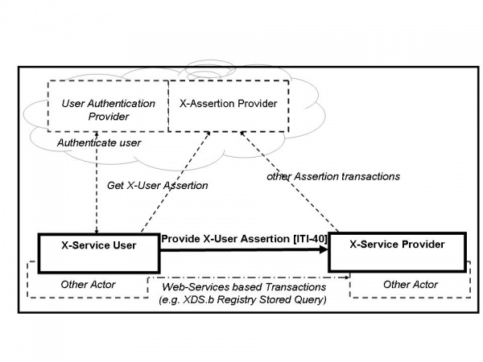
Figure 13.4-1: Cross-Enterprise User Assertion Actor Diagram
Table 13.4-1 lists the transactions for each actor directly involved in the XUA Profile. The ancillary actors and associated transactions may be supported by various technologies and system configurations varying from internal shared services to infrastructures for identity management.
In order to claim support of this Integration Profile, an implementation must perform the required transactions (labeled “R”). Transactions labeled “O” are optional. A complete list of options defined by this Integration Profile and that implementations may choose to support is listed in Section 13.5.
Table 13.4-1: XUA - Actors and Transactions
| Actor | Transaction | Optionality | Section |
|---|---|---|---|
| X-Service User | Provide X-User Assertion [ITI-40] | R | ITI TF-2b: 3.40 |
| X-Service Provider | Provide X-User Assertion [ITI-40] | R | ITI TF-2b: 3.40 |
Options that may be selected for this Integration Profile are listed in Table 13.5-1 along with the actors to which they apply. Dependencies between options when applicable are specified in notes.
Table 13.5-1: XUA - Actors and Options
| Actor | Option | Vol. & Section |
|---|---|---|
| X-Service User | Subject-Role | ITI TF-1: 13.5.1 |
| Authz-Consent | ITI TF-1: 13.5.2 | |
| PurposeOfUse | ITI TF-1: 13.5.3 | |
| X-Service Provider | Subject-Role | ITI TF-1: 13.5.1 |
| Authz-Consent | ITI TF-1: 13.5.2 | |
| PurposeOfUse | ITI TF-1: 13.5.3 |
Role-Based-Access Control is a common architecture for managing and enforcing authorizations. In this model users are assigned to roles, and permissions are assigned to these roles. In this way the administration of permissions to users is grouped through roles. In an RBAC model these roles are well known and agreed to between the system that is managing users and the access control system. Given that a Federated Identity environment allows for a loose coupling of the Identity-Manager and the Access Control point, there is a need to have a well-defined vocabulary for the roles. This set of roles will likely expand over time and will be extended with local codes into a Value-Set within any specific Security-Domain.
This option recommends that the Value-Set be derived from the role codes found in SNOMED-CT, ISO 21298, or ASTM E1986. The Value-Set used would bridge between different policy domain roles used in a client domain to those used in the service domain. In this way it is possible for local role definitions to be used as long as they can be bridged to the roles found in the selected Value-Set. Implementations should expect that the Value-Set used may be using locally defined values. The use of the IHE Sharing of Value-Sets (SVS) Profile may assist with this.
See ITI TF-2b: 3.40.4.1.2.1 and ITI TF-2b: 3.40.4.1.3.1 for transaction requirements.
There are transactions where the requester of the transaction knows of specific Consent/Authorization evidence that would enable that transaction. The identification could be used by the relying party Access Control engine as a hint. The Access Control engine could explicitly retrieve that specific object, validate that it is indeed a properly formed Consent/Authorization, and determine if that Consent/Authorization does indeed affect the Access Control decision.
This can be used where the requester had previously published Consent/Authorization evidence Document but where this new knowledge had not yet propagated fully to the Access Control infrastructure. This mechanism is also useful where the requester is under regulatory obligations to include evidence of Consent/Authorization on each transaction. When this Option is used in conjunction with the Basic Patient Privacy Consents (BPPC) Profile this would allow for the requester to include in the XUA Assertion identification of a newly published BPPC Document. This option leverages the BPPC consent model.
See ITI TF-2b: 3.40.4.1.2.2 and ITI TF-2b: 3.40.4.1.3.2 for transaction requirements.
As explained in the IHE Access Control White Paper, there are Access Control decisions that are based on the ultimate use of the data. For example, a Patient may have provided a BPPC Consent/Authorization for treatment purposes, but explicitly disallowed any use for research regardless of de-identification methods used. The purpose of use is also informative to the ATNA audit log to enable specific reporting of Accounting of Disclosures and Breach Notification. To enable this type of Audit Logging and Access Control decision there is a need to include in the XUA Assertion the intended purpose for which the data will be used. One specific purpose of use would be a Break-Glass / Emergency-Mode-Access.
This option recommends that the Value-Set be derived from the codes found in ISO 14265, or XSPA. Implementations should expect that the Value-Set used may be using locally defined values. The use of the IHE Sharing of Value-Sets (SVS) Profile may assist with this.
See ITI TF-2b: 3.40.4.1.2.3 and ITI TF-2b: 3.40.4.1.3.3 for transaction requirements.
The X-Identity Assertion is valuable and must be protected against confidentiality risks. In some Profiles (e.g., XDS), there is already an inherited requirement to group with ATNA Secure Node or Secure Application Actor. This grouping forces the network transactions to utilize mutually authenticated and encrypted TLS or equivalent. This is leveraged by XUA to support the protection of the X-User Assertion to some risks to confidentiality and integrity. When ATNA Secure Node or Secure Application grouping is not required, there will need to be some other mechanism to protect the Provide X-User Assertion.
ITI TF-2b: 3.40.4.2 includes encoding rules for representing an X-User Assertion in an ATNA Audit Message.
When an XDS.b Document Consumer is grouped with X-Service User Actor, the XDS.b Document Consumer shall conform to all the requirements in the Provide X-User Assertion Transaction. The Document Consumer will obtain a properly scoped XUA Assertion targeted for the XDS.b Document Registry or XDS.b Document Repository. The method used may be through internal means, SAML 2.0 Core protocols, WS-Trust, or any other means.
The XDS.b Document Registry and XDS.b Document Repository when grouped with the XUA X-Service Provider shall conform to all the requirements in the Provide X-User Assertion Transaction. The XUA Profile does not constrain how the Assertion can be used (e.g., ignored, access control, etc.).
An application that groups EUA and XUA Actors may use WS-Trust to get the X-User Assertion from the Security Token Service (STS). In this case the AuthnContextClassRef element of the SAML assertion shall be:
urn:oasis:names:tc:SAML:2.0:ac:classes:Kerberos
This conversion from one security token format to another is documented in the WS-Trust standard, and not further profiled by IHE.
Any actor that uses Web-Services according to ITI TF-2x: Appendix V may be grouped with the appropriate XUA Actors. The actor grouped with X-Service User Actor, the Requesting Actor, shall conform to all the requirements in the Provide X-User Assertion Transaction. The method used may be through internal means, SAML 2.0 Core protocols, WS-Trust, or any other means. The actor grouped with the X-Service Provider shall conform to all the requirements in the Provide X-User Assertion Transaction. The XUA Profile does not constrain how the Assertion can be used (e.g., ignored, access control, etc.).
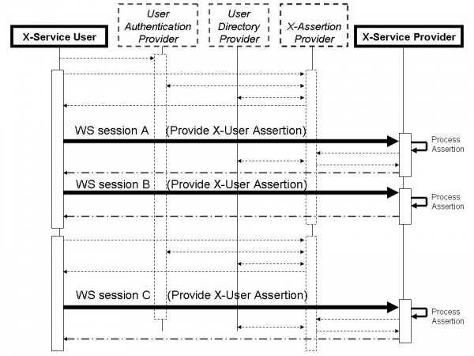
Figure 13.7-1: Cross-Enterprise User Assertion Process Flow
In the above flow we are showing more actors than are specified in this profile. This is a diagram showing a possible grouping with IHE-EUA (User Authentication Provider), IHE-PWP (User Directory Provider), and a SAML Identity Provider (X-Assertion Provider). The User Authentication Provider, User Directory Provider and X-Assertion Provider are not profiled here, but rather are shown to give a context to the XUA transactions.
In this figure the dark lines represent the X-User Assertion transaction. The dashed lines represent other standards-based transactions that may be used. Web-Services session A and B show an example where one X-User Assertion is used to cover two Web-Services transactions, where Web-Services Session C is using a different X-User Assertion. This may be due to a different user, timeout of the previous X-User Assertion, or some other reason.
The security risk assessment for XUA enumerates assets, threats, and mitigations. The security risk assessment for the Actors that are grouped with the XUA Actors are out of scope of the XUA Profile (e.g., an XDS Document Consumers performing Registry Stored Query and Retrieve Document Set. Please refer to the Security Considerations for those transactions). The complete risk data are stored and available from IHE. The purpose of this risk assessment is to notify vendors and healthcare providers of some of the risks that they are advised to consider in implementing XUA Actors. For general IHE risks and threats, please see ITI TF-1: Appendix L. The vendor is also advised that many risks cannot be mitigated by the IHE profile and instead responsibility for mitigation is transferred to the vendor, and occasionally to the affinity domains, individual enterprises and implementers. In these instances, IHE fulfills its responsibility to notify affected parties through the use of the following sections.
The Patient Administration Management Integration Profile defines transactions based on message exchanges to support patient identity and encounter information, as well as movements within an acute care encounter. These can be represented by the following use cases.
A Patient Registration application decides to create a new patient John Smith, based on patient information input from Hospital Sun. At this time, however, there is a limited set of personal information traits of John Smith available. His date of birth, home address, and home phone number are unknown. The registration application creates the patient identity and sends a Patient Creation message to its downstream applications with the set of known personal information traits.
The next day, detailed personal information about John Smith becomes available. The registration application updates its patient identity record, and sends out a Patient Update message.
After a week, the registration application creates a temporary patient identity John Doe based on input from Imaging Center Moon. After reconciliation of the temporary patient, it updates John Doe’s demographics to (a new instance of) John Smith, and changes the temporary Patient Identifier originally assigned to a permanent identifier.
After human inspection, it turns out that these two identities of John Smith represent the same person. The operator decides to merge the second identity to the previously established identity John Smith. A Patient Merge is communicated downstream.
Patient Alan Alpha arrives for an annual exam at a clinic. The registration system sends the patient registration information to the local ancillary systems, and the affiliated hospital's ADT system.
The exam of Alan Alpha reveals a serious condition, and an immediate hospital admission is recommended. Alan Alpha is referred to the affiliated hospital for admission. He is pre-admitted in the hospital for relevant diagnostic tests. The tests confirm the condition, and the patient is admitted in the hospital's ICU. During the stay in the ICU, the patient's insurance is verified, and the updated information is sent from the hospital’s ADT system to the hospital’s ancillary systems.
After a day in the ICU, Alan Alpha’s condition has improved, and he is transferred to a regular bed. The nurse recording the transfer makes a mistake, and enters the wrong room and bed. After discovering the error, the transfer is canceled, and the correct transfer is recorded. The patient is now recovered and about to leave the hospital. According to the hospital's procedures, he is transferred to an outpatient unit for administering follow-up tests. The patient is registered in the Hospital Outpatient Registration System.
The outpatient encounter of Alan Alpha is completed; based on satisfactory test results, he is discharged from the hospital and the Outpatient Registration system.
In this use case, two patient encounter management systems (the hospital ADT system and the hospital Outpatient Registration system) cooperate as peers.
This section defines the actors, transactions, and/or content modules in this profile. General definitions of actors are given in the Technical Frameworks General Introduction Appendix A at http://ihe.net/TF_Intro_Appendices.
Figure 14.2.2-1 shows the actors directly involved in the Patient Administration Management Integration Profile and the relevant transactions between them. Other actors that may be indirectly involved because of their participation in other IHE Integration Profiles, such as Radiology Scheduled Workflow, Patient Identity Cross-Referencing Integration Profiles, etc., are not shown.
 Figure 14.2.2-1: Patient Administration Management Actor Diagram
Figure 14.2.2-1: Patient Administration Management Actor Diagram
Table 14.2.2-1 lists the transactions for each actor directly involved in the Patient Management Integration Profile. In order to claim support of this integration profile, an implementation must perform the required transactions (labeled “R”). A complete list of options defined by this Integration Profile that implementations may choose to support is listed in Table 14.3-1.
Table 14.2.2-1: Patient Administration Management - Actors and Transactions
| Actors | Transactions | Optionality | Section |
| Patient Demographics Supplier | Patient Identity Management [ITI-30] | R | ITI TF-2b: 3.30 |
| Patient Demographics Consumer | Patient Identity Management [ITI-30] | R | ITI TF-2b: 3.30 |
| Patient Encounter Supplier | Patient Encounter Management [ITI-31] | R | ITI TF-2b: 3.31 |
| Patient Encounter Consumer | Patient Encounter Management [ITI-31] | R | ITI TF-2b: 3.31 |
Most requirements are documented in Transactions (Volume 2) and Content Modules (Volume 3). This section documents any additional requirements on profile’s actors.
The Patient Demographics Supplier shall support at least one of the Merge Option or the Link/Unlink Option. These options define additional messages that shall be supported by these actors. See Section 14.3.
The Patient Demographics Consumer shall support at least one of the Merge Option or the Link/Unlink Option. These options define additional messages that shall be supported by these actors. See Section 14.3.
The Patient Encounter Supplier shall support the Basic Subset of messages defined in ITI TF-2b: 3.31.5.1.
The Patient Encounter Consumer shall support the Basic Subset of messages defined in ITI TF-2b: 3.31.5.1.
Options that may be selected for this Integration Profile are listed in Table 14.3-1 along with the Actors to which they apply. Dependencies between options when applicable are specified in notes.
Table 14.3-1: Patient Administration Management - Actors and Options
| Actor | Options | Vol. & Section |
| Patient Demographics Supplier | Merge (Note 1) | ITI TF-2b: 3.304.1 |
| Link / Unlink (Note 1) | ITI TF-2b: 3.30.4.2 | |
| Acknowledgement Support | ITI TF-2b: 3.30.4.4 | |
| Ambulatory Patient Data | ITI TF-2b: 3.30.4.5 | |
| Patient Demographics Consumer | Merge (Note 1) | ITI TF-2b: 3.30.4.1 |
| Link / Unlink (Note 1) | ITI TF-2b: 3.30.4.2 | |
| Acknowledgement Support | ITI TF-2b: 3.30.4.4 | |
| Patient Encounter Supplier | Inpatient / Outpatient Encounter Management | ITI TF-2b: 3.31.5.2 |
| Pending Event Management (Note 2) | ITI TF-2b: 3.31.5.3 | |
| Advanced Encounter Management | ITI TF-2b: 3.31.5.4 | |
| Temporary Patient Transfer Tracking | ITI TF-2b: 3.31.5.5 | |
| Historic Movement | ITI TF-2b: 3.31.5.6 | |
| Acknowledgement Support | ITI TF-2b: 3.31.5.7 | |
| Maintain Demographics | ITI TF-1: 14.3.9 ITI TF-2b: 3.31.5.8 |
|
| Ambulatory Patient Data | ITI TF-2b: 3.31.5.8 | |
| Patient Encounter Consumer | Inpatient / Outpatient Encounter Management | ITI TF-2b: 3.31.5.2 |
| Pending Event Management (Note 2) | ITI TF-2b: 3.31.5.3 | |
| Advanced Encounter Management | ITI TF-2b: 3.31.5.4 | |
| Temporary Patient Transfer Tracking | ITI TF-2b: 3.31.5.5 | |
| Historic Movement | ITI TF-2b: 3.31.5.6 | |
| Acknowledgement Support | ITI TF-2b: 3.31.5.7 | |
| Maintain Demographics | ITI TF-1: 14.3.9 ITI TF-2b: 3.31.5.8 |
Note 1: An IHE National Extension shall select at least one of the Merge and Link / Unlink Options, and shall mandate the same option for both the Patient Demographics Supplier and the Patient Demographics Consumer implementations in its realm to ensure interoperability.
Note 2: The Pending Event Management Option depends on the Inpatient / Outpatient Encounter Management Option. An implementation supporting the Pending Event Management Option must also support the Inpatient / Outpatient Encounter Management Option.
The PAM Profile offers a large number of options to support the exchange of patient demographic and encounter data in a wide variety of environments. Particularly, this profile addresses both acute care settings and ambulatory healthcare organizations. It is unlikely that one particular environment will need all the options.
On one hand, an ambulatory care community might need only the pair of actors Patient Demographics Supplier/Patient Demographics Consumer, using transaction [ITI-30]. On the other hand, the exchange of patient demographic and encounter data between a hospital patient administration system and its ancillary systems (laboratory, radiology, cardiology, etc.) might be fully satisfied, for example, with the pair of actors Patient Encounter Supplier/Patient Encounter Consumer, using transaction [ITI-31] with the Basic Subset of messages and the two options “Inpatient/Outpatient Encounter Management” and “Maintain Demographics.”
Hence, the first decision that must be made by a healthcare organization for the deployment of this profile is to select the proper actors and the appropriate set of options to cover its needs, ensuring that each selected option will be supported by the actors on both ends of the transactions.
Furthermore, as an IT Infrastructure profile, the PAM Profile may not be used standalone. Rather, its actors and transactions will be leveraged by other domain integration profiles (in radiology, cardiology, laboratory, or in cross enterprise document sharing). Here again, the first decision that will be taken by the IHE committee that wishes to leverage PAM for its domain, will be to select the proper set of options and to ascertain the consistent use of these options in its domain.
Thus, during the building process of IHE domain technical frameworks, as well as in the deployment process, the PAM Profile will be constrained to reduce its original number of options.
However, to accommodate situations in which a consumer application would not support an option implemented by a supplier application, the PAM Profile requires that the consumer application shall application-reject a message that it does not support (see ITI TF-2x: C.2.3).
The Merge Option defines the information exchange needed to manage the merging of patient identifiers.
The Link / Unlink Option defines the information exchanges needed to manage the linking and unlinking of patient identifiers, respectively.
The Inpatient / Outpatient Encounter Management Option extends the basic patient encounter management functions by defining the information exchanges needed for pre-admitting a patient and for transferring a patient from one location to another location in the enterprise, as well as for changing patient class.
The Pending Event Management Option extends the basic patient encounter management functions by defining the information exchanges needed for supporting pending events, e.g., admission, transfer, and discharge.
The Advanced Encounter Management Option extends the basic patient encounter management functions by defining a set of messages for handling patient temporary absence, changing attending doctor in an encounter, and moving accounts among different patient identities.
The Temporary Patient Transfer Tracking Option defines the information exchange needed for tracking a temporary leave / return of a patient from / to a care facility.
The Historic Movement Option extends the basic patient encounter management functions, as well as the following Options:
Inpatient / Outpatient Encounter Management
Pending Event Management
Advanced Encounter Management Options
The Historic Movement Option provides a means to uniquely identify any movement event conveyed in the underlying information exchange. This enables updates of such events at any later time point after they were initially reported.
An actor that claims support for the Acknowledgement Support Option shall be capable of using the enhanced acknowledgement mode as defined in the HL7 v2.x standard.
The Maintain Demographics Option extends patient encounter management functions by defining a set of messages for merging patient identifiers and updating patient information in the context of a particular encounter, using transaction [ITI-31].
If the Patient Demographics Supplier supports the Ambulatory Patient Data Option, it shall be capable of providing the patient address.
If the Patient Encounter Supplier supports the Ambulatory Patient Data Option, it shall be capable of providing the patient address, the patient ambulatory status and the referring doctor.
See ITI TF-2b: 3.30.4.5 and ITI TF-2b: 3.31.5.8.
In order to obtain patient identity and demographics information to serve its patient encounter message functions in transaction [ITI-31], a Patient Encounter Supplier is required to be grouped with either a Patient Demographics Supplier or a Patient Demographics Consumer, as shown in Figure 14.4.1-1.
 Figure 14.4.1-1: Patient Encounter Supplier Grouping Requirements
Figure 14.4.1-1: Patient Encounter Supplier Grouping Requirements
On the other hand, transaction [ITI-31] is self-contained in a sense that the Patient Encounter Supplier sends both patient encounter information and patient identity and demographics information (in the context of the encounter data) to the Patient Encounter Consumer. In addition, transaction [ITI-31] also allows the Patient Encounter Supplier to send messages to the Patient Encounter Consumer for patient identity maintenance in the encounter context, including patient update and identity merge. There is no required grouping for the Patient Encounter Consumer.
The PAM Profile provides an infrastructure in a healthcare enterprise or across a number of enterprises to distribute the patient identity, demographics, and encounter information, in order to enable various clinical functions in clinical settings. The PAM actors can be grouped with actors in other IHE Integration Profiles.
One possible grouping is between the Patient Demographics Supplier in the PDQ Profile and either the Patient Demographics Supplier or the Patient Demographics Consumer in this profile, to add query support defined in the Patient Demographics Query transaction to the same set of patient information managed in the PAM Profile.
Furthermore, the Patient Demographics Supplier in the PDQ Profile can be grouped with the Patient Encounter Supplier of this profile. Due to the required grouping of the Patient Encounter Supplier (see Section 14.4.1), such a grouping can provide query support defined in both the Patient Demographics Query and Patient Demographics and Visit Query transactions to the same set of patient and encounter information that is managed in the PAM Profile.
These are some examples of possible grouping of the PAM actors with other IHE actors. Many other possibilities may be useful (either to provide additional values or to allow profile structure simplification). For example, in the radiology scheduled workflow (SWF) Profile, the Order Placer and Order Filler Actors can be grouped with the Patient Encounter Consumer Actor.
The Patient Identity Management incorporates the following process flows. This refines the use case shown in ITI TF-1: 14.1.1.
Create Patient. The Patient Demographics Supplier decides to create a new patient John Smith, based on patient information input from Hospital Sun. At this time, however, there is a limited set of personal information traits of John Smith available. His date of birth, home address, and home phone number, e.g., are unknown. The Patient Demographics Supplier creates the patient identity and sends a Patient Creation message to the Patient Demographics Consumer with the set of known personal information traits.
Update Patient Demographics. The next day, detailed personal information about John Smith becomes available. The Patient Demographics Supplier updates its patient identity record, and sends out a Patient Update message, including date of birth, home address and home phone number.
Create Temporary Patient. After a week, the Patient Demographics Supplier creates a temporary patient identity John Doe based on input from Imaging Center Moon.
Update Patient Demographics and Change Patient Identifiers After reconciliation of the temporary patient, the Patient Demographics Supplier updates John Doe’s demographics to (a new instance of) John Smith, and changes the temporary Patient Identifier originally assigned to a permanent identifier
Merge Patient Identifiers. After human inspection, it turns out that the two patients named John Smith in the Patient Demographics Supplier actually represent the same real-world patient. The operator decides to merge the two patient identities. The Patient Demographics Supplier sends a Patient Merge message to the Patient Demographics Consumer.
The following diagram shows the process flow:
Figure 14.5.1.1-1: Patient Identity Management Process Flow in PAM Profile
Link Patient Identifiers. A similar situation as that mentioned above, except that the local procedures request the Patient Demographics Supplier to link these two duplicated patient records instead of merging them. The operator performs the link function. The Patient Demographics Supplier sends a Patient Identifiers Link message to the Patient Demographics Consumer.
The following diagram shows the alternate portion of the process flow:
Figure 14.5.1.2-1: Patient Identity Management Alternate Process Flow in PAM Profile
The Patient Encounter Management incorporates the following process flows:
In this section, inpatient/outpatient encounter management process flow is described in an environment that involves a number of instances of Patient Encounter Supplier and Patient Encounter Consumer. This refines the use case shown in Section 14.1.2
In some institutions, there may be one central Patient Encounter Supplier, while others may have multiple Patient Encounter Suppliers serving patient encounter management functions in different clinical settings (e.g., hospital inpatient, hospital outpatient, clinics). It is the responsibility of a healthcare institution to define the actor roles of its systems, as well as to configure the relationship of a Patient Encounter Supplier and its Patient Encounter Consumers, to satisfy their business process models.
As shown in Figure 14.5.2.1-1, in the healthcare institution of this process flow, there are three Patient Encounter Suppliers, each of which serves a number of Patient Encounter Consumers in a specific clinical setting of the institution.
Figure 14.5.2.1-1: System and PAM Actor Role Configuration
The systems involved in this process flow implement the following PAM roles:
Clinic Registration System as Patient Encounter Supplier
Clinic Ancillary System as Patient Encounter Consumer
Hospital ADT system as both Patient Encounter Supplier and Patient Encounter Consumer
Hospital Ancillary system as Patient Encounter Consumer
Hospital Outpatient Registration System as both Patient Encounter Supplier and Patient Encounter Consumer
Note that the Hospital ADT and Outpatient Registration Systems play both the roles of Patient Encounter Supplier and Patient Encounter Consumer, and cooperate as peers. The relationship between the Patient Encounter Supplier and Patient Encounter Consumer in the same system is dependent on the clinical application logic implemented in the institution, and the definition of this relationship is beyond the scope of the PAM Integration Profile.
The process flow in Figure 14.5.2.1-2 is described in the following:
Patient Registration: A patient arrives for an annual exam at a clinic. The patient record has been created previously by a Patient Demographics Supplier, and exists in the clinic’s registration system through its grouping with the Patient Demographics Supplier Actor. The clinic’s registration system sends the Patient Registration message to the local ancillary systems, and the affiliated hospital’s ADT system.
Change Outpatient to Inpatient: The exam reveals a serious condition of the patient, and an immediate hospital admission is recommended. The patient is referred to the affiliated hospital for admission. A Change Outpatient to Inpatient message is sent to the hospital’s ADT System.
Pre-admit Patient for Hospitalization: The patient is pre-admitted in the hospital for relevant diagnostic tests. The hospital ADT system sends Patient Pre-Admit message to the Hospital Ancillary System.
Patient Admitted Notification: The tests confirm the condition, and the patient is admitted to the hospital’s ICU. The hospital ADT system sends an Admission Notification message to the Ancillary System.
Patient Insurance Information Update: During the stay in the ICU, the patient’s insurance is verified, and the updated information is sent from the hospital ADT to the Hospital Ancillary System.
Patient Location Transfer: After a day in the ICU, the patient’s condition has improved, and the patient is transferred to a regular bed. The hospital ADT system sends a Patient Transfer message to the Hospital Ancillary System.
Patient Location Transfer Error Reconciliation: The nurse recording the transfer makes a mistake, and enters the wrong room and bed. After discovering the error, the hospital ADT system sends a Cancel Patient Transfer message to the Hospital Ancillary System, followed by a new Patient Transfer message.
Patient Pending Discharge: The patient is now recovered and about to leave the hospital. The ADT system sends a Patient Pending Discharge message to the Hospital Ancillary System.
Change Inpatient to Outpatient: According to the hospital’s procedures, the patient is transferred to an outpatient unit for administration of follow-up tests. The ADT system sends a Change Inpatient to Outpatient message to the Hospital Outpatient Registration System.
Register Patient as Outpatient: The patient is registered in the Hospital Outpatient Registration System, which sends a Patient Registration message to the Hospital ADT system and the Hospital Ancillary System.
Patient Discharged from Outpatient System: The outpatient encounter is completed. A Patient Discharge message is sent to the Hospital ADT System and to the Hospital Ancillary System.
Patient discharged from Hospital ADT System: Based on satisfactory test results, the patient is discharged. The hospital ADT system sends a Patient Discharge message to the Hospital Ancillary System.
The following diagram shows the process flows of the discussed use cases:
Figure 14.5.2.1-2: Inpatient / Outpatient Encounter Management Process Flow in PAM Profile
Attending Physician Change: A patient’s attending physician changes during an inpatient stay. The Patient Encounter Supplier sends a notification message that contains the name of the new attending doctor to the Patient Encounter Consumer.
Cancellation of Attending Physician Change: A notification of change of a patient’s attending physician was sent in error. The Patient Encounter Supplier sends a cancellation message that contains the name of the old attending doctor to the Patient Encounter Consumer.
Leave of Absence: An inpatient is authorized a weekend leave of absence from the medical center. The Patient Encounter Supplier sends a notification message to the Patient Encounter Consumer that contains the date and time of the leave of absence and of the expected return.
Cancellation of Leave of Absence: A notification that an inpatient was authorized a weekend leave of absence was sent in error. The Patient Encounter Supplier sends a cancellation message to the Patient Encounter Consumer.
Return from Leave of Absence: An inpatient returns to the medical center from a weekend leave of absence. The Patient Encounter Supplier sends a notification message to the Patient Encounter Consumer that contains the date and time of the expected return and of the actual return.
Cancellation of Return from Leave of Absence: A notification that an inpatient returned from a weekend leave of absence was sent in error. The Patient Encounter Supplier sends a cancellation message to the Patient Encounter Consumer.
Move Account: The Patient Encounter Supplier sends a message that incorrectly associates Account 12345 with Patient A; in fact, Account 12345 should be associated with Patient B. To affect a correction, the Patient Encounter Supplier sends a message to the Patient Encounter Consumer that contains the account identifier and the identifiers of the patient records between which the account association is to be moved.
The following diagram shows these discussed use cases:
Figure 14.5.2.2-1: Advanced Encounter Management Process Flow in PAM Profile
Historic tracking of patient admissions, discharges, and other movements may be needed in some healthcare institutions. Such historic events may need to be tracked even beyond the boundary of an episode of care. In order to facilitate this tracking, the Patient Encounter Supplier may send the messages in Sections 14.5.2.1 and 14.5.2.2 to the Patient Encounter Consumer, with the addition of an identifier for the particular encounter with which the patient admission, discharge, or movement is associated.
Patient Location Transfer: A patient is transferred to bed 23 of Room B after a few days of stay in ICU. The hospital ADT system sends a Patient Transfer message (including the elements provided in the Historic Movement Management Option) to the downstream applications.
Update Previous Transfer Event. After two days, the operator of the ADT system detects that the transfer destination and time in the previously sent Patient Transfer message were wrong. He corrects the errors and an Update Historic Patient Transfer message is sent out, to communicate the true room / bed information and the true transfer time.
The following diagram shows these use cases:
Figure 14.5.2.3-1: Historic Movement Management Process Flow in PAM Profile
Departure to Temporary Location: A chest X-ray is scheduled for an inpatient. To perform this service, the patient needs to be moved from her inpatient bed in the medical service to the Radiology department. When the patient departs from her inpatient bed, the Patient Encounter Supplier sends a notification message to the Patient Encounter Consumer that contains the temporary location to which the patient is being moved.
Arrival at Temporary Location: When the patient arrives at the Radiology department, the Patient Encounter Supplier sends a notification message to the Patient Encounter Consumer that contains the temporary location to which the patient has been moved.
Cancellation of Departure to Temporary Location: It is incorrectly communicated that a patient left her inpatient bed to move to the Cardiology department for treatment. The Patient Encounter Supplier sends a cancellation message to the Patient Encounter Consumer that contains the patient’s location(s) (permanent and / or temporary) prior to the time of the erroneously communicated departure.
Cancellation of Arrival at Temporary Location: It is incorrectly communicated that a patient, having left her inpatient bed, arrived in the Surgery department for treatment. The Patient Encounter Supplier sends a cancellation message to the Patient Encounter Consumer that contains the patient’s location(s) (permanent and / or temporary) prior to the time of the erroneously communicated arrival.
The following diagram shows these discussed use cases:
Figure 14.5.2.4-1: Temporary Patient Transfer Tracking Process Flow in PAM Profile
Cross-Enterprise Document Reliable Interchange (XDR) provides document interchange using a reliable messaging system. This permits direct document interchange between EHRs, PHRs, and other healthcare IT systems in the absence of a document sharing infrastructure such as XDS Registry and Repositories.
XDR provides a reliable and automatic transfer of documents and metadata for one patient between EHR systems even in the absence of an XDS infrastructure. XDR supports the reuse of the Provide and Register Set transaction-b with Web-Services as transport. Transfer is direct from source to consumer; no repository or registry actors are involved.
XDR is document format agnostic, supporting the same document content as XDS and XDM. Document content is described in XDS Document Content Profiles. Examples are XDS-MS, XD-LAB, XPHR, and XDS-SD.
XDR defines no new metadata or message formats. It leverages XDS metadata with emphasis on patient identification, document identification, description, and relationships.
Figure 15.1-1 shows the actors directly involved in the XDR Integration Profile and the relevant transactions between them. Other actors that may be indirectly involved due to their participation in XDS, PIX or XUA are not shown.
Figure 15.1-1: XDR Actor Diagram
Table 15.1-1 lists the transactions for each actor directly involved in the XDR Profile. In order to claim support of this Integration Profile with one or more actors, an implementation must perform the required transactions (labeled “R”). Transactions labeled “O” are optional. A complete list of options defined by this Integration Profile and that implementations may choose to support is listed in Section 15.2.
Table 15.1-1: XDR Integration Profile - Actors and Transactions
| Actors | Transactions | Optionality | Section in Vol. 2 |
| Document Source | Provide and Register Document Set-b [ITI-41] | R | ITI TF-2b:3.41 |
| Metadata-Limited Document Source | Provide and Register Document Set-b [ITI-41] | R | ITI TF-2b:3.41 |
| Document Recipient | Provide and Register Document Set –b [ITI-41] | R | ITI TF-2b:3.41 |
An implementation of the Document Source or Metadata-Limited Document Source shall be able to submit documents. Whether a submission contains a single or multiple documents depends on workflows, policies, and other external factors which are outside of the scope of this transaction.
Options that may be selected for this Integration Profile are listed in Table 15.2-1 along with the Actors to which they apply. Dependencies between options when applicable are specified in notes.
Table 15.2-1: XDR - Actors and Options
| Actor | Options | Vol. & Section |
| Document Source | Basic Patient Privacy Enforcement | ITI TF-1: 15.2.2 |
| Metadata-Limited Document Source | Basic Patient Privacy Enforcement | ITI TF-1: 1 5.2.2 |
| Document Recipient | Basic Patient Privacy Enforcement | ITI TF-1: 15.2.2 |
| Accepts Limited Metadata | ITI TF-1: 15.2.3 |
For this option, see ITI TF-1: 10.2.9
When the Document Recipient declares this option, it will accept metadata entries from a Metadata-Limited Document Source which use the less rigorous metadata attribute requirements as shown in ITI TF-2b: Table 3.41.4.1.2-2.
XDR describes the exchange of a set of a patient’s documents between healthcare providers, such as: physicians, hospitals, special care networks, or other healthcare professionals.
Where XDS Registry/Repositories are not yet implemented or available for the exchange of information, XDR is the viable approach.
In a situation where the information is going to an automated application or robust system capable of automated storage or processing of documents relative to one patient, XDR is the appropriate profile.
The XDR Integration Profile is intended only for exchange of patient related medical documents and not intended to address all cross-enterprise EHR communication needs.
Use Cases:
Dr. Primary refers his aging patient Mr. Robinson to his first appointment with a gastroenterology specialist.
Since there is no XDS Document Repository available at the gastro clinic, Dr. Primary cannot use XDS to communicate the XDS-MS referral to Dr. Gastro. Also, since there is no affinity domain linking Dr. Primary and Dr. Gastro, XDR is preferable to XDS for the exchange of Mr. Robinson’s referral information. XDR is also appropriate for Dr. Gastro’s documents communication to Dr. Primary.
Mabel is transferred from a hospital setting to her retirement home for long-term care.
XDR: Mabel’s information can be transferred from the hospital to the long-term care facility’s EHR application for future review by her attending physicians and nurses, through XDR.
Stanley’s recent MRI has generated unusual results that Stanley’s primary physician would like to consult with another specialist in a specialized cancer facility located across the state. Since there is not likely to be an affinity domain between the remote health environments, XDR can be used instead.
Mrs. Sweettooth has been diagnosed with adult diabetes and her specialized circle of care has not yet gotten organized to provide shared access to a common repository. Until they do, they will need to exchange her information peer-to-peer using XDR.
This profile is only defining the digital transport mechanism used for such use cases, content transported will be detailed by Content Profiles such as the ones defined by the IHE PCC (Patient Care Coordination) domain.
Figure 15.3-1: Process Flow in XDR Profile
It is a webservice-based HTTP message.
The profile assumes that the health organizations that are using Document Source and Document Recipient have an agreement defining when they can interchange PHI. This may require an explicit patient consent (depending on the regulation) and an agreement on how to manage the potential inconsistency between the security policies. The main aspects that should be covered by this agreement are similar to XDS – See Appendix L. In the case of XDR, the EHR-to-EHR (or PHR) communication is a transient XDS Affinity Domain. In addition, the following aspects should be covered:
Management of Patient identification in order to perform patient reconciliation correctly upon importation of the documents.
Both actors for this profile require a grouping with Secure Node.
Cross-Enterprise Document Media Interchange (XDM) provides document interchange using a common file and directory structure over several standard media types. This permits the patient to use physical media to carry medical documents. This also permits the use of person-to-person email to convey medical documents. XDM supports the transfer of data about multiple patients within one data exchange.
Physician to patient to physician - Bob has an MRI and cancer is diagnosed. He is given a CD-R with his MRI results and referral information on it to give to the specialist of his choice.
Patient visiting ED - In addition, Bob, the informed patient, maintains a copy of his EHR record at home and can bring the CD-R with him when he visits the ED for an unrelated emergency.
Physician to physician - Dr. Primary refers his aging patient Mr. Robinson to his first appointment with a gastroenterology specialist. He transfers relevant documents in a zip file attached to an email to the specialist.
The common thread of these use cases is that they are person-to-person communications. The XDM solution is intended to be easy to implement with pre-existing email clients, CD burners and USB ports. XDM does not include any additional reliability enhancements. XDM requires that the recipient be able to support human intervention in order to manually control the importing of the data (patient ID reconciliation, selection of patient of interest from possibly multiple patients’ documents on the media).
XDM is document format agnostic, supporting the same document content as XDS and XDR. Document content is described in Document Content Profiles. Examples are XDS-MS, XPHR, XDS-SD, and XD-LAB.
XDM defines no new metadata. It leverages XDS metadata with emphasis on patient identification, document identification, description, and relationships.
A directory and file structure is documented for populating the media. This structure maintains separate areas for each patient listed and is supported on all referenced media types. Media and the structure were selected based on experience with media interoperability in Radiology, i.e., PDI Profile. The media selected are the widespread CD-R, USB removable media, and email with ZIP attachment.
Figure 16.1-1 shows the actors directly involved in the XDM Integration Profile and the relevant transactions between them. Other actors that may be indirectly involved due to their participation in XDS, PIX or PDI are not shown.
Figure 16.1-1: XDM Actor Diagram
Table 16.1-1 lists the transactions for each actor directly involved in the XDM Profile. In order to claim support of this Integration Profile with one or more actors, an implementation must perform the required transactions (labeled “R”). Transactions labeled “O” are optional. A complete list of options defined by this Integration Profile and that implementations may choose to support is listed in Section 16.2.
Table 16.1-1: XDM Integration Profile - Actors and Transactions
| Actors | Transactions | Optionality | Section |
| Portable Media Creator | Distribute Document Set on Media [ITI-32] | R | ITI TF-2b: 3.32 |
| Portable Media Importer | Distribute Document Set on Media [ITI-32] | R | ITI TF-2b: 3.32 |
Options that may be selected for this Integration Profile are listed in Table 16.2-1 along with the Actors to which they apply. Dependencies between options when applicable are specified in notes.
Table 16.2-1: XDM - Actors and Options
| Actor | Options | Vol. & Section |
| Portable Media Creator | USB (Note 1) | ITI TF-1: 16.2.1 |
| CD-R (Note 1) | ITI TF-1: 16.2.2 | |
| ZIP over Email (Note 1) | ITI TF-1: 16.2.3 | |
| Basic Patient Privacy Enforcement | ITI TF-2b: 3.32.4.1.4.1 | |
| Zip over Email Response (Note 2) | ITI TF-1: 16.2.4 | |
| Portable Media Importer | USB (Note 1) | ITI TF-1: 16.2.1 |
| CD-R (Note 1) | ITI TF-1: 16.2.2 | |
| ZIP over Email (Note 1) | ITI TF-1: 16.2.3 | |
| Basic Patient Privacy Enforcement | ITI TF-2b: 3.32.4.1.4.1 | |
| Zip over Email Response (Note 2) | ITI TF-1: 16.2.4 |
Note 1: At least one of these options is required for each Actor. In order to enable a better interoperability, is highly recommended that the actors support all the options.
Note 2: This option requires the ZIP over Email Option.
In this option the Portable Media Creator writes a set of documents on USB media. The media is physically transported to the Portable Media Importer which then imports the document set.
In this option the Portable Media Creator writes a set of documents on CD-R media. The media is physically transported to the Portable Media Importer which then imports the document set.
In this option the Portable Media Creator creates an ordinary ZIP file of the virtual media containing document set(s). The ZIP file is attached to an Email sent to the Portable Media Importer which then retrieves the Email and imports the ZIP file containing the document set.
In this option the Portable Media Importer sends a response (MDN Based) to the Portable Media Creator to acknowledge that the Import operation of the Document Set(s) received was successful.
If this option is supported, the ZIP over Email Option shall be supported.
XDM describes the exchange of a set of a patient’s documents between healthcare providers, such as: physicians, hospitals, special care networks, or other healthcare professionals.
Where XDS is not desirable or available for one of the participants in the exchange of information, XDM is a viable option.
XDM should be used in a situation where the information receiver is an individual who will manually interpret or examine the data and associated documents as though they were using physical media. XDM also allows for the exchange of documents relating to multiple patients, since the data will be interpreted manually by human intervention.
The XDM Integration Profile is intended only for exchange of personal medical documents and not intended to address all cross-enterprise EHR communication needs. Some use cases may require the use of other IHE integration profiles such as XDS, DSG, PIX, and ATNA. Other use cases may only be partially supported, while still others may require future IHE integration profiles.
Use Cases:
Dr. Primary refers his aging patient Mr. Robinson to his first appointment with a gastroenterology specialist.
In a case where either Dr. Primary’s office or Dr. Gastro’s clinic was not able to handle secure email, or other sustained online point-to-point communications (e.g., http over VPN), the XDM Profile would provide further solutions for the simpler environment, such as the use of physical media, or email where the interchanged document set will be manually interpreted by a human intervention.
In a hospital that does not have an XDS infrastructure; the XDS-MS Content Profile discharge use case can also be handled by XDM. For example:
In a hospital, or in the case of a family physician not using robust EHR, the patient could be handed a CD or USB media with their discharge information on it to bring with them to their follow-up visit with their family physician.
Mabel is transferred from a hospital setting to her retirement home for long-term care.
If the hospital does not have an EHR application that automatically interprets her medical data and shares it with the necessary members of her health team, the information can be transferred manually directly to the file clerk, intake coordinator, records manager, or primary physician depending on the organization’s resource model.
Stanley’s recent MRI has generated unusual results that Stanley’s primary physician would like to consult with another specialist in a specialized cancer facility located across the state. Since there is not likely to be an affinity domain between the remote health environments, XDM can be used instead.
Bob, the informed patient, maintains a copy of his Personal Health Record (PHR) at home. In this situation, Bob can be given a copy of his medical information on physical media such as a CD-ROM to take home with him. Bob now has an advantage that he can continue to have his complete medical record available with him on sudden emergency department visits, even when he is on an out-of-state trip where the new ED would have no access to the repository of his home affinity domain.
This profile is only defining the digital transport mechanism used for such use cases. Content transported will be detailed by Content Profiles such as the ones defined by the IHE PCC (Patient Care Coordination) domain.
Figure 16.3-1: Process Flow in XDM Profile
The media can be either CD-R or a USB media device, because these are the most common media types in other industries for the portable transport of electronic information. This supplement requires using one of these media types, depending on the use case. The benefit and risks of the reusability of the media deployed should be taken into account, especially when the media is under the control of the patient.
Note: 1. Because the size of documents to be exchanged rarely requires more than the capacity of a CD, and the format for storing data on various different recordable DVD media is not totally stable yet, this profile is following the restriction defined in the IHE RAD PDI Profile, to not use recordable DVD media at this time.
2. CD-RW is excluded from this profile because field experiences with CD-RW in radiology with this media showed significant interoperability problems and significant accidental damage levels.
3. The CD-R media is limited to the 74 minute blanks because the long playing CD-R format gains the larger capacity by eliminating one level of error correction and detection. The resulting much higher undetected error rate is considered unacceptable for medical data.
The media can be a ZIP file containing the document set and sent via a secure email message.
The requirements for media content are intended to promote the simple transfer of medical documents, including patient summaries, lab results, discharge letters and reports, and to allow for the viewing of such documents on general purpose computers by care providers or patients.
Created media are required to contain documents and the relevant associated metadata.
The media contains one or more Submission Sets including the documents and the associated metadata, organized in a well-defined directory structure starting at the root level.
The media content can be made web viewable by a web browser by providing optional files containing HTML content. This content must be based on the original documents in order to ensure consistency. Any ordinary web browser can be used to read these files. The Portable Media Importer ignores these files. They are just intended for the human recipient.
Additional content may be present (files, directories), but can be ignored by the Portable Media Importer.
To summarize, the Portable Media Importer has two complementary ways to access the media and its content through a basic web browser:
By inspecting in the directory dedicated to XDM all the subdirectories that contain a specifically named metadata file compatible with XDM
By presenting to the user the HTML index file that lists the submission sets and documents contained in the media.
Access to the content of an individual document is outside the scope of this Integration Profile and shall be addressed in specific IHE document content Integration Profiles.
The Profile assumes that the Healthcare delivery organizations that are using Portable Media Creator and Importer have an agreement defining when they can interchange PHI. This may require an explicit patient consent (depending on existing regulations) and an agreement on how to manage the potential inconsistency between the security policies. The main aspects that should be covered by this agreement are similar to XDS – See ITI TF-1: Appendix L. In addition, the following aspects should be covered:
Management of Patient identification in order to perform patient reconciliation correctly upon importation of the documents.
Measures taken to avoid or limit loss of media or email, and detect that which occurs.
In the case of physical media, security responsibilities for confidentiality and integrity are transferred to the patient by providing the media to the patient. In this case it is the patient’s responsibility to protect the media, and the patient has the authority to disclose the contents of the media as they choose. They disclose the contents by providing the media.
The Portable Media Creator in most cases does not know who the ultimate Importer will be, thus rendering encryption impractical.
In the case of transfer over email using a ZIP attachment, the transaction is secured by the use of S/MIME.
Both Actors for this Profile require a grouping with an ATNA Secure Node or Secure Application.
A Portable Media Creator in XDM might be grouped with a Portable Media Creator in the RAD PDI Profile to enable it to include DICOM instances on the same media. A grouped PDI / XDM Media Creator application will handle the data for the media as defined for each actor by its profile. This grouping is described in RAD TF-3: 4.47.4.1.2.2.3.
A Portable Media Importer in XDM might be grouped with a Portable Media Importer in the PDI Profile to process the combined PDI / XDM media, for example, for the use in an XDS-I infrastructure. A grouped PDI / XDM Media Importer application will handle the media data as defined for each actor by its profile. This grouping is described in RAD TF-3: 4.47.4.1.3.4.
The Retrieve Form for Data Capture (RFD) Profile provides a method for gathering data within a user’s current application to meet the requirements of an external system. RFD supports the retrieval of a form from a form source, the display and completion of the form, and the return of instance data from the display application to a receiving application. In addition, RFD provides a mechanism to amend data that was previously captured.
Consider the case where a healthcare provider site uses an Electronic Health Record (EHR) to document patient care. In this case, the EHR acts as the local home application for the provider’s personnel. Suppose an external agency, through some contractual arrangement, requires data from the provider, some of which reside in the EHR’s database, the rest requiring data entry by the EHR’s users. RFD enables the EHR user to retrieve a data capture form from the external agency, to fill out the form, and to return the data to the external agency without leaving the provider’s local home application, the EHR. The profile also permits the external agency to indicate that there is a need to clarify points about the data so captured and provides the mechanisms to allow the data to be modified.
Many potential uses of RFD want the form to dynamically pre-populate forms from the host application’s database, that is have the form delivered with host application database values filled in to appropriate fields of a form. RFD permits automatic form population and provides a generic mechanism by which this can be accomplished. However, the profile does not speak to the issue of content, remaining silent on normative vocabularies and other enablers of semantic interoperability. Specific domain groups – clinical trials, drug safety, bio-surveillance – will build on RFD by contributing content specifications or by evaluating and recommending existing content standards that will operate within RFD. When RFD, as an infrastructure profile, integrates with domain-specific content standards, a much greater level of interoperability will result.
The RFD Profile provides a generic polling mechanism to allow an external agency to indicate issues with data that have been captured and enable the healthcare provider to correct the data. The profile does not dictate the mechanism employed or content required to achieve such corrections.
In this profile, the external agency provides data capture forms in a schema appropriate to its domain. The profile intends to minimize the work that the displaying application should do, and to bring over fully functional forms that carry with them the instruction necessary to complete the form. RFD also supports archiving a copy of the completed form.
RFD offers the capability to leverage industry standards that address both the structure and content of forms used for data capture. HL7’s Individual Case Safety Record (ICSR) and CDISC’s Operational Data Model (ODM) provide examples.
The infrastructure provided by the RFD Profile can be utilized by many domain groups and the following domain-specific use cases illustrate the wide variety of uses to which RFD can be made.
The following use cases indicate how this profile might be used by various disciplines. The RFD Profile enables all of these use cases. It does not implement any of them. Actual discipline specific profiles that specify both the use of RFD and the rules for data objects are expected in future domain-specific IHE profiles.
The setting for the clinical trial use case is a physicians’ practice where patient care is delivered side-by-side with clinical research. The site, Holbin Medical Group, is a multi-site physician practice, employing over 100 physicians in a variety of specialties. Holbin’s CEO encourages the physicians to participate as site investigators for pharmaceutical-sponsored clinical trials; Holbin provides support for clinical research activities in the form of a Research Department of twelve dedicated study coordinators, mostly RNs, along with clerical and data-entry support personnel. Holbin Medical Group uses an Electronic Health Record (EHR) and a number of sponsor-provided Electronic Data Capture (EDC) systems for documenting clinical trial activities. (For our purposes, an EHR is any application which is the primary site for documenting patient care and retrieving patient care information. Thus we include in our span of interest many systems installed today that are not quite EHRs in the strictest sense, but which would still benefit from this approach.)
Holbin’s involvement in a clinical study begins when the Research Department receives a request for proposal from a study sponsor. A Study Coordinator, Patricia Zone, RN, evaluates the RFP for business viability and clinical appropriateness, and provides the requested documentation back to the sponsor. After being selected as a site for the trial, identified as #1234, and providing the required regulatory documentation to the sponsor, the physician identified as the Principal Investigator and other study personnel receive protocol-specific training from the sponsor. During the trial set-up period, Patricia ensures that the appropriate system security is in place for this protocol, recruits patients to participate as subjects according to inclusion and exclusion criteria described in the study protocol, schedules patient visits, manages data capture and data entry, and performs all the attendant financial tasks.
Patricia contacts Corey Jones, a patient at Holbin, about participating in the trial, and Corey agrees to participate as a subject. Patricia registers Corey in the EHR as a subject in trial #1234, using the EHR’s patient index. She schedules Corey’s study visits using the EHR scheduling module, and flags the visits as pertaining to the trial #1234. After the set-up stage, the site initiates clinical trial care and trial-specific documentation.
The use case continues with current state and desired state scenarios, which describe data capture utilizing EDC technology during a patient clinical trial visit before and after the RFD implementation.
Corey Jones arrives at the clinic for a scheduled trial visit and meets with Patricia Zone for a face-to-face interview. Patricia logs into the EHR and documents the visit with a terse entry: ‘Mrs. Jones comes in for a clinical trial visit associated with study #1234.’ Patricia interviews Mrs. Jones, makes some observations, and records her observation on a source paper document. She looks up recent lab results in the EHR and records them in the Case Report Form (CRF). The EHR provides only a portion of the data required to complete the form, the rest comes from the interview and observations. (Estimates on the percentage of data required for a clinical trial that would be available in an EHR vary from 5% to 40%. Even in the best case, the EHR typically captures only a subset of the data required by a study protocol.)
The completed source document is forwarded to Bob, the data entry person. Bob identifies the CRF as belonging to trial #1234, and selects the trial #1234 EDC system, which may be housed on a dedicated laptop provided by the sponsor or may be accessible via a browser session connected to the Sponsor’s EDC system via the Internet. He takes a three ring binder off the shelf and refers to his ‘crib sheet’ to get the instructions for how to use this particular system. He logs into the EDC application, using a user name and password unique to this system, and enters the data into the correct electronic case report form (eCRF) for that trial visit. Once the source document has been processed, Bob files it in a ‘banker’s box’6 as part of the permanent source record of the trial (in order to meet the requirements of the Federal Code of Regulations 21CFR 312:62).
In addition to trial #1234, Bob performs data entry on eight additional EDC systems, five on dedicated laptops and three that are web-based. The web-based EDC systems save on table space, but still require entries in the three ring binders where Bob puts his ‘crib sheets’. It is a chore to make sure that data from a particular trial gets entered into the corresponding laptop with its unique login ritual and data capture form, so Bob experiences much frustration in dealing with this unwieldy set of systems. Bob is a conscientious employee, and stays current in his work. But in many other sites the data entry person holds the CRF for a period of time before entering the data, perhaps entering data twice a month, or entering the data the week before the monitor visit occurs.
Mrs. Jones arrives for a visit and Patricia logs into the EHR, pulls up Mrs. Jones’s record, and identifies the scheduled clinical trial visit. Because of the patient identification and scheduling steps that took place in the set-up stage, the EHR recognizes Mrs. Jones as a subject in Trial 1234, and requests an electronic case report form from trial #1234’s EDC system, using RFD. If the trial is sufficiently complex, the retrieved form may contain a list of relevant forms from the EDC system for Patricia to choose from. When the correct context is established between the EHR and the EDC, Patricia selects the clinical research tab within the EHR application to reveal the appropriate form. The EHR checks Patricia’s credentials, confirms that she is empowered to view the form, and displays the form. The data capture form is essentially the same form that the EDC system would offer for this visit, and its presentation may take on some of the look and feel of the EHR’s user interface. The use of a crib sheet may still be necessary, although sophisticated forms should carry with them information on how to fill out the form.
Patricia interviews Mrs. Jones and enters data into the clinical trial form. Data from the EHR database may be pre-populated into the proper data fields (which have built-in edit checks). Upon completing the form, Patricia hits the submit button, and the EHR returns the complete form to the EDC system, using RFD. A copy of the document is archived in the site clinical trial document vault as part of the permanent source record of the trial.
Mrs. Smith presents to the Emergency Department of the Community Hospital with digestive complaints. The health care provider sends samples to the lab. The laboratory identifies cryptosporidium. The laboratory personnel query the laboratory database for weekly required public health reporting. Cases are identified, and information from the laboratory information system is copied to the public health form, printed, and sent to the public health authority. The public health officials review the reports submitted from the health care providers in the jurisdiction and identify that multiple cases of cryptosporidium have been presenting to area hospitals. Notification of the event is communicated to health care providers in the area to notify them to watch for additional cases. Water supplies servicing the affected areas are tested and treated accordingly. However, with the delay in the detection process caused by the paper-based process, numerous additional cases of cryptosporidium infection present for care.
Mrs. Smith presents to the Emergency Department of the Community Hospital with digestive complaints. The health care provider sends samples to the lab. The laboratory identifies cryptosporidium. The laboratory system identifies this test result as a required public health report and sends it to the state DOH using PHIN standards as soon as the result is verified in the laboratory system. In addition or alternatively, a form is retrieved using the RFD Profile from the Biowatch public health system. The case reporting form is presented to the provider, pre-populated with EHR mapped data. The healthcare provider fills out the remaining supplemental information and submits this data electronically to the public health authority. The public health authority receives numerous electronic reports from laboratories and health care providers in the jurisdiction. Notification is sent to area health care providers and laboratories in the area to notify them to watch for additional cases. Water supplies servicing the area are tested and treated accordingly. With the early detection through process automation, further illness in the community is minimized.
Anthrax: Patient presents at ED with rapidly progressive respiratory symptoms. Gram stain of sputum reveals gram positive rods, chest X-ray reveals a widened mediastinum, and patient's condition rapidly deteriorates. Culture of sputum in laboratory is suspicious for Bacillus anthracis. State DOH contacted and specimens sent for confirmation. Once confirmed, the state DOH notifies appropriate local, regional, state, and federal officials (e.g., CDC, FBI, USAMRID), and notifies local hospitals, providers, and media. (This involves a bioterrorist scenario on the back end after ID confirmation – the influenza scenario below does not, but probably invokes the same pathways.)
Once notified of the potential for additional cases, the ED performs STAT Gram stains on sputa and PA/Lateral Chest X-rays for all patients presenting with rapidly progressive respiratory symptoms. Presence of Gram positive rods in sputum is entered directly into the lab system OR by designated ER staff into a specific ADT field on the patient ADT screen in the CIS for internal / external surveillance reporting. Rapid reading of Chest X-ray with mediastinal widening is entered in a specific ADT field by designated staff (e.g., Radiology technician) on behalf of physician. Entry of information in these fields creates a transaction of the information to the local public health department biosurveillance system (BIS) as presumptively diagnosed inhalational anthrax. The BIS aggregates information received from multiple sites to present the location, origin and extent of presumptive and defined case presentation.
Influenza: Physicians around hospital and hospital ED get rapidly increasing number of patients with respiratory symptoms suggestive of a viral infection, but no increased prevalence of similar symptoms in surrounding hospitals. Rapid test for influenza A/B is positive in many of the patients and epidemic influenza is circulating in the community. Respiratory culture is negative for bacterial pathogen at 24 hr., but viral culture is positive for influenza A. AH5N1 is suspected due to association of patients with each other and “dead chickens”. All specimens are sent to state DOH ASAP for ID. State lab identifies AH5N1. Follow-up similar to #1 above. The follow-up once notification is disseminated from health department(s) to local providers, is similar to the presumptive diagnosis information transmission to public health BIS. A more robust method for collection of presumptive diagnoses in either scenario (but not near-term) is to use standardized “problem” terms (using SNOMED) for selection of presumptive problems as part of routine operations of a CIS for physician order entry and for physician and nursing documentation.
The difference in these two scenarios is that the Anthrax case involves syndromic surveillance (severe respiratory symptoms and a widened mediastinum on X-ray: need radiology surveillance and cross-correlation to ED and Lab – much more complex.)
A community-based physician, Dr. Cramp, sees a patient in an outpatient clinic and accesses the patient’s electronic health record which reveals that the patient is on one of the new statin drugs. The physical examination turns up muscle weakness in the patient’s calves, which the physician recognizes as a possible adverse reaction to the statin. He orders a total creatinine kinase lab test to help in diagnosing the problem.
Dr. Cramp exits the EHR and, using a web browser, goes to http://www.fda.gov/medwatch/. He brings up form FDA 3500, for ‘voluntary reporting of adverse events noted spontaneously in the course of clinical care’. He navigates through several screens of routing and instructions to arrive at the first screen of the actual form, which requests patient identifier, age at time of event or date of birth, sex, and weight; the second screen requests seven entries: a classification of the event, classification of outcome, event date, report date, description, relevant tests (he notes that a test has been ordered), and other relevant history (the last three fields are text entry); the third and fourth screens ask for details about the product ; and so forth. In actuality, the current state is that this form is seldom completed.
Dr. Cramp sees the patient and accesses the EHR as above. Upon finding the potential problem, he clicks on an ‘Adverse Event Reporting’ button which brings up FDA form 3500, using the EHR user interface. The form is presented with the demographics already completed. The product name is part of the working context of the EHR session, and is automatically loaded into the appropriate field. Dr. Cramp completes the empty fields of the form and submits directly to the FDA Medwatch site.
RFD takes care of retrieving the form from MedWatch, displaying it, and returning the form to FDA. Note that the profile does not address whether or not the EHR stores a copy of the form or preloads it with EHR data. Simply using the EHR to display, complete, and submit the form is sufficient. The EHR and the site might decide to capture and store the form in the EHR database, which would be a permitted extension of the profile, but not necessary.
Several jurisdictions have mandatory requirements for submission of data for particular cardiac procedures, (e.g., New York State for angioplasty and cardiac surgery, or the US for implantation of cardioverter defibrillators in Medicare patients). Additionally, many institutions participate in voluntary regional or national data registries, notably the NCDR™ National Cardiovascular Data Registry.
A single cardiac patient’s data may be submitted to multiple registries. It is therefore useful for data collections for multiple submissions to be done simultaneously, so that the nurse preparing the data can review the patient medical record once and extract relevant data to each of the submission forms. Additionally, the patient’s “medical record” is in fact spread across several electronic and paper-based systems, so that repeated access in the preparation of multiple submissions must be minimized.
Most of the cardiac registry submissions require data from several encounters. E.g., the NCDR gathers data on patients who undergo diagnostic cardiac catheterization followed by a percutaneous coronary intervention (PCI). If the patient had presented to the Emergency Department with an ST-elevation infarction, only a small portion of the NCDR-required data is gathered in association with the catheterization procedure. The following information is needed to complete the NCDR data set: Date of previous CABG, date of previous PCI, time of arrival in the ER, baseline laboratory data (BUN, creatinine), information from the patient’s history (family history of CAD, history of stroke, pulmonary and renal disease, etc.), measured cardiac ejection fraction prior to PCI, QCA findings, inventory of the devices used (including bar codes), and medications administered.
Thus, the preparation of the submission must be done incrementally at each encounter, and/or retrospectively at a time that all the information can be determined. Incremental preparation is problematic, since at the initial encounters it is not known what procedures the patient will undergo, and hence what registries’ data forms need to be filled in. Purely retrospective data collection is similarly problematic, as it is better to obtain the data when it is produced, rather than needing to search through the record for it.
Carl Cardiac, a patient, presents at the ED with chest pain, and based on ECG and history is whisked to the cath lab for a diagnostic and interventional procedure. During the PCI, while things are slow during the angioplasty balloon inflation, Ted Tech, the cath lab technologist, calls up the (empty) state and national angioplasty registry forms from the forms repository onto the cath lab logging system, and begins filling in relevant information from the case. During post-procedure clean-up, he completes as much information as he knows, and stores the partially filled-in forms back to the forms repository.
At the end of the month, Nancy Nurse is assigned the task of completing the registry data collection for that month’s cath patients. She retrieves a list of cath patients, and for each one pulls up partially completed forms. When she gets to Carl’s name, she pulls up the forms as partially completed by Ted, and accesses Carl’s lab results, cath procedure report, nursing notes from the CCU, and discharge summary report. She fills in the remainder of the registry forms, and stores the completed forms back to the repository.
At the end of the quarter, Adele Admin uses a specialized application to retrieve all the completed forms for the national registry for the quarter from the repository, and to prepare the submission. She does a similar task with an application that processes the state registry forms.
A major issue in cardiology is improving the quality of care by monitoring select performance measures. There is a strong collaborative arrangement between the ACC, AHA, CMS, JCAHO, and AHRQ on the development and use of performance measures, such as the new ACC/AHA Clinical Performance Measures for Adults with ST-Elevation and Non–ST-Elevation Myocardial Infarction.
These performance measures require data collection, similar to the collection of data for submission to registries. However, after collection of data for a particular time period, further analysis on the total patient population must be applied to obtain an appropriate denominator for the reported measures (i.e., certain patients must be retrospectively excluded from the population data set).
As part of the effort to assess the impact of PET imaging on cancer patient management, the Centers for Medicare and Medicaid Services have predicated reimbursement, for a number of otherwise non-reimbursed procedures, on the submission of study data to a National Oncologic PET Registry (NOPR) operated by the American College of Radiology at www.cancerpetregistry.org.
This use case involves a sequence of forms which must be submitted for a given patient study and includes overlaps with the billing process.
PET Facilities are required to register their site with NOPR. Because access to NOPR is limited to registered facilities and because the facility depends on complete submission to get the reimbursement, the PET Facility has the primary responsibility and direct access for submitting all data. The referring physician does not have access to NOPR.
Paul Positron, a patient, presents with indications of stomach cancer (or other indication covered only by participation in the NOPR). His physician, Dr. Jones, refers him to PET-Pros, a participating PET facility. PET-Pros obtains basic demographic information from Dr. Jones and submits this information to NOPR via a Web form, at which time a Registry case number is assigned by NOPR.
Once a Registry case number is created, NOPR emails Dr. Jones the Pre-PET Form that must be completed with case specific clinical details and forwarded to PET-Pros for entry into the NOPR database by midnight of the day of the PET scan.
At some time before the PET study, or when Paul arrives for the PET scan, PET-Pros provides Paul with the ACR IRB-approved standard NOPR Patient Information Sheet. Paul can contact the NOPR directly for more information, if necessary. Paul indicates his NOPR consent verbally to staff at the PET facility, either on the day of the PET study or within two working days after the PET study is completed. Written consent is not required. PET-Pros notes in the PET Report Form, if the patient gave or withheld consent for use of his data in future NOPR research.
Once the PET scan has been performed and reported, PET-Pros submits a study completion form and a report form (including the report provided to Dr. Jones) to NOPR.
NOPR emails Dr. Jones the Post-PET Form for completion. This form collects information relating to the impact of the scan. It also includes an ACR IRB-approved Referring Physician Information Sheet and indication whether physician consent for use of the response data in future NOPR research has been given or withheld. The Post-PET form must be completed, forwarded to PET-Pros and entered into the NOPR database within 30 days of the PET scan.
The NOPR database notifies PET-Pros when all case data have been entered so that the facility can bill CMS for the study. PET-Pros can check on the case status of their patients at any time using the PET Facility Reporting Tools available on the NOPR Web site.
There is a need for a clarification process that enables a sponsor organization to highlight data that needs to be examined and potentially corrected. These are detected by sponsor-initiated checks (edit checks) that result in sponsor data queries for clarification, correction, or verification relating to previously submitted data. These queries about previously submitted data are provided to the EHR system upon request. Note that there is no automated notification to the EHR that these queries for clarification / correction / verification exist. It is up to the EHR to periodically make requests when working with a sponsor that performs these edit checks. Performing these longitudinal edit checks on submitted data does not apply to all use cases.
Edit checks built in to eCRFs can facilitate accurate and complete data capture; however, it is probable that during the course of a trial, some data elements will need to be reviewed by the site for clarification, correction, or verification. As data managers review the data (through manual and/or system-supported validation processes), they identify missing, incomplete, or potentially discrepant data (e.g., a site reports a patient was prescribed penicillin for a headache). Data queries are generated through an EDC system and sent back to the site for clarification/ correction/ verification by the research coordinator. For each data query, the coordinator must reference the source record where the data element was originally documented and compare the queried data element to the source. On occasions, the site may need to contact the patient if the source is incomplete (e.g., a stop date on a medication). Clarifications to the data are documented by the coordinator in the source and if it is determined that the source record is in error, corrections are clearly documented in the source per GCP guidelines. The coordinator then responds to the query in the EDC system providing a reason for any updates to the original record which the system captures in the audit trail. The data manager can then review the updates and the response and close the query if no further information is required.
Edit checks built into trial-specific forms and eCRFs in the EHR system can facilitate accurate and complete data capture; however, it is probable that during the course of a trial, some data elements will need to be reviewed by the site for clarification, correction, or verification.
As data managers review the data (through manual and/or system-supported validation processes), they identify missing, incomplete, or potentially discrepant data (e.g., a site reports a patient was prescribed penicillin for a headache). Data queries are generated through the sponsor system and prepared to the site for clarification/ correction/ verification by the research coordinator. The EHR study coordinator accesses and reviews each data query through the EHR system referencing the EHR data in order to respond to the query. On occasions, the site may need to contact the patient if the EHR data is incomplete (e.g., a stop date on a medication). The coordinator documents clarifications to the data in the EHR system if needed and submits a query response as well as any data updates to the sponsor system and to the investigator site archive. The query response includes a reason for any changes made which is included as part of the audit trail in the EHR system, sponsor system, and the investigator’s site archive. The data manager of the sponsor can then review the response and the updates in the sponsor system and close the query if no further information is required.
Figure 17.2-1 shows the actors directly involved in the Retrieve Form for Data Capture Integration Profile and the relevant transactions between them. Actors that may be indirectly involved due to their participation in other profiles are not shown.
Figure 17.2-1: Retrieve Form for Data Capture Actor Diagram
Table 17.2-1 lists the transactions for each actor directly involved in the Retrieve Form for Data Capture Profile. In order to claim support of this Integration Profile, an implementation must perform the required transactions (labeled “R”). Transactions labeled “O” are optional. A complete list of options defined by this Integration Profile that the implementations may choose to support is listed in Section 17.3.
Table 17.2-1: Retrieve Form for Data Capture Integration Profile - Actors and Transactions
| Actors | Transactions | Optionality | Section in Vol. 2 |
| Form Filler | Retrieve Form [ITI-34] | R | ITI TF-2b: 3.34 |
| Submit Form [ITI-35] | R | ITI TF-2b: 3.35 | |
| Archive Form [ITI-36] | O | ITI TF-2b: 3.36 | |
| Retrieve Clarifications [ITI-37] | O | ITI TF-2b: 3.37 | |
| Form Manager | Retrieve Form [ITI-34] | R | ITI TF-2b: 3.34 |
| Retrieve Clarifications [ITI-37] | R | ITI TF-2b: 3.37 | |
| Form Receiver | Submit Form [ITI-35] | R | ITI TF-2b: 3.35 |
| Form Archiver | Archive Form [ITI-36] | R | ITI TF-2b: 3.36 |
| Form Processor | Retrieve Form [ITI-34] | R | ITI TF-2b: 3.34 |
| Submit Form [ITI-35] | R | ITI TF-2b: 3.35 | |
| Retrieve Clarifications [ITI-37] | R | ITI TF-2b: 3.37 |
The Form Manager supplies forms to Form Fillers based upon form retrieval requests. In some cases, the Form Manager may simply return a form from a store of forms, whereas in other cases the returned form may be selected or even constructed based upon context information supplied in the form retrieval request. Additionally, forms from a store may be modified based upon whether or not the Form Filler supplies additional information about a Form Archiver. A Form Manager may return a form instance id along with a form in response to a request to retrieve a form. The Form Manager constructs forms such that form data is submitted to a Form Receiver.
The Form Filler retrieves forms from a Form Manager as and when required. When requesting a form, the Form Filler can optionally provide EHR context information by providing pre-population xml data in the request for use by the Form Manager, as well as workflow data that may be used to facilitate form selection. A form instance id may be provided to identify use of previously submitted data.
The Form Filler may also specify a Form Archiver Actor. The Form Archiver specified by the Form Filler is in addition to any Form Archiver Actors specified by the Form Manager.
The Form Receiver receives and processes completed or partially completed forms instance data from a Form Filler. Form Receiver processing is out of the scope of the profile.
The Form Archiver receives completed or partially completed forms instance data and stores these for archival purposes.
The Form Processor is an integrated Form Manager and Form Receiver, supporting all of the transactions and options of those actors.
The Form Processor constructs forms such that form data is submitted back to itself.
The Retrieve Form transaction carries the form identifier from a Form Filler to a Form Manager, or Form Processor. The transaction allows a Form Filler to optionally specify a Form Archiver Actor. Additional data containing context information as well as workflow information may be supplied with the request to facilitate the selection and pre-population of the requested form. The value of the assigned form identifier determines the format of the form. Assignment of form identifiers is not profiled and is assumed to take place as a part of the setup configuration process necessary between Form Fillers and Form Managers, or Form Processors.
The Submit Form transaction allows a Form Filler to submit form instance data to a Form Receiver Actor, or Form Processor Actor. For instance, data submits to a Form Receiver when the form was retrieved from a Form Manager, or back to the Form Processor that created the form.
The Archive Form transaction allows a Form Filler to submit form instance data to a Form Archiver Actor.
The Retrieve Clarifications transaction allows a Form Filler to request the set of clarifications for a given organization from a Form Manager, or Form Processor. The value of the assigned organization identifier determines the named option format of the clarifications form. Assignment of organization identifiers is not profiled and is assumed to take place as a part of the setup configuration process between Form Fillers and Form Managers.
Options that may be selected for this Integration Profile are listed in Table 17.3-1 along with the Actors to which they apply. Dependencies between options when applicable are specified in notes.
Table 17.3-1: Actors and Options
| Actor | Options | Vol. & Section |
| Form Filler | Archive Form | ITI TF-2b: 3.36 |
| Data Clarifications | ITI TF-2b: 3.37 | |
| XForms | ITI TF-1: 17.3.2 | |
| Form Manager | XForms | ITI TF-1: 17.3.2 |
| Form Processor | XForms | ITI TF-1: 17.3.2 |
The Archive Form Option allows a Form Filler to submit, for archival purposes, the form instance data to a Form Archiver.
The Data Clarifications Option allows a Form Filler to retrieve clarifications from a Form Manager, or Form Processor, and submit updates to a Form Receiver, or Form Processor, for data that have been previously submitted.
The XForms Option allows Form Fillers, Form Managers, and Form Processors to exchange forms in XForms format. See ITI TF-2b: 3.34.4.1 for constraints that apply to this option.
This section describes the process and information flow when a form is retrieved for data capture and subsequently submitted upon partial or full completion. The criteria for determining whether or not the form is “complete” is outside the scope of this profile.
Five cases are distinguished.
Case 1: This case illustrates a simple, Retrieve Form using a known formID.
The identifier of a form, the formID, is known to the Form Filler, such as may happen during the registration process for participation in a Clinical Trial. formID values could also be communicated by publication of form directories or by personal communications. The method of acquisition of the formID is outside the scope of this profile and is a precondition for the Retrieve Form request.
Two actor configurations are possible:
A Form Manager and Form Receiver are grouped and functioning as the form source. Figure 17.4-1
A Form Processor exists. Figure 17.4-1b
The Form Filler makes a Retrieve Form request to a Form Manager or a Form Processor. The Form Manager or Form Processor either returns the requested form, or an error indicating no form is available. When a form is returned, the Form Filler will subsequently submit the form instance data to a Form Receiver or back to the Form Processor using the Submit Form transaction. When a Form Manager and Form Receiver are grouped, there may be communications between the Form Receiver and the Form Manager, as would be necessary to support partially completed forms, but these communications are internal and are not IHE transactions.
Figure 17.4-1: Case 1: Retrieve Form and Submit Form; Form Manager grouped with Form Receiver
Figure 17.4-1b: Case 1: Retrieve Form and Submit Form; Form Processor
Case 2: This case illustrates that a Form Receiver may be standalone (i.e., not grouped with a Form Manager).
In this illustration there are two Form Receivers: 1) the intermediate Form Receiver, is grouped with the Form Filler; 2) the final, ungrouped Form Receiver.
The identifier of a form, the formID, is known to the Form Filler; there is a grouped Form Manager and Form Receiver on one system supporting intermediate form storage, and a separate Form Receiver on a different system for final storage of form data.
The Form Filler makes a Retrieve Form request to a Form Manager. The Form Manager either returns the requested form or an error indicating no form is available. When a form is returned, the Form Filler submits partially complete forms to the intermediate Form Receiver. This partially completed form can be retrieved with another Retrieve Form request to the Form Manager, and final completed form data can be submitted to the final storage, standalone, Form Receiver, such as a national data registry. The action upon submit is controlled by the form, hence the Form Manager is responsible for defining the post-submit action by selection of, or generation of, the desired action during the Retrieve Form transaction processing.
Figure 17.4-2: Case 2: Retrieve Form, Submit Form; Form Manager separate from Form Receiver
Case 3: In this case the Form Filler uses the Archive Option.
The Form Filler makes a Retrieve Form request to a Form Manager, specifying that archival is necessary to a specific Form Archiver. The Form Manager either returns the requested form or an error indicating no form is available. The Form Manager constructs the form to perform an archive transaction to the Form Archiver specified in the Form Filler’s Retrieve Form request. When the form is returned and subsequently submitted, form instance data is submitted to the Form Receiver and also to the Form Archiver.
Figure 17.4-3: Case 3: Retrieve Form, Submit Form, Archive Form
Case 4: This case illustrates one way to use Form design to solve the issue where a formID is not known in advance. The identifier of a form, the formID, is not known to the Form Filler, but a set of context value (name, value) pairs is known. A context form where these values could be entered would have a formID. Information collected by the instance of a context form would be used by the Form Manager to determine the appropriate data capture form to return to the Form Filler.
The Form Filler has enough information to request a context form that collects information that can help the Form Manager determine the actual data capture form. The Form Filler completes the context form, submits this to the Form Receiver which returns either new instance data, or a new form.
Figure 17.4-4: Case 4: Retrieve Form; Submit Form
Case 5: In this case the Form Filler supports the Data Clarifications Option.
The Form Filler makes a Retrieve Clarifications request to a Form Manager. The interactions of Form Receiver and Form Manager are outside of the scope of this profile. An example of a solution for providing clarification information to a Form Manager is to group the Form Manager with the Form Receiver, as shown in Figures 17.4-5 and 17.4-6. The request made by the Form Filler contains an organization identifier allowing the Form Manager to return only the set of clarifications relevant to the organization making the request. The Form Manager returns a form containing the necessary information to allow the site or organization making the request to amend the data as required. These Retrieve Clarifications requests must be periodically executed by the Form Filler. The frequency of request is likely based upon some duration as defined or agreed upon by the Form Manager / Form Receiver.
The Form Manager can return either a form containing the data to be modified or a form containing a list of references to other forms. In the second case, the references are used to obtain the individual forms using the Retrieve Form transaction. In both cases the data are then modified and submitted to the Form Receiver using the Submit Form transaction. Submitted data may then be evaluated by the data manager of the sponsor for proper handling.
The profile does not distinguish between the two responses, the content returned within the form allows the user of the Form Filler to process the form returned in the appropriate manner.
Figure 17.4-5: Case 5: Form Filler supporting Data Clarifications Option
Figure 17.4-6: Case 5: Form Filler supporting Data Clarifications Option
The risk analysis for RFD enumerates assets, threats, and mitigations. The complete risk data is stored and available from IHE7.
The purpose of this risk assessment is to notify vendors of some of the risks that they are advised to consider when implementing RFD actors. For general IHE risks and threats, please see ITI TF-1: Appendix L. The vendor is also advised that many risks cannot be mitigated by the IHE profile and instead responsibility for mitigation is transferred to the vendor, and occasionally to the affinity domains, individual enterprises and implementers. In these instances, IHE fulfills its responsibility to notify affected parties through the use of the following sections.
The high impact risks include: accuracy errors, mismatch between data and schema, disclosure of trade secrets. This profile includes the mitigations:
M1: If the user notices that the wrong form has been retrieved, they will discard the form. Since Form Retrieval is stateless, a discard of the form shall cause no problems.
M2: When using the XForm Option, the XForms model provides for schema validation of the data model. The XForms plugins responsible for processing and displaying XForms, which are outside of this profile, are required to validate forms.
M3: TLS may be implemented, so that those affinity domains and enterprises that need privacy protection and site authentication can use it. (Implementations must provide the TLS, but the decision to activate it is up to the affinity domain and enterprises.)
M4: Form validations will prevent submission of forms with missing data.
M5: The RFD Archive Form transaction for saving source data to a trusted third party is an option that it is available to enterprises.
These mitigations are transferred to Vendors and Clients.
T1: IHE recommends that providers evaluate and review forms as presented before entering data and submitting. Provider review is an essential part of the forms retrieval and submission process to ensure data is entered into the correct form and for the correct patient. Vendors are cautioned not to use RFD for unmediated treatment or diagnosis. A doctor must always intervene prior to treatment or diagnosis to ensure that errors that may occur in transit are checked by a human prior to engaging in any treatment or diagnosis of a patient.
T2: The supported format options allow for basic data validity checks within the form. It is the responsibility of the forms designers/implementers to take advantage of this to protect against entry errors, etc.
T3: The need for partially filled forms identifies this as a workflow issue within the organization(s) supplying the data.
T4: Forms and workflow designers should break forms into sequential step forms if possible.
T5: Forms Design should facilitate evaluation of workflow and gaps.
T6: Access control and security at the client site are important mitigating factors to potential disclosures.
T7: Policy controls are recommended to determine which systems may be used to perform the Form Filler Actor.
T8: Policy controls are recommended to determine which users may fill out forms.
T9: This profile does not require audit logging. An enterprise audit logging process is recommended to reduce errors and track malicious behavior.
T10: An application feature to support roll back of forms data may be needed.
T11: Notification of the need to clarify data.
T13: Form Managers, Receivers, Archivers must be on well protected systems.
T14: Network and Infrastructure and Systems robustness must be considered, especially for forms applications that are to be used during disasters, epidemics, and other situations where the local infrastructure may be significantly disrupted.
T15: Forms should be designed for high latency, low bandwidth links if they are for applications that are to be used during disasters, epidemics, and other situations where the local infrastructure may be significantly disrupted.
T16: Form Fillers should be robust in the face of user error, network failure, and underlying hardware failures.
T17: Workflow must be addressed in the requirements gathering phase. Vendors are advised to discuss investigator workflow with clients.
T18: Vendors are advised to consider the implications of their logging and audit repository implementation.
The Cross-Community Access Profile supports the means to query and retrieve patient relevant medical data held by other communities. A community is defined as a coupling of facilities/enterprises that have agreed to work together using a common set of policies for the purpose of sharing clinical information via an established mechanism. Facilities/enterprises may host any type of healthcare application such as EHR, PHR, etc. A community is identifiable by a globally unique id called the homeCommunityId. Membership of a facility/enterprise in one community does not preclude it from being a member in another community. Such communities may be XDS Affinity Domains which define document sharing using the XDS Profile or any other communities, no matter what their internal sharing structure.
Figure 18.1-1 shows the actors directly involved in the XCA Integration Profile and the relevant transactions between them.
Note: The Document Consumer is shown in Figure 18.1-1 to clarify the responsibility of the XDS Affinity Domain Option discussed in Section 18.2.
Figure 18.1-1: XCA Actor Diagram
Table 18.1-1 lists the transactions for each actor directly involved in the XCA Profile. In order to claim support of this Integration Profile, an implementation must perform the required transactions (labeled “R”). Transactions labeled “O” are optional. A complete list of options defined by this Integration Profile and that implementations may choose to support is listed in Section 18.2.
Table 18.1-1: XCA Integration Profile - Actors and Transactions
| Actors | Transactions | Optionality | Section |
Initiating Gateway |
Cross Gateway Query [ITI-38] | R | ITI TF-2b: 3.38 |
| Cross Gateway Retrieve [ITI-39] | R | ITI TF-2b: 3.39 | |
| Registry Stored Query [ITI-18] | O | ITI TF-2a: 3.18 | |
| Retrieve Document Set [ITI-43] | O | ITI TF-2b: 3.43 | |
| Responding Gateway | Cross Gateway Query [ITI-38] | R | ITI TF-2b: 3.38 |
| Cross Gateway Retrieve [ITI-39] | R | ITI TF-2b: 3.39 |
Note: When an Initiating or Responding Gateway is grouped with a Document Consumer, there are additional requirements. See Section 18.2.3 for a description of grouping.
Options that may be selected for this Integration Profile are listed in the Table 18.2-1 along with the Actors to which they apply. Dependencies between options when applicable are specified in notes.
Table 18.2-1: XCA Integration Profile - Actors and Options
| Actor | Options | Vol. & Section |
| Initiating Gateway | XDS Affinity Domain | ITI TF-1: 18.2.1 |
| Asynchronous Web Services Exchange | ITI TF-1: 18.2.2 | |
| On-Demand Documents | ITI TF-1: 18.2.4 | |
| Responding Gateway | On-Demand Documents | ITI TF-1: 18.2.4 |
| Persistence of Retrieved Documents | ITI TF-1: 18.2.5 |
Initiating Gateways which support the XDS Affinity Domain Option interact with Document Consumers within the XDS Affinity Domain served by the Initiating Gateway.
Initiating Gateway Actors which support this option:
shall receive Registry Stored Query [ITI-18] transactions from a local Document Consumer and act on those requests on behalf of the Document Consumer. When receiving a Registry Stored Query from a local Document Consumer, shall require the homeCommunityId as an input parameter on relevant queries, and shall specify the homeCommunityId attribute within its Registry Stored Query responses. See Section 18.3.2 for description of homeCommunityId. Initiating Gateways which support this option shall adjust the patient identifier found in the Registry Stored Query to an appropriate patient identifier known to the Responding Gateway receiving the Cross Gateway Query. See ITI TF-2a: 3.18.4.1.3 for details of the processing of the patient identifier.
shall receive Retrieve Document Set [ITI-43] transactions from a local Document Consumer and act on those requests on behalf of the Document Consumer. When receiving a Retrieve Document Set from a local Document Consumer, shall require the homeCommunityId as an input parameter.
When an Initiating Gateway does not support the XDS Affinity Domain Option it is expected to be using non-IHE specified interactions to communicate remote community data to systems within its local community. These proprietary interactions are not further described within any IHE profile.
See the relevant transactions for further details regarding the homeCommunityId attribute.
Initiating Gateways which support Asynchronous Web Services Exchange shall support Asynchronous Web Services Exchange on the Cross Gateway Query [ITI-38] and Cross Gateway Retrieve [ITI-39] transactions. If the Initiating Gateway supports both the XDS Affinity Domain Option and the Asynchronous Web Services Option it shall support Asynchronous Web Services Exchange on the Registry Stored Query [ITI-18] and Retrieve Document Set [ITI-43] transactions.
Grouping with a Document Consumer is used in situations where an Initiating Gateway and/or Responding Gateway are supporting an XDS Affinity Domain
When an Initiating Gateway is supporting an XDS Affinity Domain, it can choose to query and retrieve from local actors in addition to remote communities. This is accomplished by grouping the Initiating Gateway with a Document Consumer Actor. This grouping allows Document Consumers such as EHR/PHR/etc. systems to query the Initiating Gateway to retrieve document information and content from both the local XDS Affinity Domain as well as remote communities. For details see Section 18.2.3.1. An Initiating Gateway that is not grouped with a Document Consumer is only able to return results from remote communities, so local EHR/PHR/etc. systems (Document Consumer Actors) must direct separate query and document retrieve transactions internally and externally.
When a Responding Gateway is supporting an XDS Affinity Domain, it may resolve Cross Gateway Query and Cross Gateway Retrieve Transactions by grouping with a Document Consumer and using the Registry Stored Query and Retrieve Document Set transactions. For details see Section 18.2.3.2
Initiating Gateways that are grouped with a Document Consumer:
shall support the XDS Affinity Domain Option
shall initiate Registry Stored Query [ITI-18] transactions to a local Document Registry to query local information in response to a received Registry Stored Query [ITI-18] from a local Document Consumer.
shall initiate Retrieve Document Set [ITI-43] transactions to a local Document Repository in response to a received Retrieve Document Set from a local Document Consumer which contains a homeCommunityID indicating the local community.
Figure 18.2.3.1-1: Initiating Gateway grouped with Document Consumer
Responding Gateways that are grouped with a Document Consumer:
shall initiate a Registry Stored Query [ITI-18] transaction to a local Document Registry to query local information in response to a received Cross Gateway Query [ITI-38]. The Document Registry response must be augmented with the homeCommunityId of the Responding Gateway’s community prior to returning in the response to the Cross Gateway Query.
shall initiate a Retrieve Document Set [ITI-43] transaction to a local Document Repository to retrieve local information in response to a Cross Gateway Retrieve [ITI-39].
When a Responding Gateway is not grouped with a Document Consumer it is expected to be using non-IHE specified interactions to collect local information in response to a Cross Gateway Query or Cross Gateway Retrieve. These proprietary interactions are not further described within any IHE profile.
Figure 18.2.3.2-1: Responding Gateway grouped with Document Consumer
Initiating and Responding Gateways may declare support for On-Demand Document Entries. Refer to Section 10.4.13 for details about On-Demand Document Entries.
Requirements for an Initiating Gateway supporting this option differ depending on whether or not the Initiating Gateway also supports the XDS Affinity Domain Option:
An Initiating Gateway that supports the XDS Affinity Domain Option relies on an XDS Document Consumer in its local community to generate query and retrieve requests which support On-Demand Document Entries. The Initiating Gateway does not modify content related to On-Demand Entries, but passes it in the Cross-Gateway Query and Retrieve messages to the Responding Gateway and returns full results to the Document Consumer. For this reason, this option imposes no additional requirements on Initiating Gateways which support the XDS Affinity Domain Option.
An Initiating Gateway that supports the On-Demand Documents Option, but not the XDS Affinity Domain Option, shall:
be able to specify, in a Cross Gateway Query, a request for On-Demand Document Entries
be able to retrieve On-Demand Document Entries from one or more Responding Gateways
Requirements for a Responding Gateway supporting this option differ depending on whether or not the Responding Gateway is grouped with an XDS Document Consumer:
A Responding Gateway grouped with an XDS Document Consumer to interact with XDS Document Registry and Repository Actors is dependent on that grouped actor to support the semantics needed for On-Demand Documents. The Responding Gateway does not modify On-Demand Document Entries obtained from the XDS Document Consumer and passes them within the Cross-Gateway Query and Retrieve response messages returned to the Initiating Gateway. For this reason this option imposes no additional requirements on Initiating Gateways that group with an XDS Document Consumer.
A Responding Gateways that is not grouped with an XDS Document Consumer shall:
be able to respond with On-Demand Document Entries to a Cross Gateway Query requesting On-Demand Document Entries. Without this option, a Responding Gateway shall ignore the request for On-Demand Document Entries (i.e., return an empty list if no other type of entry matches the query parameters).
be able to respond to a Cross Gateway Retrieve requesting On-Demand Document Entries.
Responding Gateways which support the Persistence of Retrieved Documents Option shall:
also support the On-Demand Documents Option
make available, as a Stable Document Entry in response to a Cross Gateway Query, every document created as a result of receipt of a Cross Gateway Retrieve which specified the uniqueID of an On-Demand Document Entry
See Section 18.3.3.2 for an overview of this.
Assume within a given domain, such as the State of California, we have several healthcare communities (or XDS Affinity Domains or RHIOs). One in Los Angeles is based on the XDS Profile. One in Sacramento is based on another form of healthcare sharing infrastructure. One in San Francisco is also based on the XDS Profile. A patient X, who travels frequently, has received healthcare in each of these communities. Patient X is admitted to a hospital in LA. The attending physician uses his hospital information system to query across multiple domains for healthcare information about this patient. Once found, references to patient data outside the local domain are cached locally for easy future reference.
This profile makes use of a homeCommunityId value which is a globally unique identifier for a community and is used to obtain the Web Services endpoint of services that provide access to data in that community. Specifically:
It is returned within the response to Cross Gateway Query and Registry Stored Query transactions to indicate the association of a response element with a community. Document Consumers process the value in the response as an opaque unique identifier.
It is an optional parameter to Registry Stored Query requests, not requiring a patient id parameter, and Retrieve Document Set requests to indicate which community to direct the request.
It is used by Initiating Gateways to direct requests to the community where the initial data originated.
The following diagram presents a high-level view of the interactions between actors when both initiating and responding communities are XDS Affinity Domains i.e., use of the XDS Affinity Domain Option and the Initiating Gateway and Responding Gateway are each grouped with a Document Consumer. Details on each interaction follow the diagram.
Figure 18.3.3-1: XCA Detailed Interactions
Document Consumer initiates a Registry Stored Query request by patient id – the Document Consumer initiates the initial transaction by formatting a Registry Stored Query request by patient identifier. The consumer uses PDQ, PIX or some other means to identify the XDS Affinity Domain patient id, formats that information plus any other query parameters into a Registry Stored Query request and sends this request to an Initiating Gateway.
Initiating Gateway processes Registry Stored Query by patient id request – The Initiating Gateway receives a Registry Stored Query by patient id and must determine a) which Responding Gateways this request should be sent to b) what patient id to use in the Cross Gateway Queries. Detailed specification of these steps is not in the intended scope of this profile. Combination of this profile with other existing profiles (e.g., PIX/PDQ), future profiles or configuration mechanisms is possible. Please refer to ITI TF-1: E.10 XCA and Patient Identification Management for possible use of existing profiles PIX and PDQ. For each Responding Gateway identified, the Initiating Gateway shall update the query with the correct patient identifier corresponding to the Responding Gateway’s community and initiates a Cross Gateway Query transaction to the Responding Gateway. If the Initiating Gateway is grouped with a Document Consumer it shall also initiate a Registry Stored Query to the local Document Registry.
Responding Gateway processes Cross Gateway Query by patient id – The Responding Gateway within an XDS Affinity Domain processes the Cross Gateway Query by using grouping as a Document Consumer and initiates a Registry Stored Query to the local Document Registry. The Responding Gateway shall update the response from the Document Registry to ensure that the homeCommunityId is specified on every applicable element. This updated response is sent as the response to the Cross Gateway Query.
Initiating Gateway processes Cross Gateway Query by patient id responses – The Initiating Gateway collects the responses from all Responding Gateways it contacted. For each response it shall verify homeCommunityId is present in each appropriate element. If the Initiating Gateway initiated a Registry Stored Query to the local Document Registry it shall update the response to that transaction to contain the homeCommunityId value associated with the local community. Once all responses are received the Initiating Gateway consolidates all updated response data into one response to the Document Consumer. The Initiating Gateway shall return to the Document Consumer the same homeCommunityId attribute values that it received from Responding Gateways.
Document Consumer receives Registry Stored Query by patient id response – The Document Consumer receives the results of the query from the Initiating Gateway and must account for two unique aspects of the response; namely that a) the homeCommunityId attribute will be specified and b) the Document Consumer may not be able to map the repository id value directly to the Document Repository. There shall be a common coding/vocabulary scheme used across all communities. For example, all communities shall have common privacy consent vocabularies. The Document Consumer shall retain the values of the homeCommunityId attribute for future interaction with the Initiating Gateway.
Document Consumer initiates a Registry Stored Query by UUID – Many Registry Stored Queries do not include patient id as a parameter, but instead require one of the entryUUID or uniqueID parameters, generically referred to as UUID. Both of these values are returned as part of the metadata from a query by patient id. The Document Consumer may do a patient id query to the Initiating Gateway prior to a query by UUID or shall have access to the correct homeCommunityId through some other means. In either case the consumer has the homeCommunityId attribute and shall specify it as a parameter of the query. The Document Consumer puts the homeCommunityId and UUID values plus any other query parameters into a Registry Stored Query request and sends this request to an Initiating Gateway.
Initiating Gateway processes Registry Stored Query by UUID request – The Initiating Gateway receives a Registry Stored Query by UUID and determines which Responding Gateway to contact by using the homeCommunityId to obtain the Web Services endpoint of the Responding Gateway. The process of obtaining the Web Services endpoint is not further specified in this profile. If the homeCommunityId represents the local community the Initiating Gateway will initiate a Registry Stored Query to the local Document Registry. The Initiating Gateway shall specify the homeCommunityId in the Cross Gateway Query by UUID which is associated with the Responding Gateway.
Responding Gateway processes Cross Gateway Query by UUID – The Responding Gateway within an XDS Affinity Domain processes the Cross Gateway Query by grouping as a Document Consumer and initiating a Registry Stored Query to the local Document Registry. The response to the Cross Gateway query shall contain the homeCommunityId of the responding community. This processing is identical to processing of the Cross Gateway Query by patient id.
Initiating Gateway receives Cross Gateway Query by UUID response – The processing of a Cross Gateway Query by UUID response is identical to the processing of a Cross Gateway Query by patient id response, except there is only one response, so consolidation of responses is not needed.
Document Consumer receives Registry Stored Query by UUID response – The processing of a Registry Stored Query by UUID response is identical to the processing of a Registry Stored Query by patient id response.
Document Consumer initiates a Retrieve Document Set – Prior to issuing a Retrieve Document Set the Document Consumer may issue a Registry Stored Query by patient id to the Initiating Gateway. The response to the Registry Stored Query by patient id or subsequent Registry Stored Query by UUID includes a) the document unique ID b) the repository unique ID c) the homeCommunityId attribute. If the Document Consumer did not issue a Registry Stored Query which returned this information then it shall have acquired the information through some other means. The Document Consumer shall specify these three parameters in its Retrieve Document Set transaction to the Initiating Gateway.
Initiating Gateway processes Retrieve Document Set – The Initiating Gateway determines which Responding Gateways to contact by using the homeCommunityId to obtain the Web Services endpoint of the Responding Gateway. If the homeCommunityId represents the local community the Initiating Gateway will initiate a Retrieve Document Set to a local Document Repository. The Retrieve Document Set may contain more than one unique homeCommunityId so the Initiating Gateway shall be capable of initiating requests to more than one Responding Gateway and consolidating the results. The Initiating Gateway shall specify the homeCommunityId in the Cross Gateway Retrieve which identifies the community associated with the Responding Gateway.
Responding Gateway processes Cross Gateway Retrieve – The Responding Gateway within an XDS Affinity Domain processes the Cross Gateway Retrieve by grouping as a Document Consumer and initiating a Retrieve Document Set transaction to the Document Repository identified by the repository unique ID within the request. If the Cross Gateway Retrieve requests multiple documents with different repository unique IDs, the Responding Gateway shall contact multiple Document Repositories and consolidate the responses.
Figure 18.3.3-2 shows the use of an On-Demand Document Entry to allow access to the most recently available set of data from a responding community. This example does not show the Gateways interacting with XDS Actors and does not assume that XDS is used in any of the communities. This workflow includes persisting each document returned as a result of a retrieve and forming a stable document entry describing the new document which will be returned to future Cross Gateway Query requests. The semantics of the response to a retrieve of an On-Demand Document Entry are different than the semantics of the response to retrieval of stable documents. The response to a retrieve of an On-Demand Document Entry contains a new uniqueId, different than the uniqueId specified in the request, which is the same as the value within the ClinicalDocument id of the document returned. Use of an appropriate query against that new uniqueId will allow the requestor access to updated metadata about the document, including size, hash, etc. This workflow assumes that some change to the underlying data occurs between the time Community A retrieves on-demand document entry #5, and Community C retrieves on-demand document entry #5. That is why #6 is not re-used in response to Community C’s request.
Figure 18.3.3-2: Dynamically created content with persistence
Note: Figure 18.3.3-2 is a diagram of a possible interaction, not the required interaction. In particular, the ability of the Responding Gateway to determine whether there is new data available or not is an implementation detail. In the case where a Responding Gateway is able to make that determination it should work as presented. If the Responding Gateway is not able to make that determination then it is free to create a new document at every retrieve request.
The risk analysis for XCA enumerates assets, threats, and mitigations. The complete risk data is stored and maintained in a central location. The complete risk data is stored and available from IHE8.
The purpose of this risk assessment is to notify vendors of some of the risks that they are advised to consider in implementing XCA actors. For general IHE risks and threats please see ITI TF-1: Appendix L. The vendor is also advised that many risks cannot be mitigated by the IHE profile and instead the responsibility for mitigation is transferred to the vendor, and occasionally to the XDS Affinity Domain and enterprises. In these instances, IHE fulfills its responsibility to notify affected parties through the following section.
The following mitigations shall be implemented by all XCA actors. These mitigations moderate all high impact risks.
M1: All actors in XCA shall be grouped with an ATNA Secure Node or Secure Application and a CT Time Client.
M2: Document metadata shall include a SHA1 hash of the document content. Applications shall have the ability to verify the SHA1 hash of the document with the SHA1 hash in the metadata, if corruption detection is requested.
M3: Document Consumer implementations shall handle overloading through excessive volume of response data by discontinuing the read on the socket and closing it. The Initiating and Responding Gateways shall respond to disconnection by discontinuing processing of responses.
M4: Document Consumer implementations shall not issue a Registry Stored Query that is not patient specific, i.e., it shall either supply a patient identifier or a unique document entry identifier.
M6: Queries of unknown patient identifiers shall return either zero documents with no further information or XDSUnknownPatientId, depending on local policy. This applies to patient identifiers that are properly formatted or improperly formatted. By not using an error code indicating that the identifier is ill formatted, you are able to reduce the ability of applications to fish for data. This applies only to Responding Gateways, if appropriate.
The following mitigations address the risk of a document being maliciously changed. This mitigation is optional.
M5: Documents may be digitally signed using the DSG Profile
The following mitigations are transferred to the vendors, XDS Affinity Domains, and enterprises.
T1: Backup systems for registry metadata, repository documents, and gateway configuration are recommended.
T2: All implementations are recommended to ensure that all received data is propagated appropriately (i.e., without corruption and complete results) or an error is presented.
T3: Network protection services are recommended to be sufficient to guard against denial of service attacks on all service interfaces.
T4: A process that reviews audit records and acts on inappropriate actions is recommended.
T5: It is recommended that service interfaces be implemented with a good design to guard against corruption and denial of service attacks
Policy choices will not be addressed by this profile. Each community may have different policies. The profile has been designed with this fact in mind and an understanding of enough variety of policies so that any reasonable policy can be implemented without violating the profile.
The document sharing infrastructure provided by XD* allow for the publication and use of clinical documents associated with a patient. This profile allows for a Patient Privacy Policy Domain (e.g., an XDS Affinity Domain to have a number of Patient Privacy Policies that can be acknowledged (aka consent). This allows for more flexibility to support some patient concerns, while providing an important and useful dataset to the healthcare provider. Without BPPC, the XDS Profile requires that the administrators of an XDS Affinity Domain creates and agrees to a single document publication and use policy (see ITI TF-1: Appendix L). Such a single XDS Affinity Domain Policy is enforced in a distributed way through the inherent access controls of the systems involved in the XDS Affinity Domain.
This profile will use terms consistent with ISO 22600 - Privilege Management and Access Control (PMAC), but is not restricted to systems that implement PMAC. This profile uses the term “Patient” to refer to the human-subject of health related data. In this context “Patient” is not to imply only those subjects under current treatment, this is sometimes referred to as “consumer”. This profile uses the term “Consent” to mean acknowledgement of a privacy policy, also known as an information access policy. In this context the privacy policy may include constraints and obligations. The systems involved in XDS are expected to support sufficient Access Controls to carry out the Policy of the XDS Affinity Domain9.
Healthcare providers utilize many different sets of data to carry out treatment, billing, and normal operations. This information may include patient demographics, contacts, insurance information, dietary requirements, general clinical information and sensitive clinical information. This information may be published (e.g., to XDS, XDR, XDM, PACS) as independent documents with different sensitivity labels (i.e., confidentialityCode). This mechanism is not unique to BPPC, but is leveraged by privacy and security policies.
Healthcare providers in different functional roles will have different needs to access these documents. For example, administrators may need to be able to access the patient demographics, billing and contact documents. Dietary staff will need access to the dietary documents but would not need access to insurance documents. General care providers will want access to most clinical documents, and direct care providers should have access to all clinical documents. This is an example of a Patient Privacy Policy that would be given a Patient Privacy Policy Identifier within a Patient Privacy Policy Domain. When a patient acknowledges this policy, the Patient Privacy Policy document would refer to the policy by the Patient Privacy Policy Identifier.
This profile provides a mechanism by which an XDS Affinity Domain can create a basic vocabulary of codes that identify Patient Privacy Domain managed Privacy Policy Identifiers with respect to document sharing. Each Privacy Policy Identifier uniquely identifies a Privacy Policy which should identify in legal text what the acceptable use, re-disclosure uses, which functional roles may access which document and under which conditions, etc. The administration of the XDS Affinity Domain will assign each Privacy Policy Identifiers for use within the XDS Affinity Domain. Future profiles may include in addition to the legal text, a structured and coded expression of the consent policy that can be used to support even more dynamic understanding of the patient's directives (see HL7 and OASIS).
This section gives examples of some possible patient privacy consent policies and how the systems publishing documents and using documents might act. This is an informative section and should not be interpreted as the only way to implement the BPPC Profile. Its purpose is to allow implementers of BPPC to more easily understand the principle of operation of BPPC.
This profile supports both Implied Consent as well as Explicit Consent environments. In order to provide a profile with global appeal we have supported both environments. In an implied consent environment, it would be normal for a Document Consumer to find no instance of a patient specific acknowledgement of a privacy consent policy in the XDS Affinity Domain, as capturing the act of acknowledging a privacy consent policy would not be required. Note: this may also be true in an Explicit Consent environment, where obtaining the acknowledgement is delayed due to medical reasons (e.g., emergency).
An XDS Affinity Domain might have a paper document that describes their Privacy Consent Policy. In our example this Privacy Consent Policy will be given a local XDS Affinity Domain managed Privacy Policy Identifier (e.g., an OID such as: 9.8.7.6.5.4.3.2.1). The example in Figure 19.1-1 is ridiculous (i.e., chicken costume) but is provided to emphasize that IHE doesn’t write these policies, and to make clear that the BPPC Profile could be used to enforce any policy that could be written in human readable form, provided that all actors can be configured to enforce that policy. This example also points out that the content of the policy is human readable text, and that we provide no structured or coded way to interpret. This example policy might look like Figure 19.1.1-1.
Figure 19.1.1-1: Policy Example
A common structure for sharing clinical documents requires that the patient first acknowledge that they want this sharing to happen before any documents are actually shared. In this case the XDS Affinity Domain administrators would write a policy that indicates what should be shared, when it should be shared, when it can be used, etc. There would also be an overriding XDS Affinity Domain policy that indicates that no document will be shared until the patient has explicitly chosen to participate.
Equally as common is a structure for sharing documents that presumes that when the patient chooses to get care within a care setting, that they are implicitly agreeing to the normal sharing of their documents for treatment purposes. In this environment, there is usually a control that allows a patient to choose to NOT participate in this sharing. This is commonly referred to as “opt-out”.
In this case the existence an acknowledgement to an opt-out policy would mean that documents should no longer be shared, and any documents that might appear should not be used. Clearly the XDS Affinity Domain administrators need to make the actual behavior clear in their policies.
An XDS Affinity Domain might have the patient acknowledge the consent through ink on paper. For Example:
Sample Consent: by A. Patient. It's OK 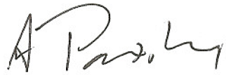 |
Figure 19.1.2-1: Simplistic Consent Example
This acknowledgement is captured according to the XDS Scanned Document Content Profile (XDS-SD), with the additional parameters specified in the BPPC Content Profile also applied. This is submitted into the XDS Affinity Domain as proof that the patient has acknowledged policy 9.8.7.6.5.4.3.2.1.
The following shows this graphically:
Figure 19.1.2-2: Graphical representation of consent with wet signature
If an XDS Affinity Domain wants to further provide non-repudiation protections it may choose to apply a digital signature using the DSG Profile to the whole package with the appropriate purpose and signed by an appropriate signing system/person.
An XDS Affinity Domain may have jurisdictional or organizational policies that require support for more complex patient privacy consent policies. These privacy policies may require that a patient explicitly consent to disclosure of protected or sensitive health information to specific entities. The BPPC Profile provides a starting point for implementing these types of privacy consent policies, but does not explicitly specify how additional information needed to enforce the policy would be conveyed. In these cases, the capability of BPPC may not be enough to support all types of needs. An example of an Advanced Patient Privacy Consent would be when a patient wants to name individuals that can access their documents.
The administrators of the Patient Privacy Policy Domain (e.g., XDS Affinity Domain) will need to develop and publish an overall Policy for the Patient Privacy Policy Domain that clearly defines the overall appropriate use of the protected resources. This is the subject of ITI TF-1: Appendix L and is not further defined here.
Within this Patient Privacy Policy Domain (e.g., XDS Affinity Domain) overall Policy is a defined set of acceptable use Patient Privacy Policies. A Patient Privacy Policy further explains appropriate use of the protected resources in a way that provides choices to the patient. The BPPC Profile places no requirements on the content of these policies nor the method used to develop these policies (see ITI TF-1: Appendix P for some guidance on developing these policies). BPPC only assumes that the overall Patient Privacy Policy Domain can be structured as a set of specific policies (A, B, C, D in the example below), where each one may be used independently or combined in relationship to publication and access of a specific type(s) of document.
Figure 19.2-1: Example Patient Privacy Policy Hierarchy
A Patient Privacy Policy will identify who has access to information, and what information is governed by the policy (e.g., under what conditions will a document marked as containing sensitive information be used by a specific type of individual for a specific use). The mechanism for publishing these policies is not described by this profile. The set of Patient Privacy Policies written by the Patient Privacy Policy Domain must be able to be implemented by the technologies in all of the systems that have access to the domain. This means that the Patient Privacy Policies must be created with great care to ensure they are enforceable.
Each Patient Privacy Policy will be given a unique identifier (OID) known as a Patient Privacy Policy Identifier. This is additionally used when capturing a patient’s acknowledgement of a specific Patient Privacy Policy resulting in a Patient Privacy Policy Acknowledgement Document (i.e., an instance of a BPPC document).
Finally, Privacy Consent Policies used within an XDS Affinity Domain will very likely be different than those used with the XDM or XDR Profiles as these profiles often are used to transfer documents in ad-hoc ways. The patient may provide a consent given to share information on media to the provider creating the media for specific use, rather than for more general sharing within an XDS Affinity Domain. When transferring information that originated in an XDS Affinity Domain to media (XDM), the Privacy Consent Policies found in the XDS Affinity Domain might be changed during the publication process. There are also differences in the sensitivity that should be considered for consents shared on media or transmitted through XDR and those shared in an XDS Affinity Domain. See the section Security Considerations later in this volume for more details.
The Patient Privacy Policy Domain will write and agree to overall privacy policies (lots of lawyers involved).
The Patient Privacy Policy Domain will include a small set of Patient Privacy Policies (more lawyers). These are text documents very similar to the privacy consent documents used today.
Each Patient Privacy Policy will be given a unique identifier (OID) called the Patient Privacy Policy Identifier
The Policy of the Patient Privacy Policy Domain and all of the Patient Privacy Policies will be published in some way. It is expected that this will be sufficiently public to support local regulation.
When a patient acknowledges a Patient Privacy Policy, a Patient Privacy Policy Acknowledgement Document will be published with the Patient Privacy Policy Identifier of the policy that the patient acknowledged.
There are two actors in the BPPC Profile, the Content Creator and the Content Consumer. Content is created by a Content Creator and is to be consumed by a Content Consumer. The sharing or transmission of content or updates from one actor to the other is addressed by the use of appropriate IHE profiles described in the section on Content Bindings with XDS, XDM and XDR in PCC TF-2: 4.1, and is out of scope of this profile. A Document Source or a Portable Media Creator may embody the Content Creator. A Document Consumer, a Document Recipient or a Portable Media Importer may embody the Content Consumer.
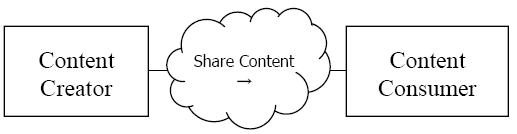
Figure 19.3-1: BPPC Actor Diagram
Table 19.3-1 lists the transactions for each actor directly involved in the BPPC Profile. In order to claim support of this Integration Profile, an implementation must perform the required transactions (labeled “R”). Transactions labeled “O” are optional. A complete list of options defined by this Integration Profile and that implementations may choose to support is listed in Section 19.4.
Table 19.3-1: BPPC Integration Profile - Actors and Transactions
| Actors | Transactions | Optionality | Section |
| Content Creator | Share Content | R | ITI TF-1: 19.4.3 ITI TF-1: 19.4.4 |
| Content Consumer | Share Content | R | ITI TF-1: 19.4.5 |
A BPPC Content Creator or Content Consumer can be grouped with appropriate actors from the XDS, XDM or XDR Profiles to exchange Basic Privacy Consent documents. The metadata sent in the document sharing or interchange messages has specific relationships or dependencies (which we call bindings) to the content of the clinical document – a Basic Patient Privacy Consent document - described in ITI TF-3: 5.1.2 and 5.1.3.
A BPPC Content Creator shall be grouped with and XDS/XDR Document Source or and XDM Portable Media Creator.
A BPPC Content Consumer shall be grouped with an XDS Document Consumer, and XDR Document Recipient, or an XDM Portable Media Importer.
The BPPC Content Consumer shall be grouped with a XDS-SD Content Consumer. This means that a Content Consumer for BPPC Content must also be able to display XDS-SD content. This is required due to the common practice of capturing Wet Signatures.
Options that may be selected for this Integration Profile are listed in Table 19.4-1 along with the IHE actors to which they apply.
Table 19.4-1: Basic Patient Privacy Consents - Actors and Options
| Actors | Option | Section |
| Content Creator | Basic Patient Privacy Acknowledgement (Note 1) | Section 19.4.3 |
| Basic Patient Privacy Acknowledgement with Scanned Document | Section 19.4.4 | |
| Content Consumer | Basic Patient Privacy Acknowledgement View (Note 2) | Section 19.4.5 |
Note 1: Content Creator shall implement the Basic Patient Privacy Acknowledgement Option, and may choose to implement the Basic Patient Privacy Acknowledgement with Scanned Document Option
Note 2: Content Consumer shall implement the Basic Patient Privacy Acknowledgement View Option.
The Content Creator shall be able to create Patient Privacy Policy Acknowledgement Document Content as specified in ITI TF-3: 5.1.2.
A Patient Privacy Policy Acknowledgement Document is a kind of medical document. The content of a Patient Privacy Policy Acknowledgement Document shall include the effective time of the acknowledgement and Patient Privacy Policy Domain (e.g., XDS Affinity Domain) defined coded vocabulary identifying the Patient Privacy Consent Policy Identifier (OID) acknowledged by the patient. The content of the Patient Privacy Acknowledgement Document may include a text description of what the patient has acknowledged.
The Patient Privacy Policy Acknowledgement Document may be signed. There are cases, as seen in the use-cases, where the Content Creator would need to be grouped with a DSG Content Creator. The BPPC Profile does not require this grouping. This grouping can be fully specified in an IHE Integration Statement.
A Basic Patient Privacy Policy Acknowledgement Document may include a scanned document. An example of the scanned document could be a wet signature by the patient on the text. The Content Creator that claims to support Basic Patient Privacy Policy Acknowledgement with Scanned Document Option shall be able to create a Patient Privacy Policy Acknowledgement with Scanned Document Content as specified in ITI TF-3: 5.1.3.
The Content Consumer shall be able to display the Patient Privacy Policy Acknowledgement Document Content as specified in ITI TF-3: 5.1.2 and ITI TF-3: 5.1.3.
This flow shows how an XDS Affinity Domain would use the BPPC Profile. Only a basic flow is shown, the profile supports many alternative flows.
An XDS Document Consumer that is enforcing policies registered by BPPC can query an XDS Affinity Domain for instances of Patient Privacy Policy Acknowledgement Documents that have been acknowledged by a specific patient. Through the XDS Metadata the Document Consumer can determine which Patient Privacy Policies have been acknowledged.
Note if the local regulations allow, some XDS Affinity Domains may not publish the consent documents, so systems should be able to handle the configurations where no Patient Privacy Acknowledgment Document is in the XDS Affinity Domain for a specific patient (e.g., implied consent).
Note if the local regulations allow, some patients may have documents shared before informed consent can be captured. In this case the XDS Affinity Domain policy needs to explain the default behavior, that behavior for the absence of a consent document.
The Content Creator creates Patient Privacy Policy Acknowledgement Documents with or without a scanned document part. This document records the patient’s acknowledgement of a specified policy.
All documents managed in an XDS Affinity Domain, or transferred using XDM/XDR, are labeled with a confidentialityCode. The administrators of an XDS Affinity Domain may need to define a vocabulary and meaning to that vocabulary.
The XDS or XDR Document Source that supports the Basic Patient Privacy Enforcement Option determines which of the XDS Affinity Domain – Privacy Consent Policies would allow the documents to be published. In some XDS Affinity domains this may require that the system check that a patient has indeed acknowledged a specific policy.
The Document Source will set the XDS Metadata – confidentialityCode - to indicate the appropriate sensitivity for use/constraint (determined by the XDS Affinity Domain Policy)
The XDS Document Registry validates that each of the confidentialityCode(s) are from the approved list of confidentialityCode for use within the XDS Affinity Domain.
When an XDS Document Consumer that supports the Basic Patient Privacy Enforcement Option queries the XDS Affinity Domain it may utilize the confidentialityCode filter in the Registry Stored Query [ITI-18] transaction to restrict the documents returned to those that the Document Consumer can utilize.
The Document Consumer will enforce access controls based on the returned XDS metadata-confidentialityCode, current state of consent acknowledgements, system type, user, context, and any number of other factors that the system is capable of enforcing.
The Document Consumer may be capable of querying for ‘Approved’ consent acknowledgement documents and using the resulting XDS Metadata as the list of currently Approved Patient Privacy Policy Acknowledgement Documents. There is no requirement for the Document Consumer system to retrieve the Patient Privacy Policy Acknowledgement Document content.
Consents stored in an XDS Affinity Domain are also governed by privacy policies. The content of a Patient Privacy Policy Acknowledgement Document may itself contain sensitive information. For example, a terminally ill patient may decide that his prognosis should not be shared with his family members, but that other information may be. Sharing the Patient Privacy Policy Acknowledgement Document with family members would potentially inform them of a negative prognosis. Thus, the confidentialityCode placed on Patient Privacy Policy Acknowledgement Documents must be appropriately assigned (e.g., most will be assigned the broadest use confidentialityCode).
However, Patient Privacy Policy Acknowledgement Documents stored in the clear on media (XDM), or transmitted through XDR, should not contain sensitive information. The rationale is that the receiver of the information must be able to read the consent that was used to share this information in order to understand how they must treat the information with respect to their own Patient Privacy Policies.
Implementation of Patient Privacy Policies within a healthcare environment has different considerations and risks than implementing similar access control policies within other non-treatment environments. This is for the simple reason that failing to provide access to critical healthcare information has the risk of causing serious injury or death to a patient. This risk must be balanced against the risk of prosecution or lawsuit due to accidental or malicious disclosure of private information. The XDS Affinity Domain should take care in writing their Patient Privacy Policies to avoid this.
One mitigation strategy that is often adopted in healthcare provides accountability through audit controls. That is to say that the healthcare providers are trusted not to abuse their access to private information, but that this is followed up by a policy of monitoring healthcare provider accesses to private information to ensure that abuse does not occur. This strategy reduces the risk of serious death or injury due to lack of access to critical healthcare information, at the increased risk of disclosure of private information. This is why the ITI Technical Committee created the Audit Trail and Node Authentication (ATNA) Integration Profile, and furthermore, why that profile is a requirement of XDS and related profiles.
Another risk that must be resolved by an affinity domain is how to address the issues of sharing truly sensitive information in a registry (e.g., psychology documents). One strategy that might be recommended is that truly sensitive data not be shared within the XDS Affinity Domain; directed communications using XDR or XDM may be more appropriate.
A variety of legacy paper, film, electronic and scanner outputted formats are used to store and exchange clinical documents. These formats are not designed for healthcare documentation, and furthermore, do not have a uniform mechanism to store healthcare metadata associated with the documents, including patient identifiers, demographics, encounter, order or service information. The association of structured, healthcare metadata with this kind of document is important to maintain the integrity of the patient health record as managed by the source system. It is necessary to provide a mechanism that allows such source metadata to be stored with the document.
This profile defines how to couple such information, represented within a structured HL7 CDA R2 header, with a PDF or plaintext formatted document containing clinical information. Furthermore, this profile defines elements of the CDA R2 header necessary to minimally annotate these documents. Such header elements include information regarding patient identity, patient demographics, scanner operator identity, scanning technology, scan time as well as best available authoring information. Portions of CDA R2 header, along with supplemental document registration information, are then used to populate XDS Document Entry metadata.
This content profile is intended for use in XDS, XDR and XDM environments. Content is created by a Content Creator and is to be consumed by a Content Consumer. The Content Creator can be embodied by a Document Source or a Portable Media Creator, and the Content Consumer by a Document Consumer, a Document Recipient or a Portable Media Importer. Obligations imposed on the Content Creator and the Content Consumer by this profile are understood to be fulfilled by the software that creates the final document for submission and/or consumes profile conformant documents rather than any particular scanning technology.
Text Chart Notes
Examples of this content include handwritten, typed or word processed clinical documents and/or chart notes. These documents are typically multi-page, narrative text. They include preprinted forms with handwritten responses, printed documents, and typed and/or word processed documents, and documents saved in various word processing formats. Appropriate formats are PDF, derived from the word processing format, or plaintext, if the text structure is all that needs to be conveyed. PDF is desirable because it most faithfully renders word processed document content and it preserves meaning embodied in non-textual annotations.
Graphs, Charts and/or Line Drawings
Examples of this content include Growth Charts, Fetal Monitoring Graphs. Line drawings such as those described above are best rendered using PDF versus an image based compression, such as JPEG. However, when computer generated PDFs include lines or lossy compression is not acceptable for diagnostic purposes, PDF should be used.
Object Character Recognition (OCR) Scanned Documents
Clinical documents can contain text and annotations that cannot be fully processed by optical character recognition (OCR). We call attention to the fact that the OCR text content may only partially represent the document content. These are best supported by converting to PDF format, which can mix the use of OCR’d text, compressed scanned text, and scanned image areas.
Electronic Documents
Existing clinical documents that are electronically transmitted or software created (e.g., PDF, or plaintext) can be considered as actually scanned, previously scanned or virtually scanned before they are shared. In this context, “actually scanned” refers to electronic documents, newly created via some scanning technology from legacy paper or film for the purposes of sharing. “Previously scanned” refers to electronic documents that were previously produced via some scanning technology from legacy paper or film, but have existed in their own right for a period of time. “Virtually Scanned” electronic documents are existing electronic documents not derived from legacy paper or film that either are PDF/A or plaintext format or have been converted to one of these formats for the purposes of sharing. This content is covered by this profile.
Content is created by a Content Creator. Impact on application function and workflow is implementation specific and out of scope of this content profile, though we note that they will be compliant with this content profile if they can produce CDA wrapped PDF, CDA wrapped plaintext or both. The following example use case is included to aid in the scoping of this content profile.
Legacy Clinic is a small two-physician clinic. They presently store their patient's medical records on paper. The Clinic is trying to figure out what to do with its paper and word processing documents as it converts over to an electronic system. They would like to be able to view the files over their local intranet.
Presently, most records are handwritten on preprinted paper forms that are inserted into specific sections of the patient's chart. More detailed encounter reports are dictated and sent to a transcription company that returns them in a word processing format. The medical records clerk at Legacy Clinic receives these files via e-mail, decrypts them, prints them out, and adds them to the patient's chart in the correct section.
Over the years, Legacy Clinic has used a number of different transcription companies, and the documents are stored in a variety of word processing formats. Several years ago, they began to require that returned documents be in RTF format in an attempt to reduce frustrations induced by dealing with discrepant word processing formats. Only in some cases was patient and encounter metadata stored within the word processing document in a regular format, depending upon the transcription company used at the time. A third party presently handles labs for the clinic. These are usually returned to the Clinic as printed documents. The clerk inserts these into the labs section in the patient's chart.
In the case of Legacy Clinic, the link between the word processing documents and the patient has been maintained for many of its documents, since the existing manual process maintains that association, and some of the files also contain the encounter metadata. However, the link to the specific encounter will need to be reestablished by interpreting the document content, which will require a great deal of manual effort for some of their documents which do not have it, and will still require custom handling depending upon the format used to store this metadata.
Legacy Clinic uses a transcription provider that can generate PDF documents, wrapped in a CDA Release 2.0 header. These are sent to Legacy Clinic via e-mail. While the same manual process is used, these documents are now in a format that is ready to be used by their new EHR system.
Content is consumed by a Content Consumer. Impact on application function and workflow is implementation specific and out of scope of this content profile. However, we note that adoption of this profile will necessitate the Content Consumer, upon document receipt, support the processing of both CDA wrapped PDF and CDA wrapped plaintext.
There are two actors in the XDS-SD Profile, the Content Creator and the Content Consumer. Content is created by a Content Creator and is to be consumed by a Content Consumer. The sharing or transmission of content from one actor to the other is addressed by the appropriate use of IHE profiles described below, and is out of scope of this profile. A Document Source or a Portable Media Creator may embody the Content Creator Actor. A Document Consumer, a Document Recipient or a Portable Media Importer may embody the Content Consumer Actor. The sharing or transmission of content or updates from one actor to the other is addressed by the use of appropriate IHE profiles described in the section on Content Bindings with XDS, XDM and XDR.
Figure 20.2-1 shows the actors directly involved in the Scanned Documents Content Integration Profile and the relevant transactions between them. Other actors that may be indirectly involved due to their participation in other profiles are not necessarily shown.
Figure 20.2-1: Scanned Documents Actor Diagram
Options for Scanned Documents leverage those in the IHE Patient Care Coordination Technical Framework (PCC TF). Options that may be selected for this Integration Profile are listed in the Table 20.3-1 along with the Actors to which they apply. Dependencies between options when applicable are specified in notes.
Table 20.3-1: XDS-SD - Actors and Options
| Actor | Options | Vol. & Section |
| Content Creator | No options defined | -- |
| Content Consumer (Note 1) | View Option | PCC TF-2: 3.1.1 |
| Document Import Option | PCC TF-2: 3.1.2 |
Note 1: The actor shall support at least one of these options.
Actors from the ITI XDS, XDM and XDR Profiles embody the Content Creator and Content Consumer sharing function of this profile. A Content Creator or Content Consumer may be grouped with appropriate actors from the XDS, XDM or XDR Profiles to exchange the content described therein. The metadata sent in the document sharing or interchange messages has specific relationships or dependencies (which we call bindings) to the content of the clinical document described in the content profile. The Patient Care Coordination Technical Framework (PCC TF) defines the bindings to use when grouping the Content Creator of this profile with actors from the IHE ITI XDS, XDM or XDR Integration Profiles. See PCC TF-2:4.
This profile assumes the following sequence of events in creation of an XDS-SD document.
A legacy paper document is scanned and a PDF/A is rendered. Alternatively, an electronic document is converted, if necessary, to PDF/A or plaintext format (see ITI TF-3: 5.2.1 and 5.2.1.1).
Software, conformant to this profile and most likely with the aid of user input (e.g., to provide document title, confidentiality code, original author), renders the CDA R2 header pertaining to the PDF or plaintext produced. The document is wrapped and the XDS-SD document is completed (see ITI TF-3: 5.2.3).
XDS metadata is produced from data contained in the CDA header and supplemental information (see ITI TF-3: 5.2.2).
The completed XDS-SD document and corresponding metadata is sent via the Provide a Register Document Set-b [ITI-41] transaction of XDS/XDR, or the Distribute Document Set on Media [ITI-32] transaction of XDM.
The Sharing Value Sets (SVS) Profile provides a means through which healthcare systems producing clinical or administrative data, such as diagnostic imaging equipment, laboratory reporting systems, primary care physician office EMR systems, or national healthcare record systems, can receive a common, uniform nomenclature managed centrally. Shared nomenclatures are essential to achieving semantic interoperability.
A single Value Set Repository can be accessed by many Value Set Consumers, establishing a domain of consistent and uniform set of nomenclatures. It supports automated loading of Value Sets by Value Set Consumers, reducing the burden of manual configuration. This profile describes two transactions for retrieving Value Sets from a Value Set Repository by a Value Set Consumer.
A single value set can be retrieved based on an OID value. This is aimed at meeting the needs of systems that are pre-configured to use specific value sets. These systems are often medical devices with strictly controlled functions that should not be modified without careful review. This transaction does not include metadata content, and provides just the value set concept list as uniquely identified in the request.
Multiple value sets can be retrieved based on metadata about the value sets. This is aimed at meeting the needs of systems and users that will be dynamically selecting value sets, deciding which value sets should be used, and creating new value sets based on the contents of existing value sets. This transaction supports much richer selection criteria and provides metadata descriptions as well as the contents (expanded lists of coded values) of all the value sets that meet those criteria.
Both transactions provide access to centrally managed value sets that have been assigned metadata, including group identification. The ability to identify groups of value sets is essential to achieving semantic interoperability and development of modular structures of electronic health records (EHR). Group identification can be used to identify, for example, all the value sets needed for a given purpose like filling in a particular kind of report.
Figure 21.1-1 shows the actors directly involved in the SVS Integration Profile and the relevant transactions between them. Other actors that may be indirectly involved due to their participation in other related profiles are not necessarily shown. As well, the method for creating a Value Set is not covered by this profile (this subject will be addressed once the basic infrastructure is in place).
Figure 21.1-1: Actors and Transactions
Table 21.1-1 SVS Integration Profile - Actors and Transactions lists the transactions for each actor directly involved in the SVS Profile. In order to claim support of this Integration Profile, an implementation must perform the required transactions (labeled “R”). Transactions labeled “O” are optional. A complete list of options defined by this Integration Profile is listed in Table 21.2-1.
Table 21.1-1: SVS Integration Profile - Actors and Transactions
| Actors | Transactions | Optionality | Section |
| Value Set Repository | Retrieve Value Set [ITI-48] | R | ITI TF-2b: 3.48 |
| Retrieve Multiple Value Sets [ITI-60] | R | ITI TF-2b: 3.60 | |
| Value Set Consumer | Retrieve Value Set [ITI-48] | R | ITI TF-2b: 3.48 |
| Retrieve Multiple Value Sets [ITI-60] | O | ITI TF-2b: 3.60 |
A Value Set is a uniquely identifiable set of valid concept representations. A Value Set may be a simple flat list of concept codes drawn from a single code system, or it might be constituted by expressions drawn from multiple code systems (a code system is a system consisting of designations and meanings, for example LOINC, SNOMED-CT, ICD-10, or ISO 639 Language Codes).
This profile will address a flat list of concept codes, one of the simplest examples of a Value Set being shown in Table 21.1.1-1: The provinces of Canada.
Table 21.1.1-1: The provinces of Canada
Provinces of Canada ISO Code |
Print Name |
| NL | Newfoundland |
| AB | Alberta |
| BC | British Columbia |
| SK | Saskatchewan |
| MB | Manitoba |
| ON | Ontario |
| QC | Quebec |
| NB | New Brunswick |
| NS | Nova Scotia |
| PE | Prince Edward Island |
A Value Set must be uniquely identified to allow various applications and users to recognize it. When a Value Set is retrieved, the application or the user is retrieving a particular instance of it, or an Expanded Value Set (an Expanded Value Set is a set of concept representations that were in effect at a specific time for a particular version of a Value Set definition. The Value Set (definition) and the Expanded Value Set concepts are similar to the programming concepts of Class and Instance of Class.)
This profile uses the Value Set Unique ID (using an ISO OID), and the Value Set Version attributes to allow flexible handling of the identification of a Value Set.
The actual set of codes derived from this definition of a Value set is an Expanded Value Set. SVS supports the sharing of Expanded Value Set with two different approaches to their identification:
By unique identification of the Expanded Value Set itself, and no reference to the definition that produced it. Such an Expanded Value Set carries its own unique identifier (i.e., an OID and Version).
By reference to the Value Set definition (OID and Version) from which the Expanded Value Set was derived. In this case specific Expanded Value sets (derived from the same Value Set definition) are only distinguished by their expansion date and time.
Figure 21.1.2-1: The two approaches for identifying Value Sets
The Value Set Repository can be supported by a system that implements a
Terminology Server using the current HL7 CTS or the upcoming HL7 CTS2 specifications. It is important to note the complementary role of the HL7 specification for CTS and CTS2, and that of the SVS Integration Profile. CTS defines an API (Application Programming Interface) supported by a terminology management service, and CTS2 defines the functionality supported by a terminology management service leaving the specification of the API to the Object Management Group. SVS defines the transmission protocols for a network access to a terminology server focused specifically on the distribution of Value Sets.
However, there is functional consistency between SVS and CTS/CTS2. More
specifically, all the properties of the Value Sets and concepts described in the
Shared Value Sets Retrieve transaction are a subset of the properties defined in
CTS and the CTS2 functional specification for the same entities. Note that SVS
supports the distribution of Value Sets containing concepts from multiple
code systems (e.g., DICOM and SNOMED issued) which is consistent with the CTS
capabilities, but which was not supported in the CTS specifications (but is supported
in the CTS2 specification).
Informative references:
LexGrid Common Terminology Services. http://informatics.mayo.edu/LexGrid/downloads/CTS/specification/ctsspec/cts.htm.
Common Terminology Services 2 (CTS 2). Service Functional Model Specification. (See HL7 site for latest information.)
There are three types of value sets supported by the SVS Transactions:
Intensional Value Sets are defined in terms of algorithmic and other methods. These value sets can be supported by the Value Set Repository, but this profile does not provide a means to convey the intensional form. Instead, these value sets are described using the metadata, and the appropriate resulting expanded value set contents are returned along with the Intensional Value Set definition and expansion metadata. This profile specifies how these can be retrieved using the Retrieve Multiple Value Sets [ITI-60] transaction.
Extensional Value Sets are defined in terms of a list of concepts. As with intensional value sets, the definition and expansion metadata for these can be retrieved along with the appropriate expanded value set contents. This profile specifies how these can be retrieved using the Retrieve Multiple Value Sets [ITI-60] transaction.
Expanded Value Sets result from the expansion of any Value Set definition (e.g., Intensional or Extensional), but their definition metadata is not important to the Value Set Consumer, only an identified instantiation defined in terms of a list of specific codes from specific vocabularies is shared. This profile describes how these can be retrieved using either the Retrieve Multiple Value Sets [ITI-60] transaction or the Retrieve Value Set [ITI-48] transaction.
The developers of value sets may choose to work with one or more of these types, but the final consumers of value sets need to work with expanded value sets. There are efforts underway to develop standard methods for exchanging explicit definition of intensional and extensional value sets, but these are outside the scope of the SVS Profile. SVS provides only a way to distribute value sets that have been expanded.
The SVS Profile also restricts the complexity of the expanded value sets. At present, it only supports unstructured value sets that are a list of codes from coded terminologies. Other internal structures such as hierarchy are not defined. This meets the needs of most, but not all, value sets.
The process and rules associated with a value set expansion is not specified nor constrained by this profile. It is the responsibility of the value set developer or of the system supporting the SVS Repository to perform the appropriate expansions. If the value set developer defines their standard distribution format as the expanded form of the value set, they have the appropriate procedures for this expansion. Value set developers that do not have a procedure defined for distributing the expanded form will need to establish one in order to use the SVS Profile.
Figure 21.1.3.1-1: Development Flow for Value Sets
A value set developer that defines and publishes expanded value sets should also establish the proper identification that identifies either this expanded value set or the definition that resulted in this expanded value set. They also define metadata that describes the value set. (Value set group descriptions will be discussed later.) The metadata is listed below, and includes descriptive information, links to further explanatory material, effective dates, etc. The SVS Profile provides two transactions for retrieving an expanded value set:
Retrieve Value Set [ITI-48] – This is appropriate for rapid retrieval of expanded value sets. It retrieves the expanded value set based on having the OID for the value set pre-configured into the system requesting the value set. This transaction does not retrieve the expanded value set metadata nor the value set definition metadata. It only retrieves the list of codes for that expanded value set.
Retrieve Multiple Value Sets [ITI-60] – This is appropriate for retrieval of value sets based on metadata contents. It can still retrieve value set expansion based on the value set OID, but can also retrieve value set expansions based on contents of descriptions, OIDs and versions, group labels, dates, etc. This form of retrieval provides both the expanded value set contents for the retrieved value sets and the metadata for the value set.
Value set developers that publish intensional and extensional value sets also defined OIDs for their value sets definitions. Note that a developer may publish multiple forms of related value sets, but will assign each form the proper OID. When publishing with SVS, the value set developer should provide an expanded form that should be provided along with the metadata.
The SVS Profile provides one transaction for retrieving intensional and extensional value sets:
Retrieve Multiple Value Sets [ITI-48] – This is appropriate for retrieval of value sets based on metadata contents, including value set OID, but can also be based on contents of descriptions, group labels, dates, etc. This form of retrieval provides both the expanded value set contents for the retrieved value sets and the metadata for the value set. Note that there are other standards efforts defining forms for intensional and extensional value sets. These other forms are intended for use by value set developers. SVS provides the expanded form primarily for value set consumers.
A value set user that receives an intensional or extensional value set must be aware that the expansion is only for representational uses. The other metadata, such as effective dates and the descriptive material, must be consulted to determine the proper use of the expanded form. In practice, value sets change slowly and there is usually time for human review and decision making about the use of the expanded form.
The SVS Profile does not specify how or when this expansion should take place. That is the responsibility of the value set developers and server maintainers. In many cases, the value set developer will provide an expanded form together with effective dates so that the organizations involved can manage change easily.
Figure 21.1.3.1-2: SVS Retrieve Transactions
Value sets are also described by various grouping and tagging mechanisms. These groupings may be defined in parallel by many different organizations. It is expected that each organization is creating groups for their own purpose. One organization may assign groups like “value sets associated with H1N1”, while another group may assign groups like “value sets associated with clinical trial xyz reports”, and a third may assign groups like “formulary for treatment of H1N1 influenza”. Each of these organizations may assign key words so that retrieval requests can find the relevant groups, and they may assign OIDs for these groups.
To simplify maintenance, SVS defines a list of group descriptions to be associated with each value set, rather than combining all the keywords and groups from different organizations into a single list. The retrieval transaction searches all of these descriptions when doing a retrieval based on group keyword or group OID.
An organization that is creating new groups can define a list of keywords and an OID for that group purpose. This group description can then be attached to each value set that should be a member of that group. If a value set needs to be removed from the group, then the attached description can be removed. This avoids accidental removal of keywords when multiple organizations have used the same keyword
Figure 21.1.3.2-1: Group Descriptions for a Value Set
A value set is described by metadata that includes the fields in Table 21.1.3.3-1. For details on the metadata encoding, see ITI TF-2b: 3.60. Fields are mandatory or optional as shown in the table. Some of the metadata can be used as retrieval criteria for both the [ITI-48] and [ITI-60] transactions, some only for [ITI-60], and some are only returned and cannot be used as retrieval criteria.
Table 21.1.3.3-1: Value Set Metadata Summary
| Metadata Element | Description | Optionality | Selection Criteria for Transactions |
| Id | This is the unique identifier of the value set | Mandatory | ITI-48, ITI-60 |
| DisplayName | This is the name of the value set | Mandatory | ITI-60 |
| Source | This is the source of the value set, identifying the originator or publisher of the information | Mandatory | ITI-60 |
| Purpose | Brief description about the general purpose of the value set | Optional | ITI-60 |
| Definition | A text definition describing how concepts in the value set were selected | Optional | ITI-60 |
| Source URI | Most sources also have a URL or document URI that provides further details regarding the value set. | Optional | - |
| Version | A string identifying the specific version of the value set. | Mandatory | ITI-48 |
| Status | Active, Inactive, local extensions | Mandatory | - |
| Type | This describes the type of the value set:
|
Mandatory | - |
| Binding | Static or Dynamic | Optional | - |
| Effective Date | The date when the value set is expected to be effective | Optional | ITI-60 |
| Expiration Date | The date when the value set is no longer expected to be used | Optional | ITI-60 |
| Creation Date | The date of creation of the value set | Optional | ITI-60 |
| Revision Date | The date of revision of the value set | Optional | ITI-60 |
| Groups | The identifiers and keywords of the groups that include this value set. A group may also have an OID assigned. | Optional | ITI-60 |
1. Status codes are determined by the Value Set developers. The suggested values shall be used if applicable.
2. The meaning of binding is not constrained by this Profile.
Some of these metadata fields can be specified as part of the selection criteria for retrieve multiple value sets. All of the available metadata is returned as the results from a retrieve multiple value sets. Metadata is not returned for the [ITI-48] transaction.
This profile does not specify how the value set repository is maintained, how new value sets are added, or how existing values sets are updated.
Options that may be selected for this Integration Profile are listed in Table 21.2-1 Sharing Value Sets - Actors and Option along with the actors to which they apply. Dependencies between options when applicable are specified in notes. Note that the Value Set Consumer shall implement at least one of the two bindings listed as options in the table. The Value Set Repository shall implement both bindings as specified in ITI TF-2b: 3.48.5.
Table 21.2-1: Sharing Value Sets - Actors and Options
| Actor | Options | Vol. & Section |
| Value Set Repository (Note 1) | No options defined | -- |
| Value Set Consumer (Note 1) | HTTP binding | ITI TF-2b: 3.48.5, ITI TF-2b: 3.60.5.2 |
| SOAP binding | ITI TF-2b: 3.48.5 ITI TF-2b: 3.60.5.1 |
|
| Retrieve Multiple Value Sets | ITI TF-2b: 3.60 |
Note 1: A Value Set Consumer must support either the HTTP binding, the SOAP binding or both bindings. The Value Set Repository must support both bindings.
Value Set Consumers that support the Retrieve Multiple Value Sets Option shall support the Retrieve Multiple Value Sets [ITI-60] transaction.
This section describes the process and information flow when a Value Set Consumer retrieves a Value Set from a Value Set Repository. There is no required order between the two transactions. The Value Set Consumer chooses whichever transactions and order are appropriate. The Value Set Consumer can use Retrieve Value Set [ITI-48] to retrieve a single value set based upon a known value set OID. The Retrieve Multiple Value Sets [ITI-60] transaction can be used to retrieve all of the value sets that match a selection specification. The selection criteria for [ITI-60] need not include a known value set OID.
Figure 21.3-1: Basic Process Flow in SVS Profile
This profile describes functionality in the context of the larger system of anticipated actors involved in the creation and management of Value Sets.
The creation of a Value Set is out of scope of this profile. It will be addressed in a later cycle, once the basic infrastructure of this profile is in place. For definition purposes, creating a Value Set means the creation of a Value Set out of a Code System(s), or having the user proposing values that s/he uses in their own system.
The complete process can be seen in Figure 21.3.1-1, Overview of process flows below, included for clarity’s sake:
Figure 21.3.1-1: Overview of the process flow
Figure 21.3.1-1 shows the Retrieve Value Set transaction in the context of the larger system of anticipated actors involved with the creation and management of Value Sets. This profile only addresses the actors and transactions outlined by the thick solid line.
The SVS Profile addresses partly the semantic interoperability issue and assumes that a structure is already in place to provide the necessary context for the use of the Value Set.
While the representation of structure is out of scope of this profile, it must be recognized that it plays an important role in achieving semantic interoperability. The focus of the profile is to distribute a generalized and uniform nomenclature in order to populate the information model with the appropriate semantic content.
The following use cases indicate how this profile might be used by various disciplines.
Note: All the tables present in the use cases are examples only. IHE will not be responsible for updating these tables.
A common nomenclature is required in an XDS Affinity Domain for metadata elements such as classCode, confidentialityCode, eventCodeList, healthcareFacilityTypeCode, practiceSettingCode, and typeCode.
More detailed information about a possible definition of an Affinity Domain can be found in the white paper IHE IT Infrastructure Technical Committee White Paper - Template for XDS Affinity Domain Deployment Planning, found at http://www.ihe.net/Technical_Frameworks/.
The nomenclature used in the Affinity Domain is being entered into systems manually, a time-consuming task, potentially leading to errors.
Each vendor’s application would retrieve the necessary Value Sets used in a XDS Affinity Domain from a Value Set Repository, eliminating manual entry and improving accuracy.
Standardized coding systems are essential for health insurance programs to ensure that these claims are processed in an orderly and consistent manner.
The CPT is a uniform coding system consisting of descriptive terms and identifying codes that are used primarily to identify medical services and procedures performed by physicians and other health care professionals (HCP), for billing public or private health insurance programs.
A patient is being referred by her PCP from a small healthcare facility to a large healthcare facility. She gets hospitalized and is being seen by a group of healthcare professionals: oncologists, laboratory practitioners, pharmacists, and nurses.
The patient’s record will contain medical information from different healthcare information edge systems, such as an Electronic Medical Record system (EMR), a Laboratory Information System (LIS), and a Radiology Information System (RIS).
All systems need up-to-date CPT codes so that seamless flow of encoded information results. Currently the update is achieved via application-specific processes on a system by system basis, which increases the risk of error when updating Value Sets in multiple systems.
The Discharge Summary produced by the hospital lacks coded information about the care received due to the lack of a consistent and uniform nomenclature. The document is then published to a regional repository or saved on a portable media. The PCP can then retrieve it (via XDS or XDM, for example).
Due to the full lack of encoding, two potentially undesirable outcomes can happen: either the correct billing information will not reach the provider, or the medical information is not machine processable and cannot be incorporated in other systems, with data mining being compromised.
The hospital retrieves the significant CPT codes from the Value Set Repository so that all the applications are using the same nomenclature. This way, the medical and billing information will flow seamlessly, improving the quality of patient care.
In hospital A, an imaging technologist is about to start a CT procedure. S/he chooses its protocol and estimates the body part s/he should be entering manually in the “body part” field present on the machine. The modality will over-ride the RIS information that the RIS administrator has configured for the CT exams, (or it might take the existing RIS information, depending on the vendor and on the implementation).
The study is sent to the healthcare facility A local PACS, and a manifest is sent to the XDS Repository A. Hospital B wishes to retrieve the study by querying the XDS Registry.
Alternatively, the patient will bring the study performed in hospital A on a CD to be imported into the local system of hospital B via IRWF (IHE Radiology Import Reconciliation Workflow Profile).
The nomenclature used for “body part” in the RIS from hospital A is not consistent with the encoding chosen by the RIS in hospital B. The local PACS and RIS administrator need to place an order in the RIS, and manually reconcile the study so that it will have the same body part in order to ensure the same hanging protocols for the radiologists.
In hospital A, an imaging technologist is about to start a CT procedure. S/he chooses the correct “body part” from the latest Value Set Anatomical Regions downloaded from the Value Set Repository. The study is sent to the local PACS of healthcare facility A, and a manifest is sent to the XDS Repository A. Hospital B wishes to retrieve the study.
Alternatively, the patient will bring the study performed in hospital A on a CD to be imported into the local system of hospital B via IRWF (Import Reconciliation Workflow Profile). The nomenclature used for “body part” in the RIS from hospital A is consistent with the encoding chosen by the RIS in hospital B because hospital B has also downloaded the same Expanded Value Set from the Value Set Repository. The radiologist will see the images displayed according to the department’s hanging protocols.
A set of flat list values that can be used for such purposes is DICOM Part 16, CID 4031 Common Anatomic Regions, of which an excerpt can be seen in Table 21.3.2.3.2-1: CID 4031 Common Anatomic Regions:
Table 21.3.2.3.2-1: CID 4031 Common Anatomic Regions
Coding Scheme Designator (0008,0102) |
Code Value (0008,0100) |
Code Meaning (0008,0104) |
|---|---|---|
| SRT | T-D4000 | Abdomen |
| SRT | R-FAB57 | Abdomen and Pelvis |
| SRT | T-15420 | Acromioclavicular joint |
| SRT | T-15750 | Ankle joint |
| SRT | T-280A0 | Apex of Lung |
| SRT | T-D8200 | Arm |
| SRT | T-60610 | Bile duct |
| SRT | T-74000 | Bladder |
| SRT | T-04000 | Breast |
| SRT | T-26000 | Bronchus |
| SRT | T-12770 | Calcaneus |
| SRT | T-11501 | Cervical spine |
Note: Excerpt from the Context ID 4031 Common Anatomic Regions, Type: Extensible Version 20061023, DICOM Part 16, OID 1.2.840.10008.6.1.308.
Radiology departments or healthcare enterprises define local codes that are used in common by the systems in use, accordingly to the local policies and their workflow.
According to the Mammography Acquisition Workflow Profile (MAWF) from the IHE Radiology Technical Framework, codes are used for:
scheduling and driving modality behavior (Requested Procedure, Reason for Requested Procedure and Scheduled Protocols)
documenting the images and the workflow status: codes for Performed Procedure, Performed Protocols, Views, etc. enable displays to present images in adequate hanging protocols
enabling radiological staff to track performed work or chose the right billing code.
The MAWF Profile further states that a department or enterprise should define the code sets which are used by all of its systems in a common way, so that each relevant code set is available to each system with the same valid content. Each system needs to be configurable as to which code sets it uses. The lack of a common mechanism for distribution of code sets contributes to the development of local protocols like “routine screening”, “magnification”, “CAD”, that are understood by technologists or doctors, but could not be applied to another department or enterprise, nor by the modality in the scope of an automated error correction.
Moreover, those codes are subject to be modified, removed, declared obsolete, or simply dropped. This situation is confusing since the RIS list of protocol codes cannot be fully reliable anymore.
Despite technical means defined in the IHE Radiology Scheduled Workflow and Mammography Acquisition Workflow Profiles, variances in the way users and systems behave can lead to department inefficiencies, ambiguous data, special cases for automated billing, and less than optimal acquisition and reading environments.
A patient comes in for a scheduled standard screening mammogram. While the acquisition is processed, a suspicious lump is detected, and additional views are required, taken by the technologist. A diagnostic mammogram is performed instead of the simple routine screening that was scheduled. This information must be then communicated to the RIS, in order to change the billing codes and implicitly change the hanging protocol for the radiologist. As it is, the technologist has to manually change the procedure.
The procedure code will have to be corrected in the RIS post-examination so that the correct information is captured, both for display and for billing purposes.
Changing a procedure code should be done directly from the modality, avoiding a subsequent intervention that can generate errors, misunderstandings, or discrepancies. SVS Profile provides the modality with a mechanism for accessing a uniformed, centralized and dedicated Expanded Value Set.
An Expanded Value Set dedicated to mammography procedure codes is made available thought the Value Set Repository.
The modality, acting as a Value Set Consumer, retrieves the Expanded Value Set commonly used by and defined for the mammography exams.
The correct type of the exam is processed (or at least provides the technologist the ability to choose the right item from this list).
The list proposed is a flat list, and is pending approval in the DICOM standard.
Table 21.3.2.4.2-1: Codes for Mammography Procedures
| Coding Scheme Designator (0008,0102) | Code Value (0008,0100) | Code Meaning (0008,0104) |
|---|---|---|
| IHERADTF | MAWF0001 | Screening Mammography, bilateral |
| IHERADTF | MAWF0002 | Screening Mammography, left |
| IHERADTF | MAWF0003 | Screening Mammography, right |
| IHERADTF | MAWF0004 | Diagnostic Mammography, bilateral |
| IHERADTF | MAWF0005 | Diagnostic Mammography, left |
| IHERADTF | MAWF0006 | Diagnostic Mammography, right |
| IHERADTF | MAWF0007 | Mammary Ductogram, Single Duct, left |
| IHERADTF | MAWF0008 | Mammary Ductogram, Single Duct, right |
| IHERADTF | MAWF0009 | Mammary Ductogram, Multiple Ducts, left |
| IHERADTF | MAWF0010 | Mammary Ductogram, Multiple Ducts, right |
| IHERADTF | MAWF0011 | Mammogram for marker placement, left |
| IHERADTF | MAWF0012 | Mammogram for marker placement, right |
| IHERADTF | MAWF0013 | Needle Localization, Image Guided, Mammography, left |
| IHERADTF | MAWF0014 | Needle Localization, Image Guided, Mammography, right |
| IHERADTF | MAWF0015 | Stereotactic Biopsy, Image Guidance, left |
| IHERADTF | MAWF0016 | Stereotactic Biopsy, Image Guidance, right |
| IHERADTF | MAWF0017 | Breast Specimen Mammography, left |
| IHERADTF | MAWF0018 | Breast Specimen Mammography, right |
| IHERADTF | MAWF0019 | Quality Control, Mammography |
| IHERADTF | MAWF0020 | Additional Mammography Views |
Note: These are provisional values, used as an example, whose inclusion in the DICOM Standard is currently requested (see RAD TF-2: Table 4.5-5). IHE ITI is not responsible for updating these tables.
Table 21.3.2.4.2-2: Codes for Reasons for a Requested Procedure
| Coding Scheme Designator (0008,0102) | Code Value (0008,0100) | Code Meaning (0008,0104) |
|---|---|---|
| Procedure type | ||
| IHERADTF | MAWF0030 | Recall for technical reasons |
| IHERADTF | MAWF0031 | Recall for imaging findings |
| IHERADTF | MAWF0032 | Recall for patient symptoms/ clinical findings |
| DCM | 111416 | Follow-up at short interval from prior study |
| SRT | R-42453 | Screening (Note 1) |
| SRT | R-408C3 | Diagnostic (Note 1) |
| SRT | A-04010 | Implant (Note 1) |
Note 1: These code values originate from DICOM CID 6061 (see DICOM PS 3.16 and RAD TF-2: 4.5-6).
There is a bidirectional relationship between the users of terminologies, codes, and value sets at one end, and the standards development organizations (SDOs) and other developers of terminologies, codes, and value sets. The following diagram shows the process by which terminologies and value sets flow up to the value set consumers. The users’ comments and new requirements flow back down to the sources of information.
At the top of this diagram, the value set consumers retrieve values sets from a master value set repository that they need for particular purposes. This could be done with the [ITI-48] transaction when the consumer is configured with specific OID values for specific purposes. Often, there is a need to retrieve a group of value sets that share a common purpose, such as all of the value sets needed to populate a particular kind of report. These retrievals are performed using the [ITI-60] retrieve multiple value sets transaction.
This master value set repository is subject to review and governance. The individual consumers have delegated responsibility for administering and maintaining the master value set repository to a coordinating organization. These organizations may be local, state, regional, or national organizations. They are typically not the developers of standard terminologies. The master repository organization serves an administrative and coordinating purpose to ensure that the releases of standard terminologies from SDOs do not interfere with daily operations of the value set consumers. They may also coordinate requests from value set consumers for new terminologies and value sets. There is a governance committee to coordinate these activities in both directions. These activities are important to the maintenance of the master value set repository. They are not described further as part of this profile.
The terminology developers typically release new terminologies and value sets on a regular schedule or at times matching their process. These notifications may be via bulletins, electronic notification, and other processes. They are not covered as part of this profile. The governance committee may choose to use [ITI-60] as their method of retrieving copies of the SDO value sets, if the SDO has established a value set repository as part of their distribution process.
Figure 21.3.2.5-1: Relationship between Users and Developers of Value Sets
There are often situations where notifications such as emails, bulletins, etc. contain descriptive information rather than a specific OID. Also, there are situations where potentially useful value sets must be found based upon only a description. An example of this kind of use is:
A user needs all the value sets for stroke quality care measures from the US Joint Commission. These measures are identified by having a group name containing “stroke”. They plan to use this as the starting point for establishing triggers for decision support and data analytics application operating on data generated for the current year.
The user interacts with a Value Set Consumer to request value sets that have a group that includes “stroke”, a source that includes “Joint Commission” or “JCAHO”, and that are effective for the current year.
The Value Set Repository finds all the matching value sets and sends a response containing all the value sets and their descriptive metadata. Because there is also a European Joint Commission, this response includes some extras.
Client uses the complete metadata to eliminate the extras that are not relevant to the purpose.
The contents handled by the SVS Profile are not patient specific, so there are no risks to privacy. Some Expanded Value Sets are of little value to an attacker as they are public tables of non-critical information (e.g., Expanded Value Sets used for coding of body parts in medical exams). Other Expanded Value Sets might need protection against malicious modification or interception.
The risks applicable to the SVS Profile are discussed in the table “Risks associated with the profile SVS” which is found on the IHE ftp site in ftp://ftp.ihe.net/IT_Infrastructure/iheitiyr6-2008-2009/Technical_Cmte/Profile_Work/SharingValueSets/. The nature of the Expanded Value Set exchange determines the type or risk that can incur. For example, there can be integrity risks such as masquerade10, or the modification of Expanded Value Sets. Another possible type of risk would be at the privacy and confidentiality level such as the interception of an Expanded Value Set containing confidential data. The profile will allow mitigation of those risks when needed in the following manner:
A Value Sets Repository shall be grouped with an ATNA Secure Node or Secure Application. Since the Value Set Consumer is not required to be grouped with the Secure Node or Secure Application, the Value Set Repository shall support both secure and non-secure connections.
Value Set Repositories shall be able to restrict access to a specific Expanded Value Set to authorized and authenticated nodes, while allowing unauthenticated network queries to other Expanded Value Sets.
Given the wide variety of systems that will be retrieving Expanded Value Sets (e.g., embedded medical device versus PACS) the profile does not mandate that the Value Set Consumer be grouped with an ATNA Secure Node or a Secure Application. Depending on local risk assessment, local policy may mandate such grouping.
This profile has been retired in favor of use of the Cross-Enterprise Document Workflow (XDW) Profile.
The Patient Identifier Cross-referencing HL7 V3 Integration Profile (PIXV3) is targeted at cross-enterprise Patient Identifier Cross-reference Domains (as defined in Section 5) as well as healthcare enterprises with developed IT infrastructure. The discussion in Section 5 fully applies here, with the obvious adjustments to the referenced transactions.
Figure 23-1: Process Flow with Patient Identifier Cross-referencing HL7 V3
The actors in this profile are the same as the actors defined in the PIX Profile (Section 5.1). Figure 23.1-1 shows the actors directly involved in the Patient Identifier Cross-referencing HL7 V3 Integration Profile and the relevant transactions between them. Other actors that may be indirectly involved due to their participation in other related profiles are not shown.
Figure 23.1-1: Patient Identifier Cross-referencing HL7 V3 Actor Diagram
Table 23.1-1 lists the transactions for each actor directly involved in the Patient Identifier Cross-referencing Profile. In order to claim support of this Integration Profile, an implementation must perform the required transactions (labeled “R”). Transactions labeled “O” are optional. A complete list of options defined by this Integration Profile and that implementations may choose to support is listed in the Section 23.2.
Table 23.1-1: Patient Identifier Cross-referencing HL7 V3 Integration Profile - Actors and Transactions
| Actors | Transactions | Optionality | Section |
| Patient Identity Source | Patient Identity Feed HL7 V3 [ITI-44] | R | ITI TF-2b: 3.44 |
| Patient Identifier Cross-reference Consumer | PIXV3 Query [ITI-45] | R | ITI TF-2b: 3.45 |
| PIXV3 Update Notification [ITI-46] | O | ITI TF-2b: 3.46 | |
| Patient Identifier Cross-reference Manager | Patient Identity Feed HL7 V3 [ITI-44] | R | ITI TF-2b: 3.44 |
| PIXV3 Query [ITI-45] | R | ITI TF-2b: 3.45 | |
| PIXV3 Update Notification [ITI-46] | R | ITI TF-2b: 3.46 |
The transactions in this profile directly correspond to the transactions used in the PIX Profile (Section 5) and provide the identical functionality. Table 23.1-2 describes this correspondence.
Table 23.1-2: Transactions Correspondence between the PIX and PIXV3 Profiles
| Transactions in PIX | Vol. & Section | Transactions in PIXV3 | Section |
| Patient Identity Feed [ITI-8] | ITI TF-2a: 3.8 | Patient Identity Feed HL7 V3 [ITI-44] | ITI TF-2b: 3.44 |
| PIX Query [ITI-9] | ITI TF-2a: 3.9 | PIXV3 Query [ITI-45] | ITI TF-2b: 3.45 |
| PIX Update Notification [ITI-10] | ITI TF-2a: 3.10 | PIXV3 Update Notification [ITI-46] | ITI TF-2b: 3.46 |
Options that may be selected for this Integration Profile are listed in the Table 23.2-1 along with the Actors to which they apply. Dependencies between options when applicable are specified in notes.
Table 23.2-1: Patient Identifier Cross-referencing HL7 V3 - Actors and Options
| Actor | Options | Vol. & Section |
| Patient Identity Source | Pediatric Demographics | ITI TF-1: 23.2.1 |
| Patient Identifier Cross-reference Manager | Pediatric Demographics | ITI TF-1: 23.2.1 |
| Patient Identifier Cross-reference Consumer | PIXV3 Update Notification | ITI TF-2b: 3.46 |
The experience of immunization registries and other public health population databases has shown that matching and linking patient records from different sources for the same individual person in environments with large proportions of pediatric records requires additional demographic data.
In particular, distinguishing records for children who are twins, triplets, etc. – that is, avoiding false positive matches - may be difficult because much of the demographic data for the two individuals matches. For instance, twin children may have identical last names, parents, addresses, and dates of birth; their first names may be very similar, possibly differing by only one letter. It can be very difficult for a computer or even a human being to determine in this situation whether the slight first name difference points to two distinct individuals or just a typographical error in one of the records. Additional information is extremely helpful in making this determination.
Pediatric Demographics makes use of the following six additional demographic fields to aid record matching in databases with many pediatric records.
| Field | Reason for inclusion | Value |
|---|---|---|
| Mother’s Maiden Name | Any information about the mother is helpful in making a match | Helps create true positive matches |
| Patient Home Telephone | A telecom helps match into the right household | Helps create true positive matches |
| Patient Multiple Birth Indicator | Indicates this person is a multiple – twin, triplet, etc. | Helps avoid false positive matches of multiples |
| Patient Birth Order | Distinguishes among those multiples. | Helps avoid false positive matches of multiples |
| Last Update Date/Time, Last Update Facility | These fields, although not strictly demographic, can effectively substitute when multiple birth indicator and birth order are not collected. They indirectly provide visit information. Provider visits on the same day may likely indicate two children brought to a doctor together. | Helps avoid false positive matches of multiples |
Patient Demographics Consumer Actors which support the Pediatrics Demographics Option will be able to provide Pediatric Demographics query parameter fields in the Patient Demographics Query transaction [ITI-47], and shall be able to receive and process any values returned for the fields identified as Pediatric Demographics.
Pediatric Demographics query parameter fields are:
Mother’s Maiden Name
Patient Home Telephone
Pediatric Demographics are defined as all of the following:
Mother’s Maiden Name
Patient Home Telephone
Patient Multiple Birth Indicator
Patient Birth Order
Sections 5.3.1 and 5.3.2 describe use cases that this profile addresses. Figures 5.3-1 and 5.3-2 also apply with the changes to the corresponding PIXV3 transactions as specified in Table 23.1-2.
The discussion in Section 5.4 fully applies to this profile.
The patient identifier in HL7 V3 messages is represented by the II data type. This data type has two components: a root, and an extension. For compatibility with the use of patient identifiers in profiles using HL7 V2 messages, and with the specification of the patient identifier in the XDS Profile, the patient identifier SHALL be represented as a root and an extension, where the root is an appropriately assigned OID. The direct correspondence between the II data type and the HL7 Version 2.5 CX data type (used in field PID-3) is shown in ITI TF-2x: Appendix R.
The implementer of this profile is advised that many risks cannot be mitigated by the IHE profile and instead the responsibility for mitigation is transferred to the vendor, and occasionally to the operational environment.
In order to address identified security risks:
All actors in PIXV3 should be grouped with a Consistent Time (CT) Profile - Time Client Actor. This grouping will assure that all systems have a consistent time clock to assure a consistent timestamp for audit logging.
All actors in PIXV3 should be grouped with an Audit Trail and Node Authentication (ATNA) Profile - Secure Node or ATNA Secure Application Actor. This grouping will assure that only highly trusted systems can communicate and that all changes are recorded in the audit log.
All actors in PIXV3 should be grouped with a Cross-Enterprise User Assertion (XUA) X-Service User or X-Service Provider as appropriate. This grouping will enable service side access control and more detailed audit logging.
All actors in PIXV3 should be grouped with the appropriate actor from the Enterprise User Authentication (EUA) Profile to enable single sign-on inside an enterprise by facilitating one name per user for participating devices and software.
The Patient Demographics Query HL7 V3 Integration Profile (PDQV3) provides ways for multiple distributed applications to query a patient information server for a list of patients, based on user-defined search criteria, and retrieve a patient’s demographic information directly into the application. The discussion and use cases in Section 8 fully apply here, with the obvious adjustments to the referenced transactions.
The actors in this profile are the same as the actors defined in the PDQ Profile (Section 8.1).
Table 24.1-1: Patient Demographics Query HL7 V3 Integration Profile - Actors and Transactions
| Actors | Transactions | Optionality | Section |
| Patient Demographics Consumer | Patient Demographics Query HL7 V3 [ITI-47] | R | ITI TF-2b: 3.47 |
| Patient Demographics Supplier | Patient Demographics Query HL7 V3 [ITI-47] | R | ITI TF-2b: 3.47 |
The transaction in this profile directly corresponds to one of the transactions used in the PDQ Profile (Section 8) and provides the identical functionality. Table 24.1-2 describes this correspondence. Note that there is no transaction in PDQV3 that corresponds to the Patient Demographics and Visit Query [ITI-22] in the PDQ Profile.
Table 24.1-2: Transactions Correspondence between the PDQ and PDQV3 Profiles
| Transactions in PDQ | Section in Volume | Transactions in PDQV3 | Section in Volume |
| Patient Demographics Query [ITI-21] | ITI TF-2: 3.21 | Patient Demographics Query HL7 V3 [ITI-47] | ITI TF-2b: 3.47 |
Options that may be selected for this Integration Profile are listed in the Table 24.2-1 along with the Actors to which they apply. Dependencies between options when applicable are specified in notes.
Table 24.2-1: Patient Demographics Query HL7 V3 - Actors and Options
| Actor | Options | Vol. & Section |
| Patient Demographics Consumer | Continuation | ITI TF-1: 24.2.1 |
| Pediatric Demographics | ITI TF-1: 24.2.2 | |
| Patient Demographics Supplier | Continuation | ITI TF-1: 24.2.1 |
| Pediatric Demographics | ITI TF-1: 24.2.2 |
Support of continuations is described in transaction [ITI-47]. This option allows the Patient Demographics Consumer to get the full set of responses in several increments, as opposed to in one single response.
Support of continuations is described in transaction [ITI-47]. This option allows the Patient Demographics Consumer to get the full set of responses in several increments, as opposed to in one single response.
The experience of immunization registries and other public health population databases has shown that matching and linking patient records from different sources for the same individual person in environments with large proportions of pediatric records requires additional demographic data.
In particular, distinguishing records for children who are twins, triplets, etc. – that is, avoiding false positive matches - may be difficult because much of the demographic data for the two individuals matches. For instance, twin children may have identical last names, parents, addresses, and dates of birth; their first names may be very similar, possibly differing by only one letter. It can be very difficult for a computer or even a human being to determine in this situation whether the slight first name difference points to two distinct individuals or just a typographical error in one of the records. Additional information is extremely helpful in making this determination.
Pediatric Demographics makes use of the following six additional demographic fields to aid record matching in databases with many pediatric records.
| Field | Reason for inclusion | Value |
|---|---|---|
| Mother’s Maiden Name | Any information about the mother is helpful in making a match | Helps create true positive matches |
| Patient Home Telephone | A telecom helps match into the right household | Helps create true positive matches |
| Patient Multiple Birth Indicator | Indicates this person is a multiple – twin, triplet, etc. | Helps avoid false positive matches of multiples |
| Patient Birth Order | Distinguishes among those multiples. | Helps avoid false positive matches of multiples |
| Last Update Date/Time, Last Update Facility | These fields, although not strictly demographic, can effectively substitute when multiple birth indicator and birth order are not collected. They indirectly provide visit information. Provider visits on the same day may likely indicate two children brought to a doctor together. | Helps avoid false positive matches of multiples |
Patient Identity Source Actors which support the Pediatric Demographics Option are required to support the Patient Identity Management [ITI-30] transaction and shall provide values, when available, for the fields identified as Pediatric Demographics fields.
Patient Identifier Cross-reference Manager Actors which support the Pediatric Demographics Option are required to support the Patient Identity Management [ITI-30] transaction, and if values for one or more of the Pediatric Demographics fields are specified in the Patient Identity Management [ITI-30], they shall be considered as part of the matching algorithm of the PIX Manager.
Pediatric Demographics are defined as all of the following:
Mother’s Maiden Name
Patient Home Telephone
Patient Multiple Birth Indicator
Patient Birth Order
Last Update Date/Time
Last Update Facility
Section 8.3 describes use cases that this profile addresses. Figure 8.3-1 also applies to this profile with the changes to the corresponding PDQV3 transactions as specified in Table 24.1-2, and omitting transaction [ITI-22], which has no correspondence in this profile.
In addition to the discussion in Section 8.3.1, the use of web services as the transport in the transactions in this profile makes it well suited in cases where other web services-based profiles are used, like XDS.b and PIXV3.
The Patient Demographics Supplier provides demographics information about possible matches to the parameters of the query. As described in ITI TF-2x: Appendix M, while it is possible for the supplier to have demographics information from multiple domains, only a single set of demographics shall be returned by the supplier.
If the supplier holds information for a single Patient ID domain, it shall provide the demographics information from that domain. In the case where the supplier holds demographics information from multiple Patient ID domains, the determination of which set of information to return must be based on the ID values for the Receiver’s Device and Organization classes of the query transmission wrapper (the equivalent of MSH-5 and MSH-6 in the HL7 Version 2.5 corresponding message).
The implementer of this profile is advised that many risks cannot be mitigated by the IHE profile and instead the responsibility for mitigation is transferred to the vendor, and occasionally to the operational environment.
In order to address identified security risks:
All actors in PDQV3 should be grouped with a Consistent Time (CT) Profile - Time Client Actor. This grouping will assure that all systems have a consistent time clock to assure a consistent timestamp for audit logging.
All actors in PDQV3 should be grouped with an Audit Trail and Node Authentication (ATNA) Profile - Secure Node or ATNA Secure Application Actor. This grouping will assure that only highly trusted systems can communicate and that all changes are recorded in the audit log.
All actors in PDQV3 should be grouped with a Cross-Enterprise User Assertion (XUA) X-Service User or X-Service Provider as appropriate. This grouping will enable service side access control and more detailed audit logging.
All actors in PDQV3 should be grouped with the appropriate actor from the Enterprise User Authentication (EUA) Profile to enable single sign-on inside an enterprise by facilitating one name per user for participating devices and software.
The Multi-Patient Queries Profile defines a mechanism to enable aggregated queries to a Document Registry based on certain criteria needed by areas related to data analysis, such as quality accreditation of health care practitioners or health care facilities, clinical research trial data collection or population health monitoring.
Figure 25.1-1 shows the actors directly involved in the MPQ Integration Profile in a solely XDS Affinity Domain and the relevant transactions between them. Other actors that may be indirectly involved due to their participation in other related profiles, etc. are not necessarily shown.
Figure 25.1-1: Multi-Patient Queries Actor Diagram
Table 25.1-1 lists the transactions for each actor directly involved in the Multi-Patient Query Profile. In order to claim support of this Integration Profile, an implementation must perform the required transactions (labeled “R”). Transactions labeled “O” are optional. A complete list of options defined by this Integration Profile and that implementations may choose to support is listed in ITI TF-1: 25.2.
Table 25.1-1: Multi-Patient Queries Integration Profile - Actors and Transactions
| Actors | Transactions | Optionality | Vol. & Section |
| Document Registry | Multi-Patient Stored Query [ITI-51] | R | ITI TF-2b: 3.51 |
| Document Consumer | Multi-Patient Stored Query [ITI-51] | R | ITI TF-2b: 3.51 |
Options that may be selected for this Integration Profile are listed in Table 25.2-1 along with the Actors to which they apply. Dependencies between options when applicable are specified in notes.
Table 25.2-1: MPQ - Actors and Options
| Actor | Options | Vol. & Section |
| Document Registry | Asynchronous Web Services Exchange | ITI TF-1: 25.2.1 |
| PatientId Only Query | ITI TF-1: 25.2.2 | |
| Document Consumer | Asynchronous Web Services Exchange | ITI TF-1: 25.2.1 |
Asynchronous processing is necessary to support scaling to large numbers of sources and recipients because Asynchronous Web Services Exchange allows for more efficient handling of latency and scale. This WS-Addressing Asynchronous Web Services Exchange stack relies on the Web Service Addressing Stack (see also ITI TF-2x: Appendix V.3).
Actors that support this option shall support the following:
Document Consumer shall support WS-Addressing based Asynchronous Web Services Exchange for the Multi-Patient Stored Query [ITI-51] transaction
Document Registry shall support WS-Addressing based Asynchronous Web Services Exchange for the Multi-Patient Stored Query [ITI-51] transaction
Use of Synchronous or Asynchronous Web Services Exchange is dictated by the individual install environment and policies.
A Document Registry that supports this option shall allow Document Consumers to submit MPQ requests that specify one or more patientId values as query parameters, without specifying certain other query parameters specified in ITI TF-2b: 3.51.4.1.2.1.
Document Consumers that specify patientId without the other query parameters will need to be robust to Document Registries that do not support this option. For example, in place of a FindDocumentsForMultiplePatients query with only patientId specified, the Document Consumer may:
Use a Multi-Patient Stored Query [ITI-51] transaction and issue a FindDocumentsForMultiplePatients query specifying ALL $XDSDocumentEntryClassCode values, or
Use a Registry Stored Query [ITI-18] transaction and issue multiple calls to the FindDocuments query and combine the results into a single aggregate result.
This section describes the process and information flow when a Document Consumer will query a Document Registry.
Figure 25.3-1: Basic Process Flow in Multi-Patient Queries Profile
Current Situation
The emergency department at Hospital A is treating patient B for certain symptoms, which are indicative of a reportable condition (such as A1H1), according to already established guidelines from an official public health agency. The symptoms mandate the use of a pre-determined value set for the XDS metadata eventCodeList. This can be a combination of the eventCodeList and observation such as “influenza” and “possible A1H1”. Hospital A sends any type of document capturing this information such as a Discharge Summary, an ED Encounter Summary (EDES), or in a larger sense any document intended for this purpose, using an XDS.b Provide and Register Set,b [ITI-41] transaction to the local XDS Document Repository, as well as a report to the appropriate public health agency P, using mechanisms which are outside the scope of this supplement.
After reviewing the report, the public health agency P determines that a review of recent patients’ encounters with similar symptoms is necessary. Unfortunately, the XDS Document Registry only accepts patient specific queries, as currently defined in the Stored Query transaction. The public health agency P needs to obtain a list of patients with the appropriate symptoms from the healthcare providers.
Hospital A queries the local Document Registry for other Document Entries containing the same event code. Since it is not possible to query for multiple patients in one operation, a query is initiated for each patient known to the Document Registry. This is very time consuming and may not be very accurate.
Desirable Situation
The emergency department at Hospital A is treating patient B for certain symptoms, which are indicative of a reportable condition (such as A1H1), according to already established guidelines from an official public health agency. The symptoms mandate the use of a pre-determined value set for the XDS metadata eventCodeList. This can be a combination of the eventCodeList and observation such as “influenza” and “possible A1H1”. Hospital A sends any type of document capturing this information such as a Discharge Summary, an ED Encounter Summary (EDES), or in a larger sense any document intended for this purpose, using an XDS.b Provide and Register transaction to the local XDS Document Repository, as well as a report to the appropriate public health agency P, using mechanisms which are outside the scope of this supplement.
After reviewing the report, the public health agency P determines that a review of recent patients’ encounters with similar symptoms is necessary. Using Multi-Patient Queries, the health care provider is able to provide in a timely and accurate fashion all the documents with the having the same pre-determined value in the eventCodeList XDS metadata to the public health agency P. The public health agency is able to initiate an appropriate response and hence to contain a possible outbreak of the A1H1.
There are needs to aggregate data so that a pattern can emerge, but the patients’ identities need not to be known. For example, CDC (The Center for Disease Control and Prevention) or the InVS in France would like to know how many cases of A1H1 are present at a national level at one point in time. In this case, there is no need to identify the patient, and unless other data is necessary to establish a trend (such as age, for example); an aggregated query on the metadata eventCodeList is sufficient using the ObjectRefs query. In this case irreversible pseudonymization or anonymization can be used since the data is employed statistically to generate a trend. This is the simplest case of implementing policies regarding security and privacy.
There are other cases where statistical analysis in semi-real time is desired, such as an aggregated query at a district level to do profiling by region in times of an influenza epidemic. Again, this is a situation where the patient’s identity is not needed, but the number of cases and perhaps certain parameters such as the date. In order to be able to perform the aggregated queries, there has to be a minimum data set as per HIPAA recommendations.
If more scrutiny is needed, such as inpatient safety (reporting to FDA a patient safety issue concerning medications, medical equipment malfunction, or surgical procedures), or population health monitoring such as the real-time control of an outbreak), detailed queries can be used.
If in the Stored Query the LeafClass are specified the metadata of the document or of the folder (including the document ID and Repository ID) is returned. According to policies, these metadata can be pseudonymized or not.
For the multi-patient queries for detailed use, depending on the need, the policies regarding patient’s privacy are different.
The output of a Multi-Patient Query can be in one of two forms: a list of opaque identifiers, each identifying a matching document (assuming that the query targets Document Entries and not Folders or Submission Sets); or full metadata where all details known in metadata are returned.
Opaque identifiers, known in XDS as ObjectRefs, are useful to: discover the number of matches in the registry and then possibly to later retrieve the full metadata for the matching registry content. Applications that need only statistics (counts) can count the returned identifiers. Note that these identifiers represent documents (for example) that match the query and not patients. A single patient could have multiple matching documents.
A Multi-Patient Query can return full metadata, known as LeafClass in XDS. This metadata includes Patient Ids and patient demographics from potentially multiple patients so it is difficult to protect yet must be protected. Because of this sensitivity this type of return result would likely be only allowed by very highly trusted systems and thus this query is likely not to be available as widely as others.
This profile applies the same ATNA grouping as the XDS Profile to protect against the typical XDS identified risks. The MPQ Document Consumer and the MPQ Document Registry shall be grouped with an ATNA Secure Node or Secure Application Actor.
Actors in this profile may be grouped with actors in the Cross-Enterprise User Assertion (XUA) Profile to further provide authentication of the user of the result.
The security and privacy considerations arise because this profile allows for a single query to result in multiple patients XDS metadata to be returned in one transaction. Although the XDS metadata is not high-grade health data it is still identifiable health information and thus needs to be protected. The combination of multiple patient’s protected information in the same result results in a more difficult task to assure that the intended recipient has all the authorizations necessary for the intended use. In classical XDS queries the query request/response is constrained to a single patient and therefore the access control decision can be done across the whole transaction.
This profile allows for two different types of return result. The ObjectRef result can be used to limit the exposure as this result will return only opaque identifiers of the matching documents. It is expected that this result would be more widely allowed. The Document Consumer can still obtain the full metadata but must use the classic XDS queries on an object-by-object basis thus allowing for transactions that are constrained to a single patient. This additional set of transactions to retrieve the metadata may be unnecessary when the system doing the query is authorized to use the LeafClass response. For example, when the querying system is known as a system that will protect the information to the same degree. Where it is known that this querying system will apply the appropriate access control prior to ultimate use or disclosure.
This profile describes the use of subscription and notification mechanism for use within an XDS Affinity Domain and across communities. The subscription allows for the matching of metadata during the publication of a new document for a given patient, and results in the delivery of a notification. This profile is based on the OASIS WS-BaseNotification standard and defines a “Push-style” method for notification. Using a “Push-style” method of notification, the Document Metadata Subscriber may subscribe on behalf of the Document Metadata Notification Recipient to receive notifications about the availability of documents based on specific criteria. A Document Metadata Notification Broker keeps track of the subscriptions and sends the appropriate notifications based on the registration of objects in an XDS Document Registry. Subscriptions exist for a certain period of time and can be cancelled.
Figure 26.1-1 shows the actors directly involved in the Document Metadata Subscription Integration Profile and the relevant transactions between them. Other actors that may be indirectly involved due to their participation in the XDS Integration Profile, etc. are not necessarily shown.
Figure 26.1-1: Document Metadata Subscription Actor Diagram
Table 26.1-1 lists the transactions for each actor directly involved in the Document Metadata Subscription Profile. In order to claim support of this Integration Profile, an implementation must perform the required transactions (labeled “R”). Transactions labeled “O” are optional. A complete list of options defined by this Integration Profile and that implementations may choose to support is listed in Section 26.2.
Table 26.1-1: Document Metadata Subscription Integration Profile - Actors and Transactions
| Actors | Transactions | Optionality | Reference |
| Document Metadata Notification Broker | Document Metadata Subscribe [ITI-52] | R | ITI TF-2b: 3.52 |
| Document Metadata Notify [ITI-53] | R | ITI TF-2b: 3.53 | |
| Document Metadata Publish [ITI-54] | O | ITI TF-2b: 3.54 | |
| Document Metadata Subscriber | Document Metadata Subscribe [ITI-52] | R | ITI TF-2b: 3.52 |
| Document Metadata Publisher | Document Metadata Publish [ITI-54] | R | ITI TF-2b: 3.54 |
| Document Metadata Notification Recipient | Document Metadata Notify [ITI-53] | R | ITI TF-2b: 3.53 |
Most requirements are documented in Transactions (Volume 2). This section documents any additional requirements on profile’s actors
The Document Metadata Notification Broker is the receiver of the Document Metadata Subscribe transaction containing a subscription request, or a subscription cancellation. It keeps track of all subscriptions it receives, including the time limits of subscriptions. Based on the metadata associated with document registrations, this actor sends notifications to interested subscribers. This actor may optionally receive Document Metadata Publish transactions representing the stream of events against which the existing subscriptions are matched.
The Document Metadata Subscriber initiates and terminates subscriptions on behalf of a Document Metadata Notification Recipient.
The Document Metadata Publisher sends a Document Metadata Publish transaction to the Document Metadata Notification Broker when an event occurs for which a subscription may exist. This profile does not specify how the Document Metadata Publisher becomes aware of those events.
The Document Metadata Notification Recipient receives the notification about an event, when the subscription filters specified for this Document Metadata Notification Recipient are satisfied.
Options that may be selected for this Integration Profile are listed in the Table 26.2-1 along with the actors to which they apply. Dependencies between options when applicable are specified in notes.
Table 26.2-1: Document Metadata Subscription - Actors and Options
| Actor | Option Name | Vol. & Section |
| Document Metadata Notification Broker | Document Metadata Publish Recipient | ITI TF-1: 26.2.1 |
| Document Metadata Subscriber | No options defined | - - |
| Document Metadata Publisher | No options defined | - - |
| Document Metadata Notification Recipient | No options defined | - - |
The Document Metadata Notification Broker that supports this option shall accept and process Document Metadata Publish transactions.
An actor from this profile (Column 1) shall implement all of the required transactions and/or content modules in this profile in addition to all of the transactions required for the grouped actor (Column 2).
Table 26.3-1: DSUB - Required Actor Groupings
| DSUB Actor | Profile/Actor to be grouped with | Reference |
| Document Metadata Notification Broker | ATNA / Secure Node or Secure Application | ITI TF-1: 9.4 |
| CT / Time Client | ITI TF-1: 7.1 | |
| Document Metadata Subscriber | ATNA / Secure Node or Secure Application | ITI TF-1: 9.4 |
| CT / Time Client | ITI TF-1: 7.1 | |
| Document Metadata Publisher | ATNA / Secure Node or Secure Application | ITI TF-1: 9.4 |
| CT / Time Client | ITI TF-1: 7.1 | |
| Document Metadata Notification Recipient | ATNA / Secure Node or Secure Application | ITI TF-1: 9.4 |
| CT / Time Client | ITI TF-1: 7.1 |
This profile describes the use of subscription and notification mechanisms for use within an XDS Affinity Domain and across communities. The subscription allows for the matching of metadata during the publication of a new document for a given patient, and results in the delivery of a notification.
If a system can implement the Document Metadata Notification Recipient, it can be directly notified using a push-style method.
A patient in the emergency department has all her relevant available documents retrieved via XDS transactions. As initial triage of the patient is done, an additional document regarding diagnostic results for this patient is registered in the XDS Document Registry. Currently, there is no way for the Emergency department to learn about the existence of this new information. With a publish/subscribe infrastructure, the initial query to the XDS Document Registry would be accompanied with a subscription request, as a result of which a notification would be sent to the emergency department. The subscription will be terminated once the patient is no longer under the care of the emergency department's institution.
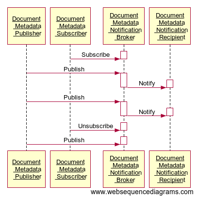
Figure 26.4.2.1.2-1: Interaction Diagram for Unexpected Notification Use Case
participant "Document \n Metadata \n Publisher" as publisher participant "Document \n Metadata \n Subscriber" as subscriber participant "Document \n Metadata \n Notification \n Broker" as notificationbroker participant "Document \n Metadata \n Notification \n Recipient" as recipient subscriber->+notificationbroker:Subscribe deactivate notificationbroker publisher->+notificationbroker:Publish notificationbroker->+recipient:Notify deactivate notificationbroker deactivate recipient publisher->+notificationbroker:Publish notificationbroker->+recipient:Notify deactivate notificationbroker deactivate recipient subscriber->+notificationbroker:Unsubscribe deactivate notificationbroker publisher->+notificationbroker:Publish deactivate notificationbroker |
Figure 26.4.2.1.2-2: Websequence diagrams code related to Figure 26.4.2.1.2-1
A patient visits his PCP after being discharged from a hospital that belongs to the same XDS Affinity Domain as the provider's organization. The provider sends a query to the XDS Document Registry, and retrieves the hospital discharge summary. The patient also has follow-up visits with a specialist at the hospital, and these visit summaries (including diagnostic test results) are registered in the XDS Document Registry. Currently, the PCP would have to periodically query the Document Registry for documents about the patient in order to retrieve the follow-up visit summaries. With a publish/subscribe infrastructure, the PCP would have a subscription for all his patients, so that notifications would have been received as the summaries were registered in the XDS Document Registry.
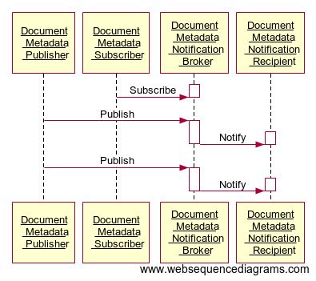
Figure 26.4.2.2.2-1: Interaction Diagram for Long-term Subscription Use Case
participant "Document \n Metadata \n Publisher" as publisher participant "Document \n Metadata \n Subscriber" as subscriber participant "Document \n Metadata \n Notification \n Broker" as notificationbroker participant "Document \n Metadata \n Notification \n Recipient" as recipient subscriber->+notificationbroker:Subscribe deactivate notificationbroker publisher->+notificationbroker:Publish notificationbroker->+recipient:Notify deactivate notificationbroker deactivate recipient publisher->+notificationbroker:Publish notificationbroker->+recipient:Notify deactivate notificationbroker deactivate recipient |
Figure 26.4.2.2.2-2: Websequence diagram code related to Figure 26.4.2.2.2-1
From the set of Antepartum Record Profiles in the PCC domain:
| During the 40 weeks of a typical pregnancy duration, the patient will have an initial History and Physical Examination, followed by repetitive office visits with multiple laboratory studies, imaging (usually ultrasound) studies, and serial physical examinations with recordings of vital signs, fundal height, and the fetal heart rate. As the patient is seen over a finite period in the office, aggregation of specific relevant data important to the evaluation of the obstetric patient upon presentation to Labor and Delivery is captured on paper forms. The antepartum documents contain the most critical information needed including the ongoing Medical Diagnoses, the Estimated Due Date, outcomes of any prior pregnancies, serial visit data on the appropriate growth of the uterus and assessments of fetal well-being, authorizations, laboratory and imaging studies. This data must all be presented and evaluated upon entry to the Labor and Delivery Suite to ensure optimal care for the patient and the fetus. |
The ability of the PCC Content Consumer to establish a subscription for the updates to the antepartum documents for a given expectant mother will enhance the ability to automate the delivery of the information in a timely manner.
The following diagram illustrates the process flow within an XDS Affinity Domain reflecting the use case presented in Section 26.4.2.3.1:
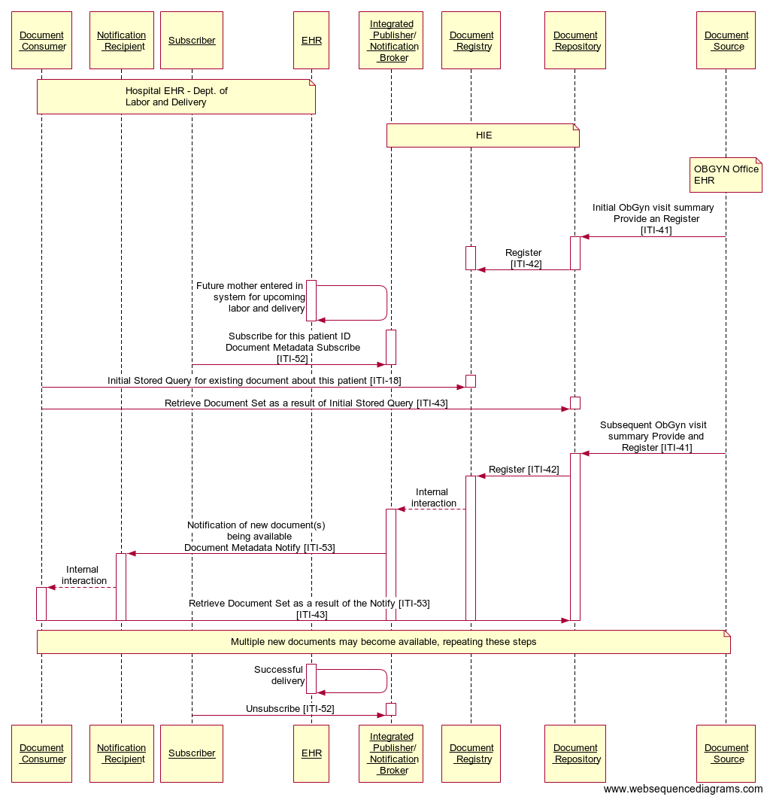
Figure 26.4.2.3.2-1: Interaction diagram for Long-term Subscription Use Case
participant "Document \n Consumer" as consumer participant "Notification \n Recipient" as recipient participant "Subscriber" as subscriber participant "EHR" as ehr participant "Integrated \n Publisher/ \n Notification \n Broker" as notificationbroker participant "Document \n Registry" as registry participant "Document \n Repository" as repository participant "Document \n Source" as source note over consumer, recipient, subscriber,ehr: Hospital EHR - Dept. of Labor and Delivery end note note over notificationbroker, registry, repository: HIE end note note over source: OBGYN Office EHR end note source->+repository:Initial ObGyn visit summary \n Provide an Register \n [ITI-41] repository->+registry:Register \n [ITI-42] deactivate repository deactivate registry ehr->+ehr:Future mother entered in \n system for upcoming \n labor and delivery deactivate ehr subscriber->+notificationbroker:Subscribe for this patient ID \n Document Metadata Subscribe \n [ITI-52] deactivate notificationbroker consumer->+registry:Initial Stored Query for existing document about this patient [ITI-18] deactivate registry consumer->+repository:Retrieve Document Set as a result of Initial Stored Query [ITI-43] deactivate repository source->+repository:Subsequent ObGyn visit \n summary Provide and \n Register [ITI-41] repository->+registry:Register [ITI-42] registry-->+notificationbroker:Internal \n interaction notificationbroker->+recipient:Notification of new document(s) \n being available \n Document Metadata Notify [ITI-53] recipient-->+consumer:Internal \n interaction consumer->repository:Retrieve Document Set as a result of the Notify [ITI-53] \n [ITI-43] deactivate repository deactivate registry deactivate notificationbroker deactivate recipient deactivate consumer note over consumer, recipient, subscriber, EHR, notificationbroker, registry, repository, source Multiple new documents may become available, repeating these steps end note ehr->+ehr:Successful \n delivery deactivate ehr subscriber->+notificationbroker:Unsubscribe [ITI-52] deactivate notificationbroker |
Figure 26.4.2.3.2-2: Websequence diagram code related to Figure 26.4.2.3.2-1
The above interaction diagram is showing a grouping of a Document Consumer, a Document Metadata Notification Recipient, and a Document Metadata Subscriber on one side, and a grouping of a Document Registry, a Document Repository and an Integrated Document Metadata Publisher/Notification Broker on the other side. The emphasized transactions are described in this profile, while the interactions with the grouped XDS actors are also shown. Note that the grouping presented here is not required.
In this use case, a system desires to subscribe to a submissionSet with a specific intended recipient of clinical information. A source of clinical content can identify the intended target for a submissionSet using the XDSSubmissionSet.IntendedRecipient metadata attribute.
Dr. Brown is a clinician and can request exams for many patients. His system can create a subscription for documents produced that are intended for him (the subscription created has the intendedRecipient as filter parameter).
Mr. White attends a consultation with Dr. Brown, who requests a Laboratory Report for the patient. The EMR system creates a subscription with an intendedRecipient of Dr. Brown.
The patient receives the exam in a Clinical Laboratory. The Laboratory Information System produces a report and submits the document in the Document Sharing Infrastructure identifying Dr. Brown as intendedRecipient for the submission. This publishing event matches the existing subscription and a notification is sent by the Document Metadata Notification Broker to Dr. Brown’s system (identified as Document Metadata Notification Recipient in the subscription created). Dr. Brown can quickly analyze the report published and can make other clinical decisions in an efficient way.
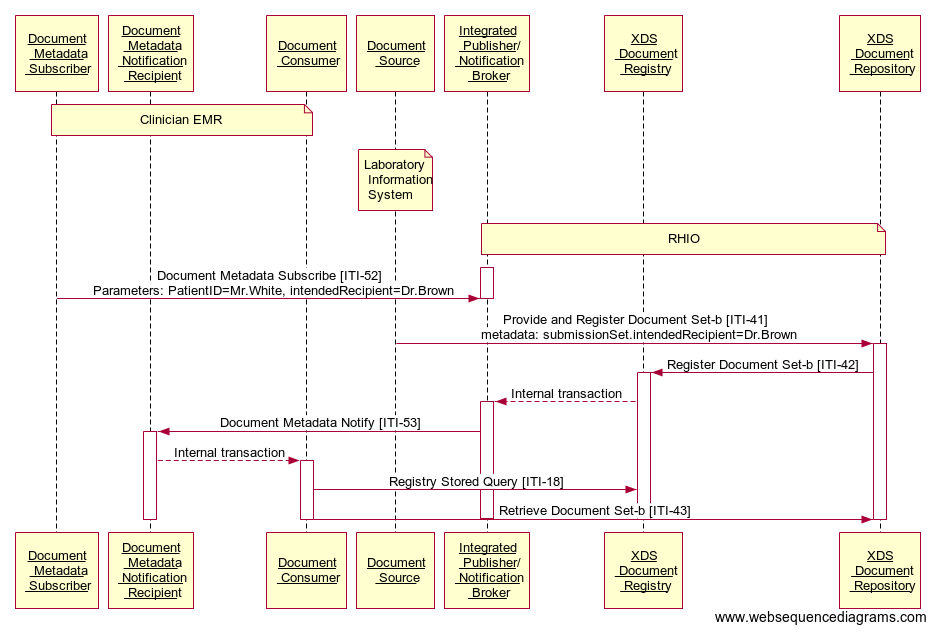
Figure 26.4.2.4.2-1: Interaction Diagram for IntendedRecipient subscription
participant "Document \n Metadata \n Subscriber" as subscriber participant "Document \n Metadata \n Notification \n Recipient" as recipient participant "Document \n Consumer" as consumer participant "Document \n Source" as source participant "Integrated \n Publisher/ \n Notification \n Broker" as notificationbroker participant "XDS \n Document \n Registry" as registry participant "XDS \n Document \n Repository" as repository note over subscriber, recipient, consumer: Clinician EMR end note note over source: Laboratory \n Information \n System end note note over notificationbroker, registry, repository: RHIO end note subscriber->+notificationbroker:Document Metadata Subscribe [ITI-52] \n Parameters: PatientID=Mr.White, intendedRecipient=Dr.Brown deactivate notificationbroker source->+repository:Provide and Register Document Set-b [ITI-41] \n metadata: submissionSet.intendedRecipient=Dr.Brown repository->+registry:Register Document Set-b [ITI-42] registry-->+notificationbroker:Internal transaction notificationbroker->+recipient:Document Metadata Notify [ITI-53] recipient-->+consumer:Internal transaction consumer->registry:Registry Stored Query [ITI-18] consumer->repository:Retrieve Document Set-b [ITI-43] deactivate repository deactivate registry deactivate notificationbroker deactivate recipient deactivate consumer |
Figure 26.4.2.4.2-2: Websequence diagram code related to Figure 26.4.2.4.2-1
In this use case a clinician creates a subscription for a specific instance of workflow (e.g., eReferral Workflow) because he wants to be notified of any updates that occurred to the workflow. The workflow Id is stored in the metadata XDSDocumentEntry.ReferenceIdList.
Dr. Brown is a GP. He decides to refer his patient Mr. White to another healthcare provider to have a specialist’s consultation. Dr. Brown does not take part in subsequent steps of the Referral process, but he wants to be notified of any relevant progress related to the workflow. Mr. White calls the specialist, Dr. Green, to schedule the specialist consultation. Dr. Brown is notified of this event.
On the day of the visit, the patient is admitted in Dr. Green’s office. Dr. Green analyzes the referral request created by Dr. White and any useful Clinical Documents related to the request. When the visit is completed, Dr. Green publishes a report and Dr. Brown is notified of the completion of the eReferral process so that he can analyze the whole workflow and all related documents.
The eReferral process is managed and tracked by the creation of a specific Workflow Document (e.g., as defined in the IHE PCC Cross-enterprise Basic eReferral Workflow Definition Profile (XBeR-WD)). The Workflow Document has a unique fixed reference, the workflow Id, which is stored in the XDSDocumentEntry.ReferenceIdList metadata.
The GP’s system creates this Workflow Document and a related subscription that identifies the specific workflow Id as filter parameter for the creation of notifications. From this time, any update of the workflow document will result in the creation and the delivery of a notification to the GP, because the Workflow Id remains the same during the whole evolution of the workflow. For example, the scheduling phase involves the creation of a new version of the Workflow Document characterized by the same workflow Id. This scheduling event triggers the creation of a notification that is sent to the GP.
The execution of the visit involves another update of the workflow document and, as consequence, a new notification is sent to the GP.
This notification framework allows the GP to be active participant in the process started by him.
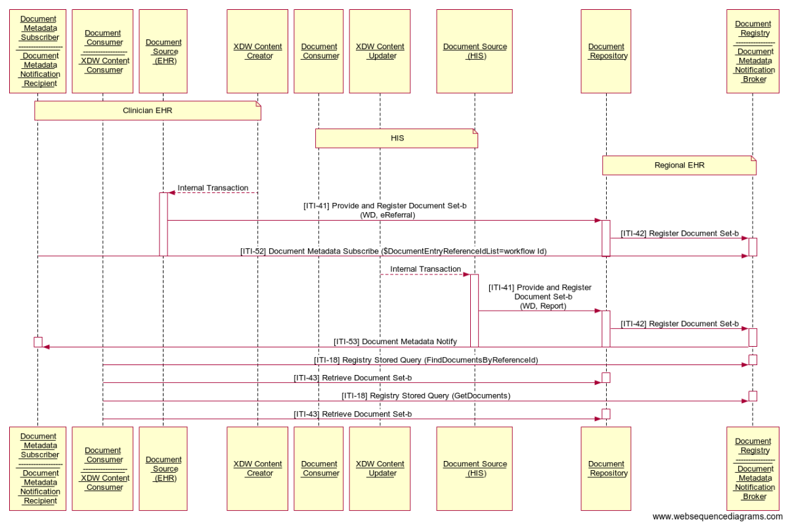
Figure 26.4.2.5.2-1: Interaction Diagram for Workflow Id subscription Use Case
participant "Document \n Metadata \n Subscriber \n ------------------ \n Document \n Metadata \n Notification \n Recipient" as subscriberrecipient participant "Document \n Consumer \n ------------------ \n XDW Content \n Consumer" as consumerXDW participant "Document \n Source \n (EHR)" as sourceEHR participant "XDW Content \n Creator" as XDWcreator participant "Document \n Consumer" as documentconsumer participant "XDW Content \n Updater" as XDWupdater participant "Document Source \n (HIS)" as sourceHIS participant "Document \n Repository" as documentrepository participant "Document \n Registry \n ---------------- \n Document \n Metadata \n Notification \n Broker" as registrynotificationbroker note over subscriberrecipient, consumerXDW, sourceEHR, XDWcreator Clinician EHR end note note over documentconsumer, XDWupdater, sourceHIS HIS end note note over documentrepository, registrynotificationbroker Regional EHR end note XDWcreator-->+sourceEHR:Internal Transaction sourceEHR->+documentrepository:[ITI-41] Provide and Register Document Set-b \n (WD, eReferral) documentrepository->+registrynotificationbroker:[ITI-42] Register Document Set-b subscriberrecipient->registrynotificationbroker:[ITI-52] Document Metadata Subscribe ($DocumentEntryReferenceIdList=workflow Id) deactivate sourceEHR deactivate documentrepository deactivate registrynotificationbroker XDWupdater-->+sourceHIS:Internal Transaction sourceHIS->+documentrepository:[ITI-41] Provide and Register \n Document Set-b \n (WD, Report) documentrepository->+registrynotificationbroker:[ITI-42] Register Document Set-b registrynotificationbroker->+subscriberrecipient:[ITI-53] Document Metadata Notify deactivate sourceHIS deactivate documentrepository deactivate registrynotificationbroker deactivate subscriberrecipient consumerXDW->+registrynotificationbroker:[ITI-18] Registry Stored Query (FindDocumentsByReferenceId) deactivate registrynotificationbroker consumerXDW->+documentrepository:[ITI-43] Retrieve Document Set-b deactivate documentrepository consumerXDW->+registrynotificationbroker:[ITI-18] Registry Stored Query (GetDocuments) deactivate registrynotificationbroker consumerXDW->+documentrepository:[ITI-43] Retrieve Document Set-b deactivate documentrepository |
Figure 26.4.2.5.2-2: Websequence diagram code related to Figure 26.4.2.5.2-1
The risk analysis for this profile enumerates assets, threats, and mitigations. The risk assessment spreadsheet is stored and available from IHE at http://wiki.ihe.net/images/4/46/DSUB_risk_assesment.xls.
The purpose of this risk assessment is to notify implementers of some of the risks that they need to consider in implementing DSUB actors. For general IHE risks and threats please see ITI TF-1: Appendix L. The implementers are also advised that many risks cannot be mitigated by the IHE profile and instead the responsibility for mitigation is transferred to the implementer, and occasionally to the XDS Affinity Domain and enterprises. In these instances, IHE’s responsibility to notify affected parties is fulfilled through the following section.
A policy decision can be made during the Subscribe transaction, whether the subscription is an authorized subscription and whether a notification/type of notification is authorized. (This could be based on the XUA identity, the consumer address value, etc.)
This profile does not include the solution to changes of policy between the subscribe time and notify time (which can be substantial). The recommendation is that the policy is enforced conservatively (i.e., the length of subscription can be determined by the Document Metadata Notification Broker). An approach allows the access of content published in accordance to consent given by the patient. The consent is dynamic and can change during time. The availability of content can be discovered only asking the document-sharing infrastructure. The creation of subscription is not dependent to access policies rules. If the Document Metadata Notification Broker sends the references, then the control of access policies is in query/retrieve transactions of the Document Metadata Notification Recipient.
Specific security considerations are presented in the Security Considerations section of each transaction in Volume 2.
Within an XDS Affinity Domain:
the Document Metadata Notification Broker will most likely be grouped with a Document Registry
the Document Metadata Subscriber will most likely be grouped with a Document Consumer
the Document Metadata Publisher will most likely be grouped with a Document Registry
the Document Metadata Notification Recipient will likely be grouped with a Document Consumer
The Cross-Community Patient Discovery (XCPD) Profile supports the means to locate communities that hold patient relevant health data and the translation of patient identifiers across communities holding the same patient’s data. A community is defined as a group of facilities/enterprises that have agreed to work together using a common set of policies for the purpose of sharing health information within the community via an established mechanism. Facilities/enterprises may host any type of healthcare application such as EHR, PHR, etc. A community is identifiable by a globally unique id called the homeCommunityId. Membership of a facility/enterprise in one community does not preclude it from being a member in another community. Such communities may be XDS Affinity Domains which define document sharing using the XDS Profile or any other communities, no matter what their internal sharing structure.
Figure 27.1-1 shows the actors directly involved in the XCPD Integration Profile and the relevant transactions between them. Other actors that may be indirectly involved due to their participation in XCA, XDS, PIX, PDQ, etc. are not necessarily shown.
Figure 27.1-1: XCPD Actor Diagram
Table 27.1-1 lists the transactions for each actor directly involved in the XCPD Profile. In order to claim support of this Integration Profile, an implementation must perform the required transactions (labeled “R”). Transactions labeled “O” are optional. A complete list of options defined by this Integration Profile and that implementations may choose to support is listed in Section 27.2.
Table 27.1-1: XCPD Integration Profile - Actors and Transactions
| Actors | Transactions | Optionality | Section |
| Initiating Gateway | Cross Gateway Patient Discovery [ITI-55] | R | ITI TF-2b: 3.55 |
| Responding Gateway | Cross Gateway Patient Discovery [ITI-55] | R | ITI TF-2b: 3.55 |
The Initiating Gateway supports all outgoing inter-community communications. XCPD uses this actor to initiate the Cross Gateway Patient Discovery [ITI-55]. The Initiating Gateway is required to support synchronous transaction messaging and may declare an option to support Asynchronous Web Services Exchange. Choosing Asynchronous Web Services Exchange will allow the Initiating Gateway to support workflows which scale to large numbers of communities because Asynchronous Web Services Exchange allows for more efficient handling of latency and scale.
The Responding Gateway supports all incoming inter-community communications. XCPD uses this actor to receive the Cross Gateway Patient Discovery [ITI-55] transaction. The Responding Gateway is required to support Asynchronous Web Services Exchange on all implemented transactions. This allows the Initiating Gateway to choose the better of the two messaging patterns (synchronous or asynchronous) that fit the needs of the workflow. Support for Asynchronous Web Services Exchange allows for workflows which scale to large numbers of communities because it can handle latency and scale more efficiently.
The Cross Gateway Patient Discovery transaction supports the ability for Initiating Gateways and Responding Gateways to discover mutually known patients. This transaction assumes an environment where patient data is well described and high-quality demographic data is available.
Because the transaction supports the mutual discovery of patients it can be seen as having dual purposes.
To support a query by the Initiating Gateway requesting a demographically matching patient from within the Responding Gateway’s community.
To support a feed to Responding Gateway announcing that the patient is known by the Initiating Gateway’s community.
This dual nature of the transaction is chosen for scalability purposes, as demographic matching algorithms are expensive on a large scale and once a match is identified it is important that both the initiating and responding sides of the transaction can use the results of that successful match.
The Cross Gateway Patient Discovery transaction has several modes, useful in different environments:
Demographic Query only mode – in this mode only the demographics of the patient are included in the request. The initiating community does not have, or does not choose to specify, a patient identifier for use by the Responding Gateway.
Demographic Query and Feed – in this mode both the demographic and initiating community identifier are included in the request.
Shared/national Patient Identifier Query and Feed – in this mode only a shared/national identifier is specified. Demographics are not necessary because matching can be done on the identifier alone.
This transaction can be used synchronously and asynchronously.
Options that may be selected for this Integration Profile are listed in Table 27.2-1 along with the Actors to which they apply. Dependencies between options when applicable are specified in notes.
Table 27.2-1: XCPD - Actors and Options
| Actor | Options | Vol. & Section |
| Initiating Gateway | Asynchronous Web Services Exchange | ITI TF-1: 27.2.1 |
| Deferred Response | ITI TF-1: 27.2.2 | |
| Responding Gateway | Deferred Response | ITI TF-1: 27.2.2 |
Initiating Gateways which support Asynchronous Web Services Exchange shall support Asynchronous Web Services Exchange on the Cross Gateway Patient Discovery [ITI-55]. Asynchronous processing is necessary to support scaling to large numbers of communities because Asynchronous Web Services Exchange allows for more efficient handling of latency and scale.
Responding Gateways which support the Deferred Response Option shall support Deferred Response as described in ITI TF-2b: 3.55.6.2 on the Cross Gateway Patient Discovery [ITI-55] transaction.
Initiating Gateways which support the Deferred Response Option shall support Deferred Response as described in ITI TF-2b: 3.55.6.2 on the Cross Gateway Patient Discovery [ITI-55] transaction.
The Deferred Response Option reflects the more detailed understanding and feedback from implementers regarding processing that may result in significant delay. The Asynchronous Web Services Exchange Option (WS-Addressing based) can support some scenarios with delayed response but not environments where the delay in responding may be as much as days or weeks. These cases require a mechanism that is managed by the application and which supports recovery through system restart. Deferred Response mode provides applications with such capability. In doing so it also adds responsibilities to the application, in particular for managing message correlation, creating application level acknowledgements and determining where to send a Deferred Response message. The new flexibility allowed by the Deferred Response Option is deemed worthy of these additional requirements on the application. For more information about Deferred Response and Asynchronous messaging in general see http://wiki.ihe.net/index.php?title=Asynchronous_Messaging.
This section lists the use cases considered in developing this profile.
Use Case: Multiple primary residences
This use case describes the situation where a patient maintains more than one principal residence. Generally, the principal residences are not geographically close so the medical data generated while in each residence would be created by separate institutions.
A common example of this use case is what is described in the United States as the Snow Bird. This is a person who maintains two residences, one in the northern part of the USA for use during the hot summer months and one in the south for the colder winter. If a patient lives in Florida in the winter and in New York in the summer, this patient will likely have medical records in both places which need to be shared. If the patient is managing a long-term medical condition, like diabetes, it will be important as she moves from New York to Florida and back that the background and related testing associated with management of the medical condition is readily accessible to the local physician.
Use Case: Border towns
A variation of the multiple primary residence use case involves a patient who lives on the border between two communities or works and lives at some distance. A patient who lives in Longwy, France, which is on the border between the France and Belgium, may access health facilities both in France and Belgium. If that patient works in the European Investment Fund, he might also access health organizations in Luxembourg. All of these disparate areas, although closer geographically than the two French cities Longwy and Toulouse would probably hold patient information in separate domains thereby requiring the same kind of cross domain sharing as the snowbird case described above.
Use Case: Patient Move
A patient moves from one region to a different, remote region. The new region needs to access records from the patient’s prior location.
Use Case: Vacationer
A patient is traveling and goes to the hospital. The hospital needs to access records from organizations in the patient’s region of residence. Upon return from vacation, organizations in the region of residence need to access records from the remote hospital.
Use Case: Regional coalition
Several medical facilities, related by region or other purpose, form an alliance to share medical data in an ongoing and integrated way. Patients across these facilities see seamless integration of medical records.
Use Case: Specialized treatment in different region
The patient travels for specialized treatment and upon return requests the provider access records associated with the specialized treatment. Patient knows the city or region of the treatment but not the specific facility.
Use Case: Patient changes last name
The patient changes her last name as a result of marriage.
This section details some of the likely interactions when using XDS, XCA and XCPD to share health data across communities.
Due to the peer-to-peer nature of XCPD interactions the Initiating Gateway must determine which communities to contact. XCPD does not address this question directly. Some possible approaches are:
The patient carries an identification card which points to a Patient Medical Home. The Initiating Gateway uses the identification of the Patient Medical Home to determine the correct Responding Gateway to contact.
A nation supports a registry of communities which can be searched using keys like homeCommunityId, regions within the nation, states, cities or other mechanisms to narrow a set of communities. When seeing a patient with a known home address a community may search the registry for communities near that home address and contact those first.
A nation would have a set of recognized communities that is accessible either through the registry or via configuration.
Prior to any point-to-point sharing of protected health data the initiating and responding communities will need to agree to policies regarding the use of the data being shared. Those agreements may be:
Peer-to-Peer – each community negotiates with each other community in a one-to-one method.
Regional – a regional government or regional organization creates an agreement that all within the region may agree to and by doing so join sharing within that region.
Across Region – A super regional (e.g., national) brings together sharing across regional sets of communities.
Across Nation – At some point in the future nations may develop agreements for sharing across national boundaries, and as such will enable regions to share at a much larger scale.
The following sections illustrate scenarios for use of XCPD transactions. The illustrations assume grouping of XCPD Initiating and Responding Gateways and XCA Initiating and Responding Gateways11 for simplicity of the diagram and that each community is an XDS Affinity Domain. The interactions depicted in the diagrams are examples of use of the transactions, not requirements. The XCPD transactions are designed to enable a variety of behaviors. Implementers are free to choose some or none of the behaviors described.
Scenario # 1: Peer-to-peer
Figure 27.3.2.1-1 shows the transactions involved in sharing healthcare data for one patient among three communities. Details on each interaction follow the diagram. “I&R Gateway” indicates the grouping of Initiating and Responding Gateways.
Figure 27.3.2.1-1: Detailed Interactions Peer-to-peer (Informative)
[1] The patient registers within Community A and a Patient Feed is sent to the Gateway.
[2] The Gateway uses the Cross Gateway Patient Discovery transaction to determine if this patient is known in community B. Community B consults with its local MPI and, finding no match, responds with no matches, indicating the patient is not known in community B.
[3] The Gateway uses the Cross Gateway Patient Discovery transaction to determine if this patient is known in community C. Community C responds with one match including the patient identifier in C.
[4] Community C consults with its local MPI and finds a match. It saves the identifier designated on the Cross Gateway Patient Discovery transaction as Community A’s identifier for this patient.
[5] Community C pre-loads data for this patient by sending a XCA Cross Gateway Query to community A.
[6] This patient is seen, for the first time, within an organization in community B which subsequently requests data about this patient and sends an XDS Registry Stored Query to its local Gateway.
[7] The Gateway uses the Cross Gateway Patient Discovery transaction to determine if this patient is known in community A. Community A consults its local MPI and responds with one match including the patient identifier in A. Community A saves the identifier designated on the Cross Gateway Patient Discovery transaction as community B’s identifier for this patient.
[8] The Gateway uses the Cross Gateway Patient Discovery transaction to determine if this patient is known in Community C. Community C responds with one match including the patient identifier in C.
[9] Community C consults with its local MPI and finds a match. It saves the identifier designated on the Cross Gateway Patient Discovery transaction as community B’s identifier for this patient.
[10] The community B gateway sends a XCA Cross Gateway Query to both Community A and C because both responded positively to the Cross Gateway Patient Discovery transaction. Both responses are combined by the community B gateway and returned to the organization which originated the XDS Registry Stored Query in step [6].
[11] An organization in community A requests data about this patient and sends an XDS Registry Stored Query to its local Gateway.
[12] The Gateway has saved the community B identifier in step [7] and Community A identifier in step [3]. But this query may happen days or weeks or years later. To verify the correlation of the identifier, community A’s gateway repeats the Cross Gateway Patient Discovery to both B and C. B and C will consult their local MPI to identify the match.
[13] Having verified the correlation, community A sends an XCA Cross Gateway Query to both community B and C and combines the responses in order to respond to the XDS Registry Stored Query from step [11].
The Cross Gateway Patient Discovery transaction has been designed to support the use of a Responding Gateway representing multiple organizations where each has its own patient identification domain and there is no patient identification domain in common across the organizations represented.
Figure 27.3.2.2-1 shows the flow when an Initiating Gateway interacts with a Responding Gateway which is representing multiple organizations and reflecting those organizations in its Cross Gateway Patient Discovery response. The Responding Gateway interacts, using a community internal mechanism or any standard mechanism (e.g., XCPD, PDQ), with each of the Master Patient Indices (MPI) to find a match for the specified demographics. The figure shows the Responding Gateway interacting with three MPI’s and discovering three matching patient identifiers: X in the A domain, Y in the B domain and Z in the C domain. All three of the patient identifiers are returned in the Cross Gateway Patient Discovery response in a way that indicates that they represent three different domains, rather than three matches from one domain (which is also possible and coded in a different way see ITI TF-2b: 3.55.4.2.2.4). In order for the Initiating Gateway to access all data it must issue three separate XCA Cross Gateway Query transactions, each with one of the patient identifiers returned from the Cross Gateway Discovery transaction.
Figure 27.3.2.2-1: Hierarchical use of Cross Gateway Query (Informative)
The risk analysis for XCPD enumerates assets, threats, and mitigations. The complete risk data is stored and maintained in a central location. The complete risk data is stored and available from IHE12.
The purpose of this risk assessment is to notify vendors of some of the risks that they are advised to consider in implementing XCPD actors. For general IHE risks and threats please see ITI TF-1: Appendix L. The vendor is also advised that many risks cannot be mitigated by the IHE profile and instead the responsibility for mitigation is transferred to the vendor, and occasionally to the XDS Affinity Domain and enterprises. In these instances, IHE fulfills its responsibility to notify affected parties through the following section.
The following mitigations shall be implemented by all XCPD actors. These mitigations moderate all high impact risks.
All actors in XCPD shall be grouped with an ATNA Secure Node (or ATNA Secure Application) and a CT Time Client Actor.
As a consequence of grouping with ATNA Secure Node or Secure Application both incoming and outgoing messages will be via a secure communication channel, including all WS-Addressing based Asynchronous response messages.
The following mitigations are transferred to the vendors, XDS Affinity Domains, and enterprises.
Network protection services are recommended to be sufficient to guard against denial of service attacks on all service interfaces.
A process that reviews audit records and acts on inappropriate actions is recommended.
It is recommended that service interfaces be implemented with a good design to guard against corruption and denial of service attacks
Policy choices will not be addressed by this profile. Each community may have different policies. The profile has been designed with this fact in mind and an understanding of enough variety of policies so that any reasonable policy can be implemented without violating the profile.
The Cross-Enterprise Document Workflow (XDW) Profile enables participants in a multi-organizational environment to manage and track the tasks related to patient-centric workflows as the systems hosting workflow management applications coordinate their activities for the health professionals and patients they support. XDW builds upon the sharing of health documents provided by other IHE profiles such as XDS, adding the means to associate documents conveying clinical facts to a patient-specific workflow. XDW provides a common interoperability infrastructure upon which a wide range of specific workflow definitions may be supported. It is designed to support the complexity of health services delivery with flexibility to adapt as workflows evolve.
This profile defines an instrument, called a “Workflow Document”, to manage and track a shared workflow. It records the creation of tasks and maintains a historical record of tasks as they move through the associated workflow. The Workflow Document also maintains the references to health information input and output associated with each task. Such shared workflow status information allows the various participating systems to coordinate by:
being aware of the history of a workflow for a patient;
obtaining and reading the workflow’s incomplete tasks;
updating this shared document as the workflow tasks are performed according to a referenced workflow definition.
XDW provides to offer a common, workflow-independent interoperability infrastructure that:
provides a platform upon which a wide range of specific workflows can be defined with minimal specification and applications implementation efforts on the workflow definition (e.g., Medical Referrals Workflow, Prescriptions Workflow, Home Care Workflow);
benefits many clinical and non-clinical domains by avoiding different competing approaches to workflow management;
increases the consistency of workflow interoperability, and enables the development of interoperable workflow management applications where workflow-specific customization is minimized;
facilitates the integration of multi-organizational workflows with the variety of existing workflow management systems used within the participating organizations;
offers the necessary flexibility to support a large variety of different healthcare workflows by not being overly constrained.
More specifically XDW supports workflows that are:
patient-centric;
based on business/clinical needs which are defined externally to the XDW Profile. Such workflow definitions have to be known only by the applications within the participating systems, not by the infrastructure systems;
executed in loosely connected, distributed environments, where centralized workflow management systems are not desired, or in many instances, possible.
The XDW Workflow Architecture illustration (Figure 30-1) shows how the sharing of XDW Documents between “edge” applications using Document Sharing infrastructure supports the management of Workflow according to Workflow Definitions established between participating applications.
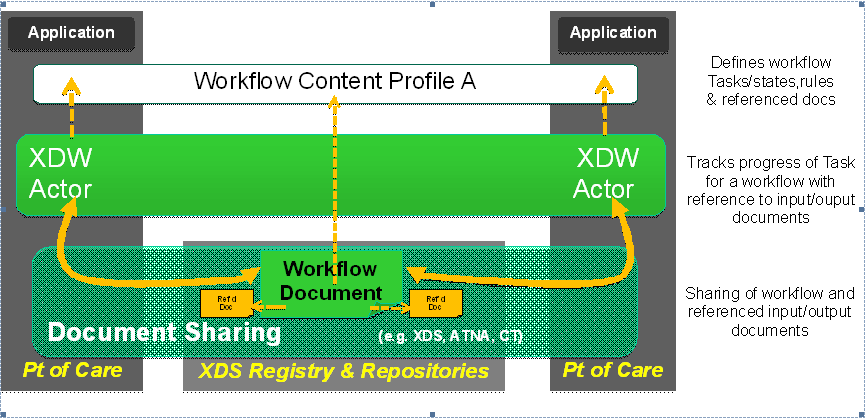
Figure 30-1: XDW Workflow Architecture
The XDW Content Profile is based on three actors, the Content Creator, the Content Consumer and the Content Updater. Content is created by a Content Creator or a Content Updater and is to be consumed by a Content Consumer or a Content Updater. The sharing or transmission of content or updates from one actor to the other is addressed by the use of IHE integration profiles such as XDS, XDM or XDR (see PCC TF-1: 2.1 for a detailed explanation of the use of “Content Profiles” with “Integration Profiles”).
Figure 30.1-1 shows the actors directly involved in the XDW Profile and the direction that the content is exchanged.
A product implementation using this profile must group actors from this profile with actors from a workflow or transport profile to be functional. See Section 30.3 “XDW Actor Groupings and Profile Interactions”.
Figure 30.1-1: XDW Actor Diagram
Table 30.1-1 lists the content module(s) defined in the XDW Profile. To claim support of this profile, an actor shall support all required content modules (labeled “R”) and may support optional content modules (labeled “O”).
Table 30.1-1: XDW Profile - Actors and Content Modules
| Actors | Content Modules | Optionality | Reference |
| Content Creator | XDW Workflow Content Module (see Note 1) | R | ITI TF-3: 5.4 |
| Content Consumer | XDW Workflow Content Module (see Note 1) | R | ITI TF-3: 5.4 |
| Content Updater | XDW Workflow Content Module (see Note 1) | R | ITI TF-3: 5.4 |
Note 1: The XDW Workflow Content Module defines how to create an agnostic unstructured Workflow Document. Implementations may also choose to support Content Modules for specific workflows defined by IHE in workflow definition profiles (e.g., profiles in the PCC domain: Cross-Enterprise eReferral Workflow Definition (XBeR-WD), Cross-Enterprise TeleHomeMonitoring Workflow Definition (XTHM-WD), Cross-Enterprise Tumor Board Workflow Definition (XTB-WD), and others.)
The Content Creator is responsible for creating content that will be shared or exchanged between other IHE Actors. It is required to be grouped with other Actors that perform the actual sharing or exchanging of information (see Section 30.3). The XDW Content Creator shall be able to create new workflows by creating a new XDW Workflow Document as defined in ITI TF-3: 5.4. This actor is workflow agnostic and it is responsible only for the creation of the first version of the XDW Workflow Document.
The Content Consumer is responsible for accessing XDW Workflow Documents that have been shared or exchanged between other IHE Actors. It is required to be grouped with other Actors that perform the actual sharing or exchanging of information (see Section 30.3). The XDW Content Consumer may only obtain and read the last version of a specific XDW Workflow Document. The XDW Workflow Document consumed can belong to any kind of clinical workflow.
A Content Updater shall be able to contribute to existing workflows by consuming an existing XDW Workflow Document and replacing it with an updated Workflow Document. It is required to be grouped with other Actors that perform the actual sharing or exchanging of information (see Section 30.3). This actor shall be able to consume and read the most recent version of a specific XDW Workflow Document. The XDW Content Updater shall be able to update the XDW Workflow Document, acting on the content in many different ways (tracking a new task initiated or performed, changing the status of tasks, adding documents reference in some tasks, changing the status of the whole workflow, etc.). After the update, the XDW Content Updater shall be able to replace the previous version of the XDW Workflow Document with the new one. This actor shall be able to solve “race condition” events (see ITI TF-3: 5.4.5.1).
Options that may be selected for this Profile are listed in the Table 30.2-1 along with the Actors to which they apply.
Table 30.2-1: XDW - Actors and Options
| Actor | Options | Vol. & Section |
| Content Creator | No options defined | - - |
| Content Consumer (Note 1) | View Option | ITI TF-1: 30.2.1 |
| Document Import Option | ITI TF-1: 30.2.2 | |
| Content Updater (Note 1) | View Option | ITI TF-1: 30.2.1 |
| Document Import Option | ITI TF-1: 30.2.2 |
Note 1: The actor shall support at least one of these options
A Content Consumer or a Content Updater that supports the View Option shall be able to:
use the appropriate XD* transactions to obtain the Workflow Document along with associated necessary metadata;
interpret the content of the Workflow Document and display its required content elements in a way which shows the tasks that are not complete and the completed task in a chronological way. The required elements to display are identified in the “View” column in ITI TF-3: Table 5.4.3-8 and Table 5.4.3-9.
For each task, it shall list the documents referenced inside the Workflow Document and may optionally support the retrieve and the rendering of the documents referenced inside the Workflow Document.
Any additional display capabilities that are specific to the referenced Workflow Definition profile may be provided.
A Content Consumer or a Content Updater that supports the Document Import Option shall support the storage of the entire Workflow Document (as provided by the XD* sharing framework) along with applicable metadata to ensure its later processing. Documents referenced in the Workflow Document may also be stored. This Option requires the proper tracking of the relation between the Documents referenced and the content of the Workflow Document origin. Once a document has been imported, the Content Consumer or the Content Updater shall offer a means to use the document without the need to retrieve it again from the XD* sharing framework. When viewed after it was imported, a Content Consumer and/or a Content Updater may choose to access the XD* sharing framework to find out if the related Document viewed has been deprecated or replaced.
Note: For example, when using XDS, a Content Consumer may choose to query the Document Registry about a document previously imported in order to find out if this previously imported document may have been replaced
An XDW Content Creator, Content Updater and Content Consumer shall be grouped with appropriate actors from the XDS, XDM and XDR Profile to exchange XDW Workflow Documents. The metadata used for document entries in document sharing or interchange has specific relationships or dependencies (which we call bindings, see ITI TF-3: 5.4.6) to the content of the clinical document – a XDW Workflow Document.
When XDW is used in conjunction with XDS:
an XDW Content Creator shall be grouped with
an XDS Document Source;
an XDW Content Updater shall be grouped with
an XDS Document Source with the Document Replacement Option;
an XDS Document Consumer;
an XDW Content Consumer shall be grouped with
an XDS Document Consumer.
When XDW is used in conjunction with XDR:
an XDW Content Creator shall be grouped with
an XDR Document Source;
an XDW Content Updater shall be grouped with
an XDR Document Source;
an XDR Document Recipient;
an XDW Content Consumer shall be grouped with
an XDR Document Recipient.
When XDW is used in conjunction with XDM:
an XDW Content Creator shall be grouped with
an XDM Portable Media Creator;
an XDW Content Updater shall be grouped with
an XDM Portable Media Creator;
an XDM Portable Media Importer;
an XDW Content Consumer shall be grouped with
an XDM Portable Media Importer.
Note: The support of Workflow spanning XDS, XDR and XDM environments is not explicitly addressed.
XDW is a core component of a common, workflow-independent interoperability infrastructure that provides a platform upon which a wide range of specific workflows can be defined by “content specialization” with minimal specification and implementation efforts (e.g., Medical Referrals, Prescriptions, Home Care).
This section first describes the overall architecture within which the XDW Profile operates. Next, the structure of the XDW workflow document, the primary data structure that is shared among the workflow participants, is described.
A Workflow Definition is structured as a set of logical or clinical tasks definitions and rules. Each task definition describes an activity or a group of activities that needs to be accomplished by the owner of the task. The rules in the workflow definition ensure that the different participants in a workflow operate jointly to advance within process and to move from one task to another in a consistent way.
Figure 30.4.1.1-1 presents an overview of the Workflow Architecture built around the XDW Profile.
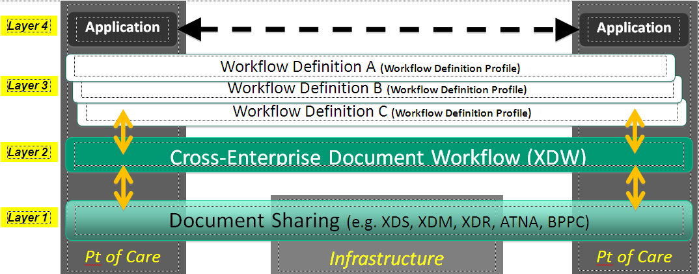
Figure 30.4.1.1-1: XDW Architecture Overview
In this workflow architecture:
The first layer supports the sharing or exchange of documents. This interoperability foundation is enabled by a set of existing IHE document sharing profiles such as XDS, XDR and XDM along with document content profiles and security/privacy profiles such as ATNA and (optionally) BPPC;
The second layer defines a generic data structure called a Workflow Document which is shared among the workflow participants by using the first layer of this architecture. Likewise, the clinical and administrative documents that are used as input and produced as output by the tasks of workflows managed by the XDW Profile are shared using the same first layer of this architecture;
The third layer introduces the semantic definition of the workflows that can be understood and executed among the participating systems/applications. The orchestration of specific workflows allows the workflow participants to share a common understanding of the specific tasks, the dependencies between these tasks, and a number of rules that control the workflow execution. Execution details are conveyed through the XDW Workflow Document defined by the second layer of the architecture. The specification of Workflow Definitions at this third layer is not part of the XDW Profile and is currently best handled with a natural language expression (See example of Basic Unstructured Workflow Definition Profile, ITI TF-2x: Appendix X);
The fourth layer of this architecture contains the applications executed by the participating systems. Such applications bridge between XDW managed workflow and the locally managed workflow. Much of the details of the local workflows managed by each application will be hidden and encapsulated in “higher” granularity tasks exposed through XDW; as such details would not need to be externally exposed. The workflow definitions conveyed by the third layer should only contain higher granularity tasks that require workflow coordination across organizational boundaries.
The XDW Profile uses the XDW Workflow Document to manage workflows.
The XDW Workflow Document enables participants in a multi-organization environment to manage and track the execution of patient-centric workflows. The structure of WorkflowDocument is organized into Tasks and TaskEvents.
A Task describes an activity, or a group of activities, that need to be accomplished or have been accomplished. A Task is characterized by several attributes:
the type of task,
the owner of the task,
the current status of this task (one of the status values that are valid for this task),
the references to documents used for input or produced as output
the history of past Task Events for this task, that document the progress of the task up to the present state
When a person or organization has been assigned as owner of a task, the task is placed under execution. (It moves from a “CREATED” or “READY” status to an “IN_PROGRESS” status). When the expected activity(ies) is completed successfully the task moves to the “COMPLETED” status, otherwise to the “FAILED” status (for the state diagram see ITI TF-3: 5.4.2.4).
Task Event is a record of a change (status and/or other attribute) of a task; a Task Event history is the list of Task Events for a specific task.
As shown in the Figure 30.4.1.2-1, the XDW Workflow Document is structured into two parts:
a first part with general workflow information about the document,
a second part that collects the different Tasks that are completed or not yet completed in the workflow, as well as for each task, the related Task Events that tracks its progress. Task and Task Event specification leverages a proper subset of the task model and specification from the OASIS Human Task, a standard closely related to well-known workflow standards such as BPEL and BPMN.
Figure 30.4.1.2-1: Workflow Document Structure
The Task and Task Events include references to clinical or administrative input/output documents to the Task or Task Event:
The Input attribute contains references to documents that are relevant for workflow participants in performing the Task. For example, for a performed examination, this could contain a reference to a referral request. It may also contain references to "parent" workflows to which this workflow is a "child".
The Output attribute contains references to documents that were produced as a result of performing this Task. For example, this could contain a reference to a report written by a specialist. It may also contain references to "child" workflows initiated by this workflow as a parent.
At any time, if a participant chooses to update the workflow for a specific patient, it shall either create one (or more) new task or update an existing task and record a past taskEvent. Each update to the Workflow document results in a new instance of the Workflow Document which is published as a replacement. The prior version being replaced is then placed in the status “deprecated” (DocumentEntry availabilityStatus) so that only the newest Workflow Document is active. The technical description of the updating process of the Workflow Document is specified in ITI TF-3: 5.4.5.4.
When a new Workflow Document is created, the Content Creator assigns it a workflow identifier in the DocumentEntry.referenceIdList metadata attribute and in the workflow document. This workflow identifier does not change during the evolution of the workflow itself, and allows the grouping of all the XDW Workflow Documents that belong to the same instance of workflow.
All subsequent replacement workflow documents also carry the same workflow identifier so that this identifier provides a stable reference to an instance of a workflow, while the Workflow Document DocumentEntry.uniqueId is different for each version of the workflow document.
A broad range of use cases may be supported by the XDW Content Profile.
The purpose of this section is to describe a typical use of XDW with no intent to present the breadth and flexibility of XDW. The use case described in this section provides the necessary background to the reader in understanding the basic capabilities of XDW.
This use case is not intended as a Workflow Definition Profile specification. Such Profiles are being developed by clinical IHE Domains in order to support their specific workflows.
This workflow is a three-step process:
a physician refers a patient to another healthcare provider for a specialist’s consultation;
the specialist starts the consultation which may span one or more visits
the specialist completes the consultation and produces a report.
Each step will be described both from a clinical and a technical point of view.
The description will rely on two figures:
Figure 30.4.2.1.1-1 represents the evolution of the Workflow Document during this Referral workflow. Each one of the three steps A, B, C is depicted in a column.
Figure 30.4.2.1.1-2 is a sequence diagram of the transactions between “system actors” in the sharing of the Workflow Document as it is updated, using an infrastructure based on the XDS Profile (although not shown here, this use case could be transposed on the XDR or XDM Profiles).
We present below the detailed chronological sequence of steps:
A physician refers a patient to another healthcare provider for a specialist’s consultation
In this task, the GP examines the patient and reviews the patient’s most recent laboratory report. The GP refers the patient to a specialist, creating an eReferral Document and referencing the laboratory report.
The GP’s software, as Content Creator, produces the e-Referral Document and one Workflow Document to track the clinical workflow of the eReferral. As shown in column A of Figure 30.4.2.2-1, at this moment the Workflow Document created has only one task (“Referral Requested”) characterized by:
a task status “COMPLETED”
as inputs of the task the references to the laboratory report analyzed by the GP
as outputs of the task the reference to the eReferral document produced.
In order to share the documents that are produced during the task, the GP’s Software (as a grouped Content Creator and XDS Document Source) submits the eReferral Document and the Workflow Document to the XDS Document Repository as shown in box A of Figure 30.4.2.2-2.
Figure 30.4.2.2-1: Management of the Workflow Document
The specialist starts the consultation which may span one or more visits
In this task, the patient goes to the specialist of his choice (or suggested by his GP).
The specialist consults the eReferral document and the associated Workflow Document to understand the task that needs to be performed.
The specialist accesses the document by using his software, which is a grouping of a Content Updater and an XDS Document Consumer, to query and retrieve the Workflow Document and the eReferral document, as shown in box B of Figure 30.4.2.2-2.
If consistent with the Workflow Definition referenced in the Workflow Document, the specialist accepts the patient and updates the Workflow Document so that no other specialist may perform the consultation.
As shown in column B of Figure 30.4.2.2-1, at this step of the workflow, the Workflow Document is updated with a new version in which a new task “Referral Referred” is added to the content of the previous version of the Workflow Document. The task “Referral Referred” is characterized by:
a task status “IN_PROGRESS”
as inputs of the task the references to the eReferral document produced by the GP
The Specialist’s software, as a Content Updater and an XDS Document Source, provides the updated version of Workflow Document to the XDS Document Repository/Registry through a Replace of the previous version of the Workflow Document (see box B in Figure 30.4.2.2-2).
The specialist completes the consultation and produces a report
The specialist ends the consultation and he produces a report of the consultation.
In this task, the software of the specialist, as a Content Updater, updates the Workflow Document changing the status of the “referred” task.
As shown in column C of the Figure 30.4.2.2-1 the Workflow Document, the “Referral Referred” task is characterized by:
a task status “COMPLETED”
as inputs of the task the references to the eReferral document produced by the GP (the laboratory report was not used by the specialist)
as output of the task the references to the report of the consultation
The history of the changes of the statuses of the task is tracked inside the task as a list called taskEventHistory.
The Specialist’s software, as a Content Updater and Document Source, provides the updated version of Workflow Document to the Document Repository through a replace of the previous version of the Workflow Document (see box C in Figure 30.4.2.2-2).
At any time, the GP may review the Workflow Document and the new documents produced related to this workflow. This is accomplished through a query and retrieve by the GP’s software of the active Workflow Document from the XDS Document Registry and the XDS Document Repository.
Figure 30.4.2.2-2: Basic Process Flow in XDW Profile, Simple Referral use case
Although not shown in this use case, it would also be possible to manage a system of subscription and notification to communicate the progress between the different steps through the use of the Document Metadata Subscription (DSUB) Profile.
The XDW Content Profile relies on the security controls in the underlining transport (e.g., XDS). The XDW content is an administrative document that should not include clinical information but administrative information can be just as sensitive as clinical information.
The XDW Workflow Document will be authored by different organizations. As the document is updated the active version will be replaced with a newer version as the workflow progresses. However, with clinical documents it is not expected that organizations will replace documents authored by other organizations, as typically a clinical document comes from only one organization or individual. Therefore in order to adhere to the principle of least privilege organizations want to prevent clinical documents from being replaced by other organizations, while allowing XDW Workflow Documents to be replaced. It is recommended that organizations retain general restrictions on XDS documents, but make an exception for XDW Workflow Documents, based on classCode.
When a Workflow Description Profile is created a risk assessment following the Security Cookbook may result in additional security considerations beyond those for the usual clinical report.
The XDW Profile and actors rely on an XDS document sharing infrastructure. The need for a fixed reference to the whole workflow (workflow identifier) requires that XDW actors operate in an XDS affinity domain where the XDS Document Registry supports the Reference ID Option. For more details about this option, see Section 10.2.6.
The Document Digital Signature (DSG) Profile defines general purpose methods of digitally signing of documents for communication and persistence. Among other uses, these methods can be used within an IHE Document Sharing infrastructure (e.g., XDS, XCA, XDM, XDR, and MHD). There are three methods of digital signature defined here: Enveloping, Detached (manifest), and SubmissionSet.
An Enveloping Signature is a Digital Signature Document that contains both the signature block and the content that is signed. Access to the contained content is through removing the Enveloping - Digital Signature. Among other uses, this method should not be used with Document Sharing infrastructure.
A Detached Signature is a Digital Signature Document that contains a manifest that points at independently managed content. Detached signatures leave the signed document or documents in the original form. Among other uses, this method is recommended for use with a Document Sharing infrastructure to support Digital Signatures, as this method does not modify the original Document Content. This method uses the Document Sharing “SIGNS” relationship provides linkage.
A SubmissionSet Signature is a Detached Signature Document that attests to the content in a SubmissionSet by: containing a manifest of all the other Documents included in the SubmissionSet, and a reference to the SubmissionSet. The Document Sharing “SIGNS” relationship may be used but is not required.
Ink-on-paper signatures have been a part of the documentation process in health care and have traditionally been indicators of accountability. Reliable exchange and storage of electronic data between disparate systems requires a standard that implements equivalent non-repudiation to prevent document creators from denying authorship and rejecting responsibility.
This section defines the actors, transactions, and/or content modules in this profile. General definitions of actors are given in the Technical Frameworks General Introduction Appendix A at http://ihe.net/Technical_Frameworks.
Figure 37.1-1 shows the actors directly involved in the DSG Profile and the direction that the content is exchanged.
This profile defines only the capability for Document Digital Signature. This profile does not include transport, workflow, or other content profiles. The grouping of the content module described in this profile to specific actors is described in more detail in the “Required Actor Groupings” section below.
Figure 37.1-1: DSG Actor Diagram
Table 37.1-1 lists the content module(s) defined in the DSG Profile. To claim support with this profile, an actor shall support all required content modules (labeled “R”) and may support optional content modules (labeled “O”).
Table 37.1-1: DSG Profile - Actors and Content Modules
| Actors | Content Modules | Optionality | Reference |
| Content Creator | Document Digital Signature | R | ITI TF-3: 5.1 |
| Content Consumer | Document Digital Signature | R | ITI TF-3: 5.1 |
Most requirements are documented in Content Modules (Volume 3). This section documents any additional requirements on profile’s actors.
A Content Creator that conforms to this profile shall have the capability to create a digital signature document conforming to the Document Digital Signature content module using the signature option(s) chosen.
A Content Consumer that conforms to this profile shall have the capability to verify signatures using the signature option(s) chosen.
Table 37.2-1 lists the option(s) defined in the DSG Profile.
Table 37.2-1: DSG Profile - Options
| Actors | Option | Vol. & Section |
| Content Creator (Note 1) | Detached Signature | ITI TF-1: 37.2.1 |
| SubmissionSet Signature | ITI TF-1: 37.2.1.1 | |
| Enveloping Signature | ITI TF-1: 37.2.2 | |
| Content Consumer (Note 1) | Detached Signature | ITI TF-1: 37.2.1 |
| SubmissionSet Signature | ITI TF-1: 37.2.1.1 | |
| Enveloping Signature | ITI TF-1: 37.2.2 |
Note 1: Content Creator Actors and Content Consumer Actors shall support at least one option.
Content Creators that support the Detached Signature Option shall have the capability to create a Detached Signature document that is composed of the Signature block as specified in ITI TF-3: 5.5.2 and 5.5.3, and a manifest of references to the signed documents. The signature document does not include the content of the documents that are signed. The Detached Signature Option supports the signing of multiple documents with one signature document.
The digital signature document, when published using Document Sharing profiles (e.g., XDS, XDR, XDM, XCA, etc.), shall conform to the Document Sharing metadata rules identified in ITI TF-3: 5.5.6.
Content Consumers that support the Detached Signature Option shall have the capability to perform signature verification specified in ITI TF-3: 5.5.5 for documents signed with a Detached Signature.
The SubmissionSet Signature Option is a variant on the Detached Signature Option.
The Content Creator shall have the ability to create a Detached Signature document that includes reference to all the documents included in the SubmissionSet, except for the Detached Signature document itself; and a reference to the SubmissionSet unique ID. This Detached Signature document is included in the SubmissionSet.
The SubmissionSet Signature Option requires the use of a Document Sharing Profile.
Content Consumers that support the SubmissionSet Signature Option shall have the capability to perform signature verification specified in ITI TF-3: 5.5.5 for all the documents contained within the Detached Signature.
Content Creators that support the Enveloping Signature Option shall have the capability to create an Enveloping Signature document that is composed of the signature block as specified in ITI TF-3: 5.5.2 and 5.5.4, and the document that is signed. The Enveloping Signature Option only supports one document per signature document.
No guidance is given for use of Document Sharing with Enveloping Signatures. This is due to the fact that one document contains both signature and content; so it is unclear what the metadata should represent. XDS Affinity Domain or other Policy Domain may provide the guidance.
Content Consumers that support the Enveloping Signature Option shall have the capability to perform signature verification specified in ITI TF-3: 5.5.5 for documents signed with an Enveloping Signature.
There are two actors in this profile, the Content Creator and the Content Consumer. Content is created by a Content Creator and is to be consumed by a Content Consumer. The sharing or transmission of content from one actor to the other is not specifically addressed by this profile. This communication may be achieved by the Document Sharing profiles, or by other means.
When Digital Signature documents are stored using a Document Sharing profile, such as XDS, the metadata rules are defined in ITI TF-3: 5.5.6.
Content Creator and Content Consumer shall be grouped with CT Time Client as Digital Signatures require a reliable date and time.
Content Creator and Content Consumer should be grouped with ATNA Secure Node or Secure Application to record an Audit Message when a signature is created or validated.
Table 37.3-1: DSG - Required Actor Groupings
| DSG Actor | Actor to be grouped with | Reference | Content Bindings Reference |
| Content Creator | CT Time Client | ITI TF-1: 7.1 | -- |
| Content Creator with the SubmissionSet Signature Option | XDS.b Document Source | ITI TF-1: 10.1 (Note 1) | -- |
| XDR Document Source | ITI TF-1: 15.1 (Note 1) | -- | |
| XDM Portable Media Creator | ITI TF-1: 16.1 (Note 1) | -- | |
| Content Consumer | CT Time Client | ITI TF-1: 7.1 | -- |
| Content Consumer with the SubmissionSet Signature Option | XDS.b Document Consumer | ITI TF-1: 10.1 (Note 1) | -- |
| XDR Document Recipient | ITI TF-1: 15.1 (Note 1) | -- | |
| XDM Portable Media Importer | ITI TF-1: 16.1 (Note 1) | -- |
Note 1: One or more of the Document Sharing infrastructure groupings shall be supported.
The purpose of digital signatures in healthcare can vary greatly and it is important to understand the distinct use cases. A Digital Signature is a standards-based method to assure content integrity, authenticity, and authentication of the identity of the signer. The identity of the signer is assured through use of Private Key and Public Key management. Management of Private Key and Public Keys are not addressed by this profile.
One purpose of use of a Digital Signature is to verify that the document being used is the same as the document that was signed and has not been modified by error or intent. This is called establishing document integrity. Document signatures may be used to establish document integrity; that is, to verify that the current document is the same as the signed document, and it has not been modified by error or intent. Document signatures may also be used to ascertain the identity of the signer and the reason for signing.
For example, to confirm that a document is a true copy of a source medical document, the digital signature is checked. If the signature is verified, then the document is a true copy. If the signature does not verify, then the document has been modified.
Another purpose of use is to verify the clinical content of a document. When a physician has verified that a report is complete and correct, the physician signs the document with purpose of signature being “verification”. If there is ever a need, the digital signature provides a mechanism to show that the “verification” was attested to by the physician.
For example, a clinician who needs to rely on a document which was created by another clinician may use a signature to ascertain that the version they are using has been verified.
The Detached Signature Option supports a single signature document that simultaneously signs multiple documents. For example, when a doctor verifies and signs a diagnostic report, the digital signature can also sign the source data that was used to prepare the diagnostic report. The digital signature for a mammography diagnostic report may sign:
The examination procedure notes
The DICOM Mammography images that were read by the radiologist
The verified diagnostic report
This signature indicates more than that the diagnostic report is complete and correct. It also indicates the data that was examined and can detect whether that data is subsequently modified or damaged. Further, it indicates the extent of the data used. If there are also other reports in the XDS Document Registry, e.g., a later lab report, the digital signature indicates that this other information not used to prepare the report.
A variant of a Signature signing multiple documents is one where the group of documents being signed is also defined by a Document Sharing SubmissionSet.
Among other uses, the Detached Signature Option supports use of Document Sharing infrastructure (e.g., XDS, XDR, XDM, and XCA). The following sections describe how common queries can be performed in a Document Sharing environment where document digital signatures are used.
Search for signatures, given a document
The signatures that apply to a specific document can be found by querying (e.g., the XDS Document Registry) to obtain the “SIGNS” association linkages to that specific document. The “SIGNS” associations link the Digital Signature documents with the documents signed.
Search for documents, given a signature
The signature document itself contains a manifest that lists the document IDs for all of the signed documents. It might also contain a SubmissionSet uniqueId for a submission set. The documents can be obtained through the Document Sharing system. It is possible that authorization or other limits may prevent retrieval of some of these documents.
Search for signatures
The signature documents are identified as a digital signature. This can be used to query for digital signatures in a time range, for specific patient, etc. The signature purpose codes can be used to limit these signatures. For example, a query may choose to eliminate data integrity signatures and search only for clinician signatures.
Ignore signature documents in query
The digital signature type document can also be suppressed in queries that are intended to retrieve only source documents. In an environment with extensive use of data integrity, creation, verification, and other signatures there may be several signature documents for each source document. If signature documents are not suppressed then a query for clinical documents may also have distracting extra results returned for signatures.
When a clinician needs to bind both a document and the signature into one document (for example, because there is no Document Sharing infrastructure to carry the document, the digital signature, and the association), then the Enveloping Signature Option needs to be used.
The Enveloping Signature method encapsulates the signed document inside of the digital signature document. The result is one new document that is externally the signature document, and embedded inside that document is the document that is signed.
Since it is unclear whether (or which) metadata should refer to the signed document or to the enveloping signature document, IHE does not specify metadata to be used for an Enveloping Signature document in a Document Sharing infrastructure.
Digital Signatures rely on a Private Key / Public Key Management Infrastructure (aka PKI) that must exist and be configured. The definition and configuration of PKI is outside the scope of this document content profile. The PKI should adhere to ISO TS-17090 standards for PKI in healthcare.
The Detached Signature Option allows for independent management of signature document and content documents; thus, there is a risk they will be made unavailable through revision or access control.
Content Creator and Content Consumer shall be grouped with CT Time Client as Digital Signatures require a reliable date and time. There is a risk that the clock can be subverted, so operational controls should be used to audit clock modifications.
Content Creator and Content Consumer should be grouped with ATNA Secure Node or Secure Application to record an Audit Message when a signature is created or validated.
When used with a Document Sharing infrastructure (e.g., XDS, XDR, XDM, or XCA):
ITI TF-3: 5.5.6 Document Sharing Metadata is used
The “SIGNS” association type is used to indicate relationship between signed documents and the signature document
When no Document Sharing infrastructure is used, then the Enveloping Signature Option should be used.
Actors are information systems or components of information systems that produce, manage, or act on information associated with operational activities in the enterprise.
A list of actors defined for all domains and their brief descriptions can be found as Appendix A to the IHE Technical Frameworks General Introduction at http://ihe.net/Technical_Frameworks/#GenIntro.
Transactions are interactions between actors that transfer the required information through standards-based messages.
A list of transactions defined for all domains, their transactions numbers, and a brief description can be found as Appendix B to the IHE Technical Frameworks General Introduction at http://ihe.net/Technical_Frameworks/#GenIntro.
IHE Integration Statements are documents prepared and published by vendors to describe the conformance of their products with the IHE Technical Framework. They identify the specific IHE capabilities a given product supports in terms of IHE actors and integration profiles.
The format and content of an integration statement is found as Appendix F to the IHE Technical Frameworks General Introduction at http://ihe.net/Technical_Frameworks/#GenIntro.
Authentication techniques are based on one or more of three factors: Something you know, something you are, or something you have. There are many different authentication techniques in use today. The technologies supporting these techniques are not well standardized. There are also excellent security reasons to avoid specifying any single set of technologies for authentication use.
The Kerberos protocol was originally defined to work with any user authentication technique. Kerberos has been shown to support a wide variety of authentication technologies. These include various forms of tokens and biometric technologies. Specific implementations of these technologies often include proprietary components. There is often a pair of proprietary components added – one at the user workstation and a matching component at the authentication server. Once the user authentication is complete, the subsequent Kerberos transactions are the same.
These extensions are not yet standardized. The IHE specification for the use of Kerberos does not prevent the use of these extensions at a specific site, nor does it ensure that the extensions will work.
The Kerberos system specified for the Enterprise User Authentication utilizes a challenge response system together with a username and password system to authenticate the user. The minimal support of passwords provides a standardized baseline for the IHE “Enterprise User Authentication”. Kerberos enables enforcement of a central password policy which facilitates stronger passwords. Such password policies are beyond the scope of IHE. Kerberos does not prevent the use of weak passwords. The password strength policy must be chosen and enforced by the site security administration.
E.1 Combined use of RID, EUA and PIX Integration Profiles
When used alone, the Retrieve Information for Display Integration Profile assumes that the Patient Identifier Domain is the same for both the Display and the Information Source Actors. Furthermore, any user authentication on the Information Source is not addressed explicitly. This Appendix discusses combination of the Retrieve Information for Display Integration Profile with other IHE Integration Profiles to address these two problems.
When used in conjunction with the Patient Identifier Cross-referencing Integration Profile, implementations of the Retrieve Information for Display Integration Profile shall take into account that the Information Source may need to map Patient IDs from different identifier domains to the one used in its own domain. The combined use of these Integration Profiles is achieved by grouping the Information Source and the Patient Identifier Cross-reference Consumer Actors. This is depicted in Figure E-1.
Similarly, the Information Source may perform certain access control functions based on the requesting user authentication performed by the actors implementing the Enterprise User Authentication Integration Profile. The combined use of these Integration Profiles is achieved by grouping the Display with the Client Authentication Agent and the Information Source with the Kerberized Server Actor. This is also shown in Figure E-1.
Figure E-1: Combined use of actors implementing multiple Integration Profiles
E.2 XDS Integration with RID
The RID Retrieve Document for Display [ITI-12] transaction was compatible with the XDS.a Retrieve Document [ITI-17] transaction. Thus, an RID Information Source implementing the Retrieve Document for Display transaction could be used to implement the XDS.a Retrieve Document transaction. In this instance, the RID Information Source must be a Secure Node (see ATNA).
Note: The XDS.a Profile is now deprecated. RID is not compatible with the XDS.b Retrieve Document Set [ITI-43] transaction.
E.3 XDS Integration with PIX
All Patient IDs managed in the XDS transactions (either in XAD-Pid Domain or in an EHR-CR Domain) shall include the related Patient Domain ID (OID of the Assigning Authority) associated with the patient ID. It is recommended that this unambiguous patient identification be used with Patient IDs within the Documents also.
Because XDS is Document content neutral, there is no verification by the XDS Repository that the Patient IDs included inside the documents are consistent with the patient IDs managed by the Registry in the document entry related to that document.
Figure E.3-1: XDS Affinity Domain with patient ID cross-referencing with IHE PIX Managers
Figure C.6-1 depicts an example of an XDS Affinity Domain with a Patient Identifier Domain (called XAD) and two EHR-CRs where the cross-referencing is performed by Patient Identifier Cross Referencing Managers internal to both the Document Source and the Document Consumer Domains (called C and D2 respectively).
A Document Source may choose to perform the cross-referencing of its own patient IDs in that of the XAD-Pid Domain by leveraging the IHE PIX Integration Profile (see figure). The Patient ID Feed Transaction from the XAD Patient ID Source may be used to provide input to the Patient Identifier Cross-Referencing Manager used by the Document Source. The PIX manager may either be internal to the EHR-CRs or be shared across the XDS Affinity Domain.
E.4 XDS Integration with PWP
The XDS Document Source in the XDS Integration Profile may choose to utilize the PWP Query Personnel White Pages [ITI-24] transaction to obtain information needed to fill the authorPerson and legalAuthenticatorName fields for the Register Document Set–b [ITI-42] and Provide & Register Document Set–b [ITI-41] transactions.
The Personnel White Pages transaction defines, in ITI TF-2a: 3.24.4.1.2.3.1, a “cn” attribute with “lang-x-ihe” that contains the information in the HL7 XCN (extended composite ID number and name for persons) format for personal information. These fields are optional in the PWP Integration Profile. A care delivery organization may choose to populate these fields in their Personnel White Pages Directory and utilize the [ITI-24] transaction to support its XDS activities. This is not a required dependency, but is a possible reason to group a Document Source with a Personnel White Pages Consumer Actor.
The PWP Integration Profile only provides the personnel information. Organizational information must be obtained via other means, e.g., extending the LDAP directory with organizational objects.
E.5 XDS Integration with PDQ
The Patient Demographics Query (PDQ) Integration Profile may be used in conjunction with the XDS Integration Profile to provide a lookup for XDS Affinity Domain Patient Identifiers to XDS Document Consumer and Document Source Actors. In this case a Patient Demographics Supplier needs to be grouped with the XDS Patient Identifier Source on one hand, and on the other hand a Patient Demographics Consumer needs to be grouped with the Document Source/Consumer where one may want to query based on local patient traits and obtain a pick-list of candidate Patient Ids in the XAD Patient Identifier Domain. This offers a simpler solution that the use of the PIX Integration Profile.
E.6 XDM Integration with XDS, Content Integration Profiles, PIX, and DSG
The XDM Profile does not constrain the document types or purposes. Content Integration Profiles may impose such constraints.
The XDM Profile does not address the issue of patient reconciliation. The PIX and PDQ functionality might be available to a Portable Media Importer, but the XDM Profile does not require it. If there is no PIX or PDQ available to the Portable Media Importer, some other method for performing the necessary coercion of patient identifiers must be provided. This might be manual for Portable Media Importers that are intended for very small sites.
The Cross-enterprise Document Media Interchange (XDM) Integration Profile may be used in conjunction with the DSG Profile to provide for the digital signature of the documents content and of the XDS metadata.
E.7 XDM/XDR Distinction
Both XDR and XDM describe the exchange of a set of patients’ documents. They are relevant in situations where XDS is not yet implemented or available at one of the participating organizations or where point-to-point (versus sharing through a registry) interaction is desired.
XDM is applicable in situations where the information receiver is an individual who will manually interpret or examine the data and associated documents. XDM allows for one exchange which contains documents relating to multiple patients and can be used in situations where no continuous networking capability is available on one or both of the participating healthcare providers.
XDR is applicable in situation where the information exchanged is going to an automated application or robust system capable of automated storage or process of documents relative to one patient. XDR requires continuous networking capability between the healthcare providers exchanging data.
E.8 XDR Integration with XDS, Content Integration Profiles, PIX, and DSG
The XDR Profile and the XDS Profile are both similar and complementary.
Both profiles are document content neutral, conveying documents without modification and managing the same set of metadata. They both enable a Document Source to transmit a set of documents to another IHE Actor, using a HTTP based on-line mode or a SMTP based off-line mode.
But they do differ in some important ways. XDS is a centralized profile with “servers” (Registry and possibly Repository) and “clients” (Source and Consumer). XDR is more symmetrical (Source and Recipient).
If the Document Source and the Document Recipient belong to the same Affinity Domain, the metadata shall respect the rules defined for this Affinity Domain (patientId, assigning Authority, encoding schemes…).
In case the actors are not all part of the same Affinity Domain, the following options should be considered:
If the Document Source is sending the Document Set to a Document Repository while sending it to the Document Recipient(s) at the same “time” (consequent network on-line messages), then the rules defined in the Affinity Domain which includes the Document Source and the Document Repository shall be used.
In the other cases:
If the Document Source and the Document Recipient(s) have agreed on the rules to use (for example using a “regional patientId” accessible through a PIX compliant server), then these rules shall be used.
Note: it is highly recommended to define such “mutual agreement”
If not, the rules available on the Document Source side will be used, and so, the Document Recipient has to transpose the patientId and the codes to follow its local rules.
The Cross-enterprise Document Reliable Interchange (XDR) Integration Profile may be used in conjunction with the XDS Integration Profile to provide both a cross-enterprise sharing capability and a targeted sending of a set of documents to one or more specific receivers. This is illustrated in the figure below, when the Document Source supports both the XDS and the XDR Integration Profiles.
Figure E.6-1: Associated XDS, XDR, and XDM Profiles
The Cross-enterprise Document Reliable Interchange (XDR) Integration Profile is intended to be used in conjunction with any number of XDS Content Integration Profiles to provide an interoperable specification for the content of the documents interchanged. Any XDS Content Integration Profile such a XDS-SD for scanned documents (see IT Infrastructure Technical Framework) or XDS-MS for medical summaries (see Patient Care Coordination Technical Framework) are examples of document content Integration Profiles that may be integrated along with XDR. One should note that although these Content Integration Profiles are called XDS-Scan or XDS-MS, the use of the XDS in their name does not imply that their use is restricted to XDS. It is equally intended for XDR, for point-to-point interchange.
The Cross-enterprise Document Reliable Interchange (XDR) Integration Profile may be used in conjunction with the PIX Integration Profile to provide the cross-referencing or linkage of the patient identifier used by the Document Source with that of the Document Receiver. This Integrated use requires the grouping of the XDR Document Source and of the XDR Document Receiver with a PIX Patient Identity Source, so that the PIX Manager is fed with the patient identities in the Document Source and the Document Receiver identification domains. In addition, the Document Recipient shall be grouped with a PIX Patient Identifier Consumer Actor, so that when a patient Identifier is received in the XDS Document Metadata of the XDR Provide and Register Document Set transaction, it may invoke the services of the PIX Manager to cross-reference the received patient identifier to a patient identifier of the Document Recipient Identification Domain.
E.9 XCA Integration with XDS and non-XDS communities
This section is informative and suggests some potential configurations that may be used by a community. The following types of community are described:
An XDS Affinity Domain
A non-XDS Affinity Domain
A collection of XDS Affinity Domains
A collection of non-XDS Affinity Domains
An XDS Affinity Domain with a “transparent” Gateway
In the example below, the responding community is an XDS Affinity Domain which is served by a Responding Gateway.
Figure E.9.1-1: XDS Affinity Domain
In the example below, the responding community is served by a Responding Gateway. However, within this community, there is no XDS Document Registry or Repositories. A proprietary mechanism is used by the Responding Gateway to gather data for the response to the Cross Gateway Query and Cross Gateway Retrieve transactions.
Figure E.9.2-1: Non-XDS Affinity Domain
In the example below, one Responding Gateway is serving two communities. Each one of these communities is an XDS Affinity Domain served by its own Responding Gateway; these two Responding Gateways are hidden from the initiating community.
This example is informative only. The XCA Profile does not specifically support this configuration and does not address all the considerations of such a configuration.
Figure E.9.3-1: Collection of XDS Affinity Domains
In the example below, one Responding Gateway is serving two communities. Each one of these communities is a non-XDS Affinity Domain served by its own Responding Gateway; these two Responding Gateways are hidden from the initiating Community.
This example is informative only. This profile does not specifically support this configuration and does not address all the considerations of such a configuration.
Figure E.9.4-1: Collection of Non-XDS Affinity Domains
In the example below, the initiating community is an XDS Affinity Domain where the Initiating Gateway is grouped with the XDS Affinity Domain Document Registry. Thus, the Document Consumer interacts with one system to retrieve both local and non-local data. This is called “transparent Gateway” as the Document Consumers do not see the cross-domain communication explicitly, but it is hidden by the Domain Registry and a Proxy Repository. Configuration would be needed to instruct the Document Consumer to interact with the Initiating Gateway when a non-local repository identifier was found in the metadata. In this way the Document Consumer interacts with the Initiating Gateway as a Proxy repository.
This diagram also shows a Responding Gateway grouped with a Document Registry.
This example is informative only. This profile does not specifically support this configuration and does not address all the considerations of such a configuration
Figure E.9.5-1: An XDS Affinity Domain with a “Transparent” XCA Gateway
E.10 XCA and Patient Identification Management
This section describes two models for resolving the patient identity in a cross-community exchange environment. As the XCA Profile is not intended to address patient identification management, it is therefore necessary to combine XCA with appropriate identification management Integration Profiles. This section is informative and describes only two possible ways to resolve patient identification relying on the existing two IHE Integration Profiles in this domain, Patient Identifier Cross-Referencing (PIX) and Patient Demographics Query (PDQ). The description in this section is only at a high level and more details (not covered here) are necessary for implementation of these models. Other models for patient identification exist and will not be described in this section. Future work by the IHE IT Infrastructure Technical Committee may support more sophisticated approaches.
The following diagram describes a mechanism for managing patient identities where there is topmost PIX which cross references between communities A, B and C. This diagram assumes that a Responding or Initiating Gateway for each community interacts in order to drive a patient identity feed to the topmost PIX. The diagram does not include processing on the remote communities (B and C) to respond to the query request. The topmost PIX is not defined in this example, but can be assumed to be a PIX Manager, or equivalent, which is accessible to all communities.
Figure E.10.1-1: Patient Identification using PIX
The following diagram describes one approach to patient identification in a cross-community exchange where there is no entity which can cross reference between local and remote identifiers. Note that interactions among entities in remote communities (B & C) are not detailed in this diagram.
Figure E.10.2-1: Patient Identification using PDQ
This diagram present a basic approach relying on the existing IHE Patient Demographics Query (PDQ) Integration Profile by the Initiating and Responding Gateways, where the Responding Gateway respond to queries with patient demographics traits for potential patients in the community it serves, thus allowing Initiating Gateways to obtain the patient Id to use in the Cross Gateway Query. The result of this transaction would be a) zero, indicating the patient does not have records at that community b) one, indicating the gateway was able to uniquely identify the patient c) multiple, indicating the Responding Gateway was not able to uniquely identify the patient. In the case of a) or b) the transaction is complete and does not require human intervention. If multiple results are returned this requires human intervention to resolve.
This approach requires a significant number of policy decisions to be in place, coordinated with privacy consent in cross-community environment that are well beyond the scope of the combined use of PDQ and XCA presented in Figure E.10.2-1. In addition, the integration of a large number of communities with a large number of non-overlapping patient populations is likely to require addressing significant scaling issues in allowing Responding Gateways to process the requests for identity resolution.
Future IHE work in this area may offer more sophisticated integration profiles that could be combined with XCA.
This Appendix is intentionally blank.
G.1 Cross Profile Considerations
IHE compliant systems usually process private healthcare information. This is subject to national privacy regulations, and possibly other state and contractual requirements. The IHE Infrastructure profiles do not fully define the security mechanisms necessary to protect this information. The Enterprise User Authentication Profile provides one component of this solution.
IHE assumes that actors will be installed on nodes with the following characteristics:
Each node has a security policy and procedure that applies to its operation.
This is assumed to be part of the healthcare enterprise security policy.
Any user (human, or application process) external to the node boundaries is submitted to an access control procedure in which the user/application will be authenticated.
All required audit trail events are captured and recorded.
The profiles in this framework assume the following environment:
Physical Security Environment
The equipment is assumed to be located in a physically protected and actively monitored area. This is normally the case with modality equipment because of other patient safety, privacy, and operational concerns. Similarly, the HIS systems and various archives are normally protected. Equipment like PACS workstations is sometimes placed in unprotected areas, but it is usually located where hospital staff monitors and limit access. It assumes that the threat of equipment modification is protected against by means of the physical security mechanisms.
The network equipment that connects the computers is also assumed to be physically protected against unauthorized connections and unauthorized modifications. In the treatment areas of most hospitals the network equipment is in ceilings, cableways, locked cabinets, and other protected areas. There is usually staff present to monitor that no unauthorized activity is taking place.
Local procedures and operations will be in place to ensure that the physical security assumptions are valid for other areas of the hospital, such as administrative offices, that may be at greater risk.
Remote locations, especially home offices, are not physically protected. Other means will be used to provide equivalent protection. This may include the use of technology such as VPN connections or HTTPS encryption. Use of encryption or VPN is not a complete replacement for physical security but may be part of an overall protection system.
The home computer that is used for both personal and professional purposes is difficult to protect. It will be protected from inadvertent modification by malicious software or its use will be prohibited.
Network Security Environment
In addition to the physical security of the network, there will be protection against network access by unsupervised systems. This is typically provided by mechanisms such as firewalls and VPNs.
The threat profile is assumed to be:
Accidental and inadvertent misuse
Individual abuse for personal gain, malice, revenge, or curiosity. The abusers are assumed to have only limited access to the underlying systems and software. They are not expert at the internal structure of the systems.
Random untargeted abuse, such as from an Internet hacker.
The threat profile also assumes that the following threats are either not present or otherwise protected.
Individual abuse by a system administrator, system developer, or other expert.
Military or hostile government action
Organized criminal attack
IHE addresses only those security requirements related to IT systems within the scope of IHE healthcare applications. It does not address security requirements for defending against network attacks, virus infection, etc.
IHE does not mandate the use of encryption because the performance impact of current encryption algorithms is excessive. Most hospital networks provide adequate security through physical and procedural mechanisms. The additional performance penalty for encryption is not justified for these networks. The profiles permit the use of encryption so that it can be used as part of an overall security plan.
The XDS Integration Profile purposely leaves a number of policies up to the XDS Affinity Domain to decide, including the structure and format of the content of XDS Documents to be shared, the mapping of content metadata into the XDS Document Registry, the coding of XDS Document metadata, the events that trigger an XDS Submission Request, and the policies concerning the use of XDS Folders to facilitate sharing.
It is important to recognize that until sufficient experience has been gained in cross-enterprise document sharing, it is not possible to establish common or even best practices in the use of the XDS Integration Profile. IHE has therefore chosen to abstain to make recommendations in these topics at this time.
IHE also recognizes that there will be a need for content-oriented integration profiles to be used in cooperation with this Integration Profile. It is expected that in the future the various IHE Domains (Patient Care Coordination, Cardiology, Laboratory, Radiology, IT Infrastructure, etc.) will produce IHE Integration Profiles refining the use of XDS within the domain. These various content-oriented integration profiles may rely on XDS, but would further constrain the forms of documents to be shared, or the uses of XDS features such as Folders and Submission Sets, et cetera.
Content Neutrality
XDS is content neutral. It neither prescribes nor prohibits the format, content, structure or representation of documents that can be retrieved from an XDS Document Repository. For the XDS Integration Profile to have immediate value to an XDS Affinity Domain, it must be able to adapt to the documents that are present and available from its members. Thus, prohibitions on content would only serve to limit the utility and adoption of the XDS Integration Profile. Similarly, XDS Affinity Domains must be able to adapt to emerging standards, which cannot be enumerated in any list of prescribed content formats.
IHE strongly recommends that XDS Affinity Domains adopt rules that require documents to comply with widely accepted standards where possible (e.g., HL7 CDA, CEN ENV 13606, ASTM CCR, and DICOM Composite Object).
Document Headers and Metadata
Because XDS is content neutral, XDS cannot validate metadata contained within the body of an XDS document against the metadata supplied to the XDS Document Registry. XDS Affinity shall therefore select content where IHE has defined Integration Profiles, or until that point, the XDS Affinity Domains shall carefully define how the attributes in the XDS Document Registry are filled.
Metadata and the Patient Record
Although metadata in the document header may be duplicated in the XDS Document Registry, the XDS Document Registry metadata has a particular role in term of being part of the legal medical record stored. It is definitively not part of the clinical record as managed by the XDS Document Repositories where documents reside. Furthermore, XDS does not provide for transactions to “sign” or legally authenticate the content of an XDS Submission Set (see the Document Digital Signature Profile (DSG), although it offers the ability to track its author, if the XDS Affinity Domain so desires to enforce it. The contents of XDS Folders are tracked, through the Submission Sets that contributed to placing document references in folders. However, the existence of document metadata in the registry and the potential medical acts involved in creating an XDS Submission Set or XDS Folder may make the contents of the XDS Document Registry part of the patient’s legal medical record. It will be up to individual XDS Affinity Domains to decide how to address the issues involved with these clinical acts and to resolve them in accord with common sense, acceptable medical practices, and local regulations.
K.1 XDS Document Concept
An XDS Document is the smallest unit of information that may be provided to a Document Repository and be registered as an entry in the Document Registry Actor.
An XDS Document is a composition of clinical information that contains observations and services for the purpose of exchange with the following characteristics: Persistence, Stewardship, Potential for Authentication, and Wholeness. These characteristics are defined in the HL7 Clinical Document Architecture Release 1 specification.
An XDS Document may be human and/or application readable. In either case, it shall comply with a published standard defining its structure, content and encoding. IHE intends to define content-oriented Integration Profiles relying on such content standards to be used in conjunction with XDS.
Furthermore:
When submitted for sharing, an XDS Document shall be provided to the Document Repository as an octet stream with an associated MIME type.
When retrieved through the Retrieve Document transaction, an XDS Document shall be unchanged from the octet stream that was submitted (full fidelity repository).
Note: An XDS Document may be a MIME multipart document (e.g., an HL7 CDA as its first part followed by attachments as files). The first part of the multi-part contains the primary part of the document; other parts are direct attachments to the primary part. The Document Repository handles this multi-part data set as an “opaque entity”. The Document Repository does not need to analyze or process its multi-part structure nor the content of any parts in the context of the XDS Integration Profile.
Note: An XDS Document may be retrieved using alternate methods using document specific retrieval methods. Such optional capabilities are not provided in the current specification of XDS, but are possibly candidates for addition as future options to the XDS Profile.
An XDS Document shall be associated with metadata defined by the Document Source. This metadata information shall be placed by the XDS Registry in an XDS Document Entry, and is used for query purposes by XDS Consumer Actors.
The XDS Integration Profile manages XDS Documents as a single unit of information; it does not provide mechanisms to access portions of an XDS Document. Only the Document Sources or Document Consumers have access to the internal information of the XDS Document.
An XDS Document is globally uniquely identified, so that no two XDS Documents with different content shall bear the same Unique Identifier. This identifier is unique across all XDS Affinity Domains, which allows potential merger of XDS Document Repositories from different domains, or exchange of XDS Documents between Clinical Affinity Domains, if so desired.
The XDS Document Registry shall maintain a single document entry for each XDS Document stored in a Document Repository Actor. Duplicate copies of the same XDS Document (with the same unique identifier) may be stored and registered. Registration of an XDS Document with the same unique identifier but a different content is rejected.
This Integration Profile specifies the metadata required for each XDS document registered in the Document Registry. It is the responsibility of the Document Source to ensure that the XDS Document metadata reflects the actual content of the associated XDS Document. Neither the Document Repository nor the Document Registry checks this consistency.
The Document Source maintains the following responsibilities over the XDS Documents it has registered:
It has rights to change the status of any of these Documents from “approved” to “deprecated” or to delete them outright.
It has rights to submit an XDS Document with a “Parent Relationship” of replacement (“RPLC”) for one of its previously submitted document13.
XDS Affinity Domains should have policies and procedures to provide patient access to these operations where necessary. For example, in certain regions, patients may request the removal of documents from the EHR-LR. The Registry and Repositories implementations should be ready to support these local operations although there are no IHE transactions defined at this time.
K.2 Concept of an XDS Affinity Domain
An XDS Affinity Domain is made of a well-defined set of Document Repositories and Document Consumers that have agreed to share the clinical documents. An XDS Affinity Domain has a number of properties defined:
An XDS Affinity Domain does not deliver care. Only the EHR-CRs belonging to an XDS Affinity Domain as Document Sources and Consumers do.
An XDS Affinity Domain is managed by a single Document Registry Actor.
Note: A distributed registry approach will be considered as a future and separate Integration Profile. For Document Source and Document Consumer Actors, the perception of a single Document Registry hides the complexity of a distributed registry.
It includes any number of Document Repository Actors (a distributed configuration is the default, however, a centralized configuration with a grouped Registry/Repository is also supported).
It contains an explicit list of Document Consumer and Document Repository Actors that participate in document sharing. The addition of a Document Repository or Document Consumer is an administrative task that requires involvement of authorities maintaining the Registry and Repositories.
There is a chain of trust established between the users (healthcare staff) in each EHR-CR and the XDS Affinity Domain.
Document Repositories and Document Consumers may belong to more than one XDS Affinity Domain and share the same or different documents. This is an implementation strategy and will not be further described.
The XDS Affinity Domain supports a primary Patient Identification Domain that is used by the Document Source and Consumers to communicate with the Document Registry. When Document Sources and Consumers in the XDS Affinity Domain belong to different Patient Identifier Registration Domains, the Document Source and Consumers must cross-reference their own Patient Identifier Registration Domains to that of the Registry. They may use the IHE Patient Identifier Cross-referencing Integration Profile, the IHE Patient Demographics Query Integration Profile or other XDS Affinity Domain specific mechanisms for cross-referencing (see Sections E.3 and E.5).
A Document Source may only contribute documents with Document Codes and Health Facility Codes that draw from a Vocabulary Value Set that is approved by the XDS Affinity Domain.
K.3 Other Principles of XDS
The XDS Integration Profile has been designed with the following limitations and principles:
A Document may contain references to other documents in its content which are not under the management of the XDS Document Registry. Such references may be available to the EHR-CR that registered the document that includes the reference. It is beyond the scope of XDS to provide access to such documents internal to the EHR-CR.
The XDS Repositories are not expected to perform any processing or translations on document content. Processing and translation are the responsibility of a Source EHR-CR or Consumer EHR-CR. The analysis, cross-document combination and presentation of document content are outside the scope of the XDS Integration Profile and its actors.
The custodianship for the clinical information contained in a registered document remains with the Source of the EHR-CR. The EHR-LR offers only a “shared space” under the responsibility of each contributing EHR-CR. Through XDS, replacement or deletion of documents in the EHR-LR may only be initiated by the corresponding EHR-CR Source.
When an XDS Document that has already been registered in the XDS Registry of an XDS Affinity Domain is resubmitted as if it was a new XDS Document with the same Document Unique identifier, this “duplicate submission” is detected by the Repository and/or Registry based on the fact that the XDS Document Unique Identifier already exists in a Document Entry. The submission request to which that resubmitted Document belongs shall be rejected in the case where the identifiers match but the actual content differs (detected by use of a hash key computed by the Document Repository at the time of submission).
K.4 Document Identification
In order to reduce the number of unique identifiers associated with an XDS Document, the globally unique Document Id assigned by the document source and the unique XDS Document Id used by the Repository are the same. It is strongly recommended to limit the use of the Document Entry UUID created per ebRS in order to reference the document entry for referencing internally to the encoding of the IHE transactions operations, and to encourage the use of the globally unique Document Id for all external operations (e.g., links maintained in data bases internal to the Document Source Actor, links within documents, etc.).
The XDS Document Entry includes two separate attributes: an XDSDocument.uniqueId and XDSDocument.repositoryUniqueId. The Document Unique ID is a location independent identifier. As the result of XDS Document migration from one XDS Document Repository to another one within an XDS Affinity Domain, the repositoryUniqueId would be changed, but not the Document unique ID.
K.5 Example of Document Relationship
Figure K.5-1: Example of Document Relationships
These relationships are illustrated in the above figure. Typical scenarios are a simple replacement (e.g., XDSDocument.id "1.2.345.678910.266" replacing XDSDocument.id "1.2.345.678910.123") and a simple addendum (e.g., XDSDocument.id "1.2.345.678910.456" appends XDSDocument.id "1.2.345.678910.123"). More complex scenarios that might be anticipated include:
Replacement of an addendum (e.g., XDSDocument.id "1.2.345.678910.224" replaces XDSDocument.id "1.2.345.678910.456", which itself is an addendum to XDSDocument.id "1.2.345.678910.123") - expected behavior would be to render the replacement as the addendum (e.g., render XDSDocument.id "1.2.345.678910.224" as the addendum to XDSDocument.id "1.2.345.678910.123");
Addendum to a replaced document (e.g., XDSDocument.id "1.2.345.678910.456" appends XDSDocument.id "1.2.345.678910.123", which has been replaced by XDSDocument.id "1.2.345.678910.266") - expected behavior would be to render the addendum along with the replacement (e.g., render XDSDocument.id "1.2.345.678910.456" as an addendum to XDSDocument.id "1.2.345.678910.266").
The concept of an XDS Affinity Domain is defined in ITI TF-1:10 and ITI TF-1: Appendix K. ITI TF-1: Appendix L originally provided an informative checklist for the key policies that need to be addressed in order to deploy an EHR-LR document sharing environment for an XDS Affinity Domain. However, it was recognized that this checklist was incomplete as it did not deal with many necessary XDS Affinity Domain deployment issues. In order to address these shortcomings, a new “Template for XDS Affinity Domain Deployment Planning” White Paper has been created: http://ihe.net/Technical_Frameworks/#IT
It takes the form of a template rather than a checklist because it acts more as an outline for all the issues that should be considered, rather than a checklist to be used to verify the correctness of a particular implementation. This new template can be used when defining policies for either an individual XDS Affinity Domain, or multiple XDS Affinity Domains within a particular nation or region.
Here is a summary of the topics defined in the new “Template for XDS Affinity Domain Deployment Planning”:
Organizational Rules
Structure, Roles, Transparency, Legal Considerations and Enforcement
Operational Rules
Service Level Agreements, Daily Governance, Configuration Management, Data Retention, Archive, and Backup, and Disaster Recovery
Membership Rules
Acceptance, Types of Membership, Membership Policies
Connectivity to the XDS Affinity Domain from External Systems
System Architecture
Global Architecture, Affinity Domain Actors, Transaction Support
Terminology and Content
Refinement of Metadata and Content Attribute Use
Patient Privacy and Consent
Access and Use, Patient consent, and Override Guidelines
Technical Security
Authorization, Role Management, User/Role Authentication, Node Authentication, Certificates Management, Information Access Security, Information Integrity, Updates, and Maintenance Policies, Secure Audit Trails, Consistent Time, Audit Checks, and Risk analysis
The IHE Cross-Enterprise Document Sharing Integration Profile is part of a family of IHE Integration Profiles grouped in a number of domain-specific Technical Frameworks Patient Care Coordination, Cardiology, Laboratory, Radiology, IT Infrastructure, etc.). XDS is a central foundation for Cross-Enterprise interoperability that may be combined with a number of the existing IHE Integration Profiles (see ITI TF-1: Appendix E). However, a number of new IHE Integration Profiles need to be developed, pending the availability of the relevant base standards.
M.1 Document Content Integration Profiles for XDS
It is expected that the various IHE Domains (Cardiology, Laboratory, Radiology, IT Infrastructure, etc.) will produce new IHE Integration Profiles addressing the content of the documents that need to be shared. These various “content-oriented” Integration Profiles will rely on the XDS Integration Profile for managing the registration, discovery and access processes in a common manner.
Such an effort is underway with the IHE Patient Care Coordination Domain for medical summaries used in referrals and discharge summaries and other document types. See www.ihe.net.
M.2 Cross-Enterprise Dynamic Information Sharing
The management of dynamic information (non-document-oriented) such as allergy lists, medication lists, problem lists, etc. is not addressed by XDS. However, a means to access this information in a structured form and to manage updates to such dynamic clinical information is a candidate for a specific Integration Profile.
M.3 Collaborative Workflow Process Management
There is a wide array of shared care delivery collaborative processes such as the placing and tracking of orders (e.g., drug prescriptions, radiology orders, etc.) for which XDS provides only a partial solution (the creation of the patient record with the resulting persistent artifacts). XDS offers a critical infrastructure for ePrescribing and eReferral in that it can ensure that the various providers share access to orders, prescriptions, dispensations, and results. The means to interoperate on the command/control part of these collaborative workflow processes is a candidate for specific Integration Profiles in the future.
M.4 Security and Privacy Management
The operation of any XDS Affinity Domain will require that a proper security model be put in place. It is expected that a range of security models should be possible. Although the XDS Integration Profile is not intended to include nor require any specific security model, it is required that XDS implementers group XDS Actors with actors from the IHE Audit Trail and Node Authentication Profile and will need an Access Control capability that operates in such a cross-enterprise environment. Specific IHE Integration Profiles complementary to XDS are available (e.g., Cross-Enterprise User Authentication, Document Digital Signature, etc.).
M.5 Federation of XDS Affinity Domains
XDS is an effective means to establish XDS Affinity Domains that include care delivery organizations at any level, local, regional or national. However, the establishment of independent but consistently XDS Affinity Domains will call for their federation, as patients expect their records to follow them as they move from region to region, or country to country. IHE foresees a need for transferring information from one XDS Affinity Domain to another, or to allow access from one XDS Affinity Domain to documents managed in other XDS Affinity Domains. XDS has been designed with this extension in mind. The Cross-Community Access (XCA) Integration Profile that complements XDS provides this function.
This Appendix provides information about when consent could be automated and consequently when the BPPC Profile could be used. Privacy consent can be summarized as: "I agree on my personal data being disclosed to someone under specific conditions".
Conditions are based on various factor(s) for example:
type of person the data is disclosed to;
type of data disclosed;
type of access (normal access, emergency access...);
security level in which the disclosure takes place (weak authentication vs. strong authentication);
type of purpose for which the data is disclosed;
timeframe (period of validity of the consent, window of disclosure...);
BPPC could be used when conditions can be described with a limited number of factors and when the factors can be defined and be easily interpreted by a Document Consumer implementing the Basic Patient Privacy Enforcement Option.
The XDS Affinity Domain Privacy Consent Policies could result in various actions, for example:
limitation of the display of the existence of specific documents to the users of a Document Consumer
limitation of the access to specific documents by the users of a Document Consumer
display of a warning note (either concerning this access or to inform that further disclosure is not allowed, limited to some defined population, needed further consent...)
collection of new consent (oral consent, patient authentication, electronically signed consent, paper consent...)
P.1 Consents in a sensitivity labeled and role based access control environment
One possible implementation may have a collection of policies and sensitivity markers that would form an access control matrix. An example simple access control matrix is shown in the table below.
Table P-1: Sample Access Control Policies
Sensitivity Functional Role |
Billing Information | Administrative Information | Dietary Restrictions | General Clinical Information | Sensitive Clinical Information | Research Information | Mediated by Direct Care Provider |
|---|---|---|---|---|---|---|---|
| Administrative Staff | X | X | |||||
| Dietary Staff | X | X | |||||
| General Care Provider | X | X | X | ||||
| Direct Care Provider | X | X | X | X | X | ||
| Emergency Care Provider | X | X | X | X | X | ||
| Researcher | X | ||||||
| Patient or Legal Representative | X | X | X | X | X |
Each instance of the matrix results in a single Patient Privacy Policy. This vocabulary must then be configured in the XDS Affinity Domain. Thus configuring each application in the XDS Affinity Domain to recognize for each Patient Privacy Policy identified, and which sensitivity (confidentialityCode); what types of accesses are allowed. Using the example above, the Patient Privacy Policy might look like.
Table P-2: Patient Privacy Policies When Expressed by Document Sensitivity
| Privacy Consent Policy | Description |
|---|---|
| Billing Information | May be accessed by administrative staff and the patient or their legal representative. |
| Administrative Information | May be accessed by administrative or dietary staff or general, direct or emergency care providers, the patient or their legal representative. |
| Dietary Restrictions | May be accessed by dietary staff, general, direct or emergency care providers, the patient or their legal representative. |
| General Clinical Information | May be accessed by general, direct or emergency care providers, the patient or their legal representative. |
| Sensitive Information | May be accessed by direct or emergency care providers, the patient or their legal representative. |
| Research Information | May be accessed by researchers. |
| Mediated by Direct Care Provider | May be accessed by direct or emergency care providers. |
Other divisions of the access control matrix are possible, so long as a Patient Privacy Policy covers each layout of the matrix.
The following list of references is provided as good references to understand the terms and concepts presented here. These references are not required by this profile.
ISO/TS 21298 "Health informatics – Functional and structural roles".
ISO/TS 22600 "Health Informatics – Privilege Management and Access Controls".
CEN prEN 13606-4 "Health informatics — Electronic health record communication — Part 4: Security requirements and distribution rules"
P.2 Possible checklist for implementations
General (before anything else)
Granularity of confidentiality implementation:
Granularity of document: all documents, document type, each document.
Granularity of user: all users, user type, each type.
Depth of confidentiality implementation:
Is the existence (metadata) about a document that can't be read by the user shown in a list of available documents for this patient?
Is the user informed there are / might be not shown documents and how much?
Is there the possibility to manage different depth of confidentiality depending on users or document type?
How to identify users, documents and policy?
Does confidentiality management spread through further use (once the document is downloaded by a user)
While implementing
Definition of default codes depending on site / hardware, document type, author, patient...
Implementing options:
possibility of a list to choose from and how the list is constituted (out of all the possible value, out of the value acknowledged by patient...)
possibility to change default codes prior to publication
possibility to use different format depending on the confidentiality policy (only non-downloadable image, pdf, word...)
Later modification of policy (possible directly when requesting a document or have to be validated before)
Prior to publication
What elements should be checked before publication:
existence of a policy
existence of the policy used
existence of a consent for that policy
What additional information should be given (general consent policy, patient's specific consent policy...?)
Prior to allowing access to a document
What elements should be checked before publication:
accessing user role
existence of the policy used vs. accessing user
Specific accesses and impact on confidentiality policy:
emergency (specific policy, short cut of confidentiality policy...)
break glass
What additional information should be given (general consent policy, patient' specific consent policy...)
P.3 Potential obligations
Possible things that the BPPC policies might include are not fully known at this time. The following is a list that has been discovered through use by researchers, health information exchanges, and vendors. The following are some thoughts of things that might be orchestrated by BPPC Policies.
General
Is the existence (metadata) about a document that can't be read by the user shown in a list of available documents for this patient
Map local role codes into some Affinity Domain defined role codes
Prior to implementation
the specific Document Source is configured with one site specific “normal” code to publish all of that Document Source documents against. For example, an automatic blood-pressure device being used by one specific patient.
prompt user for the code to apply to the document (drop-down-list)
document-type based codes
Prior to publication
validate that the code to be published against has been acknowledged
support for a XDS Affinity Domain Patient Privacy Policy that forbids the publication and/or use of documents in the XDS Affinity Domain (aka Opt-Out).
Prior to allowing access to a document
should documents with unrecognized codes be shown?
prompt the user with some site defined text "do you really want to do this?"
allow the user to review the base consent policy
allow the user to review the patient's specific Patient Privacy Policy Acknowledgement Documents
allow the user to override a consent block (break-glass)
require that a new consent be acquired from the patient before using the documents in the XDS Affinity Domain
support for a XDS Affinity Domain Patient Privacy Policy that forbids the publication and/or use of documents in the XDS Affinity Domain (aka Opt-Out).
validate that the code on the document has been acknowledged
confidentialityCode that would indicate that the Document can only be viewed, it cannot be incorporated or copied.
use of this document shall result in an ATNA emergency access audit event
P.4 Dynamic Use Models
It has also been suggested that documents should simply be published with the expected codes, and that only on use of a document that ALL current Patient Privacy Policy Acknowledgements are evaluated against with the code on the document. In this way revocation is more dynamic.
The IHE Glossary, an appendix to the IHE Technical Frameworks General Introduction, can be found at http://ihe.net/Technical_Frameworks/#GenIntro.
HL7 is the registered trademark of Health Level Seven International.↩︎
DICOM is the registered trademark of the National Electrical Manufacturers Association for its standards publications relating to digital communications of medical information.↩︎
CDA is the registered trademark of Health Level Seven International.↩︎
The term “folder” comes from the medical community which commonly places patient records in folders for specific purposes. In computer science terminology this concept is most consistent with the UNIX directory format, where a file can be simultaneously within multiple directories.↩︎
It is possible to submit a new document to replace a previously submitted one, with a new document entry created in the registry to correct for errors in the submitted document in the original submission request. However this is not a mechanism that updates only the metadata, as the replaced document is only deprecated and remains pointed by the original metadata.↩︎
See the definition: http://www.archivists.org/glossary/term_details.asp?DefinitionKey=1193↩︎
The risk analysis data may be found at: ftp://ftp.ihe.net/IT_Infrastructure/iheitiyr5-2007-2008/Technical_Cmte/Profile_Work/RFD/ RFD%20Risk%20Analysis%202007-05-15.xls↩︎
The risk analysis data may be found at: ftp://ftp.ihe.net/IT_Infrastructure/iheitiyr5-2007-2008/Technical_Cmte/Profile_Work/XC/XCARiskAnalysis.xls↩︎
See the IHE white paper “HIE Security and Privacy through IHE” published on the IHE web site http://www.ihe.net/Technical_Framework/upload/IHE_ITI_Whitepaper_Security_and_Privacy_2007_07_18.pdf↩︎
A malicious server passing for the value set repository gives forged value sets.↩︎
IHE defines an actor in the context of a profile, so an XCA Initiating Gateway does not have to be grouped with an XCPD Initiating Gateway and likewise for an XCA Responding Gateway and XCPD Responding Gateway. In practice these actors may customarily be grouped but it is not a requirement of IHE.↩︎
The risk analysis data may be found at: ftp://ftp.ihe.net/IT_Infrastructure/iheitiyr7-2009-2010/Technical_Cmte/Profile_Work/XCPD/ XCPD_Risk_assessment_and_mitigation_table.xls↩︎
For example, in DICOM, where the document identity does not change even though its internal patient metadata may have been updated, the Document Source would submit an updated DICOM Document as a replacement for the existing one.↩︎